<!DOCTYPE html>
<!-- saved from url=(0046)https://kaiiiz.github.io/hexo-theme-book-demo/ -->
<html xmlns="http://www.w3.org/1999/xhtml">
<head>
    <head>
        <meta http-equiv="Content-Type" content="text/html; charset=UTF-8">
        <meta name="viewport" content="width=device-width, initial-scale=1, maximum-scale=1.0, user-scalable=no">
        <link rel="icon" href="/static/favicon.png">
        <title>程序员进阶攻略.md.html</title>
        <!-- Spectre.css framework -->
        <link rel="stylesheet" href="/static/index.css">
        <!-- theme css & js -->
        <meta name="generator" content="Hexo 4.2.0">
    </head>

<body>

<div class="book-container">
    <div class="book-sidebar">
        <div class="book-brand">
            <a href="/">
                
                <span>技术文章摘抄</span>
            </a>
        </div>
        <div class="book-menu uncollapsible">
            <ul class="uncollapsible">
                <li><a href="/" class="current-tab">首页</a></li>
            </ul>

            <ul class="uncollapsible">
                <li><a href="../">上一级</a></li>
            </ul>

            <ul class="uncollapsible">
                <li>

                    
                    <a href="/极客时间/Java基础36讲.md.html">Java基础36讲.md.html</a>

                </li>
                <li>

                    
                    <a href="/极客时间/Java错误示例100讲.md.html">Java错误示例100讲.md.html</a>

                </li>
                <li>

                    
                    <a href="/极客时间/Linux性能优化.md.html">Linux性能优化.md.html</a>

                </li>
                <li>

                    
                    <a href="/极客时间/MySQL实战45讲.md.html">MySQL实战45讲.md.html</a>

                </li>
                <li>

                    
                    <a href="/极客时间/从0开始学微服务.md.html">从0开始学微服务.md.html</a>

                </li>
                <li>

                    
                    <a href="/极客时间/代码精进之路.md.html">代码精进之路.md.html</a>

                </li>
                <li>

                    
                    <a href="/极客时间/持续交付36讲.md.html">持续交付36讲.md.html</a>

                </li>
                <li>

                    <a class="current-tab" href="/极客时间/程序员进阶攻略.md.html">程序员进阶攻略.md.html</a>
                    

                </li>
                <li>

                    
                    <a href="/极客时间/趣谈网络协议.md.html">趣谈网络协议.md.html</a>

                </li>
            </ul>

        </div>
    </div>

    <div class="sidebar-toggle" onclick="sidebar_toggle()" onmouseover="add_inner()" onmouseleave="remove_inner()">
        <div class="sidebar-toggle-inner"></div>
    </div>

    <script>
        function add_inner() {
            let inner = document.querySelector('.sidebar-toggle-inner')
            inner.classList.add('show')
        }

        function remove_inner() {
            let inner = document.querySelector('.sidebar-toggle-inner')
            inner.classList.remove('show')
        }

        function sidebar_toggle() {
            let sidebar_toggle = document.querySelector('.sidebar-toggle')
            let sidebar = document.querySelector('.book-sidebar')
            let content = document.querySelector('.off-canvas-content')
            if (sidebar_toggle.classList.contains('extend')) { // show
                sidebar_toggle.classList.remove('extend')
                sidebar.classList.remove('hide')
                content.classList.remove('extend')
            } else { // hide
                sidebar_toggle.classList.add('extend')
                sidebar.classList.add('hide')
                content.classList.add('extend')
            }
        }


function open_sidebar() {
    let sidebar = document.querySelector('.book-sidebar')
    let overlay = document.querySelector('.off-canvas-overlay')
    sidebar.classList.add('show')
    overlay.classList.add('show')
}
function hide_canvas() {
    let sidebar = document.querySelector('.book-sidebar')
    let overlay = document.querySelector('.off-canvas-overlay')
    sidebar.classList.remove('show')
    overlay.classList.remove('show')
}

    </script>

    <div class="off-canvas-content">
        <div class="columns">
            <div class="column col-12 col-lg-12">
                <div class="book-navbar">
                    <!-- For Responsive Layout -->
                    <header class="navbar">
                        <section class="navbar-section">
                            <a onclick="open_sidebar()">
                                <i class="icon icon-menu"></i>
                            </a>
                        </section>
                    </header>
                </div>
                <div class="book-content" style="max-width: 960px; margin: 0 auto;
    overflow-x: auto;
    overflow-y: hidden;">
                    <div class="book-post">
                        <p id="tip" align="center"></p>
                        <div><h1>程序员进阶攻略</h1>
<h1>01 初心：为什么成为一名程序员？</h1>
<p>在走上程序的道路前，你不妨先问问自己成为程序员的初心是什么。回首往昔，我似乎是阴差阳错地走上了这条路，正因初心未明，所以早期的路上就多了很多迟疑和曲折。</p>
<p>人生路漫漫，在专栏的第一个模块里，我会和你讲讲自己走上程序道路的故事，希望这些故事能够给迷茫或者奋进中的你以启发。在人生的不同阶段里，我都喜欢做“复盘”，一方面审视过去的自己，另外一方面思索未来的方向。现在看来，这些有节奏的复盘也给我自己留下了深深的印记，也让我在某些关键节点的决策更加坚决。</p>
<h2>首次接触</h2>
<p>说起我和程序的渊源，大概可以回溯到二十多年前。</p>
<p>那时，我还在读初中二年级，那是四川一所少数民族中学，硬件条件不是太好。那是 1995 年，国际友人赞助赠送了学校几台苹果 II 代电脑。作为学校成绩名列前茅的学生，在比较重视分数排名的背景下我还算有点 “小特权”。这点“小特权”就是可以接触这批电脑，所以在那时我为了搞懂怎么 “玩” 这些电脑去学了下 BASIC 语言，然后在上面编程并在单调的绿色屏幕上画出了一些几何图形。</p>
<p>当时还挺有成就感的，一度畅想将来要考清华的计算机专业。可能，那时觉得清华就是最好的学校，而计算机和编程是当时的最爱。然而，实际情况是上了高中以后学习压力大增，再也没时间去 “玩” 这些电脑了，光应对考试已然应接不暇，渐渐就忘了初中那时的想法。</p>
<p>现在回想起来第一次接触程序的时候，感觉它们还算是好 “玩” 的，有一种智力上的挑战，但当时也不太可能想到十年后我将会以此为生，走上程序之路。</p>
<p>彼时，初心未有。</p>
<h2>选择专业</h2>
<p>对我们 80 后这一代人，高考算是人生第一次重要的选择了吧。</p>
<p>我那时高考填志愿，都是在考试前进行。高中三年，我都再没接触过程序了，早已忘记当年的想法。高考前，当时觉得自己对物理最有兴趣就填报了南京大学的物理系，应该也考虑过清华什么的，但没什么信心。</p>
<p>关于兴趣有一个有趣的说法：“往往并不是有兴趣才能做好，而是做好了才有兴趣。”高中后可能觉得当时物理学得还不错，所以就有了兴趣，并在填报高考志愿时选择了物理专业。</p>
<p>后来高考的结果，一方面信心不是很足，另一方面单科数学发挥也失常。南大的物理系没能上成，落到了第二志愿东北大学，调剂成了机械工程专业。这是一个随机调剂的专业，着实让我无比苦闷，学了一年后，我非常清楚，我并不喜欢这个专业，也看不清未来的职业前景。</p>
<p>再回首时你总会发现，有些最重要的人生路径选择，就这么有点 “无厘头” 地完成了。在面临人生重要路径的选择时，当时只考虑了兴趣，如今看来也没那么靠谱。应该多听听众人的看法，参考前人的路径，最后再自己做出决定。人生路径还是需要自己来主动、有意识地掌舵的。</p>
<p>彼时，初心已有，但却是混乱的。</p>
<h2>转换专业</h2>
<p>机械专业煎熬了两年，迎来了第二次选择专业的机会。</p>
<p>在我读完大二的时候，国家开始兴办软件学院，新开软件工程专业。我当时在机械专业也会学一门编程课：C 语言。那时对 C 语言比较感兴趣，而对专业课机械制图则完全无感，所以当机会出现时就义无反顾去转了专业。</p>
<p>新专业面向所有非计算机的工程专业招生，但有一个门槛是：高学费。当时，机械专业一年学费四千多点，而软件工程本科一年一万六，学费读一年就抵得上别人读四年了，这对一个工薪家庭的压力不算小。</p>
<p>总之，我就是这么阴差阳错地又绕到了计算机专业这条路上。作为一门新开专业，软件工程相对计算机专业更偏应用，对接企业用人需求。可见，当时（2002 年）整个 IT 行业已经面临人才缺乏的问题，国家之所以新开软件工程专业，恐怕也是经济规律在发挥作用，平衡供需两端。</p>
<p>于我而言，转换专业算是时代给予的机遇，我在懵懂中做出了一次正确的选择。当时并不明了，但如今回顾却是如此清晰：面对新开的软件工程专业，其实表明了一个信息，这个行业发展很快，前景很好。</p>
<p>人生路很长，走了一段，也需要时不时重新审视当前的路径是否适合，是否无意错过了前途更好的岔路口。</p>
<p>我如今会感到庆幸没有错过这个路口，当时的确是没想过从机械专业换到软件工程会有更好的发展前景，但就是这样，我绕绕弯弯、曲曲折折地入了行，成为了一名程序员。</p>
<p>彼时，初心虽已不乱，但依然未明。</p>
<h2>转换行业</h2>
<p>人的一生面临很多重要选择，除了高考选专业，我想转行也是其中之一。</p>
<p>入行后，一路走来也碰到过很多从其他行业转行成为程序员的人。曾经在招聘面试时碰到过两个程序员，他们一个是毕业于中医药大学，在药房工作两年后转行并干了 3 年；另外一个主修环境工程专业，在该行业工作 9 年后才转行程序员，并在这行干了 5 年。</p>
<p>那时我就在想，为什么他们都要转行做一名程序员呢？也许，客观上来说，行业的景气度让程序员的薪酬水平水涨船高。需求的持续上涨，吸引着更多的人进入，这也是经济规律。但主观上来说，可能我们也没有想好为什么就要转行成为一名程序员。</p>
<p>我转换到软件工程专业，毕业后顺利进入程序这行。早期一开始就是为一些传统行业公司写企业应用程序，提供 IT 服务，完成一份合同。工作五年后，我才渐渐明白，同样写程序，但为不同的行业写的程序价值真是完全不同。因此，我选择了切换到电商互联网行业来写程序。</p>
<p>而这一次的选择我很确定的是，至少我模糊地看到了这条路的前景，并坚定地在众多选项中排除其他路径。转行，不同的跨度，代价或大或小。但不转变就没代价吗？不见得，因为有时不做选择的代价可能更大。</p>
<p>此时，初心才算渐渐明了。</p>
<h2>心明行远</h2>
<p>在成长的路上，我先后经历了换专业、换城市、换行业。</p>
<p>去年底（2017）我适时地驻足回顾了一下从进入大学到如今这些年的学习、工作和成长经历。其中有一些重要的时间事件节点，我把它们连接起来，就成了我们大多数人的成长线。下图，是我过去 18 年的成长线：</p>
<p>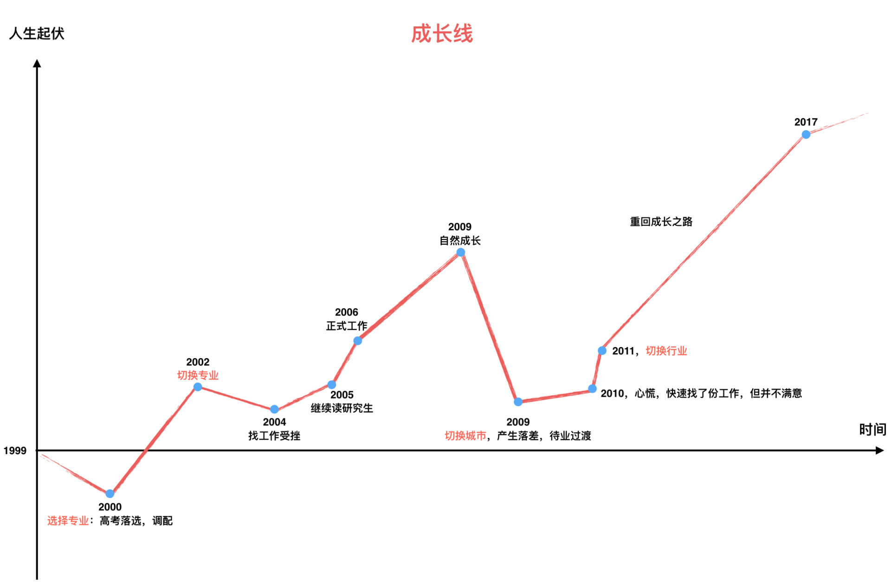</p>
<p>在这张图上，选专业、换专业、换城市、换行业，这几个重要的人生选择点，我都用红色字体标记了。把过往的 18 年浓缩到一张图上后，我就清晰地看出了趋势，在切换行业之前，初心未明，成长的路上起起伏伏，波动很大，也因为不成熟的选择带来过巨大的落差感。</p>
<p>在工作的前几年，图上也有一段快速的自然成长期。因为这时我们就像一张白纸，只要是在认真地做事儿，总是能成长。这段时期，心其实是乱的，但因为忙而充实，也获得了很多成长，但它的问题是：这样的自然成长期有多长取决于你所做事情的天花板，所以才有了后面的一次切换城市带来的落差。</p>
<p>切换了行业，一路走到现在，前路不尽，心已明，行将远。</p>
<p>为什么成为一名程序员，初心若何？有人有天赋，有人凭兴趣，有人看前景。也许，你上路之初还未曾明了，但在路上不时叩问内心，找到初心，会走得更坚定，更长远。</p>
<p>闭上眼睛，你可以试着问自己走上程序道路的初心是否已经明了呢？欢迎给我留言，我们一起分享和讨论。</p>
<h1>02 初惑：技术方向的选择</h1>
<p>初入职场或还在校的同学想必都会有些共同的疑惑，比如：“到底我该选哪个技术方向？”“现在该学哪门语言？”“未来 Java 语言的发展趋势如何？”这些问题的本质其实都是技术的投资决策问题，也即现在我该把时间精力花在哪个方向上，未来的收益才可能最大。</p>
<p>这个问题并不好回答，因为这个问题的本质和 “我现在应该投资哪只股票” 一样。没有人能回答好这个问题，我觉得最好的做法就是：从投资的出发点而非终点来选择一条路径。</p>
<p>至于这样选择的路径是否能在未来获得很好的收益，这是没法预测的。但选择技术方向和选择股票不同的是，只要你在这条路径上持续努力、学习与进步，基本可以保证能和 “大盘” 持平而不至于有亏损，但是否能取得超过 “大盘” 的收益，其实是看运气的。</p>
<h2>选择语言</h2>
<p>选择技术方向，从某种意义上讲就是选择语言。</p>
<p>虽然有一些流传的说法，类似于：“语言并不重要，必要的时候可以在各种语言间自由切换。”但实际情况是，能做到自由切换的前提是你得对一门语言掌握到通透之后，再学习其他语言才可能触类旁通。</p>
<p>计算机程序语言虽然很多，但种类其实有限。2018 TIOBE 程序语言排行榜（见下图）上的前三位（Java、C、C++），本质上其实是一类语言。但大部分人只能选择去熟悉并通透其中一种，因为这些语言背后都有庞大的生态圈。</p>
<p>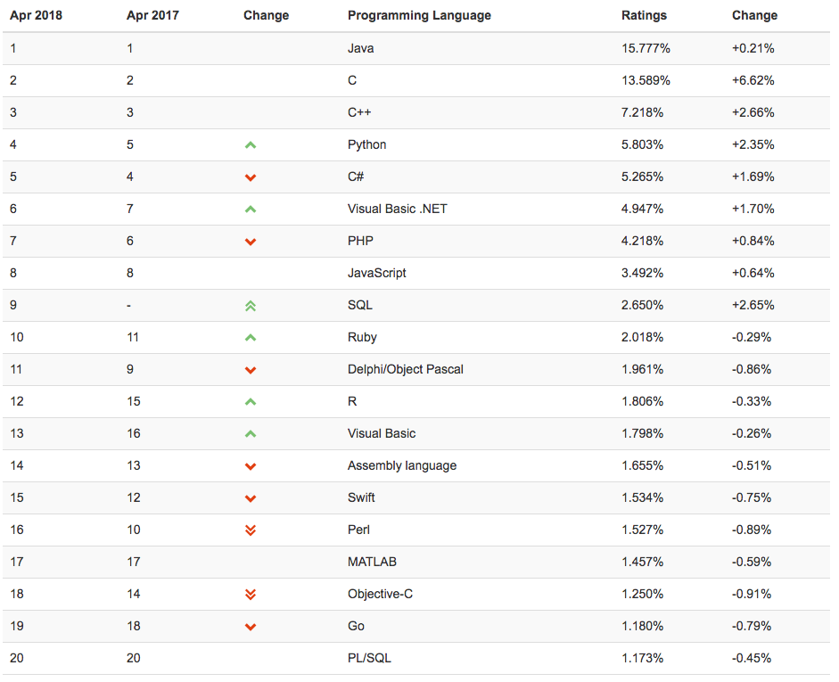</p>
<p>2018 TIOBE 程序语言排行榜</p>
<p>要做到通透，只熟悉语言本身是远远不够的，其实是要熟悉整个生态圈。而三门语言中最年轻的 Java 都有二十多年历史了，足够你耗费数年时光去熟悉其整个生态圈，而且目前其生态圈还处在不断扩张的状态，展现出一种蓬勃的生命力。</p>
<p>那么，要是我来选，我会如何选择语言呢？我会选择那些展现出蓬勃生命力的语言。</p>
<p>但其实十多年前我只是凑巧选择了 Java，它就像是被潮水推到我脚边的漂流瓶，顺手捡了起来。没想到居然蓬勃地发展了十多年，还没见衰退迹象。</p>
<p>那时的 Java 刚诞生不过七八年，和今天的 Go 语言很像。Go 语言在排行榜上的位置蹿升得很快，而且在云计算时代的基础设施上大放异彩，号称是：易用性要超越 PHP，而性能要超越 Java。</p>
<p>那么在 Java 之前我学的是什么？是 Visual Basic、ASP 和 Delphi / Object Pascal。我想今天不少年轻的程序员都未必听过这些语言了。但神奇的是，在 TIOBE 的排行榜上，VB 加了个 .NET 排名竟在世界最广泛的 Web 语言 PHP 和 JavaScript 之上。而十五年前我用的 Delphi / Object Pascal 居然落后 JavaScript 也不远，且远高于 Go、Objective-C，力压 Swift。</p>
<p>这些老牌语言还值得学吗？当然不值得了。因为它们早已进入暮年，没了蓬勃的生命力。但为什么排名还这么高？也许是因为它们也曾有过蓬勃生命力的热血青春，留下了大量的软件系统和程序遗产，至今还没能退出历史的舞台吧。</p>
<p>美国作家纳西姆·塔勒布（《黑天鹅》《反脆弱》等书作者）曾说：</p>
<blockquote>
<p>信息或者想法的预期寿命，和它的现有寿命成正比。</p>
</blockquote>
<p>而编程语言以及由它编写的所有软件系统和程序，本质就是信息了。换句话说就是，如果你想预测一门语言还会存在多久，就看看它已经存在了多久。存活时间足够长的语言，可以预期，它未来也还可能存活这么长时间。当然这一论断并不绝对，但它更多想说明越是新的语言或技术，升级换代越快，也越容易被取代。</p>
<p>这一点在 Delphi 这门语言上已经得到了体现，进入二十一世纪后，这种编写 C/S 架构软件的语言，居然还存活了这么久。</p>
<h2>选择回报</h2>
<p>选择技术方向，选择语言，本质都是一种投资。</p>
<p>我们为此感到焦虑的原因在于，技术变化那么快，就怕自己选了一个方向，投了几年的时间、精力，最后却被技术迭代的浪潮拍在了沙滩上。</p>
<p>按上面塔勒布的说法，越年轻的语言和方向，风险越高。一个今年刚出现的新方向、新语言，你怎么知道它能在明年幸存下来？所以，考虑确定性的回报和更低的风险，你应该选择有一定历史的方向或语言，也许不能带来超额的回报，但最起码能带来稳定的回报，让你先在这个行业里立稳脚跟。在此基础上，再去关注新潮流、新方向或新技术，观察它们的可持续性。</p>
<p>有一句投资箴言：“高风险未必带来高回报。”在选择职业方向的路上，你甚至没法像分散投资一样来控制风险，所以选择确定性的回报，要比抱着赌一把的心态更可取。看看当前的市场需求是什么，最需要什么，以及长期需要什么。</p>
<p>比如，今天技术的热潮在人工智能、机器学习、区块链等上面，这是市场最需要的，而市场给的价格也是最高的。所以，你应该投入这里么？先别头脑发热，看看自己的基础，能否翻越门槛，及时上得了车吗？</p>
<p>世纪之初，互联网时代的到临，网络的爆发，你会写个 HTML 就能月薪上万。上万，似乎不多，但那时北京房价均价也才 5000 多啊。2010 年左右，移动互联网兴起，一年移动开发经验者的平均待遇达到了五到十年 Java 开发的水平。如今，你只会 HTML 基本找不到工作，你有五年移动开发经验和有五年 Java 开发经验的同学，薪资待遇也变得相差不多了。</p>
<p>关于技术，有一句流行的话：“技术总是短期被高估，但长期被低估。”今天，在人工智能领域获得超额回报的顶级专家，实际数十年前在其被低估时就进入了这个领域，数十年的持续投入，才在如今迎来了人工智能的 “牛市” ，有了所谓的超额回报。所以，不妨投入到一些可能在长期被低估的基础技术上，而不是被技术潮流的短期波动所左右。</p>
<p>技术的选择，都是赚取长期回报，短期的波动放在长期来看终将被抵消掉，成为时代的一朵小浪花。</p>
<h2>选择行业</h2>
<p>搞清楚了语言、技术方向和回报的关系后，最后做出选择的立足点通常会落在行业上。</p>
<p>当你问别人该选什么语言时，有人会告诉你，你应该学习 JavaScript，因为这是互联网 Web 时代的通用语言，到了移动互联网时代依然通用，而且现阶段生命力旺盛得就像再年轻十岁的 Java。也有人告诉你也许从 Python 开始更合适，语法简单，上手容易。还有人告诉你，现在学 Java 找工作最容易，平均工资也蛮高。这各种各样的说法充斥在你的耳边，让你犹豫不决，左右为难。</p>
<p>一个问题就像一把锁，开锁的钥匙肯定不会在锁上。否则这个问题也就不是问题了，太容易就解开了，不是吗？所以，选择什么语言通常不在于语言本身的特性。</p>
<p>选语言，就是选职业，而选职业首先选行业。</p>
<p>先想想自己想从事哪个行业的软件开发；然后，再看看：这个行业的现状如何？行业的平均增速如何？和其他行业相比如何？这个行业里最好的公司相比行业平均增速又如何？最后，再看看这些最好的公司都用些什么样的技术栈和语言。如果你想进入这样的公司，那就很简单了，就选择学这样的技术和语言。</p>
<p>这样选择是不是太功利了？选择不是应该看兴趣么？注意，这里选择的前提可不是发展什么业余爱好，而是为了获得安身立命的本领，获得竞争的相对优势。而兴趣，就是这件事里有些吸引你的东西，让你觉这是 “很好玩” 的事。但有个通常的说法是：“一旦把兴趣变成了职业也就失去了兴趣。”因为，职业里面还有很多 “不好玩” 的事。</p>
<p>兴趣能轻松驱动你做到前 50%，但按二八原则，要进入前 20% 的高手领域，仅仅靠兴趣就不够了。兴趣给你的奖励是 “好玩”，但继续往前走就会遇到很多 “不好玩” 的事，这是一种前进的障碍，这时功利，也算是给予你越过障碍所经历痛苦的补偿吧。</p>
<p>以上，就是我关于技术方向选择的一些原则与方法。无论你当初是如何选择走上技术道路的，都可以再想想你为什么要选择学习一门编程语言，学习编程的一部分是学习语言的语法结构，但更大的一部分，同时也是耗时更久且更让你头痛的部分：学习如何像一个工程师一样解决问题。</p>
<p>有时这样的选择确实很难，因为我们缺乏足够的信息来做出最优选择。赫伯特·西蒙说：“当你无法获得决策所需的所有信息时，不要追求最优决策，而要追求满意决策。”定下自己的满意标准，找到一个符合满意标准的折中方案，就开始行动吧。</p>
<p>而停留在原地纠结，什么也不会改变。</p>
<h1>03 初程：带上一份技能地图</h1>
<p>程序世界是一片广阔的大地，相比我十多年前进入这个世界时，这片大地的边界又扩大了很多倍。初入程序世界难免迷茫，要在这个世界立足、生存，并得到很好的发展，应首要具备怎样的技能呢？未来的程序之路，先给自己准备一份基本的技能地图，先有图，再上路。</p>
<p>在程序的技能地图中，需要先开启和点亮哪些部分呢？回顾我过去的经历并结合现实的需要，可以从如下两个不同程度的维度来说明：</p>
<ul>
<li>掌握</li>
<li>了解</li>
</ul>
<p>掌握，意味着是一开始就要求熟练掌握的硬技能，这是生存之本。而至于掌握的深度，是动态的，倒是可以在行进过程中不断去迭代加深。了解，相对掌握不是必需，但也需要达到知其然的程度，甚至知其所以然更好。</p>
<h2>一、掌握</h2>
<p>上路之初，需要掌握的核心生存技能有哪些呢？</p>
<h3>1. 开发平台</h3>
<p>开发平台，它包括一种编程语言、附带的平台生态及相关的技术。在如今这个专业化分工越来越细的时代，开发平台决定了你会成为什么类型和方向的程序员。比如：服务端、客户端或前端开发等。其中进一步细分客户端还可以有 Windows、Mac、iOS 和 Android 等不同的平台。</p>
<p><strong>编程语言</strong></p>
<p>语言的选择基本决定了开发平台的性质，但有些语言可能例外，如：C++、JS、C# 等，这些语言都可以跨多个平台。但即使你选的是这些语言，基本也会归属到某一类平台上。好比你选了 C++，如果你去做了客户端开发，就很少可能再去用 C++ 写服务端程序了。</p>
<p>关于语言的选择，前面我已经写过了选择的逻辑，便不再多说。但选择了语言，我们不仅仅是熟悉语言自身的特性，还需要掌握支撑语言的平台库。Java 若仅从语言特性上来说，有其优点，但其瑕疵和缺陷也一直被吐槽，要是没有 JDK 强大的平台库支撑，想必也不会有今天的繁荣。</p>
<p><strong>平台生态</strong></p>
<p>与语言平台关联的还有其技术生态以及各种技术框架的繁荣程度。这些平台技术生态的存在让使用这门语言编程完成特定的任务变得容易和简单得多。Java 的生命力除了 JDK 的强大支撑，实际还有其平台生态的繁荣，也起了决定性的作用。</p>
<p>在选择了开发平台后，除了语言和平台库之外，其生态体系内主流的技术框架和解决方案也是必选的掌握内容。</p>
<h3>2. 常用算法</h3>
<p>在学校学习的算法，基本是解决各种计算机科学问题的通用方法。</p>
<p>还记得在学校时看过一本算法经典书《算法导论》。刚又把这本书的目录翻了出来过了一遍，发现已经忘记了百分之七、八十的内容。因为忘记的这部分内容，在过去的十多年工作中我基本都没机会用上。那么掌握算法的目的是为了什么呢？</p>
<p>有时候你可能会觉得学校教科书上学习的经典算法，在实际工作中根本就用不上。我还记得考研的时候，专业考试课就是算法与数据结构，在考卷上随手写个排序、树遍历手到擒来。但到研究生毕业去参加腾讯校招面试时，让在白纸上手写一个快排算法，我被卡住了，自然也就没通过。因为好久已经没有进行这样的练习了，而在研究生阶段一年期的公司实习工作场景也没有这样的需求。</p>
<p>那么为什么还要学习这些经典算法？</p>
<p>算法，表达的是一个计算的动态过程，它引入了一个度量标准：时空复杂度。当我回思时，发现这个度量标准思维在工作十余年中一直在发挥作用。如今，几乎所有的经典算法都能在开发平台库里找到实现，不会再需要自己从头写。但结合工作实际的业务场景，我们需要去设计更贴合需求的算法，而只要是算法它都受到时空复杂度的约束，而我们只是在其中进行平衡与折衷。</p>
<p>学校教科书的经典算法，是剥离了业务场景的高度抽象，当时学来有种不知道用在哪里的感觉；如今回头结合真实的业务场景需求再看，会有一种恍然大悟之感。</p>
<h3>3. 数据结构</h3>
<p>数据结构通常都和算法一起出现，但算法表达的是动态特性，而数据结构表达的是一种静态的结构特性。大部分开发平台库都提供了最基础和常用的数据结构实现，这些都是我们需要熟悉并掌握的，包括：</p>
<ul>
<li>数组 Array</li>
<li>链表 Linked List</li>
<li>队列 Queues</li>
<li>堆栈 Stacks</li>
<li>散列 Hashes</li>
<li>集合 Sets</li>
</ul>
<p>另外，还有两种数据结构不属于基础结构，但在现实中有非常广泛的直接映射场景。</p>
<ul>
<li>树 Trees</li>
<li>图 Graphs</li>
</ul>
<p>每种结构都有各种变体，适用于不同的场景，甚至很多时候你还需要会组合不同的结构去解决一些更复杂的问题。</p>
<h2>二、了解</h2>
<p>需要了解的内容比需要掌握的更广泛，但了解了这些方面会让你更高效地协作并解决问题。</p>
<h3>1. 数据存储</h3>
<p>不管你写什么样的程序系统，估计都离不开数据存储。数据是一个业务系统的核心价值所在，所以怎么存储不同类型的生产数据，是你必须要了解的。如今广泛流行的数据存储系统有下面三类：</p>
<ul>
<li>SQL 关系型数据库（如：MySQL、Oracle）</li>
<li>NoSQL 非关系型数据库（如：HBase、MongoDB）</li>
<li>Cache 缓存（如：Redis、Memcached）</li>
</ul>
<p>每一种数据存储系统都有其特定的特性和应用场景。作为程序员，我们通常的需求就是最有效地用好各类数据存储，那么按了解的深度需要依次知道如下几点：</p>
<ul>
<li>如何用？在什么场景下，用什么数据存储的什么特性？</li>
<li>它们是如何工作的？</li>
<li>如何优化你的使用方式？</li>
<li>它们的量化指标，并能够进行量化分析？</li>
</ul>
<p>这 4 点虽不要求一开始就能掌握到一定程度，但你最好一开始就有这个层次思维，在日后的工作中不断去迭代它的深度。</p>
<h3>2. 测试方法</h3>
<p>为什么我们做开发还需要了解测试？</p>
<p>测试思维是一种与开发完全不同的思维模式。有一种流行的开发方法论叫 “测试驱动开发（TDD）”，它的流行不是没有道理的。在写代码的时候，用测试的思维与方式（提供单元测试）去审视和检测代码，也就是说明确要开发某个功能后，先思考如何对这个功能进行测试，并完成测试代码的编写，然后编写相关的代码满足这些测试用例。</p>
<p>开发与测试这两种相反视角的切入维度，能真正长期地提高你写代码的效率和水平。</p>
<h3>3. 工程规范</h3>
<p>每一种开发平台和语言，估计都有其相应约定俗成的一些工程规范要求。最基础的工程规范是代码规范，包括两个方面：</p>
<ul>
<li>代码结构</li>
<li>代码风格</li>
</ul>
<p>像 Java 这么多年下来，逐渐形成了一种基于 Maven 的代码组织结构规范，这种约定俗成的代码结构规范省却了很多没必要的沟通。有时候，同样的内容，有更规范的结构，其可阅读性、理解性就能得到提升。</p>
<p>而至于代码风格，相对没那么标准化。但为了写出更清晰、易读的代码，我们至少要坚持自己写的代码具有某种一致性的风格。另外，除了风格问题，也可以借助静态代码检查工具来规避一些新手爱犯的低级错误，而老手也可以通过这些工具来找到自己的认知与习惯盲点。</p>
<h3>4. 开发流程</h3>
<p>在开发流程方法论上，敏捷基本已经横扫天下，所以我们至少要了解下敏捷开发方法论。</p>
<p>虽然敏捷方法论定义了一些参考实践，但它依然是一组非常松散的概念。每个实践敏捷的开发团队，估计都会根据自己的理解和摸索建立一整套逐渐约定成型的开发流程规范。而为了和团队其他成员更好地协作，估计每个新加入团队的成员都需要了解团队演进形成的开发流程规范。</p>
<p>先了解，再优化。</p>
<h3>5. 源码管理</h3>
<p>既然我们生产代码，自然也需要了解如何管理好代码。</p>
<p>在我的从业经历中，源码管理工具经历了从 CVS 到 SVN 再到 Git 的变迁。Git 诞生的背景是为 Linux 这样超大规模的开源项目准备的，自然决定了其能应对各种复杂场景的源码管理需求。所以，你至少要了解 Git，并用好它。</p>
<p>当工具变得越来越强大时，工具背后的思想其实更重要，对其的理解决定了我们应用工具的模式。而对源码进行管理的最基本诉求有以下三点：</p>
<ul>
<li>并行：以支持多特性，多人的并行开发</li>
<li>协作：以协调多人对同一份代码的编写</li>
<li>版本：以支持不同历史的代码版本切换</li>
</ul>
<p>最后，我把以上内容总结为如下一张图：红色区域相对更小而聚焦，是需要掌握的部分，要求深度；蓝色区域的部分更广而泛，需要广度。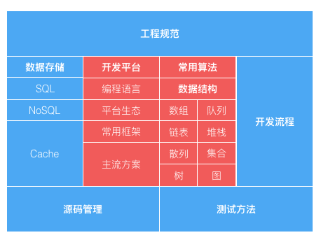</p>
<p>程序员的基础技能图</p>
<p>以上就是我回顾走过的路径后，觉得需要具备的一份基础技能图。十多年后，这张图上的每一个分类都出现了新的技术迭代，有了新的框架、算法和产品等，但它们并不过时，依然可以为你的技能点亮之路提供方向指引。也许，你程序生涯的第一个一万小时你就会花在这张图上了。</p>
<h1>04 初感：别了校园，入了江湖</h1>
<p>每年七月，盛夏，一种火辣兼有闷润的热，但在这份热辣中也有一丝略显冰凉的愁绪。一批刚毕业的学生，将要告别校园，进入职场：一个新的江湖。</p>
<p>一到毕业季，就会经常看到一些转发给新入行程序员的“老司机”指南，老实说，这些指南不少都是金玉良言。当年我毕业新入行时可不像现在有这么多发蒙解惑的“老司机”指南，所以坑都没少踩，若说有什么坑没掉进去，那一定都是因为运气。</p>
<p>当毕业生们看到前路如此多坑时，其实也不必有太大的心理压力，毕竟成长之路不可能是轻松的。我也是这样一路走过来的。所以，这篇就不写关于坑的指南了，而是分享一些我的故事和感悟，给刚踏上征程的你或你们吧。</p>
<h2>重剑无锋</h2>
<p>作为一名新入职的程序员，首要之事就是配备一台电脑。</p>
<p>这个时代基本都是标配笔记本了，近年公司给配的电脑都很不错了，程序员全是高配大屏的 Macbook Pro 了。遥想我第一份工作，领到的是一个二手华硕笔记本，应该是上一个离职的前辈用了好几年的，这也是我的第一个笔记本电脑。</p>
<p>程序员就应该配笔记本电脑，为什么必须是笔记本电脑？不可以是台式机吗？笔记本电脑之于程序员，就像剑之于剑客。剑客的剑是不应该离开身边的，稍有风吹草动，听风辨器，拔剑出鞘（程序员一声不发就掏出笔记本开始写代码）。</p>
<p>当招程序员时，若来者不问公司配备什么笔记本，一般也就属于大多数的普通程序员啦，不太可能是那种 “不滞于物，草木竹石均可为剑” 的独孤求败级高手。</p>
<p>但也会有少数人问公司配什么笔记本电脑的，当对公司提供的笔记本感觉不满意时，就会要求是否可以自备笔记本电脑，而由公司给予补贴。</p>
<p>后一类同学，对环境、工具和效率是敏感的，我觉着就会比前面那类要强，当然我没有具体统计数据，也是纯凭感觉。</p>
<p>我毕业那年，腾讯来学校招聘，本科年薪六万，硕士八万，博士十万，都是税前。那时我心中最好的笔记本应该还是 IBM 的 ThinkPad T 系列，最差也得 10000+ 起的价格吧。但现在年薪十万在一线的北上广深算相当普遍了吧？而笔记本还是一万，所以能买到很不错的笔记本已经不是什么难事了。若现在的公司再在程序员的 “剑” 上琢磨省钱那绝对是得不偿失了。</p>
<p>我的第一个二手华硕笔记本相比现在的超薄轻快的笔记本，那绝对算是相反的厚重慢了。所以我把它称为 “重剑”，和独孤前辈不同的是，他老人家是先用轻剑，再用重剑，而我是先用重剑，然后越用越轻了。</p>
<p>但只是一年后我换了公司，这把 “重剑” 就还了回去。到了第二家公司，入职后才发现公司不配笔记本电脑，全是台式机。你看，当年我就是那种没问公司配什么电脑的普通程序员，考虑那时确实台式机占据主流，并且笔记本还属于一般程序员至少要两三个月工资才能买得起一台趁手的奢侈品范畴，我也就忍了。</p>
<p>新入职没多久，熟悉了公司环境和老同事交接过来的一个旧系统，公司派我出差去客户现场开发调试。我满心以为出差至少得配个笔记本吧，但组长过来说我们这边出差都带台式机的。然后我看看组长一脸正气不带开玩笑的表情，再看看桌上台式机硕大的机箱和 17 寸的 CRT 显示器，瞠目结舌。</p>
<p>“显示器也要带去？” 我问。
“噢，显示器可以让公司 IT 部给你寄过去，但主机箱要自带，因为快递很容易弄坏。” 组长说。
“好吧…”</p>
<p>对话结束，我立马奔去广州太平洋电脑城，花了之前一年工作攒下来的一万块中的七千，买了一台只有 ThinkPad T 系价位零头的 R 系笔记本，之后这把 “剑” 陪伴了我五年。</p>
<p>初入职场的同学，既然选择了某个公司，最大的因素除了薪酬外，想必每个人都还有这样或那样的在意点。当年我最不满意的就是笔记本这个问题，但从工作第二年开始我一直都是自备笔记本工作，持续多年，没花多少钱，但少了很多折腾和不便。</p>
<p>再后来，我挣得稍微多了些，就又自己换了大内存加固态硬盘（SSD）的 Mac。刚换上 Mac 就惊喜地发现，以前一个 Java 工程编译打包下要 50 多秒，在 Mac 下只需要 20 秒了。考虑写程序的这么多年，每天我要执行多少次编译打包命令，虽然每次节省的时间不多，但总体来看它大大提高了我的效率。</p>
<p>为什么我要单独谈谈笔记本这件小事？因为这是我们程序员每天使用最多的工具，如果你不在乎你的工具，可能你也就不会在乎你的时间和效率。</p>
<h2>野蛮生长</h2>
<p>现在的公司基本都会给新入职的同学配备一个老员工，俗称 “导师”。</p>
<p>导师制的主要目的是帮助新员工迅速熟悉公司环境和融入团队中。这个初衷自然是没问题的，只是因为导师制其实不算正式的规章制度，更多是一种文化上的强制介入，但很多时候又没有绑定任何利益机制，所以它的效果实际上和个体差异有很大关系。</p>
<p>我觉着新入行的同学，尽量不要去依赖此类导师制。我并不是否定这种机制，而是提醒你不要形成心理依赖，觉着面临问题时，总是有人可以询问和帮忙。职场的第一个台阶就是形成独立性：独立承担职责的能力。这和协作没有冲突，团队协作可以算是履行职责的一种途径和手段。</p>
<p>就以简单的问问题为例，如果只抱着获得答案搞定自己的事情为出发点，一次、两次也就罢了，长此以往是不可行的。因为通过你问出什么样的问题，就可以看出你对这个问题做出了怎样的探索与思考，以及让你困惑的矛盾点在哪里。有些人就喜欢不假思索地问些 Google 都能够轻易回答的问题，形成路径依赖，虽然最终搞定了问题，但换得的评价却不会高，特别要省之戒之。</p>
<p>当你能够问出 Google 都不容易回答的问题时，这可能才是你真正走上职业程序员的开端。</p>
<p>知乎上有个问题：“普通人到底跟职业运动员有多大差距？”里面有个回答，以篮球运动为例给出一个生动的评分体系。假如巅峰时的迈克尔·乔丹算满分 100，那么国内顶级的球员，巅峰时的易建联可能刚刚及格得分在 60～70 之间，而大部分业余选手基本就在 0.1～0.N 之间波动了。</p>
<p>幸运的是程序员这个职业不像运动员那么惨烈，借用上面的评分标准，假如把奠定计算机行业基础的那一批图灵奖得主级别的程序员定义在 90～100 分档，那么我们很多靠编码为生的程序员基本都在 1～10 分档间分布，而业余的只是写写 Demo 的程序员可能就是在 0.1～0.N 之间了。</p>
<p>所以，进入职场后，你需要先把得分从小数提高到整数，再持续努努力提升到两位数，搞不好就成了行业某个垂直细分领域小有名气的专家了。</p>
<p>都不需要及格的分数，程序员就能获得不错的成就感和回报。只需要是巅峰者的十分之一或二十分之一，基本就能超越身边绝大多数人了。望着遥远的巅峰不停地去靠近，翻越身前脚下的一座座小山包，然后不知不觉就超越了自己。</p>
<p>总之，应像野草一样野蛮而快速地生长起来。</p>
<h2>青春有价</h2>
<p>青春，到底是无价，还是有价？</p>
<p>电影《寒战》里面有个情节，劫匪劫持了一辆警方的冲锋车和五名警员，勒索赎金时让警方自己算一辆冲锋车及其装备外加五名警员的性命值多少钱。然后电影里一阵眼花缭乱的计算得出了最终价格，大约九千多万港币。</p>
<p>后来采访导演问是怎么个算法，导演如是说：</p>
<blockquote>
<p>五个警员，若不在事件中死去，由现在到退休期间的十多二十年任职的每月薪酬、房屋及子女医疗津贴、加上假设退休前的职位升迁，香港市民平均年龄以男方 79 岁，女方 85.9 岁的生存上限而计算的长俸，并加上冲锋车流动武器库内的价值、冲锋车本身的车价及保险等最后算出来的总值。</p>
</blockquote>
<p>按这么一算，其实一生值不了多少钱啊。</p>
<p>年轻时候嘴边爱唠叨一句话叫：青春无价。其实从我们挣到第一份工资开始，人生就是有价的了。而最黄金时段的青春就在毕业后的十年内，这是大部分人心理和心智走向成熟的阶段，但这十年的价值从市场价格衡量来看是十分有限的。</p>
<p>对于 2018 年的毕业生， BAT 三家给出的年薪大约二十万左右，换算到月上每月接近两万了。而另外很大一部分进不了 BAT 三家的毕业生可能平均拿不到那么高，但估计在一线城市一万是差不多的。这样一算，未来十年你觉得能挣多少钱？</p>
<p>喜欢从静止的视角看问题的人一算大概一年十来万，十年也就一百多万，这个收入相对目前一线城市的房价，还能安居乐业吗？</p>
<p>另外思考一个问题：你能在十年后做到相比刚毕业时稳定收入增长十倍吗？也就是说现在月薪一万的人，十年后能月入十万吗？难，非常难。不信我们下面仔细算算。</p>
<p>我们回到用动态的视角看前面那个问题，你持续学习，努力工作，年年涨薪 20%（注意我说的是年年，这很不容易，也许你会说跳一次槽就可能翻倍，但你能年年跳槽翻倍么），十年后你年的收入将是十年前的 6.2 倍，离十倍还有距离，但换算为年薪也有七八十万了。所以要想靠加薪加到月入十万真的是一件极难的事情，而且即使做到了也离我们心中的无价青春，还差很远吧？</p>
<p>认清了这个现实，我们明白了这十年的青春是十分有价的。所以这时有人说了，要去创业，才有可能突破。前两年（2015）都在鼓励万众创业，但真实的现实是，你要给目前的万众创业者一个稳定的七八十万年薪，80%+ 的创业者表示就会放弃创业了，这数据是来自 TOMsInsight 深度观察文《互联网乱世之下，那些人才流动中的心酸和无奈》对 100 个创业者的抽样调查。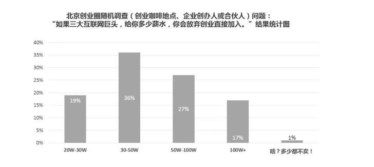</p>
<p>TOMsInsight 创业者放弃公司的薪水额度抽样调查</p>
<p>那么持续努力的学习还有意义吗？我只是说你很难做到每年加薪 20%，但是却可以做到每年比去年的自己多增长 20% 的知识、见识和能力。而关于知识、见识和能力的积累与相应价值的变现，理论与现实的对比可能如下图，纵坐标：年薪（单位万），横坐标：工作年限。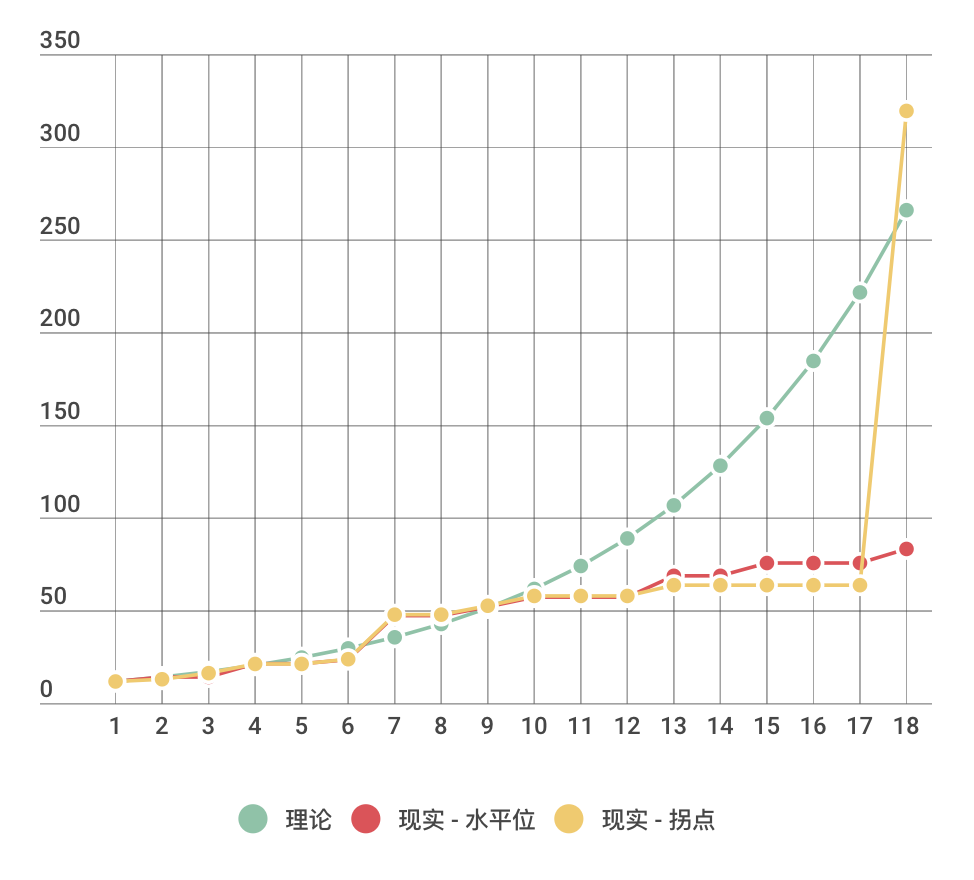</p>
<p>年薪与工作年限概念图</p>
<p>现实不太可能因为你的能力每增长 20% 就会立刻体现在你的收入上。现实有两种可能：一种存在一个拐点让你的积累获得相应的价格体现，另一种也可能不存在这个拐点，停留在某个水平位。其中拐点就是我们现实中常说的机遇吧。</p>
<p>无论怎样，要想获得拐点出现的机遇，可能你也只能持续努力地积累下去。</p>
<p>关于人生的选择，从来都是 All In，可没有股票那种分批建仓的办法，写到这里想起了曾经在网上记录下来的几句话，现分享给你：</p>
<blockquote>
<p>我不停的擦拭手中的利剑，不是因为我喜欢它，也不是因为它能带来安全，只是因为，每当下一次冲锋的号角响起时，我能够迅速拔出，纵横厮杀，直至战斗结束，不让自己倒下。 …… 生活在这样的时代，与其被迫上场，心怀恐惧，不如主动征伐，加入时代的滚滚大潮当中，去见识一下时代的风采，写下自己的故事。</p>
</blockquote>
<p>这个江湖会有你的故事吗？</p>
<p>在这里我分享了一些我刚入江湖的故事，那你有怎样的精彩故事呢？欢迎你留言，和我一起分享。</p>
<h1>05 架构与实现：它们的连接与分界？</h1>
<p>把一种想法、一个需求变成代码，这叫 “实现”，而在此之前，技术上有一个过程称为设计，设计中有个特别的阶段叫 “架构”。</p>
<p>程序员成长的很长一段路上，一直是在 “实现”，当有一天，需要承担起 “架构” 的责任时，可能会有一点搞不清两者的差异与界线。</p>
<h2>是什么</h2>
<p>架构是什么？众说纷纭。</p>
<p>架构（Architecture）一词最早源自建筑学术语，后来才被计算机科学领域借用。以下是其在维基百科（Wikipedia）中的定义：</p>
<blockquote>
<p>架构是规划、设计和构建建筑及其物理结构的过程与产物。在计算机工程中，架构是描述功能、组织和计算机系统实现的一组规则与方法。
Architecture is both the process and the product of planning, designing, and constructing buildings and other physical structures. In computer engineering, “computer architecture” is a set of rules and methods that describe the functionality, organization, and implementation of computer systems.</p>
</blockquote>
<p>在建筑学领域，有一组清晰的规则和方法来定义建筑架构。但可惜，到目前为止，在计算机软件工程领域并没有如此清晰的一组规则与方法来定义软件架构。</p>
<p>好在经过多年的实践，行业里逐渐形成了关于软件架构的共同认知：<strong>软件系统的结构与行为设计</strong>。而实现就是围绕这种已定义的宏观结构去开发程序的过程。</p>
<h2>做什么</h2>
<p>架构做什么？很多人会感觉糊里糊涂的。</p>
<p>我刚获得“架构师”称号时，也并不很明确架构到底在做什么，交付的是什么。后来不断在工作中去反思、实践和迭代，我才慢慢搞清楚架构工作和实现工作的差异与分界线。</p>
<p>从定义上，你已知道架构是一种结构设计，但它同时可能存在于不同的维度和层次上：</p>
<ul>
<li>高维度：指系统、子系统或服务之间的切分与交互结构。</li>
<li>中维度：指系统、服务内部模块的切分与交互结构。</li>
<li>低维度：指模块组成的代码结构、数据结构、库表结构等。</li>
</ul>
<p>在不同规模的团队中，存在不同维度的架构师，但不论工作在哪个维度的架构师，他们工作的共同点包括下面 4 个方面：</p>
<ol>
<li>确定边界：划定问题域、系统域的边界。</li>
<li>切分协作：切分系统和服务，目的是建立分工与协作，并行以获得效率。</li>
<li>连接交互：在切分的各部分之间建立连接交互的原则和机制。</li>
<li>组装整合：把切分的各部分按预期定义的规则和方法组装整合为一体，完成系统目标。</li>
</ol>
<p>有时，你会认为架构师的职责是要交付 “一种架构”，而这“一种架构” 的载体通常又会以某种文档的形式体现。所以，很容易误解架构师的工作就是写文档。但实际上<strong>架构师的交付成果是一整套决策流，文档仅仅是交付载体</strong>，而且仅仅是过程交付产物，最终的技术决策流实际体现在线上系统的运行结构中。</p>
<p>而对于实现，你应该已经很清楚是在做什么了。但我在这里不妨更清晰地分解一下。实现的最终交付物是程序代码，但这个过程中会发生什么？一般会有下面 6 个方面的考虑：选型评估；程序设计；执行效率；稳定健壮；维护运维；集成部署。</p>
<p>下表为其对应的详细内容：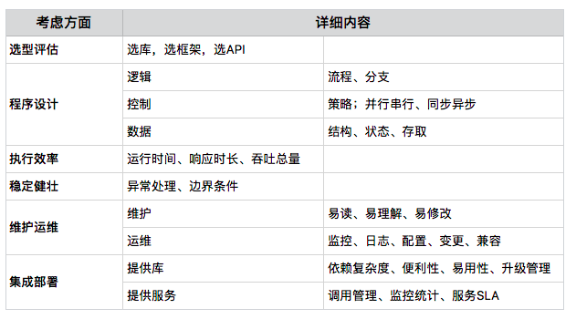</p>
<p>我以交付一个功能需求为例，讲述下这个过程。</p>
<p>实现一个功能，可能全部自己徒手做，也可能选择一些合适的库或框架，再从中找到需要的 API。</p>
<p>确定了合适的选型后，需要从逻辑、控制与数据这三个方面进一步考虑程序设计：</p>
<ul>
<li>逻辑，即功能的业务逻辑，反映了真实业务场景流程与分支，包含大量业务领域知识。</li>
<li>控制，即考虑业务逻辑的执行策略，哪些可以并行执行，哪些可以异步执行，哪些地方又必须同步等待结果并串行执行？</li>
<li>数据，包括数据结构、数据状态变化和存取方式。</li>
</ul>
<p>开始编码实现时，你进一步要考虑代码的执行效率，需要运行多长时间？要求的最大等待响应时间能否满足？并发吞吐能力如何？运行的稳定性和各种边界条件、异常处理是否考虑到了？上线后，出现 Bug，相关的监控、日志能否帮助快速定位？是否有动态线上配置和变更能力，可以快速修复一些问题？新上线版本时，你的程序是否考虑了兼容老版本的问题等？</p>
<p>最后你开发的代码是以什么形态交付？如果是提供一个程序库，则需要考虑相关的依赖复杂度和使用便利性，以及未来的升级管理。如果是提供服务，就需要考虑服务调用的管理、服务使用的统计监控，以及相关的 SLA 服务保障承诺。</p>
<p>以上，就是我针对整个实现过程自己总结的一个思维框架。如果你每次写代码时，都能有一个完善的思维框架，应该就能写出更好的代码。这个思维框架是在过去多年的编程经验中逐步形成的，在过去每次写代码时如果漏掉了其中某个部分，后来都以某种线上 Bug 或问题的形式，让我付出了代价，做出了偿还。</p>
<p>“实现”作为一个过程，就是不断地在交付代码流。而完成的每一行代码，都包含了上面这些方面的考虑，而这些方面的所有判断也是一整套决策流，然后固化在了一块块的代码中。</p>
<p>因为实现是围绕架构来进行的，所以架构的决策流在先，一定程度上决定了实现决策流的方向与复杂度，而架构决策的失误，后续会成倍地放大实现的成本。</p>
<h2>关注点</h2>
<p>架构与实现过程中，有很多很多的点值得关注，若要选择一个核心点，会是什么？</p>
<p>架构的一个核心关注点，如果只能是一个点，我想有一个很适合的字可以表达： 熵。“熵”是一个物理学术语，在热力学中表达系统的混乱程度，最早是“信息论之父”克劳德·艾尔伍德·香农借用了这个词，并将其引入了信息科学领域，用以表达系统的混乱程度。</p>
<p>软件系统或架构，不像建筑物会因为时间的流逝而自然损耗腐坏，它只会因为变化而腐坏。一开始清晰整洁的架构与实现随着需求的变化而不断变得浑浊、混乱。这也就意味着系统的“熵”在不断增高。</p>
<p>这里我用一个图展示软件系统“熵”值的生命周期变化，如下：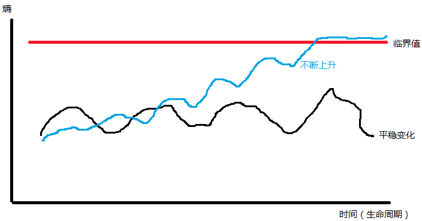</p>
<p>系统只要是活跃的，“熵”值就会在生命周期中不断波动。需求的增加和改变，就是在不断增加“熵”值（系统的混乱程度）。但软件系统的“熵”有个临界值，当达到并超过临界值后，软件系统的生命也基本到头了。这时，你可能将迫不得已采取一种行动：重写或对系统做架构升级。</p>
<p>如果你不关注、也不管理系统的“熵”值，它最终的发展趋势就如图中的蓝线，一直升高，达到临界点，届时你就不得不付出巨大的代价来进行系统架构升级。</p>
<p>而实现中重构与优化的动作则是在不断进行减“熵”，作出平衡，让系统的“熵”值在安全的范围内波动。</p>
<p>那么，关于实现的核心关注点，也就呼之欲出了，我们也可以用一个字表达：简。</p>
<p>简，是简单、简洁、简明、简化，都是在做减法，但不是简陋。关于实现的全部智慧都浓缩在了这一个字里，它不仅减少代码量，也减少了开发时间，减少了测试时间，减少了潜在 Bug 的数量，甚至减少了未来的维护、理解与沟通成本。</p>
<p>架构关注复杂度的变化，自然就会带来简化，而实现则应当顺着把“简”做到极致。</p>
<h2>断裂带</h2>
<p>架构与实现之间，存在一条鸿沟，这是它们之间的断裂带。</p>
<p>断裂带出现在架构执行过程之中，落在文档上的架构决策实际上是静态的，但真正的架构执行过程却是动态的。架构师如何准确地传递架构决策？而开发实施的效果又如何能与架构决策保持一致？在这个过程中出现实施与决策的冲突，就又需要重新协调沟通讨论以取得新的一致。</p>
<p>当系统规模比较小时，有些架构师一个人就能把全部的设计决策在交付期限内开发完成，这就避免了很多沟通协调的问题。好些年前，我就曾这样做过一个小系统的架构升级改造，但后来的系统越来越大，慢慢就需要几十人的团队来分工协作。光是准确传递决策信息，并维持住大体的一致性，就是一件非常有挑战的工作了。</p>
<p>当系统规模足够大了，没有任何架构师能够把控住全部的细节。在实践中，我的做法是定期对系统的状态做快照，而非去把握每一次大大小小的变化，因为那样直接就会让我过载。在做快照的过程中我会发现很多的细节，也许和我当初想的完全不一样，会产生出一种“要是我来实现，绝对不会是这样”的感慨。</p>
<p>但在我发现和掌握的所有细节中，我需要做一个判断，哪些细节上的问题会是战略性的，而我有限的时间和注意力，必须放在这样的战略性细节上。而其他大量的实现细节也许和我想的不同，但只要没有越出顶层宏观结构定义的边界即可。系统是活的，控制演化的方向是可行的，而妄图掌控演化过程的每一步是不现实的。</p>
<p>关注与把控边界，这就比掌控整个领地的范围小了很多，再确认领地中的战略要地，那么掌控的能力也就有了支撑。架构与实现的鸿沟会始终存在，在这条鸿沟上选择合适的地方建设桥梁，建设桥梁的地方必是战略要地。</p>
<h2>等效性</h2>
<p>架构升级中，经常被问到一个问题：“这个架构能实现么？”</p>
<p>其实，这根本不是一个值得疑惑的问题。相对于建筑架构，软件架构过程其实更像是城市的规划与演变过程。有一定历史的城市，慢慢都会演变出所谓的旧城和新城。而新城相对于旧城，就是一次架构升级的过程。</p>
<p>城市规划师会对城市的分区、功能划分进行重新定位与规划。一个旧城所拥有的所有功能，如：社区、学校、医院、商业中心，难道新城会没有，或者说 “实现” 不了吗？</p>
<p>任何架构的可实现性，是完全等效的，但实现本身却不是等效的，对不同的人或不同的团队可实现性的可能、成本、效率是绝对不等效的。</p>
<p>近些年，微服务架构火了，很多人都在从曾经的单体应用架构升级到微服务架构。以前能实现的功能，换成微服务架构肯定也可以实现，只是编写代码的方式不同，信息交互的方式也不同。</p>
<p>架构升级，仅仅是一次系统的重新布局与规划，成本和效率的重新计算与设计，“熵”的重新分布与管理。</p>
<p>最后我归纳下：架构是关注系统结构与行为的决策流，而实现是围绕架构的程序开发过程；架构核心关注系统的“熵”，而实现则顺应“简”；架构注重把控系统的边界与 “要塞”，而实现则去建立 “领地”；所有架构的可实现性都是等效的，但实现的成本、效率绝不会相同。</p>
<p>文中提到，架构和实现之间有一条断裂带，而让架构与实现分道扬镳的原因有：</p>
<ul>
<li>沟通问题：如信息传递障碍。</li>
<li>水平问题：如技术能力不足。</li>
<li>态度问题：如偷懒走捷径。</li>
<li>现实问题：如无法变更的截止日期（Deadline）。</li>
</ul>
<h1>06 模式与框架：它们的关系与误区？</h1>
<p>在学习程序设计的路上，你一定会碰到“设计模式”，它或者给你启发，或者让你疑惑，并且你还会发现在不同的阶段遇到它，感受是不同的。而“开发框架”呢？似乎已是现在写程序的必备品。那么框架和模式又有何不同？它们有什么关系？在程序设计中又各自扮演什么角色呢？</p>
<h2>设计模式</h2>
<p>设计模式，最早源自 GoF 那本已成经典的《设计模式：可复用面向对象软件的基础》一书。该书自诞生以来，在程序设计领域已被捧为“圣经”。</p>
<p>软件设计模式也是参考了建筑学领域的经验，早在建筑大师克里斯托弗·亚历山大（Christopher Alexander）的著作《建筑的永恒之道》中，已给出了关于“模式”的定义：</p>
<blockquote>
<p>每个模式都描述了一个在我们的环境中不断出现的问题，然后描述了该问题的解决方案的核心，通过这种方式，我们可以无数次地重用那些已有的成功的解决方案，无须再重复相同的工作。</p>
</blockquote>
<p>而《设计模式》一书借鉴了建筑领域的定义和形式，原书中是这么说的：</p>
<blockquote>
<p>本书中涉及的设计模式并不描述新的或未经证实的设计，我们只收录那些在不同系统中多次使用过的成功设计；尽管这些设计不包括新的思路，但我们用一种新的、便于理解的方式将其展现给读者。</p>
</blockquote>
<p>虽然该书采用了清晰且分门别类的方式讲述各种设计模式，但我相信很多新入门的程序员在看完该书后还是会像我当年一样有困扰，无法真正理解也不知道这东西到底有啥用。</p>
<p>早年我刚开始学习 Java 和面向对象编程，并编写 JSP 程序。当我把一个 JSP 文件写到一万行代码时，自己终于受不了了，然后上网大量搜索到底怎样写 JSP 才是对的。之后，我就碰到了《设计模式》一书，读完了，感觉若有所悟，但再去写程序时，反而更加困扰了。</p>
<p>因为学 “设计模式” 之前，写程序是无所顾忌，属于拿剑就刺，虽无章法却还算迅捷。但学了一大堆 “招式” 后反而变得有点瞻前顾后，每次出剑都在考虑招式用对没，挥剑反倒滞涩不少。有人说：“设计模式，对于初窥门径的程序员，带来的麻烦简直不逊于它所解决的问题。”回顾往昔，我表示深有同感。</p>
<p>后来回想，那个阶段我把《设计模式》用成了一本 “菜谱” 配方书。现实是，没做过什么菜只是看菜谱，也只能是照猫画虎，缺少好厨师的那种能力——火候。初窥门径的程序员其实缺乏的就是这样的“火候”能力，所以在看《设计模式》时必然遭遇困惑。而这种“火候”能力则源自大量的编程设计实践，在具体的实践中抽象出模式的思维。</p>
<p>“设计模式” 是在描述一些抽象的概念，甚至还给它们起了一些专有名字，这又增加了一道弯儿、一层抽象。初窥门径的程序员，具体的实践太少，面临抽象的模式描述时难免困惑。但实践中，经验积累到一定程度的程序员，哪怕之前就没看过《设计模式》，他们却可能已经基于经验直觉地用起了某种模式。</p>
<p>前面我说过我刚学习编程时看过一遍《设计模式》，看完后反而带来更多的干扰，不过后来倒也慢慢就忘了。好些年后，我又重读了一遍，竟然豁然开朗起来，因为其中一些模式我已经在过往的编程中使用过很多次，另一些模式虽未碰到，但理解起来已不见困惑。到了这个阶段，其实我已经熟练掌握了从具体到抽象之间切换的思维模式，设计模式的 “招数” 看来就亲切了很多。</p>
<p>在我看来，模式是前人解决某类问题方式的总结，是一种解决问题域的优化路径。但引入模式也是有代价的。设计模式描述了抽象的概念，也就在代码层面引入了抽象，它会导致代码量和复杂度的增加。而衡量应用设计模式付出的代价和带来的益处是否值得，这也是程序员 “火候” 能力另一层面的体现。</p>
<p>有人说，设计模式是招数；也有人说，设计模式是内功。我想用一种大家耳熟能详的武功来类比：降龙十八掌。以其中一掌“飞龙在天”为例，看其描述：</p>
<blockquote>
<p>气走督脉，行手阳明大肠经商阳…此式跃起凌空，居高下击，以一飞冲天之式上跃，双膝微曲，提气丹田，急发掌劲取敌首、肩、胸上三路。</p>
</blockquote>
<p>以上，前半句是关于内功的抽象描述，后半部分是具体招数的描述，而设计模式的描述表达就与此有异曲同工之妙。所以，设计模式是内功和招数并重、相辅相成的 “武功”。</p>
<p>当你解决了一个前人从没有解决的问题，并把解决套路抽象成模式，你就创造了一招新的 “武功”，后来的追随者也许会给它起个新名字叫：某某模式。</p>
<h2>开发框架</h2>
<p>不知从何时起，写程序就越来越离不开框架了。</p>
<p>记得我还在学校时，刚学习 Java 不久，那时 Java 的重点是 J2EE（现在叫 Java EE 了），而 J2EE 的核心是 EJB。当我终于用“JSP + EJB + WebLogic（EJB 容器）+ Oracle 数据库”搭起一个 Web 系统时，感觉终于掌握了 Java 的核心。</p>
<p>后来不久，我去到一家公司实习，去了以后发现那里的前辈们都在谈论什么 DI（依赖注入）和 IoC（控制反转）等新概念。他们正在把老一套的 OA 系统从基于 EJB 的架构升级到一套全新的框架上，而那套框架包含了一堆我完全没听过的新名词。</p>
<p>然后有前辈给我推荐了一本书叫 <em>J2EE Development Without EJB</em>，看完后让我十分沮丧，因为我刚刚掌握的 Java 核心技术 EJB 还没机会出手就已过时了。</p>
<p>从那时起，我开始知道了框架（Framework）这个词，然后学习了一整套的基于开源框架的程序开发方式，知道了为什么 EJB 是重量级的，而框架是轻量级的。当时 EJB 已步入暮年，而框架的春天才刚开始来临，彼时最有名的框架正好也叫 Spring。如今框架已经枝繁叶茂，遍地开花。</p>
<p>现在的编程活动中，已是大量应用框架，而框架就像是给程序员定制的开发脚手架。一个框架是一个可复用的设计组件，它统一定义了高层设计和接口，使得从框架构建应用程序变得非常容易。因此，框架可以算是打开“快速开发”与“代码复用”这两扇门的钥匙。</p>
<p>在如今这个框架遍地开花的时代，正因为框架过于好用、易于复用，所以也可能被过度利用。</p>
<p>在 Java 中，框架很多时候就是由一个或一些 jar 包组成的。早在前几年（2012 年的样子）接触到一个 Web 应用系统，当时我尝试去拷贝一份工程目录时，意外发现居然有接近 500M 大小，再去看依赖的 jar 包多达 117 个，着实吓了一跳。在 500M 工程目录拷贝进度条缓慢移动中，我在想：“如今的程序开发是不是患上了框架过度依赖症？”</p>
<p>我想那时应该没有人能解释清楚为什么这个系统需要依赖 117 个 jar 包之多，也许只是为了完成一个功能，引入了一个开源框架，而这个框架又依赖了其他 20 个 jar 包。</p>
<p>有时候，框架确实帮我们解决了大部分的脏活累活，如果运气好，这些框架的质量很高或系统的调用量不大，那么它们可能也就从来没引发过什么问题，我们也就不需要了解它们是怎么去解决那些脏活、累活的。但若不巧，哪天某个框架在某些情况下出现了问题，在搞不懂框架原理的情况下，就总会有人惊慌失措。</p>
<p>如今，框架带来的束缚在于，同一个问题，会有很多不同框架可供选择。如何了解、评估、选择与取舍框架，成了新的束缚。</p>
<p>一些知名框架都是从解决一个特定领域问题的微小代码集合开始发展到提供解决方案、绑定概念、限定编程模式，并尝试不断通用化来扩大适用范围。</p>
<p>这样的框架自然不断变得庞大、复杂、高抽象度。</p>
<p>我一直不太喜欢通用型的框架，因为通用则意味着至少要适用于大于两种或以上的场景，场景越多我们的选择和取舍成本越高。另外，通用意味着抽象度更高，而现实是越高的抽象度，越不容易被理解。例如，人生活在三维世界，理解三维空间是直观的，完全没有抽象，理解四维空间稍微困难点，那五维或以上理解起来就很困难了。</p>
<p>框架，既是钥匙，也是枷锁，既解放了我们，也束缚着我们。</p>
<h2>两者关系</h2>
<p>分析了模式，解读了框架，那么框架和模式有什么关系呢？</p>
<p>框架和模式的共同点在于，它们都提供了一种问题的重用解决方案。其中，框架是代码复用，模式是设计复用。</p>
<p>软件开发是一种知识与智力的活动，知识的积累很关键。框架采用了一种结构化的方式来对特定的编程领域进行了规范化，在框架中直接就会包含很多模式的应用、模式的设计概念、领域的优化实践等，都被固化在了框架之中。框架是程序代码，而模式是关于这些程序代码的知识。</p>
<p>比如像 Spring 这样的综合性框架的使用与最佳实践，就隐含了大量设计模式的套路，即使是不懂设计模式的初学者，也可以按照这些固定的编程框架写出符合规范模式的程序。但写出代码完成功能是一回事，理解真正的程序设计又是另外一回事了。</p>
<p>小时候，看过一部漫画叫《圣斗士》。程序员就像是圣斗士，框架是“圣衣”，模式是“流星拳“，但最重要的还是自身的“小宇宙”啊。</p>
<p>我相信在编程学习与实践的路上，你对设计模式与开发框架也有过自己的思考。欢迎给我留言，说说你有过怎样的认识变化和体会，我们一起讨论。</p>
<h1>07 多维与视图：系统设计的思考维度与展现视图</h1>
<p>大学上机械设计课程时学习了 “三视图” 。三视图是观测者从三个不同位置观察同一个空间几何体所画出的图形，是正确反映物体长宽高尺寸正投影的工程图，在工程设计领域十分有用。三视图也是精确的，任何现实世界中的立体物都必然能被 “三视图” 投影到二维的平面，有了这张图就能准确制作出相应的机械零部件。</p>
<p>但在软件设计领域，则有较大的不同，软件系统是抽象的，而且维度更多。20 世纪 90 年代，软件行业诞生了 UML（Unified Modeling Language）： 统一建模语言，一种涵盖软件设计开发所有阶段的模型化与可视化支持的建模语言。</p>
<p>从 UML 的出现中就可以知道，软件先驱们一直在不懈地努力，使软件系统设计从不可直观感受触摸的抽象思维空间向现实空间进行投影。</p>
<p>UML 是一种类似于传统工程设计领域 “三视图” 的尝试，但却又远没有达到 “三视图” 的精准。虽然 UML 没能在工程实施领域内广泛流行起来，但其提供的建模思想给了我启发。让我一直在思考应该需要有哪些维度的视图，才能很好地表达一个软件系统的设计。</p>
<p>而在多年的工程实践中，我逐渐得到了一些维度的视图，下面就以我近些年一直在持续维护、设计、演进的系统（京东咚咚）为例来简单说明下。</p>
<h2>一、组成视图</h2>
<p>组成视图，表达了系统由哪些子系统、服务、组件部分构成。</p>
<p>2015 年，我写过一篇关于咚咚的文章：《京东咚咚架构演进》。当时我们团队对系统进行了一次微服务化的架构升级，而微服务的第一步就是拆分服务，并表达清楚拆分后整个系统到底由哪些服务构成，所以有了下面这张系统服务组成图。</p>
<p>如下图示例，它对服务进行大类划分，图中用了不同的颜色来表达这种分类：</p>
<p>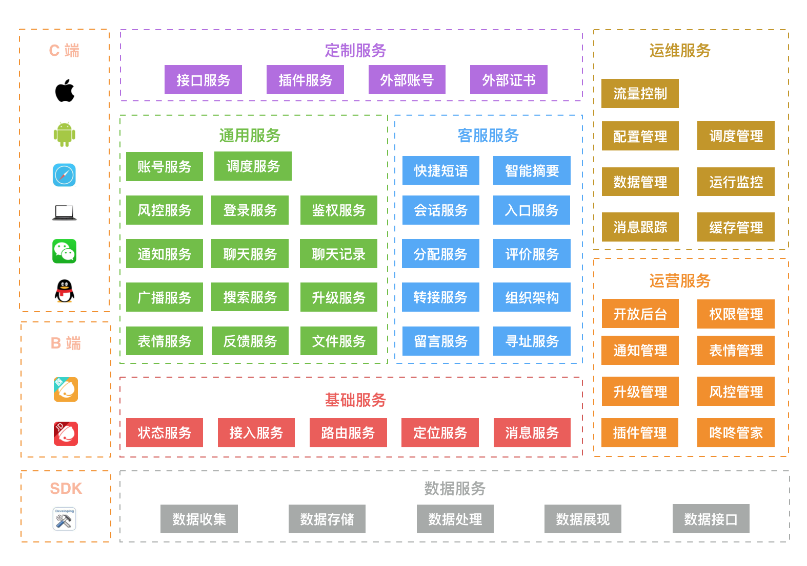</p>
<p>组成视图示例</p>
<p>每一类服务提供逻辑概念上比较相关的功能，而每一个微服务又按照如下两大原则进行了更细的划分：</p>
<ul>
<li>单一化：每个服务提供单一内聚的功能集。</li>
<li>正交化：任何一个功能仅由一个服务提供，无提供多个类似功能的服务。</li>
</ul>
<p>如上，就是我们系统的服务组成视图，用于帮助团队理解整体系统的宏观组成，以及个人的具体工作内容在整个系统中的位置。</p>
<p>了解了服务的组成，进一步自然就需要了解服务之间的关系与交互。</p>
<h2>二、交互视图</h2>
<p>交互视图，表达了系统或服务与外部系统或服务的协作关系，也即：依赖与被依赖。</p>
<p>由于咚咚系统的业务场景繁多，拆分出来的服务种类也比较多，交互关系复杂。所以可以像地图一样通过不同倍率的缩放视角来表达和观察服务之间的交互关系。</p>
<p>如下图，是一张宏观大倍率的整体交互视图示例。它隐藏了内部众多服务的交互细节，强调了终端和服务端，以及服务端内部交互的主要过程。这里依然以地图作类比，它体现了整体系统主干道场景的运动过程。而每一个服务本身，在整体的交互图中，都会有其位置，有些在主干道上，而有些则在支线上。</p>
<p>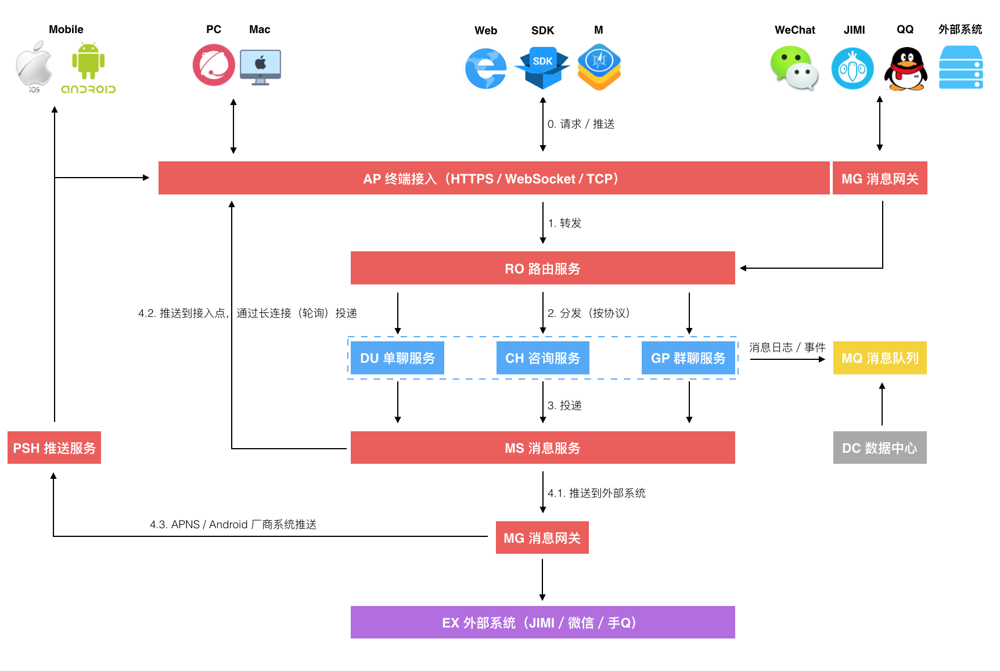</p>
<p>交互视图示例</p>
<p>如果我们把目光聚焦在一个服务上，以其为中心的表达方式，就体现了该服务的依赖协作关系。所以，可以从不同服务为中心点出发，得到关注点和细节更明确的局部交互细节图，而这样的细节图一般掌握在每个服务开发者的脑中。当我们需要写关于某个服务的设计文档时，这样的局部细节交互图也应该是必不可少的。</p>
<p>在逻辑的层面了解了服务间的协作与交互后，则需要更进一步了解这些服务的部署环境与物理结构。</p>
<h2>三、部署视图</h2>
<p>部署视图，表达系统的部署结构与环境。</p>
<p>部署视图，从不同的人员角色出发，关注点其实不一样，不过从应用开发和架构的角度来看，会更关注应用服务实际部署的主机环境、网络结构和其他一些环境元素依赖。下面是一张强调服务部署的机房结构、网络和依赖元素的部署图示例。</p>
<p>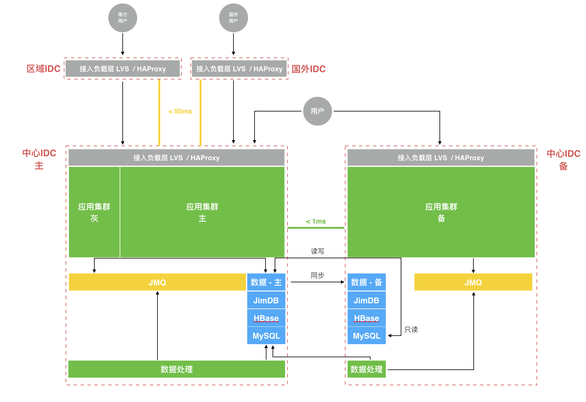</p>
<p>部署视图示例</p>
<p>部署视图本身也可以从不同的视角来画，这取决于你想强调什么元素。上面这张示例图，强调的是应用部署的 IDC 及其之间的网络关系，和一些关键的网络通讯延时指标。因为这些内容可能影响系统的架构设计和开发实现方式。</p>
<p>至此，组成、交互和部署图更多是表达系统的宏观视图：关注系统组合、协作和依存的关系。但还缺乏关于系统设计或实现本身的表达，这就引出了流程和状态两类视图。</p>
<h2>四、流程视图</h2>
<p>流程视图，表达系统内部实现的功能和控制逻辑流程。</p>
<p>可能有人喜欢用常见的流程图来表达系统设计与实现的流程，但我更偏好使用 UML 的序列图，个人感觉更清晰些。</p>
<p>下图是咚咚消息投递的一个功能逻辑流程表达，看起来就像是 UML 的序列图，但并没有完全遵循 UML 的图例语法（主要是我习惯的画图工具不支持）。而且，我想更多人即使是程序员也并不一定会清楚地了解和记得住 UML 的各种图例语法，所以都用文字做了补充说明，也就没必要一定要遵循其语法了，重点还是在于要把逻辑表达清楚。</p>
<p>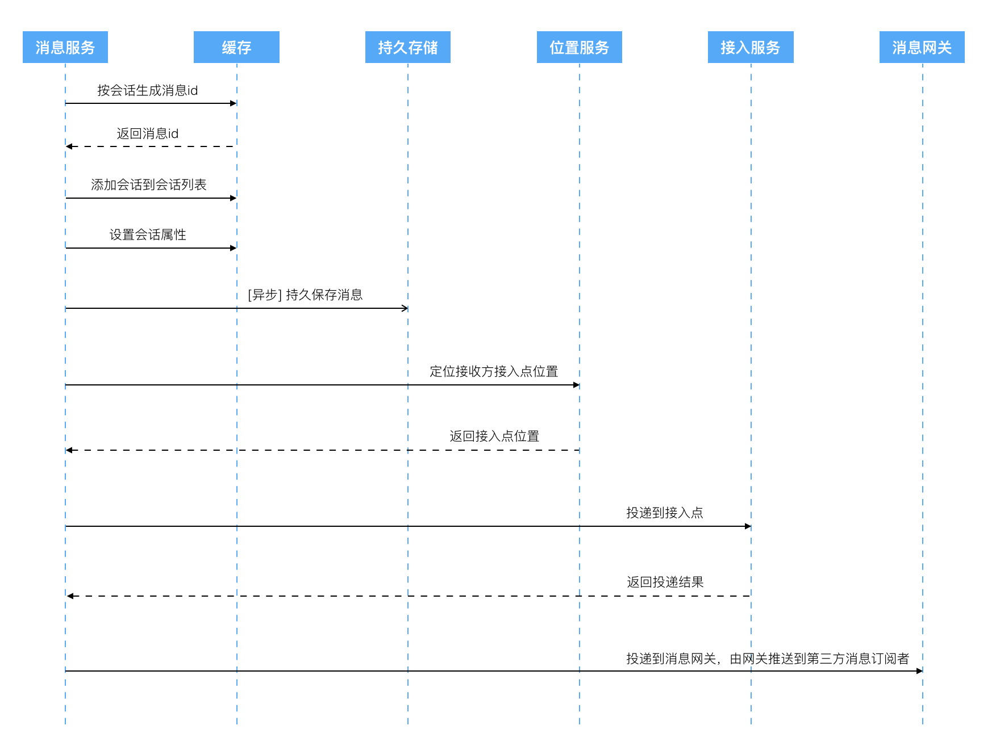</p>
<p>流程视图示例</p>
<p>逻辑流程一般分两种：业务与控制。有些系统业务逻辑很复杂，而有些系统业务逻辑不复杂但请求并发很高，导致对性能、安全与稳定的要求高，所以控制逻辑就复杂了。这两类复杂的逻辑处理流程都需要表达清楚，而上图就是对业务功能逻辑的表达示例。</p>
<p>除了逻辑流程的复杂性，系统维持的状态变迁很可能也是另一个复杂性之源。</p>
<h2>五、状态视图</h2>
<p>状态视图，表达系统内部管理了哪些状态以及状态的变迁转移路径。</p>
<p>像咚咚这样的 IM 消息系统，就自带一个复杂的状态管理场景：消息的已读 / 未读状态。它的复杂性体现在，它本身就处在一个不可控的分布式场景下，在用户的多个终端和服务端之间，需要保持尽可能的最终一致性。</p>
<p>为什么没法满足绝对严格的最终一致性？如下图所示，IM 的 “已读 / 未读” 状态需要在用户的多个终端和服务端之间进行分布式的同步。按照分布式 CAP 原理，IM 的业务场景限定了 AP 是必须满足的，所以 C 自然就是受限的了。</p>
<p>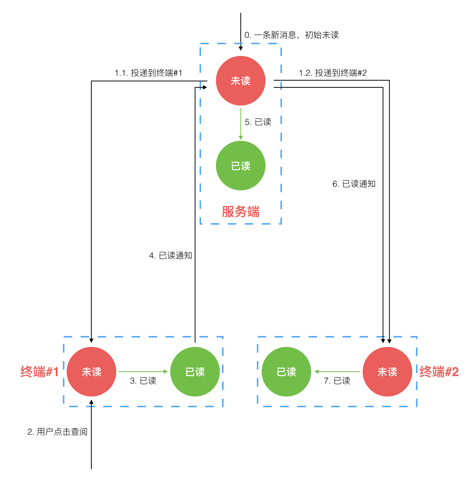</p>
<p>状态视图示例</p>
<p>所有的业务系统都一定会有状态，因为那就是业务的核心价值，并且这个系统只要有用户使用，用户就会产生行为，行为导致系统状态的变迁。比如，IM 中用户发出的消息，用户的上下线等等都是行为引发的状态变化。</p>
<p>但无状态服务相比有状态的服务和系统要简单很多，一个系统中不是所有的服务都有状态，只会有部分服务需要状态，我们的设计仅仅是围绕在，如何尽可能地把状态限制在系统的有限范围内，控制其复杂性的区域边界。</p>
<p>至此，关于软件系统设计，我感觉通用的维度与视图就这些，但每个具体的系统可能也还有其独特的维度，也会有自己独有的视图。</p>
<p>用更系统化的视图去观察和思考，想必也会让你得到更成体系化的系统设计。</p>
<p>以上就是我关于系统设计的一些通用维度与视图的思考，那么你平时都用怎样的方式来表达程序系统设计呢？</p>
<h1>08 代码与分类：工业级编程的代码分类与特征</h1>
<p>编程，就是写代码，那么在真实的行业项目中你编写的这些代码可以如何分类呢？回顾我曾经写过的各种系统代码，按代码的作用，大概都可以分为如下三类：</p>
<ul>
<li>功能</li>
<li>控制</li>
<li>运维</li>
</ul>
<p>如果你想提高编程水平，写出优雅的代码，那么就必须要清晰地认识清楚这三类代码。</p>
<h2>一、功能</h2>
<p>功能代码，是实现需求的业务逻辑代码，反映真实业务场景，包含大量领域知识。</p>
<p>一个程序软件系统，拥有完备的功能性代码仅是基本要求。因为业务逻辑的复杂度决定了功能性代码的复杂度，所以要把功能代码写好，最难的不是编码本身，而是搞清楚功能背后的需求并得到正确的理解。之后的编码活动，就仅是一个“翻译”工作了：把需求“翻译”为代码。</p>
<p>当然，“翻译” 也有自己独有的技术和积累，并不简单。而且 “翻译” 的第一步要求是 “忠于原文”，也即真正地理解并满足用户的原始需求。可这个第一步的要求实现起来就很困难。</p>
<p>为什么搞清楚用户需求很困难？因为从用户心里想要的，到他最后得到的之间有一条长长的链条，如下所示：</p>
<blockquote>
<p>用户心理诉求 -&gt; 用户表达需求 -&gt; 产品定义需求 -&gt; 开发实现 -&gt; 测试验证 -&gt; 上线发布 -&gt; 用户验收</p>
</blockquote>
<p>需求信息源自用户的内心，然后通过表达显性地在这个链条上传递，最终固化成了代码，以程序系统的形态反馈给了用户。</p>
<p>但信息在这个链条中的每个环节都可能会出现偏差与丢失，即使最终整个链条上的各个角色都貌似达成了一致，完成了系统开发、测试和发布，但最终也可能发现用户的心理诉求要么表达错了，要么被理解错了。</p>
<p>因为我近些年一直在做即时通讯产品（IM），所以在这儿我就以微信这样一个国民级的大家都熟悉的即时通讯产品为样本，举个例子。</p>
<p>微信里有个功能叫：消息删除。你该如何理解这个功能背后的用户心理诉求呢？用户进行删除操作的期待和反馈又是什么呢？从用户发消息的角度，我理解其删除消息可能的诉求有如下几种：</p>
<ol>
<li>消息发错了，不想对方收到。</li>
<li>消息发了后，不想留下发过的痕迹，但期望对方收到。</li>
<li>消息已发了，对于已经收到的用户就算了，未收到的最好就别收到了，控制其传播范围。</li>
</ol>
<p>对于第一点，微信提供了两分钟内撤回的功能；而第二点，微信提供的删除功能正好满足；第三点，微信并没有满足。我觉着第三点其实是一个伪需求，它其实是第一点不能被满足情况下用户的一种妥协。</p>
<p>用户经常会把他们的需要，表达成对你的行为的要求，也就是说不真正告诉你要什么，而是告诉你要做什么。所以你才需要对被要求开发的功能进行更深入的思考。有时，即使是日常高频使用的产品背后的需求，你也未必能很好地理解清楚，而更多的业务系统其实离你的生活更远，努力去理解业务及其背后用户的真实需求，才是写好功能代码的基本能力。</p>
<p>程序存在的意义就在于实现功能，满足需求。而一直以来我们习惯于把完成客户需求作为程序开发的主要任务，当功能实现了便感觉已经完成了开发，但这仅仅是第一步。</p>
<h2>二、控制</h2>
<p>控制代码，是控制业务功能逻辑代码执行的代码，即业务逻辑的执行策略。</p>
<p>编程领域熟悉的各类设计模式，都是在讲关于控制代码的逻辑。而如今，很多这些常用的设计模式基本都被各类开源框架固化了进去。比如，在 Java 中，Spring 框架提供的控制反转（IoC）、依赖注入（DI）就固化了工厂模式。</p>
<p>通用控制型代码由各种开源框架来提供，程序员就被解放出来专注写好功能业务逻辑。而现今分布式领域流行的微服务架构，各种架构模式和最佳实践也开始出现在各类开源组件中。比如微服务架构模式下关注的控制领域，包括：通信、负载、限流、隔离、熔断、异步、并行、重试、降级。</p>
<p>以上每个领域都有相应的开源组件代码解决方案，而进一步将控制和功能分离的 “服务网格（Service Mesh）” 架构模式则做到了极致，控制和功能代码甚至运行在了不同的进程中。</p>
<p>控制代码，都是与业务功能逻辑不直接相关的，但它们和程序运行的性能、稳定性、可用性直接相关。提供一项服务，功能代码满足了服务的功能需求，而控制代码则保障了服务的稳定可靠。</p>
<p>有了控制和功能代码，程序系统终于能正常且稳定可靠地运行了，但难保不出现异常，这时最后一类 “运维” 型代码便要登场了。</p>
<h2>三、运维</h2>
<p>运维代码，就是方便程序检测、诊断和运行时处理的代码。它们的存在，才让系统具备了真正工业级的可运维性。</p>
<p>最常见的检测诊断性代码，应该就是日志了，打日志太过简单，因此我们通常也就疏于考虑。其实即使是打日志也需要有意识的设计，评估到底应该输出多少日志，在什么位置输出日志，以及输出什么级别的日志。</p>
<p>检测诊断代码有一个终极目标，就是让程序系统完成运行时的自检诊断。这是完美的理想状态，却很难在现实中完全做到。</p>
<p>因为它不仅仅受限于技术实现水平，也与实现的成本和效益比有关。所以，我们可以退而求其次，至少在系统异常时可以具备主动运行状态汇报能力，由开发和运维人员来完成诊断分析，这也是我们常见的各类系统或终端软件提供的机制。</p>
<p>在现实中，检测诊断类代码经常不是一开始就主动设计的。但生产环境上的程序系统可能会偶然出现异常或故障，而因为一开始缺乏检测诊断代码输出，所以很难找到真实的故障原因。现实就这样一步一步逼着你去找到真实原因，于是检测诊断代码就这么被一次又一次地追问为什么而逐渐完善起来了。</p>
<p>但如果一开始你就进行有意识地检测诊断设计，后面就会得到更优雅的实现。有一种编程模式：面向切面编程（AOP），通过早期的有意设计，可以把相当范围的检测诊断代码放入切面之中，和功能、控制代码分离，保持优雅的边界与距离。</p>
<p>而对于特定的编程语言平台，比如 Java 平台，有字节码增强相关的技术，可以完全干净地把这类检测诊断代码和功能、控制代码彻底分离。</p>
<p>运维类代码的另一种类，是方便在运行时，对系统行为进行改变的代码。通常这一类代码提供方便运维操作的 API 服务，甚至还会有专门针对运维提供的服务和应用，例如：备份与恢复数据、实时流量调度等。</p>
<p>功能、控制、运维，三类代码，在现实的开发场景中优先级这样依次排序。有时你可能仅仅完成了第一类功能代码就迫于各种压力上线发布了，但你要在内心谨记，少了后两类代码，将来都会是负债，甚至是灾难。而一个满足工业级强度的程序系统，这三类代码，一个也不能少。</p>
<p>而对三类代码的设计和实现，越是优雅的程序，这三类代码在程序实现中就越是能看出明显的边界。为什么需要边界？因为，“码以类聚，人以群分”。功能代码易变化，控制代码固复杂，运维代码偏繁琐，这三类不同的代码，不仅特征不同，而且编写它们的人（程序员）也可能分属不同群组，有足够的边界与距离才能避免耦合与混乱。</p>
<p>而在程序这个理性世界中，优雅有时就是边界与距离。</p>
<h1>09 粗放与精益：编程的两种思路与方式</h1>
<p>几年前，我给团队负责的整个系统写过一些公共库，有一次同事发现这个库里存在一个 Bug，并告诉了我出错的现象。然后我便去修复这个 Bug，最终只修改了一行代码，但发现一上午就这么过去了。</p>
<p>一上午只修复了一个 Bug，而且只改了一行代码，到底发生了什么？时间都去哪里了？以前觉得自己写代码很快，怎么后来越来越慢了？我认真地思考了这个问题，开始认识到我的编程方式和习惯在那几年已经慢慢发生了变化，形成了明显的两个阶段的转变。这两个阶段是：</p>
<ul>
<li>写得粗放，写得多</li>
<li>写得精益，写得好</li>
</ul>
<h2>多与粗放</h2>
<p>粗放，在软件开发这个年轻的行业里其实没有确切的定义，但在传统行业中确实存在相近的关于 “粗放经营” 的概念可类比。引用其百科词条定义如下：</p>
<blockquote>
<p>粗放经营（Extensive Management），泛指技术和管理水平不高，生产要素利用效率低，产品粗制滥造，物质和劳动消耗高的生产经营方式。</p>
</blockquote>
<p>若把上面这段话里面的 “经营” 二字改成 “编程”，就很明确地道出了我想表达的粗放式编程的含义。</p>
<p>一个典型的粗放式编程场景大概是这样的：需求到开发手上后，开始编码，编码完成，人肉测试，没问题后快速发布到线上，然后进入下一个迭代。</p>
<p>我早期参与的大量项目过程都与此类似，不停地重复接需求，快速开发，发布上线。在这个过程中，我只是在不停地堆砌功能代码，每天产出的代码量不算少，但感觉都很类似，也很粗糙。这样的过程持续了挺长一个阶段，一度让我怀疑：这样大量而粗放地写代码到底有什么作用和意义？</p>
<p>后来读到一个故事，我逐渐明白这个阶段是必要的，它因人、因环境而异，或长或短。而那个给我启发的故事，是这样的。</p>
<p>有一个陶艺老师在第一堂课上说，他会把班上学生分成两组，一组的成绩将会以最终完成的陶器作品数量来评定；而另一组，则会以最终完成的陶器品质来评定。</p>
<p>在交作业的时候，一个很有趣的现象出现了：“数量” 组如预期一般拿出了很多作品，但出乎意料的是质量最好的作品也全部是由 “数量” 组制作出来的。</p>
<p>按 “数量” 组的评定标准，他们似乎应该忙于粗制滥造大量的陶器呀。但实际情况是他们每做出一个垃圾作品，都会吸取上一次制作的错误教训，然后在做下一个作品时得到改进。</p>
<p>而 “品质” 组一开始就追求完美的作品，他们花费了大量的时间从理论上不断论证如何才能做出一个完美的作品，而到了最后拿出来的东西，似乎只是一堆建立在宏大理论上的陶土。</p>
<p>读完这个故事，我陷入了沉思，感觉故事里的制作陶器和编程提升之路是如此类似。很显然，“品质” 组的同学一开始就在追求理想上的 “好与精益” ，而 “数量” 组同学的完成方式则似我早期堆砌代码时的“多与粗放”，但他们正是通过做得多，不断尝试，快速迭代 ，最后取得到了更好的结果。</p>
<p>庆幸的是，我在初学编程时，就是在不断通过编程训练来解答一个又一个书本上得来的困惑；后来工作时，则是在不断写程序来解决一个又一个工作中遇到的问题。看到书上探讨各种优雅的代码之道、编程的艺术哲学，那时的我也完全不知道该如何通往这座编程的 “圣杯”，只能看着自己写出的蹩脚代码，然后继续不断重复去制作下一个丑陋的 “陶器”，不断尝试，不断精进和进阶。</p>
<p>《黑客与画家》书里说：“编程和画画近乎异曲同工。”所以，你看那些成名画家的作品，如果按时间顺序来排列展示，你会发现每幅画所用的技巧，都是建立在上一幅作品学到的东西之上；如果某幅作品特别出众，你往往也能在更早期的作品中找到类似的版本。而编程的精进过程也是类似的。</p>
<p>总之，这些故事和经历都印证了一个道理：<strong>在通往 “更好” 的路上，总会经过 “更多” 这条路。</strong></p>
<h2>好与精益</h2>
<p>精益，也是借鉴自传统行业里的一个类比：精益生产。</p>
<blockquote>
<p>精益生产（Lean Production），简言之，就是一种以满足用户需求为目标、力求降低成本、提高产品的质量、不断创新的资源节约型生产方式。</p>
</blockquote>
<p>若将定义中的 “生产” 二字换成 “编程”，也就道出了精益编程的内涵。它有几个关键点：质量、成本与效率。但要注意：在编程路上，如果一开始就像 “品质” 组同学那样去追求完美，也许你就会被定义 “完美” 的品质所绊住，而忽视了制作的成本与效率。</p>
<p>因为编程的难点是，无论你在开始动手编程时看过多少有关编程理论、方法、哲学与艺术的书，一开始你还是无法领悟到什么是编程的正确方法，以及什么是“完美” 的程序。毕竟纸上得来终觉浅，绝知此事要躬行。</p>
<p>曾经，还在学校学习编程时，有一次老师布置了一个期中课程设计，我很快完成了这个课程设计中的编程作业。而另一位同学，刚刚看完了那本经典的《设计模式》书。</p>
<p>他尝试用书里学到的新概念来设计这个编程作业，并且又用 UML 画了一大堆交互和类图，去推导设计的完美与优雅。然后兴致勃勃向我（因为我刚好坐在他旁边）讲解他的完美设计，我若有所悟，觉得里面确实有值得我借鉴的地方，就准备吸收一些我能听明白的东西，重构一遍已经写好的作业程序。</p>
<p>后来，这位同学在动手实现他的完美设计时，发现程序越写越复杂，交作业的时间已经不够了，只好借用我的不完美的第一版代码改改凑合交了。而我在这第一版代码基础上，又按领悟到的正确思路重构了一次、改进了一番后交了作业。</p>
<p>所以，别被所谓 “完美“ 的程序所困扰，只管先去盯住你要用编程解决的问题，把问题解决，把任务完成。</p>
<p><strong>编程，其实一开始哪有什么完美，只有不断变得更好。</strong></p>
<p>工作后，我做了大量的项目，发现这些项目都有很多类似之处。每次，即使项目上线后，我也必然重构项目代码，提取其中可复用的代码，然后在下一个项目中使用。循环往复，一直干了七八年。每次提炼重构，都是一次从 “更多” 走向 “更好” 的过程。我想，很多程序员都有类似的经历吧？</p>
<p>回到开头修改 Bug 的例子，我用半天的时间改一个 Bug，感觉效率不算高，这符合精益编程的思路吗？先来回顾下这半天改这个 Bug 的过程。</p>
<p>由于出问题的那个公共库是我接到 Bug 时的半年前开发的，所以发现那个 Bug 后，我花了一些时间来回忆整个公共库的代码结构设计。然后我研究了一下，发现其出现的场景比较罕见，要不不至于线上运行了很久也没人发现，属于重要但不紧急。</p>
<p>因此，我没有立刻着手去修改代码，而是先在公共库的单元测试集中新写了一组单元测试案例。单元测试构建了该 Bug 的重现场景，并顺利让单元测试运行失败了，之后我再开始去修改代码，并找到了出问题的那一行，修改后重新运行了单元测试集，并顺利看见了测试通过的绿色进度条。</p>
<p>而作为一个公共库，修改完成后我还要为本次修改更新发布版本，编写对应的文档，并上传到 Maven 仓库中，才算完成。回想这一系列的步骤，我发现时间主要花在了构建重现 Bug 的测试案例场景中，有时为了构建一个测试场景编写代码的难度可能比开发功能本身更困难。</p>
<p>为修改一个 Bug 付出的额外单元测试时间成本，算一种浪费吗？虽说这确实提高了代码的修复成本，但也带来了程序质量的提升。按前面精益的定义，这似乎是矛盾的，但其实更是一种权衡与取舍。</p>
<p>就是在这样的过程与反复中，我渐渐形成了属于自己的编程价值观：世上没有完美的解决方案，任何方案总是有这样或那样一些因子可以优化。一些方案可能面临的权衡取舍会少些，而另一些方案则会更纠结一些，但最终都要做取舍。</p>
<p>以上，也说明了一个道理：<strong>好不是完美，好是一个过程，一个不断精益化的过程。</strong></p>
<p>编程，当写得足够多了，也足够好了，你才可能自如地在 “多” 与 “好” 之间做出平衡。</p>
<p>编程的背后是交付程序系统，交付关心的是三点：功能多少，质量好坏，效率快慢。真实的编程环境下， 你需要在三者间取得平衡，哪些部分可能是多而粗放的交付，哪些部分是好而精益的完成，同时还要考虑效率快慢（时间）的需求。</p>
<p>编程路上，“粗放的多” 是 “精益的好和快” 的前提，而好和快则是你的取舍：是追求好的极致，还是快的极致，或者二者的平衡？</p>
<p>在多而粗放和好而精益之间，现在你处在哪个阶段了？欢迎留言谈谈你的看法。</p>
<h1>10 炫技与克制：代码的两种味道与态度</h1>
<p>虽然你代码可能已经写得不少了，但要真正提高代码水平，其实还需要多读代码。就像写作，写得再多，不多读书，思维和认知水平其实是很难提高的。</p>
<p>代码读得多了，慢慢就会感受到好代码中有一种味道和品质：克制。但也会发现另一种代码，它也会散发出一种味道：炫技。</p>
<h2>炫技</h2>
<p>什么是炫技的代码？</p>
<p>我先从一个读代码的故事说起。几年前我因为工作需要，去研究一个开源项目的源代码。这是一个国外知名互联网公司开源的工具项目，据说已在内部孵化了 6 年之久，这才开源出来。从其设计文档与代码结构来看，它高层设计的一致性还是比较好的，但到了源代码实现就显得凌乱了些，而且发现了一些炫技的痕迹。</p>
<p>代码中炫技的地方，具体来说就是关于状态机的使用。状态机程序本是不符合线性逻辑思维的，有点类似<code>goto</code>语句，程序执行会突然发生跳转，所以理解状态机程序的代码要比一般程序困难些。除此之外，它的状态机程序实现又是通过自定义的内存消息机制来驱动，这又额外添加了一层抽象复杂度。</p>
<p>而在我看来，状态机程序最适合的场景是一种真实领域状态变迁的映射。那什么叫真实领域状态呢？比如，红绿灯就表达了真实交通领域中的三种状态。而另一种场景，是网络编程领域，广泛应用在网络协议解析上，表达解析器当前的运行状态。</p>
<p>而但凡使用状态机来表达程序设计实现中引入的 “伪” 状态，往往都添加了不必要的复杂性，这就有点炫技的感觉了。但是我还是能常常在一些开源项目中看到一些过度设计和实现的复杂性，而这些项目往往还都是一些行业内头部大公司开源的。</p>
<p>在程序员的成长路径上，攀登公司的晋升阶梯时，通常会采用同行评审制度，而作为技术人就容易倾向性地关注项目或工程中的技术含量与难点。</p>
<p>这样的制度倾向性，有可能导致人为制造技术含量，也就是炫技了。就像体操运动中，你完成一个高难度动作，能加的分数有限，而一旦搞砸了，付出的代价则要惨重很多。所以，在比赛中高难度动作都是在关键的合适时刻才会选择。同样，项目中的炫技，未必能加分，还有可能导致减分，比如其维护与理解成本变高了。</p>
<p>而<strong>除了增加不必要的复杂性外，炫技的代码，也可能更容易出 Bug</strong>。</p>
<p>刚工作的头一年，我在广东省中国银行写过一个小程序，就是给所有广东省中国银行的信用卡客户发邮件账单。由于当时广东中行信用卡刚起步，第一个月只有不到 10 万客户，所以算是小程序。</p>
<p>这个小程序就是个单机程序，为了方便业务人员操作，我写了个 GUI 界面。这是我第一次用 Java Swing 库来写 GUI，为了展示发送进度，后台线程每发送成功一封邮件，就通知页面线程更新进度条。</p>
<p>为什么这么设计呢？因为那时我正在学习 Java 线程编程，感觉这个技术很高端，而当时的 Java JDK 都还没标配线程 concurrent 包。所以，我选择线程间通信的方案来让后台发送线程和前端界面刷新线程通信，这就有了一股浓浓的炫技味道。</p>
<p>之后，就出现了界面动不动就卡住等一系列问题，因为各种线程提前通知、遗漏通知等情况没考虑到，代码也越改越难懂。其实后来想想，用个共享状态，定时轮询即可满足需要，而且代码实现会简单很多（前面《架构与实现》一文中，关于实现的核心我总结了一个字：简。这都是血泪教训啊），出 Bug 的概率也小了很多。</p>
<p>回头想想，成长的路上不免见猎心喜，手上拿个锤子看到哪里都是钉子。</p>
<p>炫技是因为你想表达得不一样，就像平常说话，你要故意说得引经据典去彰显自己有文化，但其实效果不一定佳，因为我们更需要的是平实、易懂的表达。</p>
<h2>克制</h2>
<p>在说克制之前，先说说什么叫不克制，写代码的不克制。</p>
<p>刚工作的第二年，我接手了一个比较大的项目中的一个主要子系统。在熟悉了整个系统后，我开始往里面增加功能时，有点受不了原本系统设计分层中的 DAO（Data Access Object， 数据访问对象）层，那是基于原生的 JDBC 封装的。每次新增一个 DAO 对象都需要复制粘贴一串看起来很类似的代码，难免生出厌烦的感觉。</p>
<p>当时开源框架 Hibernate 刚兴起，我觉得它的设计理念优雅，代码写出来也简洁，所以就决定用 Hibernate 的方式来取代原本的实现。原来的旧系统里，说多不多，说少也不少，好几百个 DAO 类，而重新实现整个 DAO 层，让我连续加了一周的班。</p>
<p>这个替换过程，是个纯粹的搬砖体力活，弄完了还没松口气就又有了新问题：Hibernate 在某些场景下出现了性能问题。陆陆续续把这些新问题处理好，着实让我累了一阵子。后来反思这个决策感觉确实不太妥当，替换带来的好处仅仅是每次新增一个 DAO 类时少写几行代码，却带来很多当时未知的风险。</p>
<p>那时年轻，有激情啊，对新技术充满好奇与冲动。<strong>其实对于新技术，即使从我知道、我了解到我熟悉、我深谙，这时也还需要克制，要等待合适的时机</strong>。这让我想起了电影《勇敢的心》中的一个场景，是战场上华莱士看着对方冲过来，高喊：“Hold！Hold！”新技术的应用，也需要等待一个合适的出击时刻，也许是应用在新的服务上，也许是下一次架构升级。</p>
<p>不克制的一种形态是容易做出臆想的、通用化的假设，而且我们还会给这种假设安一个非常正当的理由：扩展性。不可否认，扩展性很重要，但扩展性也应当来自真实的需求，而非假设将来的某天可能需要扩展，因为扩展性的反面就是带来设计抽象的复杂性以及代码量的增加。</p>
<p>那么，如何才是克制的编程方式？我想可能有这样一些方面：</p>
<ul>
<li>克制的编码，是每次写完代码，需要去反思和提炼它，代码应当是直观的，可读的，高效的。</li>
<li>克制的代码，是即使站在远远的地方去看屏幕上的代码，甚至看不清代码的具体内容时，也能感受到它的结构是干净整齐的，而非 “意大利面条” 似的混乱无序。</li>
<li>克制的重构，是每次看到 “坏” 代码不是立刻就动手去改，而是先标记圈定它，然后通读代码，掌握全局，重新设计，最后再等待一个合适的时机，来一气呵成地完成重构。</li>
</ul>
<p>总之，克制是不要留下多余的想象，是不炫技、不追新，且恰到好处地满足需要，是一种平实、清晰、易懂的表达。</p>
<p>克制与炫技，匹配与适度，代码的技术深度未必体现在技巧上。有句话是这么说的：“看山是山，看水是水；看山不是山，看水不是水；看山还是山，看水还是水。”转了一圈回来，机锋尽敛，大巧若拙，深在深处，浅在浅处。</p>
<h1>11 三阶段进化：调试，编写与运行代码</h1>
<p>刚开始学编程写代码，总会碰到一些困惑。比如，曾经就有刚入行的同学问我：“写程序是想到哪写到哪，边写边改边验证好，还是先整体梳理出思路，有步骤、有计划地分析后，再写更好？”</p>
<p>老实说，我刚入行时走的是前一条路，因为没有什么人或方法论来指导我，都是自己瞎摸索。一路走来十多年后，再回溯编程之路的经历，总结编程的进化过程，大概会经历下面三个阶段。</p>
<h2>阶段一：调试代码 Debugging</h2>
<p>编程，是把用自然语言描述的现实问题，转变为用程序语言来描述并解决问题的过程；翻译，也是把一种语言的文字转变为另一种语言的文字，所以我想编程和翻译应该是有相通之处的。</p>
<p>好些年前，我曾偶然读到一篇关于性能的英文文章，读完不禁拍案叫绝，就忍不住想翻译过来。那是我第一次尝试翻译长篇英文，老实说翻得很痛苦，断断续续花了好几周的业余时间。那时的我，之于翻译，就是一个刚入门的初学者。</p>
<p>初次翻译，免不了遇到不少不熟悉的单词或词组，一路磕磕碰碰地查词典或 Google。一些似乎能理解含义的句子，却感觉无法很好地用中文来表达，如果直白地译出来感觉又不像正常的中文句子表达方式。</p>
<p>如是种种的磕碰之处，难道不像你刚学编程时候的情形吗？刚开始写代码，对语法掌握得不熟，对各种库和 API 不知道，不了解，也不熟悉。一路写代码，翻翻书，查查 Google，搜搜 API 文档，好不容易写完一段代码，却又不知道能否执行，执行能否正确等等。</p>
<p>小心翼翼地点击 Debug 按钮开始了单步调试之旅，一步步验证所有的变量或执行结果是否符合预期。如果出错了，是在哪一步开始或哪个变量出错的？一段不到一屏的代码，足足单步走了半小时，反复改了好几次，终于顺利执行完毕，按预期输出了执行结果。</p>
<p>如果不是自己写全新的代码，而是一来就接手了别人的代码，没有文档，前辈稍微给你介绍两句，你就很快又开始了 Debug 的单步调试之旅，一步步搞清代码运行的所有步骤和内部逻辑。根据你接手代码的规模，这个阶段可能持续数天到数周不等。</p>
<p>这就是我感觉可以划为编程第一阶段的 “调试代码 Debugging” 时期。这个时期或长或短，也许你曾经为各种编程工具或 IDE 提供的高级 Debug 功能激动不已，但如果你不逐渐降低使用 Debug 功能的频率，那么你可能很难走入第二阶段。</p>
<h2>阶段二：编写代码 Coding</h2>
<p>翻译讲究 “信、达、雅”，编码亦如此。</p>
<p>那么何谓 “信、达、雅” ？它是由我国清末新兴启蒙思想家严复提出的，他在《天演论》中的 “译例言” 讲到：</p>
<blockquote>
<p>译事三难：信、达、雅。求其信已大难矣，顾信矣，不达，虽译犹不译也，则达尚焉。</p>
</blockquote>
<p><strong>信，指不违背原文，不偏离原文，不篡改，不增不减，要求准确可信地表达原文描述的事实</strong>。</p>
<p>这条应用在编程上就是：程序员需要深刻地理解用户的原始需求。虽然需求很多时候来自于需求（产品）文档，但需求（产品）文档上写的并不一定真正体现了用户的原始需求。关于用户需求的“提炼”，早已有流传甚广的“福特之问”。</p>
<blockquote>
<p>福特：您需要一个什么样的更好的交通工具？
用户：我要一匹更快的马。</p>
</blockquote>
<p>用户说需要一匹更快的马，你就跑去 “养” 只更壮、更快的马；后来用户需求又变了，说要让马能在天上飞，你可能就傻眼了，只能拒绝用户说：“这需求不合理，技术上实现不了。”可见，用户所说的也不可 “信” 矣。只有真正挖掘并理解了用户的原始需求，最后通过编程实现的程序系统才是符合 “信” 的标准的。</p>
<p>但在这一条的修行上几乎没有止境，因为要做到 “信” 的标准，编写行业软件程序的程序员需要在一个行业长期沉淀，才能慢慢搞明白用户的真实需求。</p>
<p><strong>达，指不拘泥于原文的形式，表达通顺明白，让读者对所述内容明达</strong>。</p>
<p>这条应用在编程上就是在说程序的可读性、可理解性和可维护性。</p>
<p>按严复的标准，只满足 “信” 一条的翻译，还不如不译，至少还需要满足 “达” 这条才算尚可。</p>
<p>同样，只满足 “信” 这一条的程序虽然能准确地满足用户的需要，但没有 “达” 则很难维护下去。因为程序固然是写给机器去执行的，但其实也是给人看的。</p>
<p>所有关于代码规范和风格的编程约束都是在约定 “达” 的标准。个人可以通过编程实践用时间来积累经验，逐渐达到 “达” 的标准。但一个团队中程序员们的代码风格差异如何解决？这就像如果一本书由一群人来翻译，你会发现每章的文字风格都有差异，所以我是不太喜欢读由一群人一起翻译的书。</p>
<p>一些流行建议的解决方案是：多沟通，深入理解别人的代码思路和风格，不要轻易盲目地修改。但这些年实践下来，这个方法在现实中走得并不顺畅。</p>
<p>随着微服务架构的流行，倒是提供了另一种解决方案：每个服务对应一个唯一的负责人（Owner）。长期由一个人来维护的代码，就不会那么容易腐烂，因为一个人不存在沟通问题。而一个人所能 “达” 到的层次，完全由个人的经验水平和追求来决定。</p>
<p><strong>雅，指选用的词语要得体，追求文章本身的古雅，简明优雅</strong>。</p>
<p>雅的标准，应用在编程上已经从技艺上升到了艺术的追求，这当然是很高的要求与自我追求了，难以强求。而只有先满足于 “信” 和 “达” 的要求，你才有余力来追求 “雅” 。</p>
<p>举个例子来说明下从 “达” 到 “雅” 的追求与差异。</p>
<p>下面是一段程序片段，同一个方法，实现完全一样的功能，都符合 “信” 的要求；而方法很短小，命名也完全符合规范，可理解性和维护性都没问题，符合 “达” 的要求；差别就在对 “雅” 的追求上。</p>
<pre><code class="language-Java">private String generateKey(String service, String method) {  
  String head = &quot;DBO$&quot;;  
  String key = &quot;&quot;;   
  int len = head.length() + service.length() + method.length();  
  if (len &lt;= 50) {  
    key = head + service + method;  
  } else {  
    service = service.substring(service.lastIndexOf(&quot;.&quot;) + 1);  
    len = head.length() + service.length() + method.length();  
    key = head + service + method;  
    if (len &gt; 50) {  
      key = head + method;  
      if (key.length() &gt; 50) {  
        key = key.substring(0, 48) + &quot;.~&quot;;  
      }  
    }  
  }  
  
  return key;  
}
</code></pre>
<p>该方法的目标是生成一个字符串 key 值，传入两个参数：服务名和方法名，然后返回 key 值，key 的长度受外部条件约束不能超过 50 个字符。方法实现不复杂，很短，看起来也还不错，分析下其中的逻辑：</p>
<ol>
<li>先 key 由固定的头（head）+ service（全类名）+ method（方法）组成，若小于 50 字符，直接返回。</li>
<li>若超过 50 字符限制，则去掉包名，保留类名，再判断一次，若此时小于 50 字符则返回。</li>
<li>若还是超过 50 字符限制，则连类名一起去掉，保留头和方法再判断一次，若小于 50 字符则返回。</li>
<li>最后如果有个变态长的方法名（46+ 个字符），没办法，只好暴力截断到 50 字符返回。</li>
</ol>
<p>这个实现最大限度地在生成的 key 中保留全部有用的信息，对超过限制的情况依次按信息重要程度的不同进行丢弃。这里只有一个问题，这个业务规则只有 4 个判断，实现进行了三次 if 语句嵌套，还好这个方法比较短，可读性还不成问题。</p>
<p>而现实中很多业务规则比这复杂得多，以前看过一些实现的 if 嵌套多达 10 层的，方法也长得要命。当然一开始没有嵌套那么多层，只是后来随着时间的演变，业务规则发生了变化，慢慢增加了。之后接手的程序员就按照这种方式继续嵌套下去，慢慢演变至此，到我看到的时候就有 10 层了。</p>
<p>程序员有一种编程的惯性，特别是进行维护性编程时。一开始接手一个别人做的系统，不可能一下能了解和掌控全局。当要增加新功能时，在原有代码上添加逻辑，很容易保持原来程序的写法惯性，因为这样写也更安全。</p>
<p>所以一个 10 层嵌套 if 的业务逻辑方法实现，第一个程序员也许只写了 3 次嵌套，感觉还不错，也不失简洁。后来写 4、5、6 层的程序员则是懒惰不愿再改，到了写第 8、9、10 层的程序员时，基本很可能就是不敢再乱动了。</p>
<p>那么如何让这个小程序在未来的生命周期内，更优雅地演变下去？下面是另一个版本的实现：</p>
<pre><code class="language-java">private String generateKey(String service, String method) {  
  String head = &quot;DBO$&quot;;  
  String key = head + service + method;   
  // head + service(with package) + method  
  if (key.length() &lt;= 50) {  
    return key;  
  }   
  // head + service(without package) + method  
  service = service.substring(service.lastIndexOf(&quot;.&quot;) + 1);  
  key = head + service + method;  
  if (key.length() &lt;= 50) {  
    return key;  
  }   
  // head + method  
  key = head + method;  
  if (key.length() &lt;= 50) {  
    return key;  
  }   
  // last, we cut the string to 50 characters limit.  
  key = key.substring(0, 48) + &quot;.~&quot;;  
  return key;  
}
</code></pre>
<p>从嵌套变成了顺序逻辑，这样可以为未来的程序员留下更优雅地编程惯性方向。</p>
<h2>阶段三：运行代码 Running</h2>
<p>编程相对翻译，其超越 “信、达、雅” 的部分在于：翻译出来的文字能让人读懂，读爽就够了；但代码写出来还需要运行，才能产生最终的价值。</p>
<p>写程序我们追求 “又快又好”，并且写出来的代码要符合 “信、达、雅” 的标准，但清晰定义 “多快多好” 则是指运行时的效率和效果。为准确评估代码的运行效率和效果，每个程序员可能都需要深刻记住并理解下面这张关于程序延迟数字的图：</p>
<p>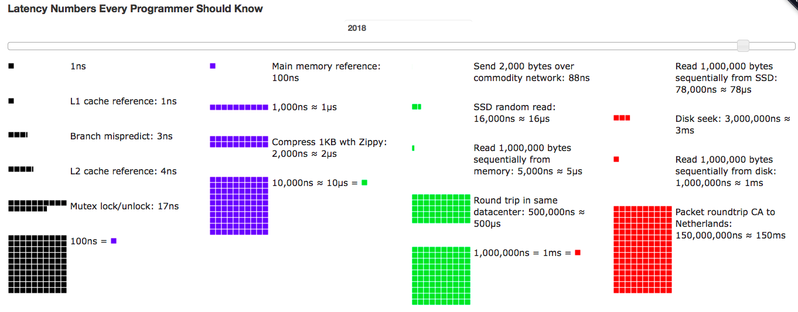</p>
<p>每个程序员都应该知道的延迟数字</p>
<p>只有深刻记住并理解了程序运行各环节的效率数据，你才有可能接近准确地评估程序运行的最终效果。当然，上面这张图只是最基础的程序运行效率数据，实际的生产运行环节会需要更多的基准效率数据才可能做出更准确的预估。</p>
<p>说一个例子，曾经我所在团队的一个高级程序员和我讨论要在所有的微服务中引入一个限流开源工具。这对于他和我们团队都是一个新东西，如何进行引入后线上运行效果的评估呢？</p>
<p>第一步，他去阅读资料和代码搞懂该工具的实现原理与机制并能清晰地描述出来。第二步，去对该工具进行效果测试，又称功能可用性验证。第三步，进行基准性能测试，或者又叫基准效率测试（Benchmark），以确定符合预期的标准。</p>
<p>做完上述三步，他拿出一个该工具的原理性描述说明文档，一份样例使用代码和一份基准效率测试结果，如下：</p>
<p>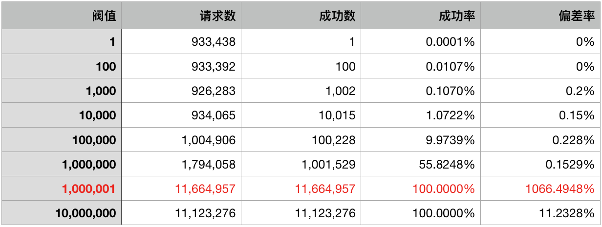</p>
<p>上图中有个红色字体部分，当阀值设置为 100 万而请求数超过 100 万时，发生了很大偏差。这是一个很奇怪的测试结果，但如果心里对各种基准效率数据有谱的话，会知道这实际绝不会影响线上服务的运行。</p>
<p>因为我们的服务主要由两部分组成：RPC 和业务逻辑。而 RPC 又由网络通信加上编解码序列化组成。服务都是 Java 实现的，而目前 Java 中最高效且吞吐最大的网络通信方式是基于 NIO 的方式，而我们服务使用的 RPC 框架正是基于 Netty（一个基于 Java NIO 的开源网络通信框架）的。</p>
<p>我曾经单独在一组 4 核的物理主机上测试过 Java 原生 NIO 与 Netty v3 和 v4 两个版本的基准性能对比，经过 Netty 封装后，大约有 10% 的性能损耗。在 1K 大小报文时，原生的 Java NIO 在当时的测试环境所能达到 TPS（每秒事务数） 的极限大约 5 万出头（极限，就是继续加压，但 TPS 不再上升，CPU 也消耗不上去，延时却在增加），而 Netty 在 4.5 万附近。增加了 RPC 的编解码后，TPS 极限下降至 1.3 万左右。</p>
<p>所以，实际一个服务在类似基准测试的环境下单实例所能承载的 TPS 极限不可能超过 RPC 的上限，因为 RPC 是没有包含业务逻辑的部分。加上不算简单的业务逻辑，我能预期的单实例真实 TPS 也许只有 1 千 ～2 千。</p>
<p>因此，上面 100 万的阀值偏差是绝对影响不到单实例的服务的。当然最后我们也搞明白了，100 万的阀值偏差来自于时间精度的大小，那个限流工具采用了微秒作为最小时间精度，所以只能在百万级的范围内保证准确。</p>
<p>讲完上述例子，就是想说明一个程序员要想精确评估程序的运行效率和效果，就得自己动手做大量的基准测试。</p>
<p>基准测试和测试人员做的性能测试不同。测试人员做的性能测试都是针对真实业务综合场景的模拟，测试的是整体系统的运行；而基准测试是开发人员自己做来帮助准确理解程序运行效率和效果的方式，当测试人员在性能测试发现了系统的性能问题时，开发人员才可能一步步拆解根据基准测试的标尺效果找到真正的瓶颈点，否则大部分的性能优化都是在靠猜测。</p>
<p>到了这个阶段，一段代码写出来，基本就该在你头脑中跑过一遍了。等上线进入真实生产环境跑起来，你就可以拿真实的运行数据和头脑中的预期做出对比，如果差距较大，那可能就掩藏着问题，值得你去分析和思考。</p>
<p>最后，文章开头那个问题有答案了吗？在第一阶段，你是想到哪就写到哪；而到了第三阶段，写到哪，一段鲜活的代码就成为了你想的那样。</p>
<h1>12 Bug的空间属性：环境依赖与过敏反应</h1>
<p>从今天开始，咱们专栏进入 “程序之术” 中关于写代码的一个你可能非常熟悉，却也常苦恼的小主题：Bug。</p>
<p>写程序的路上，会有一个长期伴随你的 “同伴”：Bug，它就像程序里的寄生虫。不过，Bug 最早真的是一只虫子。</p>
<p>1947 年，哈佛大学的计算机哈佛二代（Harvard Mark II）突然停止了运行，程序员在电路板编号为 70 的中继器触点旁发现了一只飞蛾。然后把飞蛾贴在了计算机维护日志上，并写下了首个发现 Bug 的实际案例。程序错误从此被称作 Bug。</p>
<p>这只飞蛾也就成了人类历史上的第一个程序 Bug。</p>
<p>回想下，在编程路上你遇到得最多的 Bug 是哪类？我的个人感受是，经常被测试或产品经理要求修改和返工的 Bug。这类 Bug 都来自于对需求理解的误差，其实属于沟通理解问题，我并不将其归类为真正的技术性 Bug。</p>
<p>技术性 Bug 可以从很多维度分类，而我则习惯于从 Bug 出现的 “时空” 特征角度来分类。可划为如下两类：</p>
<ul>
<li>空间：环境过敏</li>
<li>时间：周期规律</li>
</ul>
<p>我们就先看看 Bug 的<strong>空间维度</strong>特征。</p>
<h2>环境过敏</h2>
<p>环境，即程序运行时的空间与依赖。</p>
<p>程序运行的依赖环境是很复杂的，而且一般没那么可靠，总是可能出现这样或那样的问题。曾经我经历过一次因为运行环境导致的故障案例：一开始系统异常表现出来的现象是，有个功能出现时不时的不可用；不久之后，系统开始报警，不停地接到系统的报警短信。</p>
<p>这是一个大规模部署的线上分布式系统，从一开始能感知到的个别系统功能异常到逐渐演变成大面积的报警和业务异常，这让我们陷入了一个困境：到底异常根源在哪里？为了迅速恢复系统功能的可用性，我们先把线上流量切到备用集群后，开始紧急地动员全体团队成员各自排查其负责的子系统和服务，终于找到了原因。</p>
<p>只是因为有个别服务器容器的磁盘故障，导致写日志阻塞，进程挂起，然后引发调用链路处理上的连锁雪崩效应，其影响效果就是整个链路上的系统都在报警。</p>
<p>互联网企业多采用普通的 PC Server 作为服务器，而这类服务器的可靠性大约在 99.9%，换言之就是出故障的概率是千分之一。而实际在服务器上，出问题概率最高的可能就是其机械硬盘。</p>
<p>Backblaze 2014 年发布的硬盘统计报告指出，根据对其数据中心 38000 块硬盘（共存储 100PB 数据）的统计，消费级硬盘头三年出故障的几率是 15%。而在一个足够大规模的分布式集群部署上，比如 Google 这种百万级服务器规模的部署级别上，几乎每时每刻都有硬盘故障发生。</p>
<p>我们的部署规模自是没有 Google 那么大，但也不算小了，运气不好，正好赶上我们的系统碰上磁盘故障，而程序的编写又并未考虑硬盘 I/O 阻塞导致的挂起异常问题，引发了连锁效应。</p>
<p>这就是当时程序编写缺乏对环境问题的考虑，引发了故障。人有时换了环境，会产生一些从生理到心理的过敏反应，程序亦然。运行环境发生变化，程序就出现异常的现象，我称其为 “程序过敏反应”。</p>
<p>以前看过一部美剧《豪斯医生》，有一集是这样的：一个手上出现红色疱疹的病人来到豪斯医生的医院，豪斯医生根据病症现象初步诊断为对某种肥皂产生了过敏，然后开了片抗过敏药，吃过后疱疹症状就减轻了。但一会儿后，病人开始出现呼吸困难兼并发哮喘，豪斯医生立刻给病人注射了 1cc 肾上腺素，之后病人呼吸开始变得平稳。但不久后病人又出现心动过速，而且很快心跳便停止了，经过一番抢救后，最终又回到原点，病人手上的红色疱疹开始在全身出现。</p>
<p>这个剧情中表现了在治疗病人时发生的身体过敏反应，然后引发了连锁效应的问题，这和我之前描述的例子有相通之处：都是局部的小问题，引发程序过敏反应，再到连锁效应。</p>
<p>过敏在医学上的解释是：“有机体将正常无害的物质误认为是有害的东西。”而我对 “程序过敏反应” 的定义是：“程序将存在问题的环境当作正常处理，从而产生的异常。”而潜在的环境问题通常就成了程序的 “过敏原”。</p>
<p>该如何应对这样的环境过敏引发的 Bug 呢？</p>
<h2>应对之道</h2>
<p>应对环境过敏，自然要先从<strong>了解环境</strong>开始。</p>
<p>不同的程序部署和运行的环境千差万别，有的受控，有的不受控。比如，服务端运行的环境，一般都在数据中心（IDC）机房内网中，相对受控；而客户端运行的环境是在用户的设备上，存在不同的品牌、不同的操作系统、不同的浏览器等等，多种多样，不可控。</p>
<p>环境那么复杂，你需要了解到何种程度呢？我觉得你至少必须关心与程序运行直接相关联的那一层环境。怎么理解呢？以后端 Java 程序的运行为例，Java 是运行在 JVM 中，那么 JVM 提供的运行时配置和特性就是你必须要关心的一层环境了。而 JVM 可能是运行在 Linux 操作系统或者是像 Docker 这样的虚拟化容器中，那么 Linux 或 Docker 这一层，理论上你的关心程度就没太多要求，当然，学有余力去了解到这一层次，自是更好的。</p>
<p>那么前文案例中的磁盘故障，已经到了硬件的层面，这个环境层次比操作系统还更低一层，这也属于我们该关心的？虽说故障的根源是磁盘故障，但直接连接程序运行的那一层，其实是日志库依赖的 I/O 特性，这才是我们团队应该关心、但实际却被忽略掉的部分。</p>
<p>同理，现今从互联网到移动互联网时代，几乎所有的程序系统都和网络有关，所以网络环境也必须是你关心的。但网络本身也有很多层次，而对于在网络上面开发应用程序的你我来说，可以把网络模糊抽象为一个层次，只用关心网络距离延时，以及应用程序依赖的具体平台相关网络库的 I/O 特性。</p>
<p>当然，如果能对网络的具体层次有更深刻的理解，自然也是更好的。事实上，如果你和一个对网络具体层次缺乏理解的人调试两端的网络程序，碰到问题时，经常会发现沟通不在一个层面上，产生理解困难。（这里推荐下隔壁的“趣谈网络协议”专栏）</p>
<p>了解了环境，也难免不出 Bug。因为我们对环境的理解是渐进式的，不可能一下子就完整掌握，全方位，无死角。当出现了因为环境产生的过敏反应时，收集足够多相关的信息才能帮助快速定位和解决问题，这就是前面《代码与分类》文章中 “运维” 类代码需要提供的服务。</p>
<p><strong>收集信息</strong>，不仅仅局限于相关直接依赖环境的配置和参数，也包括用户输入的一些数据。真实场景确实大量存在这样一种情况：同样的环境只针对个别用户发生异常过敏反应。</p>
<p>有一种药叫抗过敏药，那么也可以有一种代码叫 “抗过敏代码”。在收集了足够的信息后，你才能编写这样的代码，因为现实中，程序最终会运行在一些一开始你可能没考虑到的环境中。收集到了这样的环境信息，你才能写出针对这种环境的 “抗过敏代码”。</p>
<p>这样的场景针对客户端编程特别常见，比如客户端针对运行环境进行的自检测和自适应代码。检测和适应范围包括：CPU、网络、存储、屏幕、操作系统、权限、安全等各方面，这些都属于环境抗过敏类代码。</p>
<p>而服务端相对环境一致性更好，可控，但面临的环境复杂性更多体现在 “三高” 要求，即：高可用、高性能、高扩展。针对 “三高” 的要求，服务端程序生产运行环境的可靠性并不如你想象的高，虽然平时的开发、调试中你可能很难遇到这些环境故障，但大规模的分布式程序系统，面向失败设计和编码（Design For Failure）则是服务端的 “抗过敏代码” 了。</p>
<p>整体简单总结一下就是：空间即环境，包括了程序的运行和依赖环境；环境是多维度、多层次的，你对环境的理解越全面、越深入，那么出现空间类 Bug 的几率也就越低；对环境的掌控有广度和深度两个方向，更有效的方法是先广度全面了解，再同步与程序直接相连的一层去深度理解，最后逐层深入，“各个击破”。</p>
<p>文章开头的第一只飞蛾 Bug，按我的分类就应该属于空间类 Bug 了，空间类 Bug 感觉麻烦，但若单独出现时，相对有形（异常现场容易捕捉）；如果加上时间的属性，就变得微妙多了。</p>
<h1>13 Bug的时间属性：周期特点与非规律性</h1>
<p>在上一篇文章中，我说明了“技术性 Bug 可以从很多维度分类，而我则习惯于从 Bug 出现的 ‘时空’ 特征角度来分类”。并且我也已讲解了 Bug 的<strong>空间维度</strong>特征：程序对运行环境的依赖、反应及应对。</p>
<p>接下来我再继续分解 Bug 的<strong>时间维度</strong>特征。</p>
<p>Bug 有了时间属性，Bug 的出现就是一个概率性问题了，它体现出如下特征。</p>
<h2>周期特点</h2>
<p>周期特点，是一定频率出现的 Bug 的特征。</p>
<p>这类 Bug 因为会周期性地复现，相对还是容易捕捉和解决。比较典型的呈现此类特征的 Bug 一般是资源泄漏问题。比如，Java 程序员都不陌生的 <code>OutOfMemory</code> 错误，就属于内存泄漏问题，而且一定会周期性地出现。</p>
<p>好多年前，我才刚参加工作不久，就碰到这么一个周期性出现的 Bug。但它的特殊之处在于，出现 Bug 的程序已经稳定运行了十多年了，突然某天开始就崩溃（进程 Crash）了。而程序的原作者，早已不知去向，十多年下来想必也已换了好几代程序员来维护了。</p>
<p>一开始项目组内经验老到的高工认为也许这只是一个意外事件，毕竟这个程序已经稳定运行了十来年了，而且检查了一遍程序编译后的二进制文件，更新时间都还停留在那遥远的十多年前。所以，我们先把程序重启起来让业务恢复，重启后的程序又恢复了平稳运行，但只是安稳了这么一天，第二天上班没多久，进程又莫名地崩溃了，我们再次重启，但没多久后就又崩溃了。这下没人再怀疑这是意外了，肯定有 Bug。</p>
<p>当时想想能找出一个隐藏了这么多年的 Bug，还挺让人兴奋的，就好像发现了埋藏在地下久远的宝藏。</p>
<p>寻找这个 Bug 的过程有点像《盗墓笔记》中描述的盗墓过程：项目经理（三叔）带着两个高级工程师（小哥和胖子）连续奋战了好几天，而我则是个新手，主要负责 “看门”，在他们潜入跟踪分析探索的过程中，我就盯着那个随时有可能崩溃的进程，一崩掉就重启。他们“埋伏”在那里，系统崩溃后抓住现场，定位到对应的源代码处，最后终于找到了原因并顺利修复。</p>
<p>依稀记得，最后定位到的原因与网络连接数有关，也是属于资源泄漏的一种，只是因为过去十来年交易量一直不大且稳定，所以没有显现出来。但在我参加工作那年（2006 年），中国股市悄然引来一场有史以来最大的牛市，这个处理银行和证券公司之间资金进出的程序的“工作量”突然出现了爆发性增长，从而引发了该 Bug。</p>
<p>我可以理解上世纪九十年代初那个编写该服务进程的程序员，他可能也难以预料到当初写的用者寥寥的程序，最终在十多年后的一天会服务于成百上千万的用户。</p>
<p>周期性的 Bug，虽然乍一看很难解决的样子，但它总会重复出现，就像可以重新倒带的 “案发现场”，找到真凶也就简单了。案例中这个 Bug 隐藏的时间很长，但它所暴露出的周期特点很明显，解决起来也就没那么困难。</p>
<p>其实主要麻烦的是那种这次出现了，但不知道下次会在什么时候出现的 Bug。</p>
<h2>非规律性</h2>
<p>没有规律性的 Bug，才是让人抓狂的。</p>
<p>曾经我接手过一个系统，是一个典型的生产者、消费者模型系统。系统接过来就发现一个比较明显的性能瓶颈问题，生产者的数据源来自数据库，生产者按规则提取数据，经过系统产生一系列的转换渲染后发送到多个外部系统。这里的瓶颈就在数据库上，生产能力不足，从而导致消费者饥饿。</p>
<p>问题比较明显，我们先优化 SQL，但效果不佳，遂改造设计实现，在数据库和系统之间增加一个内存缓冲区从而缓解了数据库的负载压力。缓冲区的效果，类似大河之上的堤坝，旱时积水，涝时泄洪。引入缓冲区后，生产者的生产能力得到了有效保障，生产能力高效且稳定。</p>
<p>本以为至此解决了该系统的瓶颈问题，但在生产环境运行了一段时间后，系统表现为速度时快时慢，这时真正的 Bug 才显形了。</p>
<p>这个系统有个特点，就是 I/O 密集型。消费者要与多达 30 个外部系统并发通信，所以猜测极有可能导致系统性能不稳定的 Bug 就在此，于是我把目光锁定在了消费者与外部系统的 I/O 通信上。既然锁定了怀疑区域，接下来就该用证据来证明，并给出合理的解释原因了。一开始假设在某些情况下触碰到了阈值极限，当达到临界点时程序性能则急剧下降，不过这还停留在怀疑假设阶段，接下来必须量化验证这个推测。</p>
<p>那时的生产环境不太方便直接验证测试，我便在测试环境模拟。用一台主机模拟外部系统，一台主机模拟消费者。模拟主机上的线程池配置等参数完全保持和生产环境一致，以模仿一致的并发数。通过不断改变通信数据包的大小，发现在数据包接近 100k 大小时，两台主机之间直连的千兆网络 I/O 达到满负载。</p>
<p>于是，再回头去观察生产环境的运行状况，当一出现性能突然急剧下降的情况时，立刻分析了生产者的数据来源。其中果然有不少大报文数据，有些甚至高达 200k，至此基本确定了与外部系统的 I/O 通信瓶颈。解决办法是增加了数据压缩功能，以牺牲 CPU 换取 I/O。</p>
<p>增加了压缩功能重新上线后，问题却依然存在，系统性能仍然时不时地急剧降低，而且这个时不时很没有时间规律，但关联上了一个 “嫌疑犯”：它的出现和大报文数据有关，这样复现起来就容易多了。I/O 瓶颈的怀疑被证伪后，只好对程序执行路径增加了大量跟踪调试诊断代码，包含了每个步骤的时间度量。</p>
<p>在完整的程序执行路径中，每个步骤的代码块的执行时间独立求和结果仅有几十毫秒，最高也就在一百毫秒左右，但多线程执行该路径的汇总平均时间达到了 4.5 秒，这比我预期值整整高了两个量级。通过这两个时间度量的巨大差异，我意识到线程执行该代码路径的时间其实并不长，但花在等待 CPU 调度的时间似乎很长。</p>
<p>那么是 CPU 达到了瓶颈么？通过观察服务器的 CPU 消耗，平均负载却不高。只好再次分析代码实现机制，终于在数据转换渲染子程序中找到了一段可疑的代码实现。为了验证疑点，再次做了一下实验测试：用 150k 的线上数据报文作为该程序输入，单线程运行了下，发现耗时居然接近 50 毫秒，我意识到这可能是整个代码路径中最耗时的一个代码片段。</p>
<p>由于这个子程序来自上上代程序员的遗留代码，包含一些稀奇古怪且复杂的渲染逻辑判断和业务规则，很久没人动过了。仔细分析了其中实现，基本就是大量的文本匹配和替换，还包含一些加密、Hash 操作，这明显是一个 CPU 密集型的函数啊。那么在多线程环境下，运行这个函数大概平均每个线程需要多少时间呢？</p>
<p>先从理论上来分析下，我们的服务器是 4 核，设置了 64 个线程，那么理想情况下同一时间可以运行 4 个线程，而每个线程执行该函数约为 50 毫秒。这里我们假设 CPU 50 毫秒才进行线程上下文切换，那么这个调度模型就被简化了。第一组 4 个线程会立刻执行，第二组 4 个线程会等待 50 毫秒，第三组会等待 100 毫秒，依此类推，第 16 组线程执行时会等待 750 毫秒。平均下来，每组线程执行前的平均等待时间应该是在 300 到 350 毫秒之间。这只是一个理论值，实际运行测试结果，平均每个线程花费了 2.6 秒左右。</p>
<p>实际值比理论值慢一个量级，这是为什么呢？因为上面理论的调度模型简化了 CPU 的调度机制，在线程执行过程的 50 毫秒中，CPU 将发生非常多次的线程上下文切换。50 毫秒对于 CPU 的时间分片来说，实在是太长了，因为线程上下文的多次切换和 CPU 争夺带来了额外的开销，导致在生产环境上，实际的监测值达到了 4.5 秒，因为整个代码路径中除了这个非常耗时的子程序函数，还有额外的线程同步、通知和 I/O 等操作。</p>
<p>分析清楚后，通过简单优化该子程序的渲染算法，从近 50 毫秒降低到 3、4 毫秒后，整个代码路径的线程平均执行时间下降到 100 毫秒左右。收益是明显的，该子程序函数性能得到了 10 倍的提高，而整体执行时间从 4.5 秒降低为 100 毫秒，性能提高了 45 倍。</p>
<p>至此，这个非规律性的 Bug 得到了解决。</p>
<p>虽然案例中最终解决了 Bug，但用的方法却非正道，更多依靠的是一些经验性的怀疑与猜测，再去反过来求证。这样的方法局限性非常明显，完全依赖程序员的经验，然后就是运气了。如今再来反思，一方面由于是刚接手的项目，所以我对整体代码库掌握还不够熟悉；另一方面也说明当时对程序性能的分析工具了解有限。</p>
<p>而更好的办法就应该是采用工具，直接引入代码 Profiler 等性能剖析工具，就可以准确地找到有性能问题的代码段，从而避免了看似有理却无效的猜测。</p>
<p>面对非规律性的 Bug，最困难的是不知道它的出现时机，但一旦找到它重现的条件，解决起来也没那么困难了。</p>
<h2>神出鬼没</h2>
<p>能称得上神出鬼没的 Bug 只有一种：<strong>海森堡 Bug（Heisenbug）</strong>。</p>
<p>这个 Bug 的名字来自量子物理学的 “海森堡不确定性原理”，其认为观测者观测粒子的行为会最终影响观测结果。所以，我们借用这个效应来指代那些无法进行观测的 Bug，也就是在生产环境下不经意出现，费尽心力却无法重现的 Bug。</p>
<p>海森堡 Bug 的出现场景通常都是和分布式的并发编程有关。我曾经在写一个网络服务端程序时就碰到过一次海森堡 Bug。这个程序在稳定性负载测试时，连续跑了十多个小时才出现了一次异常，然后在之后的数天内就再也不出现了。</p>
<p>第一次出现时捕捉到的现场信息太少，然后增加了更多诊断日志后，怎么测都不出现了。最后是怎么定位到的？还好那个程序的代码量不大，就天天反复盯着那些代码，好几天过去还真就灵光一现发现了一个逻辑漏洞，而且从逻辑推导，这个漏洞如果出现的话，其场景和当时测试发现的情况是吻合的。</p>
<p>究其根源，该 Bug 复现的场景与网络协议包的线程执行时序有关。所以，一方面比较难复现，另一方面通过常用的调试和诊断手段，诸如插入日志语句或是挂接调试器，往往会修改程序代码，或是更改变量的内存地址，或是改变其执行时序。这都影响了程序的行为，如果正好影响到了 Bug，就可能诞生了一个海森堡 Bug。</p>
<p>关于海森堡 Bug，一方面很少有机会碰到，另一方面随着你编程经验的增加，掌握了很多编码的优化实践方法，也会大大降低撞上海森堡 Bug 的几率。</p>
<p>综上所述，每一个 Bug 都是具体的，每一个具体的 Bug 都有具体的解法。但所有 Bug 的解决之道只有两类：事后和事前。</p>
<p>事后，就是指 Bug 出现后容易捕捉现场并定位解决的，比如第一类周期特点的 Bug。但对于没有明显重现规律，甚至神出鬼没的海森堡 Bug，靠抓现场重现的事后方法就比较困难了。针对这类 Bug，更通用和有效的方法就是在事前预防与埋伏。</p>
<p>之前在讲编程时说过一类代码：运维代码，它们提供的一种能力就像人体血液中的白细胞，可以帮助发现、诊断、甚至抵御 Bug 的 “入侵”。</p>
<p>而为了得到一个更健康、更健壮的程序，运维类代码需要写到何种程度，这又是编程的 “智慧” 领域了，充满了权衡选择。</p>
<p>程序员不断地和 Bug 对抗，正如医生不断和病菌对抗。不过 Bug 的存在意味着这是一段活着的、有价值的代码，而死掉的代码也就无所谓 Bug 了。</p>
<h1>14 Bug的反复出现：重蹈覆辙与吸取教训</h1>
<p>Bug 除了时间和空间两种属性，还有一个特点是和程序员直接相关的。在编程的路上，想必你也曾犯过一些形态各异、但本质重复的错误，导致一些 Bug 总是以不同的形态反复出现。在你捶胸顿足懊恼之时，不妨试着反思一下：为什么你总会写出有 Bug 的程序，而且有些同类型的 Bug 还会反复出现？</p>
<h2>1. 重蹈覆辙</h2>
<p>重蹈覆辙的错误，老实说曾经我经历过不止一次。</p>
<p>也许每次具体的形态可能有些差异，但仔细究其本质却是类似的。想要写出没有 Bug 的程序是不可能的，因为所有的程序员都受到自身能力水平的局限。而我所经历的重蹈覆辙型错误，总结下来大概都可以归为以下三类原因。</p>
<h3>1.1 粗心大意</h3>
<p>人人都会犯粗心大意的错误，因为这就是 “人” 这个系统的普遍固有缺陷（Bug）之一。所以，作为人的程序员一定会犯一些非常低级的、因为粗心大意而导致的 Bug。</p>
<p>这就好比写文章、写书都会有错别字，即使经历过三审三校后正式出版的书籍，都无法完全避免错别字的存在。</p>
<p>而程序中也有这类 “错别字” 类型的低级错误，比如：条件<code>if</code> 后面没有大括号导致的语义变化，<code>==</code>、<code>=</code> 和 <code>===</code> 的数量差别，<code>++</code> 或<code>--</code> 的位置，甚至 <code>;</code>的有无在某些编程语言中带来的语义差别。即使通过反复检查也可能有遗漏，而自己检查自己的代码会更难发现这些缺陷，这和自己不容易发现自己的错别字是一个道理。</p>
<p>心理学家汤姆·斯塔福德（Tom Stafford）曾在英国谢菲尔德大学研究拼写错误，他说：“当你在书写的时候，你试图传达想法，这是非常高级的任务。而在做高级任务时，大脑将简单、零碎的部分（拼词和造句）概化，这样就可以更专注于更复杂的任务，比如将句子变成复杂的观点。”</p>
<p>而在阅读时，他解释说：“我们不会抓住每个细节，相反，我们吸收感官信息，将感觉和期望融合，并且从中提炼意思。”这样，如果我们读的是他人的作品，就能帮助我们用更少的脑力更快地理解含义。</p>
<p>但当我们验证自己的文章时，我们知道想表达的东西是什么。因为我们预期这些含义都存在，所以很容易忽略掉某些感官（视觉）表达上的缺失。我们眼睛看到的，在与我们脑子里的印象交战。这，便是我们对自己的错误视而不见的原因。</p>
<p>写程序时，我们是在进行一项高级的复杂任务：将复杂的需求或产品逻辑翻译为程序逻辑，并且还要补充上程序固有的非业务类控制逻辑。因而，一旦我们完成了程序，再来复审写好的代码，这时我们预期的逻辑含义都预先存在于脑中，同样也就容易忽略掉某些视觉感官表达上的问题。</p>
<p>从进化角度看，粗心写错别字，还看不出来，不是因为我们太笨，而恰恰还是进化上的权衡优化选择。</p>
<h3>1.2 认知偏差</h3>
<p>认知偏差，是重蹈覆辙类错误的最大来源。</p>
<p>曾经，我就对 Java 类库中的线程 API 产生过认知偏差，导致反复出现问题。Java 自带线程池有三个重要参数：核心线程数（core）、最大线程数（max）和队列长度（queues）。我曾想当然地以为当核心线程数（core）不够了，就会继续创建线程达到最大线程数（max），此时如果还有任务需要处理但已经没有线程了就会放进队列等待。</p>
<p>但实际却不是这样工作的，类库的实现是核心线程（core）满了就会进队列（queues）等待，直到队列也满了再创建新线程直至达到最大线程数（max）的限制。这类认知偏差曾带来线上系统的偶然性异常故障，然后还怎么都找不到原因。因为这进入了我的认知盲区，我以为的和真正的现象之间的差异一度让我困惑不解。</p>
<p>还有一个来自生活中的小例子，虽然不是关于程序的，但本质是一个性质。</p>
<p>有时互联网上，朋友圈中小道消息满天飞，与此类现象有关的一个成语叫 “空穴来风”，现在很多媒体文章有好多是像下面这样用这个成语的：</p>
<blockquote>
<p>他俩要离婚了？看来空穴来风，事出有因啊！ 物价上涨的传闻恐怕不是空穴来风。</p>
</blockquote>
<p>第一句是用的成语原意：指有根据、有来由，“空”发三声读 kǒng，意同 “孔”。第二句是表达：没有根据和由来，“空”发一声读 kōnɡ。第二种的新意很多名作者和普通大众沿用已久，约定俗成，所以又有辞书与时俱进增加了这个新的义项，允许这两种完全相反的解释并存，自然发展，这在语义学史上也不多见。</p>
<p>而关于程序上有些 API 的定义和实现也犯过 “空穴来风” 的问题，一个 API 可以表达两种完全相反的含义和行为。不过这样的 API 就很容易引发认知偏差导致的 Bug，所以在设计和实现 API 时我们就要避免这种情况的出现，而是要提供单一原子化的设计。</p>
<h3>1.3 熵增问题</h3>
<p>熵增，是借用了物理热力学的比喻，表达更复杂混乱的现象；程序规模变大，复杂度变高之后，再去修改程序或添加功能就更容易引发未知的 Bug。</p>
<p>腾讯曾经分享过 QQ 的架构演进变化，到了 3.5 版本 QQ 的用户在线规模进入亿时代，此时在原有架构下去新增一些功能，比如：</p>
<blockquote>
<p>“昵称” 长度增加一半，需要两个月；</p>
<p>增加 “故乡” 字段，需要两个月；</p>
<p>最大好友数从 500 变成 1000，需要三个月。</p>
</blockquote>
<p>后端系统的高度复杂性和耦合作用导致即使增加一些小功能特性，也可能带来巨大的牵连影响，所以一个小改动才需要数月时间。</p>
<p>我们不断进行架构升级的本质，就在于随着业务和场景功能的增加，去控制住程序系统整体 “熵” 的增加。而复杂且耦合度高（熵很高）的系统，正是容易滋生 Bug 的温床。</p>
<h2>2. 吸取教训</h2>
<p>为了避免重蹈覆辙，我们有什么办法来吸取曾经犯错的教训么？</p>
<h3>2.1 优化方法</h3>
<p>粗心大意，可以通过开发规范、代码风格、流程约束，代码评审和工具检查等工程手段来加以避免。甚至相对写错别字，代码更进一步，通过补充单元测试在运行时做一个正确性后验，反过来去发现这类我们视而不见的低级错误。</p>
<p>认知偏差，一般没什么太好的自我发现机制，但可以依赖团队和技术手段来纠偏。每次掉坑里爬出来后的经验教训总结和团队内部分享，另外就是像一些静态代码扫描工具也提供了内置的优化实践，通过它们的提示来发现与你的认知产生碰撞纠偏。</p>
<p>熵增问题，业界不断迭代更新流行的架构模式就是在解决这个问题。比如，微服务架构相对曾经的单体应用架构模式，就是通过增加开发协作，部署测试和运维上的复杂度来换取系统开发的敏捷性。在协作方式、部署运维等方面付出的代价都可以通过提升自动化水平来降低成本，但只有编程活动是没法自动化的，依赖程序员来完成，而每个程序员对复杂度的驾驭能力是有不同上限的。</p>
<p>所以，微服务本质上就是将一个大系统的熵增问题，局部化在一个又一个的小服务中。而每个微服务都有一个熵增的极限值，而这个极限值一般是要低于该服务负责人的驾驭能力上限的。对于一个熵增接近极限附近的微服务，服务负责人就需要及时重构优化，降低熵的水平。而高水平和低水平程序员负责的服务本质差别在于熵的大小。</p>
<p>而熵增问题若不及时重构优化，最后可能会付出巨大的代价。</p>
<p>丰田曾陷入的 “刹车门” 事件，就是因为其汽车动力控制系统软件存在缺陷。而为追查其原因，在十八个月中，有 12 位嵌入式系统专家受原告诉讼团所托，被关在马里兰州一间高度保安的房间内对丰田动力控制系统软件（主要是 2005 年的凯美瑞）源代码进行深度审查。最后得到的结论把丰田的软件缺陷分为三类：</p>
<ul>
<li>非常业余的结构设计</li>
<li>不符合软件开发规范</li>
<li>对关键变量缺乏保护</li>
</ul>
<p>第一类属于熵增问题，导致系统规模不断变大、变复杂，结果驾驭不了而失控；第二类属于开发过程的认知与管理问题；第三类才是程序员实现上的水平与粗心大意问题。</p>
<h3>2.2 塑造环境</h3>
<p>为了修正真正的错误，而不是头痛医头、脚痛医脚，我们需要更深刻地认识问题的本质，再来开出 “处方单”。</p>
<p>在亚马逊（Amazon），严重的故障需要写一个 COE（Correction of Errors）的文档，这是一种帮助去总结经验教训，加深印象避免再犯的形式。其目的也是为了帮助认识问题的本质，修正真正的错误。</p>
<p>但一旦这个东西和 KPI 之类的挂上钩，引起的负面作用是 COE 的数量会变少，但真正的问题并没有减少，只是被隐藏了。而其正面的效应像总结经验、吸取教训、找出真正问题等，就会被大大削弱。</p>
<p>关于如何构造一个鼓励修正错误的环境，我们可以看看来自《异类》一书讲述的大韩航空的例子，大韩航空曾一度困扰于它的飞机损失率：</p>
<blockquote>
<p>美国联合航空 1988 年到 1998 年的飞机损失率为百万分之 0.27，也就是说联合航空每飞行 400 万次，会在一次事故中损失一架飞机；而大韩航空同期的飞机损失率为百万分之 4.79，是前者的 17 倍之多。</p>
</blockquote>
<p>事实上大韩航空的飞机也是买自美国，和联合航空并无多大差别。它的飞行员们的飞行时长，经验和训练水平从统计数据看也差别不大，那为什么飞机损失率会如此地高于其他航空公司的平均水平呢？在《异类》这本书中，作者以此为案例做了详细分析，我这里直接引用结论。</p>
<blockquote>
<p>现代商业客机，就目前发展水平而言，跟家用烤面包机一样可靠。空难很多时候是一系列人为的小失误、机械的小故障累加的结果，一个典型空难通常包括 7 个人为的错误。</p>
</blockquote>
<p>一个飞机上有正副两个机长，副机长的作用是帮助发现、提醒和纠正机长在飞行过程中可能发生的一些人为小错误。大韩航空的问题正在于副机长是否敢于以及如何提醒纠正机长的错误。其背后的理论依据源自荷兰心理学家吉尔特·霍夫斯泰德（Geert Hofstede）对不同族裔之间文化差异的研究，就是今天被社会广泛接受的跨文化心理学经典理论框架：霍夫斯泰德文化纬度（Hofstede’s Dimensions）。</p>
<blockquote>
<p>在霍夫斯泰德的几个文化维度中，最引人注目的大概就是 “权力距离指数（Power Distance Index）”。权力距离是指人们对待比自己更高等级阶层的态度，特别是指对权威的重视和尊重程度。</p>
</blockquote>
<blockquote>
<p>而霍夫斯泰德的研究也提出了一个航空界专家从未想到过的问题：让副机长在机长面前维护自己的意见，必须帮助他们克服所处文化的权力距离。</p>
</blockquote>
<p>想想我们看过的韩国电影或电视剧中，职场上后辈对前辈、下级对上级的态度，就能感知到韩国文化相比美国所崇尚的自由精神所表现出来的权力距离是特别远的。因而造成了大韩航空未被纠正的人为小错误比例更高，最终的影响是空难率也更高，而空难就是航空界的终极系统故障，而且结果不可挽回。</p>
<p>吸取大韩航空的教训应用到软件系统开发和维护上，就是：需要<strong>建立和维护有利于程序员及时暴露并修正错误，挑战权威和主动改善系统的低权力距离文化氛围，这其实就是推崇扁平化管理和 “工程师文化” 的关键所在</strong>。</p>
<p>一旦系统出了故障非技术背景的管理者通常喜欢用流程、制度甚至价值观来应对问题，而技术背景的管理者则喜欢从技术本身的角度去解决当下的问题。我觉着两者需要结合，站在更高的维度去考虑问题：<strong>规则、流程或评价体系的制定所造成的文化氛围，对于错误是否以及何时被暴露，如何被修正有着决定性的影响</strong>。</p>
<p>我们常与错误相伴，查理·芒格说：</p>
<blockquote>
<p>世界上不存在不犯错误的学习或行事方式，只是我们可以通过学习，比其他人少犯一些错误，也能够在犯了错误之后，更快地纠正错误。但既要过上富足的生活又不犯很多错误是不可能的。实际上，生活之所以如此，是为了让你们能够处理错误。</p>
</blockquote>
<p>人固有缺陷，程序固有 Bug；吸取教训避免重蹈覆辙，除了不断提升方法，也要创造环境。你觉得呢？欢迎你留言和我分享。</p>
<h1>15 根源：计划的愿景——仰望星空</h1>
<p>在前面第 2 章节 “程序之术” 中，我已把对“设计”“编程”和“Bug”的思考与理解都分享给你了。今天开始进入第 3 章节，是关于成长修行中 “由术入道” 的部分，而“道”的维度众多，我就先从和个人成长最直接相关的 “计划体系” 讲起。它会有助于你一步一步走向你“理想的自己”，所以可别小看它的重要性。</p>
<p>我想你肯定做过计划，我也不例外。一般在开始一件中长期的活动前，我都会做计划，但更重要的是反问为什么要做这个计划，因为计划是抵达愿望的途径。如果不能清晰地看见计划之路前方的愿景，计划半途而废的概率就很大了。</p>
<p>古希腊哲学家苏格拉底有一句名言：“未经检视的人生不值得活。”那么我们为什么要检视自己的人生呢？正是因为我们有成长的愿望，那么愿望的根源又到底是什么呢？</p>
<h2>需求模型</h2>
<p>上世纪四十年代（1943 年）美国心理学家亚伯拉罕·马斯洛在《人类激励理论》中提出了需求层次理论模型，它是行为科学的理论之一。</p>
<p>该理论认为个体成长发展的内在力量是动机，而动机是由多种不同性质的需要所组成，各种需要之间，有先后顺序与高低层次之分，每一层次的需要与满足，将决定个体人格发展的境界或程度。 其层次模型的经典金字塔图示如下：</p>
<p>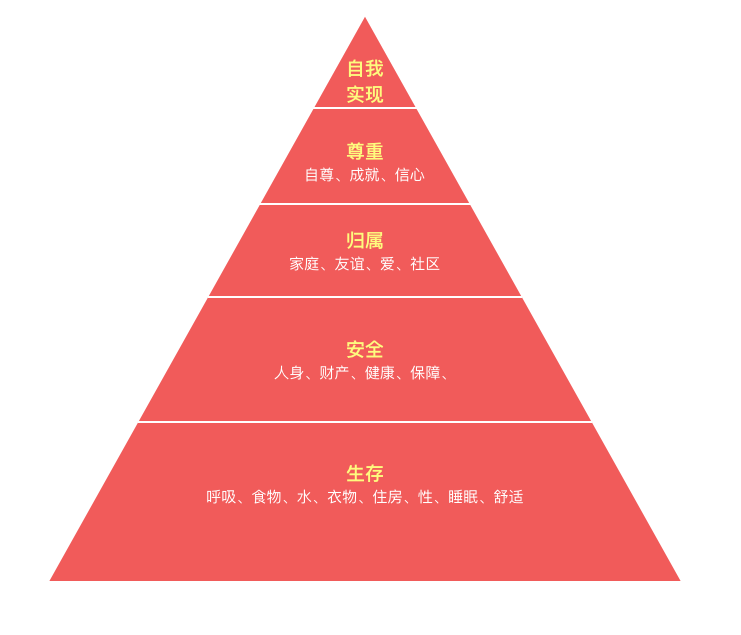</p>
<p>马斯洛的经典金字塔图：需求层次模型</p>
<p>在人生的不同阶段，会产生不同层次的目标需求。</p>
<p>在人生的早期，我们努力学习，考一个好大学，拥有一技之长，找一份好工作，带来更高薪的收入，这很大程度都是为了满足图中最底层的生存需求，让生活变得更舒适美好。</p>
<p>成长拼搏数年，事业小成，工作稳定，有房，有车，有娃后，第二层次，也就是安全的需求开始凸显。有人在这阶段开始给自己、父母、老婆、孩子都买人寿保险，开始考虑理财，投资甚至强身健体。然而处在这个阶段时，我却有一种强烈的不安全感，这也许和长年的程序员职业经历养成的习惯也有关系。</p>
<p>我们做系统应用服务时总是需要考虑各种意外和异常事件发生，一般至少提供主备方案。于人生而言，保持持续学习，与时俱进，追求成长，这其实也是一种主备方案：主，指当前支撑生活的工作；备，是通过持续学习，同步成长，保持核心能力的不断积累与时间的付出来获得一份备份保障，以避免 “主” 出现意外时，“备” 的能力已被时代淘汰。</p>
<p>需求金字塔底部两层属于物质层次的 “经济基础”，而再往上则进入了更高精神层次的 “上层建筑”。就个体而言，高层次需求要比低层次需求具有更大的价值。在 “生存” 和 “安全” 基本满足的保障基础之上，我们才会更从容地向内求，更多地探求内心，进而向外索，对外去探索、发现和建立不同的圈层关系，以满足上层的社交 “归属”、获得 “尊重” 与 “自我实现” 的需求。</p>
<p>马斯洛把底层的四类需求：生存、安全、归属、尊重归类为 “缺失性” 需求，它们的满足需要从外部环境去获得。而最顶层的“自我实现” 则属于 “成长性” 需求。成长就是自我实现的过程，成长的动机也来自于 “自我实现” 的吸引。就像很多植物具有天生的向阳性，而对于人，我感觉也有天生的 “自我实现” 趋向性。</p>
<p>人生最激荡人心的时刻，就在于自我实现的创造性过程中，产生出的一种 “高峰体验” 感。正因为人所固有的需求层次模型，我们才有了愿望，愿望产生目标，目标则引发计划。</p>
<h2>生涯发展</h2>
<p>在攀登需求金字塔的过程中，我们创造了关于人生的 “生涯”。而 “生涯” 一词最早来自庄子语：</p>
<blockquote>
<p>吾生也有涯，而知也无涯。以有涯随无涯，殆已。</p>
</blockquote>
<p>“涯” 字的原意是水边，隐喻人生道路的尽头，尽头已经没了路，是终点，是边界。正因如此，人生有限，才需要计划。著名生涯规划师古典有一篇文章《你的生命有什么可能？》对生涯提出了四个维度：高度、宽度、深度和温度。这里就借他山之玉，来谈谈我的理解。</p>
<ul>
<li>高度：背后的价值观是影响与权力。代表性关键词有：追逐竞争、改变世界。</li>
<li>深度：背后的价值观是卓越与智慧。代表性关键词有：专业主义、工匠精神。</li>
<li>宽度：背后的价值观是博爱与和谐。代表性关键词有：多种角色、丰富平衡。</li>
<li>温度：背后的价值观是自由与快乐。代表性关键词有：自我认同、精彩程度。</li>
</ul>
<p>每个人的人生发展路线都会有这四个维度，只是不同人的偏好、愿望和阶段不同导致了在四个维度分布重心的差异。在不同维度的选择，都代表了不一样的 “生涯”，每一种 “生涯” 都需要一定程度的计划与努力。</p>
<p>虽有四种维度，四个方向，但不代表只能选其一。虽然我们不太可能同时去追求这四个维度，但可以在特定的人生不同阶段，在其中一个维度上，给自己一个去尝试和探索的周期。所以，这就有了选择，有了计划。而计划会有开始，也会有结束，我们需要计划在人生的不同阶段，重点开始哪个维度的追求，以及大概需要持续的周期。</p>
<p>人生本是多维的，你会有多努力、多投入来设计并实现自己的生涯规划呢？不计划和努力一下，也许你永远无法知道自己的边界和所能达到的程度。</p>
<p>上世纪七十年代初，一个文学专业成绩很一般的学生毕业了。他虽然喜欢读文学作品却没写出过什么东西，毕业后就结了婚，和老婆开了个酒吧，生意不错，生活无忧。到了七十年代末，他似乎感受到某种 “召唤”，觉得应该写点什么东西了，于是每天酒吧打烊后，他就在餐桌上写两小时的小说，这一写就写了三十多年。熟悉的人想必已经知道他是谁了？对，就是村上春树。</p>
<p>所以，总要开始计划做点啥，你才能知道自己的 “涯” 到底有多远；而计划就是在系统地探索生涯，甚至人生的无限可能性。</p>
<h2>回首无悔</h2>
<p>关于后悔，有研究说：“我们最后悔的是没做什么，而不是做过什么。”回味一下，这个结论也确实符合我们的感觉。</p>
<p>万维钢写过一篇文章《决策理性批判》，里面引用了一个最新（2018）的关于后悔的研究，这个研究从 “理想的自己” 与 “义务的自己” 两个角度来说明：</p>
<blockquote>
<p>“理想的自己” 就是你想要成为什么人。</p>
<p>“义务的自己” 就是你应该干什么。</p>
</blockquote>
<p>若放到前面马斯洛需求金字塔中，“理想的自己” 就是站在顶端 “自我实现” 位置的那个自己；而 “义务的自己” 正在金字塔下面四层，挣扎于现实的处境。如果你从来没有去向 “理想的自己” 望上一眼，走上一步，将来终究会后悔的。事实上，研究结论也证明了这点：70% 以上的人都会后悔没有成为 “理想的自己”。</p>
<p>当我把自己进入大学以后的这十八年分作几个阶段来回顾时，有那么一段的好多时间我就是那样浑浑噩噩地混过去了，以至于现在回忆那段日子发现记忆是如此的粘连与模糊。后悔么？当然。</p>
<p>如果我能好好计划一下那段日子，也许会得到一个更 “理想的自己”。而在最近的这一段，我也感谢好些年前 “曾经的我”，幸运兼有意地做了一些计划。虽然一路走来，有些辛苦，但感觉会充实很多，而且如今再去回首，就没有太多后悔没做的事了。</p>
<p>计划，就是做选择，你在为未来的你做出选择，你在选择未来变成 “谁”。如果你还在为今天的自己而后悔，那就该为明天的自己做出计划了。</p>
<p>人生的征程中，先是恐惧驱动，地狱震颤了你，想要逃离黑暗深渊；后来才是愿望驱动，星空吸引了你，想要征服星辰大海。</p>
<p>逃离与征服的路，是一条计划的路，也是一条更困难的路，而 “你内心肯定有着某种火焰，能把你和其他人区别开来” 才让你选择了它。</p>
<h1>16 方式：计划的方法——脚踏实地</h1>
<p>当你内心成长的火焰被点燃，有成长的愿望，也形成了清晰的成长愿景，但却可能苦恼于不知道如何确定目标、制定计划，以达成愿景。</p>
<p>就拿我来说，每年结束我都会做一次全年总结，然后再做好新一年的计划，一开始这个过程确实挺艰难且漫长的，因为毕竟要想清楚一年的计划还是挺难的。但慢慢的，我开始摸索和学习到了一套制定富有成效计划的方法，成为了我成长的捷径。现借此机会我将其总结、分享给你。</p>
<h2>目标</h2>
<p>富有成效的计划的第一步，便是确定目标。</p>
<p>在设定目标这个领域，国外一位研究者马克·墨菲（Mark Murphy）曾提出过一种 HARD 方法。HARD 是 4 个英文词的首字母缩写：</p>
<ul>
<li>Heartfelt 衷心的，源自内心的</li>
<li>Animated 活生生，有画面感的</li>
<li>Required 必须的，需求明确的</li>
<li>Difficult 困难的，有难度的</li>
</ul>
<p>如其解释，这是一种强调内心愿望驱动的方法。按这个标准，一种源自内心的强烈需求在你头脑中形成很具体的画面感，其难度和挑战会让你感到既颤栗又激动，那么这也许就是一个好目标。</p>
<p>应用到个人身上，HARD 目标中的 <code>H</code> 体现了你的兴趣、偏好与心灵深处的内核。就拿写作这个事情来说吧，于我而言，兴趣只是驱动它的一种燃料，而另一种燃料是内心深处的表达欲望。写作本身不是目标，通过写作去完成一部作品才是目标，就像通过写代码去实现一个系统，它们都是作品，其驱动内核就是一种 “创造者之心”。</p>
<p>而 <code>A</code> 是你对这个目标形成的愿景是否足够清晰，在头脑中是否直接就能视觉化、具象化。就拿我个人来说，我非常喜欢读书，常在夜深人静的时候，默默潜读，掩卷而思，和作者产生一种无声的交流。这样一种画面，慢慢烙在脑海中，渐渐就激发起了想要拥有一部作品的目标。</p>
<p><code>R</code> 则是由上一篇文章中的马斯洛需求模型层次决定的。写作一方面本是自带属于第三层次的社交属性，但另一方面更多是一种成长性的自我实现需求在激发。完成一部作品，需要明确一个主题，持续地写作，一开始我从每月写，到每周写，再到写这个专栏，作品也就渐渐成型。</p>
<p>而最后的 <code>D</code> 是其难度，决定了目标的挑战门槛。太容易的目标不值得设定，太难或离你现实太远的目标也不合适。基于现实的边界，选择舒适圈外的一两步，可能就是合适的目标。于我，从写代码到写作，其实也真就只有那么一两步的距离。</p>
<p>以 HARD 目标法为指导，我回顾了我工作以来的成长发展阶段，根据目标的清晰度，大概可以划分为如下三个阶段：</p>
<ol>
<li>目标缺乏，随波逐流</li>
<li>目标模糊，走走停停</li>
<li>目标清晰，步履坚定</li>
</ol>
<p>第一个阶段，属于工作的前三、四年，虽然每天都很忙，感觉也充实，一直在低头做事。但突然某一天一抬头，就迷茫了，发现不知道自己要去向哪里，原来在过去的几年里，虽然充实，但却没有形成自己明确的目标，一直在随波逐流。</p>
<p>在那时，人生的浪花把我推到了彼时彼地，我停在岸边，花了半年的时间重新开始思考方向。当然这样的思考依然逃不脱现实的引力，它顶多是我当时工作与生活的延伸，我知道我还会继续走在程序这条路上，但我开始问自己想要成为一个怎样的程序员，想要在什么行业，什么公司，写怎样的程序。就这样，渐渐确立了一个模糊的目标。</p>
<p>重新上路，比之前好了不少，虽然当时定的目标不够清晰，但至少有了大致方向，一路也越走越清晰。从模糊到清晰的过程中，难免走走停停，但停下迷茫与徘徊的时间相对以前要少了很多，模糊的目标就像一张绘画的草图，逐渐变得清晰、丰富、立体起来。当目标变得越来越清晰时，步履自然也就变得越发坚定。</p>
<p>回顾目标在我身上形成的经历，我在想即使当时我想一开始就要去定一个目标，想必也不可能和如今的想法完全一致。毕竟当时受限于眼界和视野，思维与认知也颇多局限，所立的目标可能也高明不到哪里去；但有了目标，就有了方向去迭代与进化，让我更快地摆脱了一些人生路上的漩涡。</p>
<p>假如，你觉得现状不好，无法基于现状延伸出目标。那么也许可以试试这样想：假如我不做现在的事情，那么你最想做的是什么？通常你当前最想做的可能并不能解决你的谋生问题，那么在这两者之间的鸿沟，如何去搭建一条桥梁，可能就是一个值得考虑的目标。</p>
<p>我们为什么要立 HARD 目标？有一句话是这么说的：</p>
<blockquote>
<p>Easy choices, hard life. Hard choices, easy life.</p>
<p>容易的选择，艰难的生活；艰难的选择，轻松的生活。</p>
</blockquote>
<h2>方法</h2>
<p>目标是愿望层面的，计划是执行层面的，而计划的方式也有不同的认识维度。</p>
<p>从<strong>时间维度</strong>，可以拟定 “短、中、长” 三阶段的计划：</p>
<ul>
<li>短期：拟定一年内的几个主要事项、行动周期和检查标准。</li>
<li>中期：近 2～3 年内的规划，对一年内不足以取得最终成果的事项，可以分成每年的阶段性结果。</li>
<li>长期：我的长期一般也就在 5～7 年周期，属于我的 “一辈子” 的概念范围了，而 “一辈子” 当有一个愿景。</li>
</ul>
<p>短期一年可以完成几件事或任务，中期两三年可以掌握精熟一门技能，长期的 “一辈子” 达成一个愿景，实现一个成长的里程碑。</p>
<p>从<strong>路径维度</strong>，订计划可以用一种 SMART 方法，该方法是百年老店通用电气创造的。在 20 世纪 40 年代的时候，通用电气就要求每一个员工把自己的年度目标、实现方法及标准写信告诉自己的上级。上级也会根据这个年度目标来考核员工。这种方法进化到了 20 世纪 80 年代，就成了著名的 SMART 原则。</p>
<p>SMART 也是 5 个英文词的首字母缩写：</p>
<ul>
<li>Specific 具体的</li>
<li>Measurable 可衡量的</li>
<li>Achievable 可实现的</li>
<li>Relevant 相关的</li>
<li>Time-bound 有时限的</li>
</ul>
<p>今天 SMART 已经非常流行和常见，我就不解释其具体含义了，而是讲讲我如何通过 SMART 来跟踪个人年度计划执行的。按 SMART 方式定义的计划执行起来都是可以量化跟踪的，我通常用如下格式的一张表来跟踪：</p>
<p>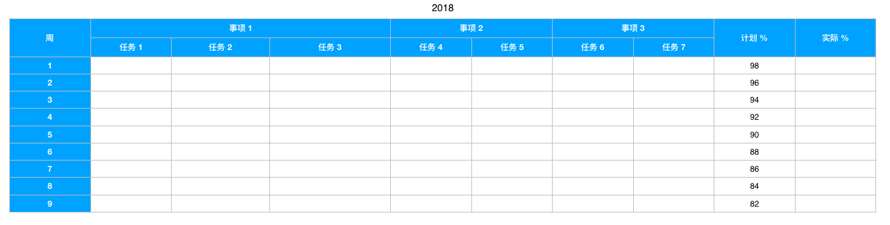</p>
<p>计划跟踪表示意图</p>
<p>其实，一年值得放进这张表的就那么几件事，每件事又可以分解为具体的几个可量化的任务，再分解到一年 50 周，就可以很明显地看出理想计划和现实路径的曲线对比。如下，是我 2017 年的一张计划与实际执行的对比曲线图：</p>
<p>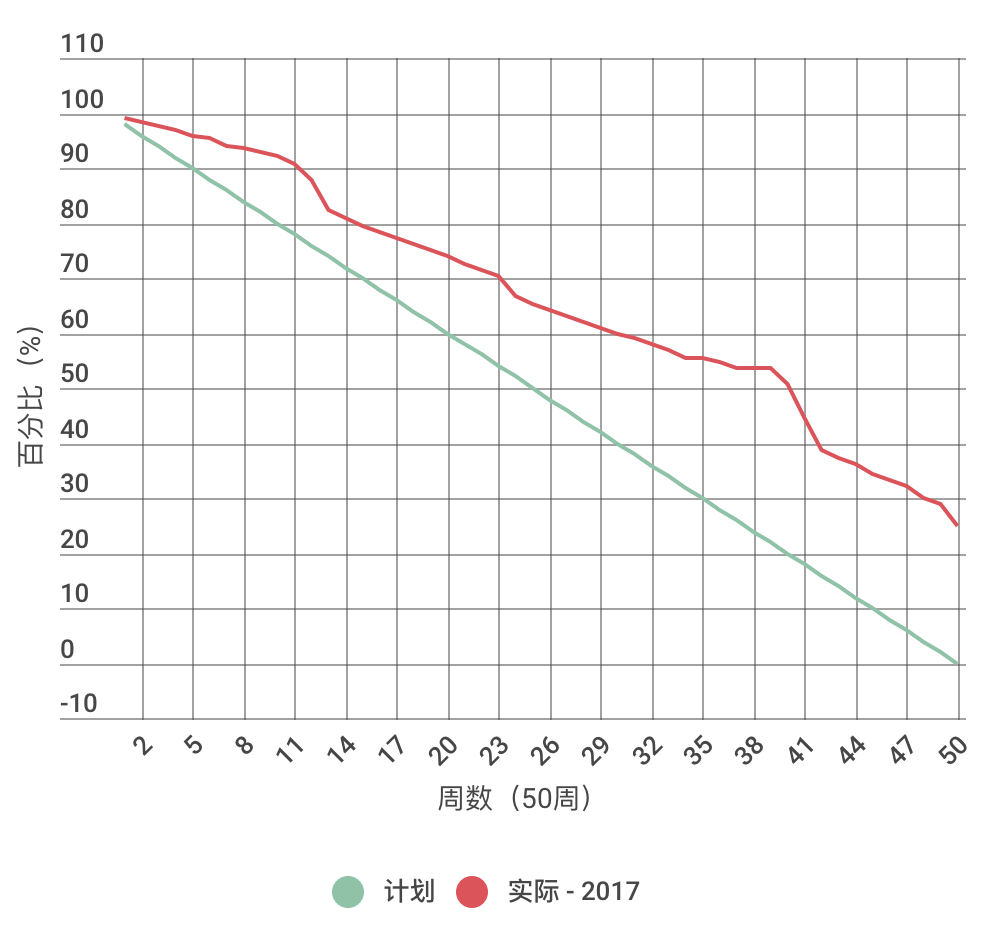</p>
<p>计划与实际执行对比示意图</p>
<p>按 SMART 原则方法使用计划跟踪表的优点是：简单、直接、清晰。但缺点也明显：即使百分百完成了所有的计划，也都是预期内的，会缺乏一些惊喜感。而因为制定目标和计划会有意识地选择有一定难度的来挑战，所以实际还很难达成百分百。</p>
<p>说到目标的难度与挑战，使用 SMART 方法最值得注意的点就是关于目标的设定和方法的选择。鉴于人性和现实的因素，制定计划时很可能是这样一种情况：基于现实掌握的方法，考虑计划的可达性。这样制定出来的计划看起来靠谱，但却失去了真正挑战与创新的可能。</p>
<p>通用电气传奇 CEO 杰克·韦尔奇执掌时期，有一个飞机引擎工厂制定了一个减少 25% 产品缺陷的目标。韦尔奇当时就觉得这个 SMART 目标很普通，没什么挑战，但工厂负责人却觉得已经很有难度了。韦尔奇执意坚持，把目标提高到了减少 70% 的缺陷，工厂负责人一开始很焦虑，认为这根本不可能完成。</p>
<p>没办法，标准是韦尔奇定的，改不了。工厂负责人知道按以前的方法根本达不成，只好去寻找新方法。在寻找的过程中，他们发现，要想如此大幅度地减少缺陷，不能只靠质检人员，而是必须让每名员工都有质检意识。</p>
<p>于是，工厂开始大规模进行培训；同时，工厂开始有意识招聘综合素质更高的技术工人。为了吸引并留住这些工人，工厂必须改变以前的管理方式，给他们更多的自主权，因为这些工人普遍受过很好的教育，而且很容易找到工作。最后，一个拔高的目标计划改变了整个工厂的培训、招聘和运行方式。</p>
<p>SMART 计划，正如其名，需要聪明且智慧地设定并使用它。</p>
<p>有时你可能会觉得计划没有变化快，或者计划好的人生，过起来好机械，没劲。其实计划是准备，变化才是永恒，而计划就是为了应对变化。为此，我经常会把计划表按优先级排得满满的，但我永远只做那些计划表顶部最让自己感到 HARD 的事情。</p>
<p>变化来了，就把它装进计划表中，看这样的变化会排在哪个位置，和之前计划表前列的事情相比又如何。如果变化的事总能排在顶上，那么说明你的人生实际就在不断变得更精彩，做的事情也会让你更激动。而如果变化老是那些并不重要却还总是紧急的事情，老打断当下的计划，那么也许你就要重新审视下你当前的环境和自身的问题了。</p>
<p>这样，计划表就成了变化表，人生无法机械执行，只有准备应对。</p>
<p>最后，找到属于你的 HARD 目标，开始有计划且 SMART 的每一天；这样的每一天，走的每一步也许会更重些、累些，但留下的脚印却很深、很长。</p>
<h1>17 检视：计划的可行——时间与承诺</h1>
<p>有了愿景，也有了具体的计划，但经常还是一年过去，发现实际和计划相比，总是有差距。是的，这是普遍现象，你可能并不孤独和例外：统计数字表明，在年初制定了计划的人中，只有 8% 实现了这些计划。</p>
<p>老实说，我回顾了近几年的个人年度计划完成情况，也只完成了约 70% 的样子。但我个人把这 70% 的比例算作“完成”，毕竟一年中谁还没个变化呢？于是，我把另外的 30% 留给变化，毕竟一成不变地按计划来的人生，感觉太过枯燥，有 30% 的变化还可能会碰到 “惊喜”；而如果 70% 都是变化，那可能就是 “惊吓”了。</p>
<p>程序员啊，有一个特点就是偏乐观，所以对于计划的估计总是过于乐观，乐观地期待 “惊喜”，然后又“惊吓”地接受现实。那如何才能让计划更具可行性呢？又可以从哪些方面来检视呢？</p>
<h2>时间与周期</h2>
<p>计划的第一个影响因素是和时间有关。</p>
<p>在过去的人类社会生活中，人们已经习惯了以年为单位来进行时间分界，所以我们都会习惯于做年度计划。在个人的时间感觉中，一年，似乎也算是挺长一段时间了，但在过去这么些年的计划与实践中，我学到的经验是：做计划不能靠模糊的感觉，而是需要精确理性的计算。</p>
<p>先来计算下，一年，我们到底有多少时间？一个正常参与社会工作的人，时间大约会被平均分成三份。</p>
<p>其中的 1/3（约 8 小时）会被睡过去了，这里假设一个正常人的生理睡眠需求大约 8 小时。虽然有一些讲述成功人士关于睡眠的说法，比如：“你见过凌晨四点钟的…”，似乎在暗示他们之所以成功，是因为每天都很努力只睡四个小时。但这个说法并没有提每天几点入睡，只是说四点起床而已。而我写这篇文字也是在周末的早晨五点开始的，但前一晚十点之前便睡了过去，至少我对睡眠时间的要求是没法长期低于 8 小时的。</p>
<p>另一个 1/3 你会贡献到和你的工作有关的各种事项中，虽然国家法律规定了每周只用上 5 天班，每天 8 小时，似乎用不了 1/3 的时间。但如果你的工作不是那种 “混日子” 的清闲工作的话，实际占用的时间基本总会多于法律规定的，至少程序员这份工作肯定是这样了。不过值得庆幸的是程序员的工作是可以随着时间积累起相应的知识、技能和经验，那么这份时间投入就是很有价值的了，随着时间积累，慢慢你就会成为工作领域内的行家。</p>
<p>最后的 1/3 就是我们常说的决定人生的业余 8 小时。可能有人会说我根本就没有业余 8 小时，天天都在加班。实际上工作和业余的 8 小时有时不太那么具有明显的分界线。程序员的工作，是一份知识性工作，很可能工作时间你在学习，也有很多情况是你在业余时间处理工作的事务。对于严格区分工作和业余时间的思维，我碰到过一种人：上厕所都要忍着，到了公司利用工作时间再去，以达成变相在工作时间偷懒的感觉。但，其实时间总是自己的。</p>
<p>一年 52 周，会有一些法定的长假和个人的休假安排，我们先扣除两周用于休假。那么一天业余 8 小时，一年算 350 天，那么一年总共有 2800 小时的业余时间。但实际这 2800 小时里还包括了你全部的周末和一些零星的假期，再预扣除每周 8 小时用于休闲娱乐、处理各种社会关系事务等等，那么你还剩下 2400 小时。</p>
<p>这 2400 小时就是你可以比较自由地用来安排的全部业余时间了，这就是理性计算的结果。这样看来，一年实际能用来计划的时间并不多，需要仔细挑选合理的事项，放进计划表，并真正地执行。而实际，一年中你还需要把时间合理地分配在 “短、中、长” 三种不同周期的计划上。</p>
<ul>
<li>短期：完成事项，获取结果，得到即时反馈与成就感（比如：写这个专栏）。</li>
<li>中期：学习技能，实践经验，积累能力（比如：学一门语言）。</li>
<li>长期：建立信念，达成愿景（比如：成长为一名架构师）。</li>
</ul>
<p>你可以从时间的维度，看看你计划的时间安排是否合理分配在了不同周期的计划事项上。如果计划的事项和周期匹配错了，计划的执行就容易产生挫败感从而导致半途而废，曾经的我就犯过这样的错误。</p>
<p>这个错误就是在学习英语的计划上。两年多以前，工作十年后的我又重启了英语提升计划，希望能通过每天 3 ～ 4 小时的英语学习，一年内使自己的英语听读都能达到接近汉语的水平。但实际情况是，我用了两年（接近 1500 小时吧）才勉强比刚从学校毕业时上了一个台阶，离母语水平，我不知道前面还有多少个台阶。</p>
<p>英语提升计划，我搞错了周期，一度颇受打击。英语技能，实际就是一个 10000 小时技能，虽然我是从初中开始学习，然后至大学毕业拿到六级证，差不多有十年时间。但实际真正有效的学习时间有多少呢？假如每天一节课算 1 小时，一周 6 小时，每年 50 周，十年上课下来也就 3000 小时，再考虑为了考试自己的主动复习时间，再加 2000 小时，那么过去在学校总共投入了 5000 小时。</p>
<p>但从学校毕业后的十年，实际工作环境中，除了技术英语阅读，我几乎很少再接触英语了。而语言基本就是用进废退的技能，所以再重启学习提升计划时，我对此计划的周期完全估算错误，最后得到的效果也远低于我的预期。其实这应该是一个长期的计划，定一个合理的愿景，循序渐进成为一名熟练的英语使用者。</p>
<p>要让计划可行，就是<strong>选择合适的事项，匹配正确的周期，建立合理的预期，得到不断进步的反馈</strong>。</p>
<h2>兴趣与承诺</h2>
<p>既然时间有限，那该如何选择有限的事项，才可能更有效地被执行下去呢？</p>
<p>其中有一个很重要的因素：兴趣。有的人兴趣可能广泛些，有的人兴趣可能少一些，但每个人多多少少都会有些个人的兴趣爱好。对于兴趣广泛的人来说，这就有个选择取舍问题，若不取舍，都由着兴趣来驱动，计划个十几、二十件事，每样都浅尝辄止。实际从理性上来说价值不大，从感性上来说只能算是丰富了个人生活吧。</p>
<p>彼得·蒂尔在《从 0 到 1 》这本书里批判了现在的一个观点：过程胜于实效。他解释说：“当人们缺乏一些具体的计划去执行时，就会用很正式的规则来建立一些可做的事情选项的组合。就像今天美国中学里一样，鼓励学生参与各种各样的课外活动，表现的似乎全面发展。到了大学，再准备好一份看似非常多元化的简历来应对完全不确定的将来。言外之意，不管将来如何变化，都在这个组合内能找到可以应对的准备。但实际情况是，他们在任何一个特定方面都没有准备好。”</p>
<p>因此，在有限的学校生涯中，你就得做出选择。就好像我大学那时，学校开了几十门（记得大概有 45 门）各类专业课，这就是一个组合。但其中真正重要的课程实际只有个位数，重心应该放在少数课程上，其他的只起到一个开阔眼界和凑够学分的作用。</p>
<p>几十门课是学校给的选项，你可以从中做出选择。那应该选择哪些事项放进计划表呢？我建议你可以从兴趣作为出发点，因为这样更容易启动；而对于中期目标，像学习提升一项技能，只靠兴趣是不足以驱动去有效执行的，甚至达不到预期效果。关于此，吴军有一个观点：</p>
<blockquote>
<p>凡事从 0 分做到 50 分，靠的是直觉和经验；从 50 分到 90 分，就要靠技艺了。</p>
</blockquote>
<p>凭借兴趣驱动的尝试，结合直觉和经验就能达成 50 分的效果，而要到 90 分就需要靠技艺了。而技艺的习得是靠刻意练习的，而刻意练习通常来说都不太有趣。要坚持长期的刻意练习，唯一可靠的办法就是对其做出郑重的承诺。</p>
<p>通过兴趣来启动，但要靠承诺才能有效地执行下去。感兴趣和做承诺的差别在于，只是感兴趣的事，到了执行的时候，总可以给自己找出各种各样的原因、借口或外部因素的影响去延期执行；而承诺就是这件事是每天的最高优先级，除非不可抗力的因素，都应该优先执行。</p>
<p>比如，写作本是我的兴趣，但接下 “极客时间” 的专栏后，这就是承诺了，所以为此我就只能放弃很多可以用于休闲、娱乐的时间。</p>
<p><strong>兴趣让计划更容易启动，而承诺让计划得以完成。</strong></p>
<p>而在现实生活中，让计划不可行或半途而废的常见错误有：</p>
<ul>
<li>以为一年之内自己有足够多的自由支配时间；</li>
<li>对计划的事情误判了其开发与成长的周期；</li>
<li>兴趣很多，一直在尝试，却不见有结果。</li>
</ul>
<p>放进计划表的事项是你精心识别、选择并做出的承诺，而承诺也是一种负担，若承诺太多，负担可能就太重，会让你感觉自己不堪重负，最后就可能放弃了，到头来又是一场空。其实，一年下来，重要的不是开启了多少计划，而是完成了几个计划。</p>
<p>所以，可行的计划应该是：<strong>有限的时间，适合的周期，兴趣的选择，郑重的承诺</strong>。</p>
<h1>18 评估：计划的收获——成本与收益</h1>
<p>做计划自是为了有收获，实现愿景也好，获得成长也罢，每一份计划背后都有付出与收获的关系。如果计划的收益不能高于执行它付出的成本，那么其实这种的计划就几乎没有执行价值。</p>
<p>执行计划的成本通常是你付出的时间或金钱，但收益则没那么明确，这就需要你去仔细评估和取舍。</p>
<p>而有些计划本身从成本和收益的角度看就不是一个好计划，比如，我见过一些计划是：今年计划读 20 本书。读书本是好事，但读书的数量并不是关键点，关键是计划今年读哪些书。因为只有明确了读哪些书，才能评估是否值得和适合在这阶段去读。</p>
<p>值得与否，就是关于成本与收益的评估，而为了更好制定有价值的计划，你就需要去仔细权衡这种关系。</p>
<h2>成本与机会</h2>
<p>计划即选择，而但凡选择就有成本。</p>
<p>从经济学思维的角度，做计划就是做选择，选择了某些事情；而选择了这些事情，就意味着放弃了另外可能做的事情，这里面的成本就是机会成本。机会成本是放弃的代价，选择这些事情从而放弃的其他可能选项中拥有最高价值的事情。</p>
<p>就好像同样一个晚上，有人选择了用来玩网络游戏，你以为的成本是几小时的点卡钱，但实际你放弃的是用来学习、看书等其他事项的潜在价值与收益。青少年时代谁还没玩过游戏，我也玩过十多年的游戏，虽不能简单地认为游戏毫无意义，但十年前，我明白了机会成本的概念后，就做出了选择。</p>
<p>我的长期计划中有一项是写作。从我 2011 年开始写下第一篇博客放在网上到现在，已经过去了七年。那写作的成本和收益又是怎样的呢？</p>
<p>一开始总有一些人愿意免费写一些优质内容放在网上，从读者的角度来看，他们总是希望作者能长期免费地创造优质内容。但从花费的时间成本来看，这是不太现实的，也很难长久持续下去。</p>
<p>从作者的角度，时间成本其实是越来越高，而且很刚性。比如，七年前我写一篇文章的时间其实和现在差不太多，时间成本按说是增加的（因为单位成本随时间增加了）；但是写作会持续创造价值，我可以在持续写作中不断总结获得成长，而成长的价值都会通过职业生涯发展获得收益，这是间接收益。而一些成功的作者，可能还可以通过写作获得直接收益，比如目前蒸蒸日上的各类知识付费专栏。</p>
<p>在中国互联网快速发展的这十多年间，我的学习路径也发生了转变。前期，我都是从网上去扒各种免费的电子书，看免费的博客，读开源的代码；但今天我几乎不会再去网上找免费的学习材料了，而是直接付费购买。</p>
<p>而且你应该也发现了现在知识和内容付费的趋势在扩大，这是为什么？因为大家都意识到了时间的成本，是选择花费自己的时间去搜索、甄别和筛选内容，还是付出一点点费用得到更成体系的优质内容？大家已经做出了选择。</p>
<p>学习计划是个人成长计划中的一部分，而成长计划中，最大的成本依然是时间。在你早期的学习阶段，虽然时间没那么值钱，但把钱和时间都花在加速成长上，其实是“成本有限，潜在收益巨大”的选择。</p>
<p>而计划，就是对你的时间做分配。时间在不同的阶段，价值不同，那么成本也就不同。你要敏感地去感知自己时间的成本，去提升时间的价值，根据时间的价值再去调整自己的计划和行动。成长过程中，早期的成本低而选项多，后期的成本高且选项少。</p>
<p>文艺复兴时期法国作家蒙田曾说过：</p>
<blockquote>
<p>真正的自由，是在所有时候都能控制自己。</p>
</blockquote>
<p>如蒙田所说，<strong>计划才能给你真正的自由，你对计划的控制力越强，离自由也就更近了</strong>。</p>
<h2>结果与收益</h2>
<p>计划得到了执行，产生了预期的结果，才会有期望的收益。</p>
<p>但据抽样统计，制定了年度计划的人里面，仅有 8% 的人能完成他们的年度计划。年度计划通常都是一份从未向任何人公布的计划，从某种意义上来说，除了你自己自律，并没有任何约束可言。这个世界的外部环境变化那么快，你很容易找到一个理由说服自己：计划赶不上变化。</p>
<p>变化之后的计划，只是一份更契合实际的计划，而非不再存在。很多外部因素是你无法预测和控制的，总会来干扰你的计划，所以这给了你足够的客观原因。但无论有多少客观原因，你做计划的初衷是：一点点尝试去控制自己的生活，然后得到自己想要的结果。</p>
<p>在获得结果的路上，这个世界上似乎有两类人：</p>
<ul>
<li>第一类人，自己给自己施加约束，保持自律并建立期望；</li>
<li>第二类人，需要外部环境给予其约束和期望。</li>
</ul>
<p>在我读高中时，现实中就有一种巨大的社会期望和约束施加己身，那就是高考。在这种巨大的社会外部约束和期望下，第二类人可以表现得非常好，好到可以考出状元的分数。但进入大学后，这样的外部约束和期望会瞬间下降，最后可能也就泯然众人之间了。</p>
<p>心理学上有个皮格马利翁效应：</p>
<blockquote>
<p>人们基于对某种情境的知觉而形成的期望或预言，会使该情境产生适应这一期望或预言的效应。</p>
</blockquote>
<p>通俗点说就是，如果有人（可以是别人或自己）对你的期望很高，你会不自觉地行动去满足并符合这种期望；若周围没有这样的期望，最终你可能就是一个符合周围人群平均期望的人。而所谓的自驱力，就是你对自己的期望所形成的推动力量。</p>
<p><strong>要获得好的结果，你就要做第一类人，需要对自己有更高的期望，需要有自驱力。</strong></p>
<p>进入大学或工作以后，周围环境对你的期望已经降到很低。于我而言，来自父辈的那一代人，也就是上世纪四五十年代那一代，经历了饥荒甚至战争，他们的期望通常代表一代人，都是平平安安、健健康康，有个稳定的工作就够了。</p>
<p>这样的期望对于大部分读了大学、有个工作的人来说都不足以形成驱动力了，更何况我们大多数人每日工作忙里忙外，不外乎忧心柴米油盐，困于当下。少了外部足够强大的期望推动，多数第二类人的内心驱动从此也就熄火了，但还是有少数的第一类人在 “仰望星空”，比如科幻小说《三体》的作者大刘（刘慈欣）。</p>
<p>我是 1999 年在四川成都的一本科幻杂志《科幻世界》（现已停刊）上读到他的首部短篇小说的。实际他 85 年毕业，在电厂任工程师，89 年开始写科幻小说，直到 99 年才见到他的第一部作品公开发表。从 89 年到 99 年这十年间基本就是独自“仰望星空”来完成了写作这门技艺的打磨过程，并留下了自己的第一部作品，再之后到写完《三体》，这又是另一个十年了。</p>
<p>而于我，除了写作，还有另一项长期计划：学好英语。快三年前了，我重启了英语提升计划，付出的成本是每天至少一到数小时不等的学习和听读文章的时间成本，那么收益呢？学好英语是能产生直接收益的，比如通过翻译就能赚钱，但这就落入了一种狭隘的思维。</p>
<p>一方面，翻译的时间单价市场行情是非常低的，目前英译中的普通文章，恐怕不到 100 元每千字，相比一个初中级程序员的市场价，时间成本是很不划算的。所以，学好英语从我的角度来说，赚取的不是直接的经济收益，而是间接的结构性收益，增强直接收益结构价值。</p>
<p>那么如何理解收益结构？以我现阶段的状态来说，已有三个直接收益结构：</p>
<ul>
<li>专业</li>
<li>写作</li>
<li>理财</li>
</ul>
<p>专业，自然是指程序专业技能，通过出售自己的时间和人力资源来获取一份相对稳定的工资收入来源。写作，到今天这个专栏出品后，终于可以通过作品的形式产生直接收益，它只需一次性投入时间来完成作品。而理财属于资产性收益，就是任何等价于钱的家庭动产或不动产，能产生利息、分红或租金的收入，它需要长期的收入结余积累。</p>
<p>而英语技能的提升对这三个直接收益结构，都能产生增益作用。程序行业自不必多说，行业里最好的文章、书籍或专业论文材料等可能都是英文的，只有少部分被翻译了过来，但翻译总是有损失、有偏差、有歧义，能直接高效地阅读英语对提升你的专业技能和能力帮助巨大。</p>
<p>而写作，英语给我提供了另外一个更广阔世界的写作素材和看待世界的角度。所以，我在时间分配上不仅看中文文章，也看一些英文媒体文章和书籍。</p>
<p>至于理财，英语让我更直接高效地接收中文世界以外的信息，从某种角度来说，具备了更多元化的视角和思维结构。而思维和视角是投资理财的核心能力，在这个领域全是选择题，只有做对选择的概率高于做错的概率，才可能获得正收益。</p>
<p>这就是我选择一项长期计划时关于结果与收益的思考，而成长计划的收益，从经济价值来说，都是远期收益，是为了变得更值钱。也许期望的结果达成，目标实现，真的会变得更值钱，就像上面例子里的大刘。但也可能没能实现目标，那么你还能收获什么？也许有来自过程的体验，这也是选择目标时，源自内心和兴趣是如此重要的原因。</p>
<p>在考虑付出与收获时，后来读到一句话，大意如下：</p>
<blockquote>
<p>生活也许不会像计划那样发生，但对待生活的态度可以是：期待伟大的事情发生，同时也要保持快乐和幸福，即使它没能发生。</p>
</blockquote>
<p>如此，面对真实的生活，也当释然了。</p>
<p>最后，留个思考题：关于计划你感觉是束缚了你的生活，还是让你更自由了？</p>
<h1>19 障碍：从计划到坚持，再到坚持不下去的时候</h1>
<p>设定一个计划并不困难，真正的困难在于执行计划。若你能够坚持把计划执行下去，想必就能超越绝大部分人，因为大部分人的计划最终都半途而废了。</p>
<p>为什么那么多计划都半途而废了？在执行计划时，你会碰到怎样的障碍？我想从计划生命周期的各个阶段来分析下。</p>
<h2>酝酿</h2>
<p>酝酿期，是计划的早期雏形阶段；这阶段最大的障碍来自内心：理性与感性的冲突。</p>
<p>计划的目标是源自内心的，但也是有难度的，若是轻而易举的事情，也就不用计划了。这些需要坚持的事情，通常都 “不好玩”，而人是有惰性的，内心里其实并不愿意去做，这是我们感性的部分。但理性告诉我们，去完成这些计划，对自己是有长远好处的。这，就是冲突的地方。</p>
<p>就以我自己写作的例子来看，我不是一开始就写作的，我是工作了 5 年后，碰到了平台期，撞上了天花板，感觉颇为迷茫。于是就跑到网上到处看看有没有人分享些经验，找找道路。然后，看到了一些 “大神” 们写的博客，分享了他们一路走过的经历，在我迷茫与灰暗的那个阶段的航行中，就像一盏灯塔指引着前进方向。</p>
<p>于是我在想，也许我也可以开始写写东西。那时，内心里出现了两个声音，一个声音说：“你现在能写什么呢？有什么值得写的吗？有人看吗？”而另一个声音反驳说：“写，好过不写，写作是一件正确的事，就算没人看，也是对自己一个时期的思考和总结。”</p>
<p>最终，理性占了上风，开启了写作计划，然后注册了一个博客，想了一句签名：“写下、记下、留下”。</p>
<h2>启动</h2>
<p>启动期，是计划从静止到运动的早期阶段；这阶段的最大障碍是所谓的“最大静摩擦力”。</p>
<p>我们都学过初中物理，知道 “最大静摩擦力” 是大于 “滑动摩擦力” 的，也就是说要让一个物体动起来所需要的推力，比它开始运动后要大一些。这个现象，放在启动一个计划上时，也有类似的感觉，所以才有一句俗语叫：“万事开头难”。</p>
<p>还是回到我开始写作那个例子，我的第 1 篇博客的写作过程，至今还记得很清楚：一个周六的下午，在租的小房间里整整写了一下午。写得很艰苦，总感觉写得不好，不满意。最后一看天都黑了，肚子也饿了，就勉勉强强把它发了出去。</p>
<p>发出去后的前两天，我也会经常去刷新，看看阅读量有多少，有没有人评论啊。让人失望的是，前一个声音的说法变成了事实：的确没什么人看。两天的点击量不到一百，一条评论也没有，而且这一百的阅读计数里，搞不好还有些是搜索引擎的爬虫抓取留下的。</p>
<p>但是，写完了第一篇，我终于克服了写作的 “最大静摩擦力” 开始动了起来，一直写到了今天，这已经过去了 7 年。</p>
<h2>执行</h2>
<p>执行期，是计划实现过程中最漫长的阶段；这阶段的最大障碍就是容易困倦与乏味。</p>
<p>漫长的坚持过程期，大部分时候都是很无聊、乏味的，因为真实的人生就是这样，并没有那么多戏剧性的故事。所以，我在想这也许就是为什么那么多人爱看小说、电视剧和电影的原因吧，戏中的人物经历，总是更有戏剧性。</p>
<p>美国当代著名作家库尔特·冯内古特在一次谈话中谈及人生，他用了一组形象的类比来描述人生。我翻译过来并演绎了一下，如下面系列图示：</p>
<p>其中，纵坐标表示生活的幸福程度。越往上，代表幸福指数越高；越往下，代表幸福指数越低。中间的横线表示普通大众的平凡人生。</p>
<p>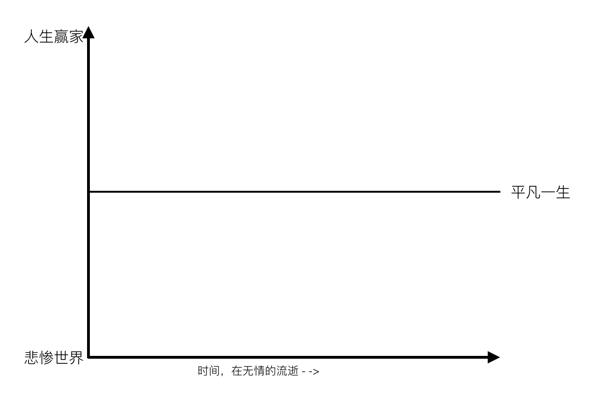</p>
<p>那么先来看一个大家都很熟悉的从 “丑小鸭” 变 “白天鹅”的故事：灰姑娘 。</p>
<p>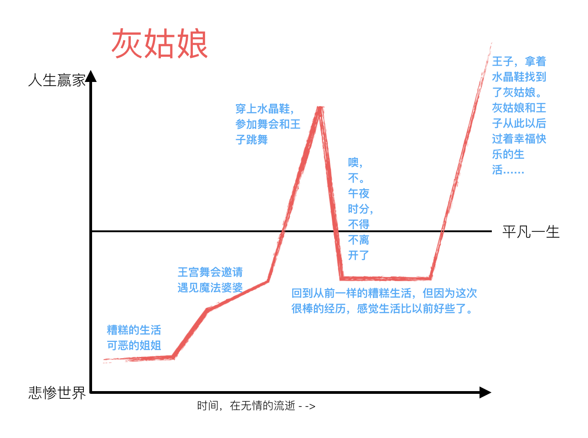</p>
<p>我们从小就听过这个故事，人们喜欢这样的故事。同样的故事内核，被用在不同的故事里书写了上千次，传诵了上千年。这是一个皆大欢喜的故事，而下面则是一个稍微悲伤点的故事。</p>
<p>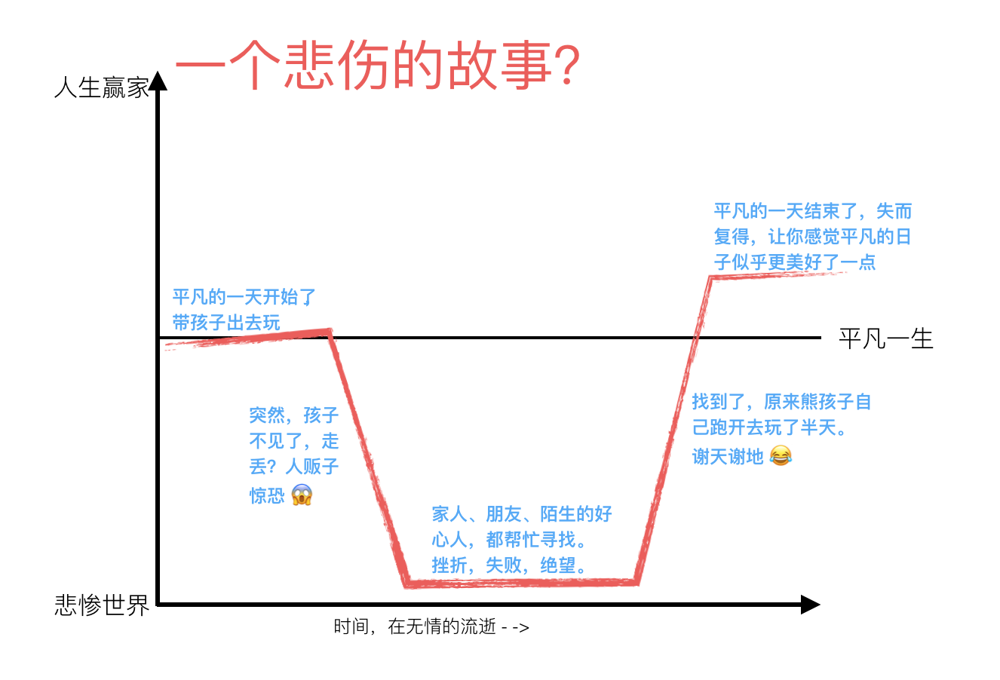</p>
<p>故事虽以悲剧开始，但好在以喜剧结束。人们也喜欢这样的故事，生活不就该这样吗？问题是，真实的生活可能是下面这样的。</p>
<p>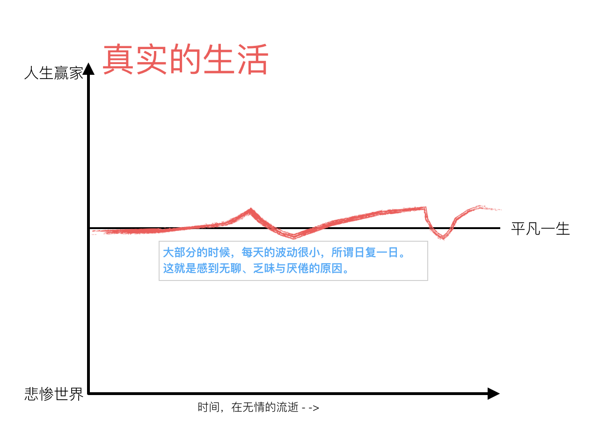</p>
<p>没有那么多大起大落，我们大部分人的生活只是在经历一些平平凡凡的琐事。也许其中有些会让你感到高兴与兴奋，有些又让你感到烦躁与郁闷。但这些琐事都不会沉淀进历史中，被人们传诵上千年，它仅仅对你自己有意义。</p>
<p>所以呢，你明白为什么你感觉你的坚持那么无聊、单调与乏味了吧，大多数时候它都缺乏像 “灰姑娘” 故事曲线的戏剧性。而对抗这种过程的无聊，恰恰需要的就是故事。你看人类的历史上为什么要创造这么多戏剧性的故事，让这些戏剧性的故事包围了我们的生活，让人们想象生活充满了戏剧性，这种想象是治疗乏味的良药，也成为了创造更美好生活的动力。</p>
<p>万维钢的一篇文章《坚持坚持再坚持》里也提到：</p>
<blockquote>
<p>故事的价值不在于真实准确，而在于提供人生的意义。</p>
</blockquote>
<p>坚持，特别是长期的坚持，是需要动力的，而动力来自目标和意义。而获得目标与意义的最好方式是讲好一个故事。你看，成功的企业家会把未来的愿景包进一个美好的故事里，让自己深信不疑；然后再把这个故事传播出去，把所有相信这个故事的人聚在一起去追寻这个故事；最后，这个关于未来的故事就这样在现实中发生了。</p>
<p>漫长的人生，你需要为自己讲好一个故事。</p>
<h2>挫败</h2>
<p>挫败，不是一个阶段，而是坚持路上的一些点；正是在这些点上你遭遇了巨大的挫败感。</p>
<p>为什么会产生挫败感？可能的原因有，一开始你就不知道这件事有多难，直到走了一段后才发现这太难了。一开始就评估清楚一个计划的难度，需要投入大量的时间、经历和金钱，甚或有更高的技能与能力要求，这本身就是一件不容易的事。</p>
<p>而如果你计划的是一件从来没做过的事情，这就更难准确评估了。在路上，行至中途遭遇 “低估” 的挫败感就再正常不过了，而不少人，因为挫败过一两次后，就会放弃了计划。有时，遭遇挫败，选择了放弃，这个未必就是不合适的，但这要看这个放弃的决策是在什么情况下做出的。</p>
<p>遭遇挫败，你会进入一种心情与情绪的低谷，这个时候有很高的概率做出放弃的决策。而我的经验是，不要在挫败的情绪低谷期进行任何的选择与决策。可以暂时放下这件事，等待情绪回归到正常，再重新理性地评估计划还是否该坚持。</p>
<p>每经历一次挫败之后，你还选择坚持，那么就已经收获了成长。</p>
<p>最后总结来说，就是：你为了做成一件事，定一个计划，在执行计划的过程中，在 “酝酿”“启动” 和 “执行” 的不同阶段都会碰到各种障碍，可能都会让你产生一种快坚持不下去了的感觉。每到此时，你都要想想清楚，哪些是真正客观的障碍？哪些是主观的退却？</p>
<p>从坚持到持续，就是试图让现实的生活进入童话的过程，而后童话又变成了现实。</p>
<p>本文分析了计划的执行障碍，最后我也想问问你，在你成长的路上，遭遇过哪些障碍？是什么原因让你坚持不下去了的？</p>
<h1>20 执行：从坚持到持续，再到形成自己的节奏</h1>
<p>有了一个目标后，我们通常会做好全方位的计划，并满心期待启动它，本想着朝着既定目标“一骑红尘飞奔而去”。但计划赶不上变化，很多时候，执行了一段时间后，我们可能会觉得比较累，有种快坚持不下去了的感觉，然后就半途而废了。这种场景我们每个人应该都不陌生。</p>
<p>其实，在执行过程中，容易半途而废的一个很可能的原因在于节奏出了问题。</p>
<h2>计划的节奏</h2>
<p>一个计划被制定出来后，我们通常会根据它的周期设定一个执行的节奏。</p>
<p><strong>长期</strong>，就像长跑，跑五千米是长跑，跑马拉松（四万多米）也是长跑，但我们知道跑五千米和跑拉松肯定是用不同的节奏在跑。</p>
<p>一个长期的目标可以是五年，也可以是十年，因目标而异。要精熟一门技能领域，比如编程，确切地说应该是编程中的某一分支领域，对于一般人来说，可能就需要三五年不等了。而像精通一门外语，可能需要的时间更长，我是从初中开始学习英语的，如今二十多年过去了，别说精，可能连熟都谈不上。</p>
<p>于我而言，可能因为编程技能是要解决吃饭温饱的需要，刚需比较强烈；而英语这么多年，都是考试的需要，刚需太弱，故二者的学习和练习节奏完全不同，最后学习掌握的能力也相差甚远。</p>
<p>一个<strong>中期</strong>的目标，也许是一年。比如，计划用一年时间写一本书，假如一本书 20 万字，那每周大约需要完成 4000 字，再细化到每天就是 800 字左右。这就是我们做一年计划的方式，计划成型后，相应做出分解，分解到周这个级别后，基本的计划节奏就出来了。</p>
<p>一个<strong>短期</strong>的目标，可能是几个月。比如，我这个 “极客时间” 专栏，计划就是几个月内完成的事情。它上面已经形成了每周三篇更新的节奏，这样的写作节奏对于我来说基本已经算是全力冲刺了，所以时间就不能拉得太长。</p>
<p>不同周期的计划，都会有一个共同的问题：计划总是过于乐观了，现实的执行很难完全符合计划。</p>
<p>你可能也遇到过，计划的节奏总是会被现实的“意外”打断，每次计划的节奏被打断后，都会陷入一种内疚的挫败感中；然后就强迫自己去完成每日计划列表中的每一项，否则不休息，最终也许是获得了数量，但失去了质量。在这样的挫败中纠结了几次后，你慢慢就会发现，现实总是比计划中的理想情况复杂多变。</p>
<p>不过，这才是真实的人生。偶尔错过计划没什么大不了的，如果人生都是按计划来实现，那岂不也有些无聊。</p>
<p>万维钢有篇文章叫《喜欢 = 熟悉 + 意外》，这篇文章下有位读者留言说：</p>
<blockquote>
<p>贾宝玉第一次见到林黛玉说的第一句话就是 “这个妹妹好像在哪儿见过似的”。有点熟悉，也有点意外，这就是喜欢了。</p>
</blockquote>
<p>所以，当“意外”出现时你不必感到太过闹心，试着换个角度来看，这偶尔出现的“意外”也许会反而让你更喜欢这样的人生呢。</p>
<p>计划更多是给予预期和方向，去锚定现实的走向，但在行进的过程中，“意外” 难免会出现。所以，你要从心理上接受它，并从行为上合理地应对它。</p>
<p>下面我就来说说我是怎么应对这些“意外”的。</p>
<p>按程序员的思考方式，我会为所有计划中的事情创建了一个优先级队列，每次都只取一件最高优先级的事情来做。而现实总会有临时更高优先级的 “意外” 紧急事件插入，处理完临时的紧急事件，队列中经常还满满地排着很多本来计划当天要做的事情。</p>
<p>以前，我总是尝试去清空队列，不清空不休息，但实际上这很容易让人产生精疲力竭的感觉。如今，我对每个计划内的事情对应了一个大致的时间段，如果被现实干扰，错过了这个时间段，没能做成这件计划内的事情，就跳过了，一天下来到点就休息，也不再内疚了。</p>
<p>举例来说，我计划今晚会看看书或写篇文章，但如果这天加班了，或者被其他活动耽误了，这件计划中的事情也就不做了。但第二天，这件事依然会进入队列中，并不会因为中断过就放弃了。只要在队列里，没有其他事情干扰，到了对应的时间段就会去执行。</p>
<p>计划的节奏，就像中学物理课上假设的理想的无摩擦力环境，而现实中，摩擦力则总是难以避免的，所以你要学会慢慢习惯并适应这真实而有点“意外”的节奏。</p>
<h2>他人的节奏</h2>
<p>跑马拉松的时候，一大群人一起出发，最后到达终点时却是稀稀拉拉。这说明每个人的节奏是不同的，即便同一人在不同阶段的节奏也是不一样。</p>
<p>同理，就拿我的写作节奏来说，在七年中也慢慢从每月一篇提升到了每周一篇。当然，有些微信公众号的作者写作速度一直都很快，可能是每天一篇。但如果我要用他们的节奏去写作，可能一开始坚持不了多久就会放弃写作这件事了。</p>
<p>所以，从写作这件长期的事情中，我收获的关于节奏的体会是：每个人都会有自己不同的节奏，这需要自己去摸索、练习，并慢慢提升。如果开始的节奏太快，可能很快就会疲惫、倦怠，很容易放弃；但如果一直节奏都很慢，则会达不到练习与提升的效果，变成了浪费时间。</p>
<p>执行长期计划，就如同跑马拉松，本来是一群人一起出发，慢慢地大家拉开了距离，再之后你甚至前后都看不到人了。是的，正如《那些匀速奔跑的人你永远都追不上》那篇文章所说：</p>
<blockquote>
<p>匀速奔跑的人是那些可以耐住寂寞的人，试想当你按照自己的节奏持之以恒默默努力地去做一件事情时，是极少会有伙伴同行的，因为大家的节奏各不一样，即便偶尔会有也只是陪你走过一段。</p>
</blockquote>
<p>但有时，我们看见别人跑得太快没了踪影，心里会很是焦急。我们身边有太多这样的人，把一切都当成是任务，必须要在某个确定的时间做完它，必须要在一个规定的时间内取得它应有的效益。</p>
<p>的确，我们的世界变化太快了，快到我们都怕浪费一分一秒，快到我们被这个世界的节奏所裹挟，所以就逼迫自己去努力，去完成，去改变，但却完全失去了自己的节奏，直到我们决定随它去吧，和大家随波逐流就好。</p>
<p>有时太急迫地“追赶”，最后反而阻挡了你稳步前进的步伐和节奏。</p>
<h2>自己的节奏</h2>
<p>找到并控制好自己的节奏，才能长期匀速地奔跑，才能更高效地利用好自己的时间和注意力。</p>
<p>对于每日计划的执行节奏，我自己的经验是：<strong>把自己的时间安排成一段一段的，高度集中和高度分心交叉分布</strong>。</p>
<p>假如某段时间需要高度集中注意力，就可以处理或思考一些比较难的事情。比如，50 ～ 60 分钟，集中注意力处理工作事务，远离手机信息推送及其他各种环境的打扰；然后休息一会儿，10 ～ 15 分钟左右，回复一些聊天或邮件这类其实不需要那么高注意力的事情。</p>
<p>有时，当你想去处理一件复杂困难的事情，比如写作，这是一种短时间内需要高度集中注意力的活动，但这时脑中总是在同时想着其他很多事情或者被动地接收一些环境信息（周围的谈话声之类的），还控制不住，很难集中注意力。这种情况下，就不用勉强开始，我通常会通过切换环境，从外部去排除一些干扰。</p>
<p>另外，如果感觉是比较疲惫，则更不能马上开始了，这种状态下，一般我都是立刻去小憩片刻或者闭目养神一段时间（20 ～ 30 分钟），进入一种浅睡眠状态再恢复过来，精力的恢复感会比较好。</p>
<p>恢复精力，我的感觉是浅睡优于深度睡眠，一是因为进入深度睡眠需要更长的时间，二是因为从中恢复过来也需要更长时间。所以，一旦进入深度睡眠，中途被人打断叫醒，会感觉非常困倦，我想很多人都有过这种感觉，俗称：睡过头了。</p>
<p>而另外一种中长期目标的执行节奏，控制起来可能要更困难一些。</p>
<p>比如，我们大部分人人生中第一阶段的奔跑目标：高考。为了奔向高考这个目标，我们有十二年时间进入学校，按照固定的节奏学习。一开始轻松些，跑得随意些；慢慢长大后，学业的压力开始明显起来，竞争的味道开始浓厚起来。特别是进入高中后，所有的同学都开始加速奔跑，以这样一种被设计好的节奏奔向目标。</p>
<p>这高考之前的学习节奏，更多是被整个社会和教育体系设计好的。我们只是在适应这个节奏，适应得很好的学生，高考一般都会取得不错的成绩；当然也有适应不了的同学，甚至有到不了参加高考就已经离开了赛道的。</p>
<p>在这个过程中，外界会给予我们一些期望的节奏压力，但要取得最好的效果，我们还是要找到自己的节奏。节奏是我们能长期持续奔跑的很重要的因素。还好高考结束后，再没有一个固定的时间点，也没有那么强大的外部环境去制约甚至强迫改变我们的节奏。</p>
<p>有时，只需要有一个目标，制一个计划，然后持续按自己的节奏跑下去。</p>
<p>找到自己的节奏，就是在每天略感挑战的状态下，形成不断加速前行，直到一个最终接近匀速的状态。匀速是我们能长期坚持的临界点，它能让我们跑得更久，跑得更远。</p>
<p>至此，关于计划一节的内容就全部结束了，我在文中分享了一些我的长期计划。那你有怎样的计划呢？是在用怎样的节奏去执行并完成它呢？</p>
<h1>21 信息：过载与有效</h1>
<p>至此，专栏已用 6 篇文章讲完了我关于“计划体系”这个主题的理解与思考 ，你是不是已经有点按捺不住想要赶快上路实践了？不急，接下来分享的主题是关于 “精进思维” 的，它会让你在按计划上路时，会有更好的跑步姿态，从而跑得更轻松、更有效率。</p>
<p>在我刚开始学编程时，国内还没有互联网，去到书店，发现偌大的书店就只能找到两本关于程序语言的书。那时感觉，想学点新东西，信息真是相当匮乏。而现如今，国内互联网已经发展了二十余年，信息早已不再匮乏，甚至是到了让人感觉过载的时代。</p>
<h2>现状：信息过载</h2>
<p>信息时代，作为离信息距离最近的职业之一，程序员应该最能感受这个时代的信息洪流与知识迭代的速度有多快。</p>
<p>据 IDC（国际数据公司）研究报告：现在每 48 小时所产生的数据量，相当于从人类文明开始到 2003 年累计的数据总量。而每年产生的信息数据量还在不断增长，但我们处理信息的能力，特别是大脑接收信息，并将其消化为知识的能力，这么多年来并没有多少提升。</p>
<p>信息数据量的高速增长，也带来了处理信息技术的快速发展，所以新技术层出不穷，而且现有的技术也开始在其深度和广度领域不断地开疆拓土。</p>
<p>这样的发展状况说明了一个现实：我们没办法掌握这一切。别说“一切”，其实更符合实际的情况是，我们仅仅掌握了已有信息和知识领域中非常微小的一部分。</p>
<p>在信息大爆炸的时代，我们对信息越发敏锐，信息就越会主动吸引我们，让我们产生一种过载的感觉。</p>
<h2>状态：疲于奔命</h2>
<p>在面对这股信息与知识的洪流时，有时我们会不自觉地就进入到了 “疲于奔命”模式中。</p>
<p>因为每天感觉有太多的信息要处理，太多的知识想学习。计划表排得满满的，似乎每天没能完成当天的计划，就会产生焦虑感，造成了日复一日的 “疲于奔命” 状态。</p>
<p>曾经，我就处在过这样的状态中，逼得过于紧迫，再奔命也只能被这股洪流远远抛下。总是焦虑着完成更多，划掉 TODO List 上更多的事项，希望每日带着超额完成计划的充实与满足感入睡，最后这一切不过是一种疲于奔命带来的虚幻满足感。</p>
<p>如今算是搞清楚了，这种紧绷的状态并不利于我们的学习和成长，这可以从大脑工作的生理机制得到侧面的佐证。</p>
<p>2017 年 2 月，国外著名《科学》期刊发表的一个研究成果表明，我们的大脑中存在约 860 亿神经元，神经元之间会形成连接，连接的点有个专有名词：突触，而每个神经元会和别的神经元形成大约 1000 个突触；大脑不断接收并输入信息，突触就会变强大，体积也会变大。但突触不能无限加强、变大，要不然就会饱和，甚至 “烧毁”，这就是大脑生理层面的 “信息过载”。</p>
<p>突触饱和了，再继续摄入和接收信息，此时我们就很难再学习到并留存下新的东西了，所以为了保持大脑学习新事物的能力，就必须要休息，而最好的休息则是睡眠。在睡眠中，突触会被修剪，神经连接会被削弱。美国威斯康星大学麦迪逊分校的两位研究者发现，睡觉的时候，大脑里的突触会缩小将近 20%。</p>
<p>所以，在感觉大脑处于 “过载” 的疲倦中时，别“疲于奔命”，别硬撑，最好的办法就是去小憩片刻。</p>
<p>记得大学时代，那时喜欢玩组装机 DIY。当时穷，买不起或舍不得买高配的 CPU，就买低配的 CPU，然后自己跳线超频，让 CPU 工作在过载状态中。然后弄个软件，再跑个分，一种妥妥的性价比超高的满足感。</p>
<p>而大脑的工作模式就有点像 CPU，而人只要活着，大脑会一直工作，从不停止。</p>
<p>即使我们感觉并没有使用大脑，我们的大脑也会处于一种 “默认模式网络” 状态。这可类比于电脑 CPU 的空闲（Idle）模式：电脑 CPU 倒是可以进入接近 100% 的空闲，但大脑不会，它最低也会保持 20% 左右的利用率，即便我们在睡眠中。</p>
<p>在 “默认模式网络” 下，大脑还会有 20% 左右的利用率，它在做什么？实际上，这个状态下，大脑会去发掘过去的记忆，去畅想未来，在过去和未来之间建立连接。而在生理层面，大脑中会有新的神经连接形成，这样的新连接，就是我们创造力的来源。</p>
<p>进入了疲于奔命状态，其实我们就在不断给大脑喂任务，且不停地切换大脑任务，让它永远处于繁忙甚至超频状态。这样每个任务的执行效率都会下降且效果也不佳，所以导致执行任务的时间反而延长了，这就给我们营造了一种“忙碌、充实而疲倦”的虚幻假象。</p>
<p>人脑毕竟不是 CPU，它需要休息，持续的过载与奔命，并不能让我们学会更多，但却会减少我们创造新的可能。</p>
<h2>筛选：心智模型</h2>
<p>面对大量的信息和知识，我们该如何应对？这可以从两个角度来考虑：</p>
<ul>
<li>信息和知识本身的价值</li>
<li>我需要怎样的信息和知识</li>
</ul>
<p>第一点，信息和知识的价值是一个主观的判断，有一个客观点的因子是获取门槛。如果一个信息或知识随处可得，大家都能接触到，甚至变得很热门，那么其价值可能就不大。吴军老师有一篇文章讲了个道理叫：“众利勿为，众争勿往”，这在对信息和知识价值的主观判断上也是通用的。</p>
<p>第二点，就提出了一个关于如何筛选信息和知识的问题。心理学上有一个 “心智模型” ：</p>
<blockquote>
<p>“心智模型” 是用于解释个体对现实世界中某事所运作的内在认知历程，它在有限的领域知识和有限的信息处理能力上，产生合理的解释。</p>
</blockquote>
<p>每个人都有这样的 “心智模型”，用来处理信息，解释行为，做出决策。不过只有少部分人会更理性地认知到这个模型的存在，而且不断通过吸收相关信息和知识来完善这个模型；更多的众人依赖的是所谓的 “感觉” 和 “直觉”。但实际上 “感觉” 和 “直觉” 也是 “心智模型” 产生的一种快捷方式，只是他们没有理性地认知到这一点。</p>
<p>理解了如上对 “心智模型” 的描述，是不是感觉它和如今人工智能领域的机器学习模型有点异曲同工之处？我们可以将这两者作以类比。它们都是接收信息和数据，得到模型，再对未知做出预测和判断。只不过人的 “心智模型” 却又比现在所有的人工智能模型都高级，高级到如今还无法用科学来清晰地描述与解释清楚。</p>
<p>理解了以上两点，再把大量的信息和知识限定在我们所处的程序领域，就会得到一个合理的答案。</p>
<p>当我刚进入程序员这行时，就一直存在有关 “超级程序员” 的传说，似乎 “超级程序员” 无所不能，各种语言信手拈来，所到之处，Bug 都要退避三舍。江湖总有他们的传闻，但谁也没见过。</p>
<p>后来慢慢开始明白了，那些 “超级程序员” 也仅仅是在一两个专业知识领域深耕的年头比较久，做出了一些脍炙人口且享誉程序界的好作品，他们在其专业领域拥有精深的专业知识和技能，同时也有大量通用的一般知识储备，适用于跨专业范围的程序领域中。因此，在这个信息过载的洪流中，需要的就是在这股洪流中筛选信息并建立自己中流砥柱般的 “知识磐石”。</p>
<p>“心智” 这两个字合在一起是一个意思，分开为 “心” 和 “智” 两个字又可以分别解释为：<strong>“心” 是你对需要的选择，从心出发；“智” 是对价值的判断，智力的匹配</strong>。</p>
<h2>应用：一击中的</h2>
<p>储备了信息，建立了知识，最终都是为了应用。</p>
<p>囤积信息，学习知识，如果不能被应用在改变自己上，那还有什么意义？</p>
<p>没有目的的学习是徒劳的，它仅仅是在我们的头脑中流过一遍，流过的痕迹很快又会被新的信息冲刷干净。不管我们拥有怎样的 “最强大脑”，在面对这股信息与知识洪流时，都几乎可忽略不计。</p>
<p>大脑确实和计算机的 CPU 有很多类似之处，比如它也有一个缓存单元：长短期记忆，类似 CPU 的多级缓存；它还有一个计算单元，用于任务处理与决策。这让我联想到像 Java JVM 的实现中有一种实时编译技术叫 JIT（Just-In-Time），它会根据代码的调用量来决定是否进行编译执行。而对于知识学习，我们也可以采用类似的策略，到底哪些知识需要提前编译储备在大脑中，哪些仅在特定场景触发下才需要 “实时编译”去边学边用。</p>
<p>毕竟未来充满了太多的未知和意外，我们没法提前储备太多。</p>
<p>而前文也提到大脑不适合长期持续地满负荷运转，这与我自己的真实感受是一致的。我感觉如果一次性让大脑满负荷（100%）运转达到 4 小时左右，就会感到很疲劳。而做不同的事情对大脑的利用率是不同的，下图结合自身感受画出了一个我自己的大脑消耗率示意图：</p>
<p>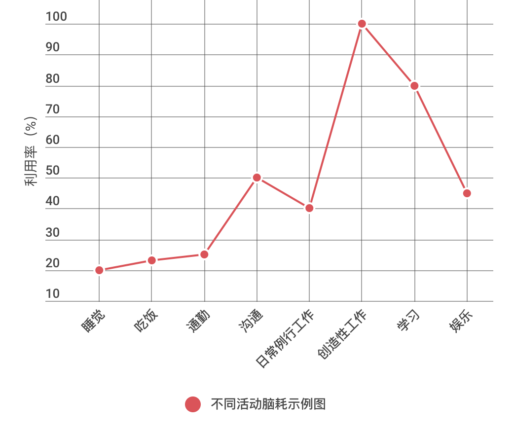</p>
<p>所以，这里就要有选择和取舍。万维钢的一篇文章中有句话是这么说的：</p>
<blockquote>
<p>注意力是一种有限的资源，你要是不擅长不集中注意力，你就不擅长集中注意力。</p>
</blockquote>
<p>你得挑选那些真正值得做和学的东西去让大脑满负荷运转，但凡投入决心去做的事情，就需要百分百投入。这就是专注于少而精的东西，深入了解这些东西，进入到更深的层次上。深可以无止境，那到底多深才合适？我的答案是：<strong>让你的内心对取得的效果感受到满意的深度层次上</strong>。它的反面是：但凡心存疑虑，不是那么确定要全力投入的事情，干脆就不做了。</p>
<p>以前写一篇文章，我会给一个合理的时限要求。比如高考作文 800 字，要在 50 ～ 60 分钟内完成。而我每篇文章一般在 2000 ～ 3000 字，我给的时限也就在 3 小时左右。因为安排了这 3 小时，其他时间按计划还要干别的，但这个安排一直让我很焦虑，因为经常性写超时。</p>
<p>现在明白了，写作本来是一件创造性的活动，一件 “脑耗率” 100% 的活动，需要百分百的投入，最终效果远重于时限。即便我在 2 小时写完了，但效果能达到让我内心取得满意的深度层次么？（题外话，每篇专栏文章的写作和反复修改，平均要 6 ～ 10 小时。）</p>
<p>做得多和做得好的感觉很不一样。就像拳击，多，好似不停挥拳，很快就精疲力竭；好，则是看准目标，抓住机会全力出击，一击中的。</p>
<p>最后，总结下在信息爆炸的时代，我们该如何有效处理、吸收和消化信息：</p>
<ul>
<li>信息过载是现实；</li>
<li>疲于奔命是陷阱；</li>
<li>心智模型是方法；</li>
<li>一击中的是策略。</li>
</ul>
<p>那关于信息处理的有效方法和模型，你目前采用的是怎样的好办法呢？欢迎留言分享，我们相互学习下。</p>
<h1>22 领域：知识与体系</h1>
<p>今年年初，我学习了梁宁的《产品思维》课，其中有一篇叫《点线面体的战略选择》，我觉得特别有感触。虽然是讲产品，但假如把个人的成长当成产品演进一样来发展，会有一种异曲同工、殊途同归之感。</p>
<p>在我工作的经历中就曾碰到过这么一个人，他一开始做了几年开发，从前端到后端，后来又转做测试，接触的“点”倒是不少，但却没能连接起来形成自己的体系，那他个人最大的价值就局限在最后所在的“点”上了。</p>
<p>其实个人的成长有很多方面，但对于程序员的成长最重要的就是知识体系的构建，这其实就是一个 “点线面体” 的演进过程。</p>
<p>下面我会结合自己的成长路线来梳理下这个体系的建立过程。</p>
<h2>点</h2>
<p>进入任何一个知识领域，都是从一个点开始的。</p>
<p>如下图，是我从大学进入软件开发领域所接触的一系列的点，我将其从左到右按时间顺序排列。红色的部分是目前还属于我 “掌握” 与 “了解” 的领域，其他灰色的部分则是要么被时代淘汰了，要么已经被我放弃了维持与更新。</p>
<p>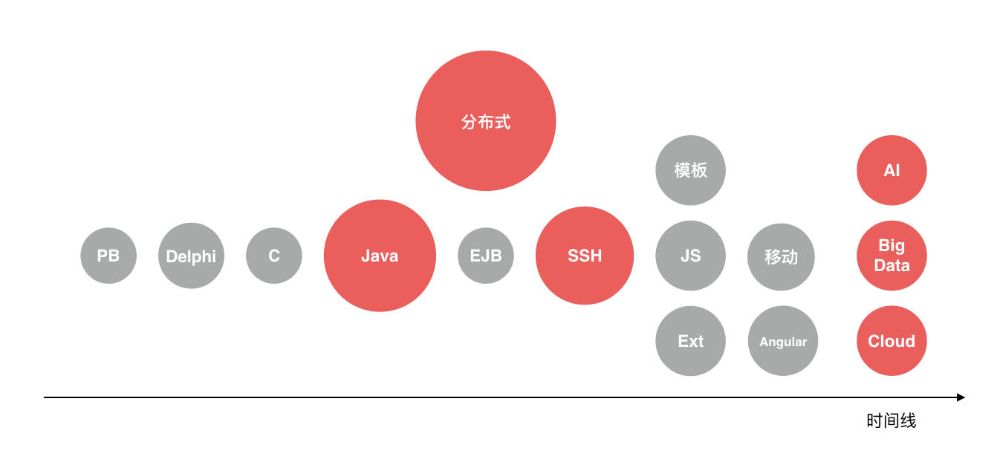</p>
<p>我的成长时间线上相关技术领域知识点</p>
<p>我入行的年代，流行的是 C/S 架构的软件开发模型。当时客户端开发三剑客是 PB（PowerBuilder）、VB（Visual Basic）和 Delphi，而我只是顺势选了其中的一两个点，然后开启了程序员生涯。</p>
<p>没过两年 B/S 架构开始流行，并逐步取代了 C/S 架构。于我，只是因为研究生阶段学校开了一门面向对象语言课，老师用 Java 做教学语言，所以我后来就又顺势成了一名 Java 程序员。而又只是因为 Java 的生命力特别旺盛，所以也就延续至今。</p>
<p>早些年，前后端还没太分离时，因为项目需要，所以我又去涉猎了一些前端 JS 开发；之后移动互联网崛起，又去学习了些移动开发的东西；再之后就是 ABC 的时代（其中 A 是 AI ，人工智能；B 是 Big Data，大数据；C 是 Cloud，云计算），就又被潮流裹挟去追逐新的技术浪潮。</p>
<p>如今回过头再看，每一个技术点，似乎都是自己选择的，但又感觉只是一种被趋势推动的一次次无意“捡起”。有些点之间有先后的承接关系，而更多点都慢慢变成了孤点，从这片技术的星空中暗淡了下去。</p>
<p>在你入行后，我想你可能也会因为时代、公司或项目的原因，有很大的随机性去接触很多不同的技术点。但如果你总是这样被客观的原因驱动去随机点亮不同的 “点”，那么你终究会感到有点疲于奔命，永远追不上技术的浪潮。</p>
<h2>线</h2>
<p>当形成的点足够多了后，一部分点开始形成线，而另一些点则在技术趋势的演进中被自然淘汰或自己主动战略放弃。</p>
<p>那你到底该如何把这些零散的点串成线，形成自己的体系与方向呢？如下图，是我的一个成长 “T 线图”，它串联了如今我沉淀下来的和一些新发展的 “点”。</p>
<p>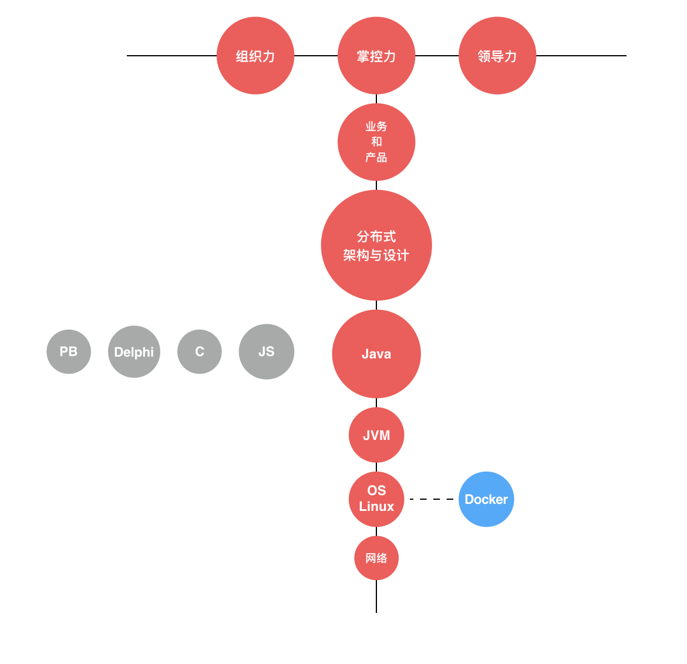</p>
<p>我个人的成长发展 “T 线图”</p>
<p>我从成为了一名 Java 程序员开始，在这条 “T 线” 上，先向下走，专注于解决业务需求碰到的技术问题。先自然地要向下至少走一层，接触 Java 的运行平台 JVM。而又因为早期做了几年电信项目，要和很多网络设备（包括各类网元和交换机等）通信，接触网络协议编程；后来又做了即时消息（IM）领域的工作，网络这一块就又继续增强了。而网络编程依赖于操作系统提供的 I/O 模型和 API，自然绕不过 OS 这一块。</p>
<p>在 Java 领域走了多年以后，以前涉猎的技术点就逐步暗淡了。而再从程序员到架构师，就开始往上走，进入更纯粹的 “架构与设计” 领域，在更宽的范围和更高的维度评估技术方案，做出技术决策与权衡，设定技术演进路线。</p>
<p>但是，再好的技术方案，再完美的架构，如果没有承载更有意义的业务与产品形态，它们的价值和作用就体现不了。所以不可避免，再往上走时就会去了解并评估 “业务与产品”，关注目标的价值、路径的有效性与合理性。</p>
<p>在整个纵向的技术线上，最终汇总到顶点，会形成一种新的能力，也就是我对这条纵向线的 “掌控力”。到了这个 “点” 后，在这里可以横向发展，如图中，也就有了新的能力域：领导力和组织力。</p>
<p>一个个点，构成了基本的价值点，这些点串起来，就形成了更大的价值输出链条。在这条路上，你也会有一条属于自己的 “T 线”，当这条线成型后，你的价值也将变得更大。</p>
<h2>面</h2>
<p>线的交织，将形成面。</p>
<p>当我试着把我最近六年多在电商客服和即时通讯领域的工作画出来后，它就织就了下面（如图所示）的这个“面”。</p>
<p>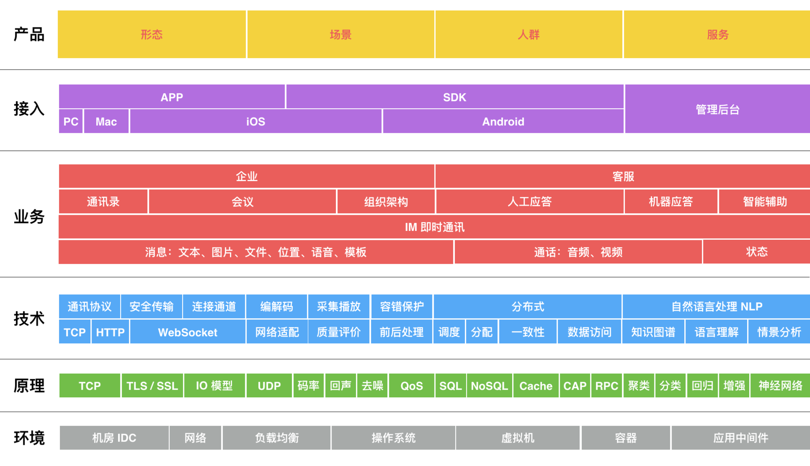</p>
<p>我近些年工作面的分层图</p>
<p>我从最早的聚焦于某个业务点和技术栈，逐步延伸扩展到整个面。因为 IM 这个产品本身具备很深的技术栈，而且也有足够多元化的应用场景，这样整个面就可以铺得特别宽广。这也是为什么我已经在这个面上耕耘了六年多之久。</p>
<p>但事实上，我并不掌握这个面上的每个点，整个团队才会分布工作在整个面上，每个个体贡献者也只会具体工作在这个面上的某个或某些点。但我们需要去认清整个面的价值体系，这样才能更好地选择和切入工作的点，创造更大的价值。</p>
<p>而有时候，我也了解到有些程序员的一些说法是这样的：在相对传统的行业，做偏业务的开发，技术栈相对固定且老化，难度和深度都不高，看不到发展方向，期望找到突破口。若你也出现这样的情况，那就说明你从事的业务开发，其单个技术点的价值上限较低，而选择更新、更流行的技术，你就是期望提升单个技术点的价值，但单个技术点的价值是相对有限的。</p>
<p>反过来，如果很难跳脱出自身环境的局限，那么也可以不局限于技术，去考虑这些传统的业务价值，从技术到业务，再上升到用户的接入触达，考虑产品的场景、形态和人群是如何去为这些用户提供的服务、产生的价值。</p>
<p>当你对整个业务面上的价值点掌握的更多，能抓住和把握核心的价值链条，去为更广、更大的价值负责，那么你就能克服自己的成长发展困境，找到了另外一条出路了。</p>
<p>同时，你也为自己织就了一张更大的领域之网。在整个面形成了一个领域，在这个面上你所能掌控的每条线就是你的体系。在这条线的 “点” 上，你解决具体问题，是做解答题；但在整个面上你选择 “线”，是做选择题。</p>
<h2>体</h2>
<p>体是经济体或其中的单元。</p>
<p>你的 “面” 附着在什么 “体” 上决定了它的价值上限。如果 “体” 在高速增长并形成趋势，你就可能获得更快的发展。</p>
<p>从电力时代到信息时代再到智能时代，互联网、电商、移动互联网，这些都是 “体” 的变化。今天互联网行业的软件工程师，他们面临的挑战和难度不见得比传统的机械或电力工程师更大，只不过他们所从事的 “点” 所属的 “面”，附着于一个快速崛起的 “体” 上，获得了更大的加速度。</p>
<p>“体” 的崛起，是时代的机遇。</p>
<p>总结来说，就是：<strong>在领域知识体系中，“点” 是利器，“线” 是路径，“面” 是地图；而就我们个体而言，“点” 是孤立知识点的学习掌握，而 “线” 是对这些点的连接，“面” 则构成了完整的知识体系网</strong>。</p>
<p>以上就是我建立知识体系并形成自己领域的思考。而在每个不同的阶段，你都可以先做到心中有图，再来画“线”，然后再在每个“点”上去努力。</p>
<h1>23 转化：能力与输出</h1>
<p>个人，建立好了知识体系，各方面都明了了，但有时做起事来却还会感觉发挥不出来；团队，牛人众多，但感觉做出的事情效果却很一般。</p>
<p>这类问题的症结，多就出在从体系积累到输出转化的环节，它涉及两个实体的转化问题：</p>
<ul>
<li>个体</li>
<li>团队</li>
</ul>
<h2>个体</h2>
<p>关于个体的能力转化，我想先讲一个发生在我自己身上的故事，通过类比想必你就能很快明白这个道理。</p>
<p>前几年有几部华语电影，比如《叶问》《一代宗师》等，都是和一个人、一套功夫有关；而从前年到去年的一段时间，在我身上正好就发生了这么一件计划外的事情，我去接触学习了一下咏春。练拳这个事，一开始就不在我计划内，甚至也不算是兴趣内的事，但它就这么发生了，然后还意外地让我有了一些收获。</p>
<p>在刚开始时，我的确对咏春有很多疑惑，但好在并不排斥。一开始老师并没有教什么招式套路，而是从架构开始。既然是功夫，当然这个 “架构” 就是指身体架构了。为什么不讲招式，而是讲架构？这也是我最初的疑惑。随后，老师用一个生动的示例说明了缘由。</p>
<p>老师先拿上一个挡在胸前上的沙包，让我们挥拳全力击打，他来挡住。然后我们就全力挥拳了，阵势倒是挺大，打在沙包上也砰砰脆响，但老师纹丝不动。反过来，该我拿沙包挡在胸前了，老师出拳，拳头接触沙包后发出沉闷的响声，我用尽全身力气也站不住，连连后退，直到碰到墙边才止住退势，并且胸口还隐隐作痛。</p>
<p>好吧，以上描写，有点武侠小说的感觉了，但实际并无夸张。以后每次老师演示沙包架构教学，各位同学都连连谦让起来。这里面的原理后来听老师讲解才算明了：我们平常出拳基本都是用的臂力，力量不会太大；而老师出拳用的是身体之力，借助身体架构发全身之力。</p>
<p>力，从脚底触地而起，由腿上腰，扭腰推至背肩，再甩肩推臂，经腕至拳，最后触及被击打之物。在这个过程中，全身都会随这股力量而动，借助全身体重的推动力，会大幅度地放大这股力量。这股力量甚至超过了他的体重，试想一个成年人那么重的力量推向你，你如何能接得住？</p>
<p>后来，我了解到，经过职业训练的拳击手，正常挥出重拳的力量可以是体重的好几倍。而我们普通人挥拳只用手臂发力，只有体重的几分之一。因为我们没有经过身体架构的训练，所以身体架构各自配合脱节，力量便耗散在了过程之中，而发不出全身之力。</p>
<p>身体是一个系统，身体架构是一个体系，这个体系的输出能力便是出拳的力量。</p>
<p>要放大这个力量，就需要不断反复地去协调应用这个体系，并不断得到反馈修正，最后形成肌肉记忆的习惯，就像老师一挥拳就能爆发全身之力一样。而我练习了几个月，估计也没到半身之力，这个过程和所有技能的刻意练习过程一样，快不了。</p>
<p>同理，我们从学会一个知识，到能够熟练应用其去输出能力，大概会经历如下过程：</p>
<p>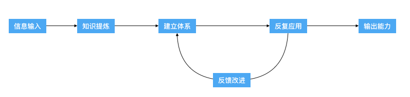</p>
<p>所以，对于个体而言，刚建立起一个初步的知识体系，到能真正充分发挥出这个体系的力量，才仅仅是刚开始。</p>
<h2>团队</h2>
<p>如果说个体的能力输出像出拳，那么团队的输出就像战争了。</p>
<p>在近年来大热的美剧《权力的游戏》中，一开始有两个家族，北方的狼家族和南方的狮家族，他们爆发了一场战争。战争之初，狼家族在战场上连战连胜，甚至一度俘虏了狮家族的重要人物，但后来突然急转直下，竟被人在战场之外全灭。</p>
<p>而战争其实是发生在两个体系（这里的体系是国家、家族和部落）之间的能力较量。每一个战场、每一场战役仅仅是体系中一些“点”的较量，虽然北境的狼家族一开始在战场上连连获胜，但他们这个内部体系的薄弱环节和问题远多于狮家族这个体系，因而在被人抓住关键节点后，一下就瓦解了。</p>
<p>团队这个体系比较复杂，即使个体的点很强，但仅仅是点的强化，也有可能不断赢了战役，但最后却输了整个战争。</p>
<p>去年也有一本大热的翻译书籍《原则》，该书的作者是雷·达里奥，他是世界最大对冲基金——桥水联合基金——的创始人。这本书描述了他的一个思想和实践，就是把公司当作 “机器” （原文是 Machine）来管理运转。</p>
<p>所以，在他看来管理者就像是工程师，而工程师维护机器运转的工作状态我们都能想象到，或通过机器的运行仪表盘监控机器的运转状态，或通过指标优化机器的运行效率。而达里奥的 “机器” 就是他建立的管理公司的体系。</p>
<p>曾经，我们团队有个高级测试工程师，在他晋升测试架构师级别的述职时，提到他的一项工作就是搭建测试体系来帮助团队改善测试工作的效率和效果。在进行阐述时，他完整地描述了这个体系 “机器” 的各个零部件组成，他制造的很多工具和系统，却缺失了关于体系的一些最重要的方面：这个体系是如何运转的？它提供了哪些系统和仪表盘监控指标来支撑和反映其运转状态？为什么这个体系能在团队里运转？</p>
<p>以上三个问题，就反映了 “机器” 体系的三个核心点：</p>
<ul>
<li>流程规则</li>
<li>工具系统</li>
<li>规范共识</li>
</ul>
<p>没有流程规则，“机器” 体系就不知该如何运转；缺乏工具系统支撑，就没法监视和控制这个体系的运转效率与效果；而如果未能在团队形成共识并达成规范，“机器” 体系就不可能“和谐”运转起来。所以，流程规则，建立其运行轨道；工具系统，支撑其高效运行；规范共识，形成了协调合奏。</p>
<p>团队能力输出就是这样一个 “机器” 体系运行的过程。那么团队的强弱就由两方面决定，一是团队中所有个体形成的体系力量之和，二是由流程规则、工具系统和规范共识共同决定的转化效率。</p>
<h2>转化</h2>
<p>从个体到团队，都是通过搭建体系来积蓄力量，再通过体系的运转来输出能力。</p>
<p>这里的共同思维方式是：体系化、工具化。这是一种标准的工程师思维模式，巧妙的是它依然可以用在非工程的领域。体系，从工程维度看就像生产流水线，而体系的运转就是开动了生产流水线。搭建并调校出一条高转化输出能力的体系生产线，是真正具有核心竞争力和护城河的事情。</p>
<p>前阵子，看到新闻说台积电计划投资 250 亿美元研发建设 5 纳米制造生产线，这个投资额很好地说明了搭建一个真正具有护城河级别竞争力的生产体系所需要的成本。而台积电正是靠着这样具有核心竞争力的生产体系，成为全球半导体生产制造的霸主，制造了全球 60% 的芯片。</p>
<p>所以我们也要像台积电学习，好好打磨出适合自己的体系，使其真正成为自己的核心竞争力。</p>
<p>要想产生更大的成果，取得更大的成功，我们需要找到放大个体或团队能力的杠杆支点。曾经，也许我们也做出过好的产品，产生过好的结果，可能是我们能力不错，但也有可能只是运气不错。也就是说，好产品或好结果并不能成为支点，不断产出好结果或好产品的 “体系流水线” 才是。</p>
<p>我们需要做的就是不断打磨这条流水线，提升转化输出好产品或好结果的效率与良品率。</p>
<p>个体和团队的强弱，一方面取决于我们在体系中积蓄的力量的总量，另一方面在于体系运作的转化输出率。体系决定了力量的总量，而转化决定了拳拳到肉的痛感。</p>
<p>每个人做事都存在转化输出率，读完本文，你对自己或所在团队的转化输出率的提升是否有了大概的方向？</p>
<h1>24 并行：工作与学习</h1>
<p>在工作中，你应该碰到过一些这样的情况，有同事工作的时间不短，经常加班加点，工作也很勤勉，但每每晋升时却碰壁了。你可能还会为其打抱不平过。难道这真的只是不公平或者运气不佳吗？</p>
<p>其实这种情况，隐藏在背后更深层次的原因是：工作陷入了循环与重复，从此停止了成长。</p>
<p>那么，你该如何在工作的同时，保持学习，并持续成长与进阶呢？我想，可以先从分析“程序员的工作本质是什么”开始着手。</p>
<h2>工作</h2>
<p>程序员的主要工作是：编程，产出代码，完成需求，交付程序系统。</p>
<p>程序员按其工作技能和经验，大体又分为三个阶段：初级、中级和高级。这三个级别的程序员的主要工作都是编程与产出代码，产出代码的数量也许相差不大，但产出的代码属性就可能有明显差别。</p>
<p>什么是代码属性？它包括资产与负债两类。由大量初级程序员产出的代码并以此构建的软件系统，如果最终能完成交付，那么很可能资产和负债性基本持平。这是很多早期创业公司产出代码的属性特征，因为创业公司早期缺乏资金和足够的知名度，难以吸引到又多又好的中、高级程序员加入。</p>
<p>这样的代码构建的系统多属于勉强满足业务需要，虽看不出明显的 Bug，但一遇到特殊情况就容易宕机。整个系统虽然勉强能支撑公司运营，但其中欠下了大量的技术债；先活下来，未来再来慢慢还。</p>
<p>若是完成了一个债务比资产还大的系统，会是个什么样的情况呢？那这就是一个还存在明显 Bug 的系统，是基本无法完成交付和上线的。</p>
<p>因此，现在互联网行业创业团队的主流做法，都是先完成一个资产和负债刚好过平衡点的系统，发布上线，接受反馈，再快速迭代，最后在迭代中不断地提升其资产性，降低其负债性。</p>
<p>这样的方式在行业里有一个实践的榜样：Facebook。它还有一句著名的标语：</p>
<blockquote>
<p>Done is better than perfect.</p>
<p>比完美更重要的是先完成。</p>
</blockquote>
<p>但如果你仅停留于此，那工作就永远在完成，并不会走向完美。而且，工作的内容还会不断地重复，让你从此陷入成长的停滞区。</p>
<p>从初、中级走向高级程序员，就不仅仅是交付代码，完成工作，还要有后续的更高要求。如：达成品质、优化效率。而在不断晋级的路上，跨越的门槛就在于此，很多人比较容易被卡在不断地在完成工作，但却没有去反思、沉淀、迭代并改进，导致一直停留在了不断重复的怪圈之中。</p>
<p>程序员，工作以产出代码为主，从初级到高级，代码的负债属性逐步降低，资产属性不断提升，最终成为高品质的个人贡献者。而从完成到追求品质和完美的路上，不仅仅是靠工作实践的经验积累，还需要有意识地持续学习。</p>
<h2>学习</h2>
<p>持续学习，是让你突破不断循环怪圈的不二法门。</p>
<p>在工作中，我一直有观察到一个现象，很多人因为离开学校后，工作任务多，压力大，从此就停止了系统地学习。在《浪潮之巅》一书中，吴军写道：</p>
<blockquote>
<p>国内: 小时候努力，到大学后就不努力了。</p>
<p>国外: 到大学后才开始努力，很快就超过国内学生。</p>
</blockquote>
<p>吴军这对比国内外的教育，也反映了我们教育中作为学生的一种心态，觉得毕业了，离开学校后就不需要多努力学习了。但目前程序员这个职业所面临的技术发展和更迭远超其他行业，你即便只是为了能够保质保量地完成任务，也需要保持持续学习的节奏。</p>
<p>现如今是个信息爆炸与知识过载时代，所以学习必须要有选择性。</p>
<p>我读大学那阵儿，学程序期间喜欢电脑，就爱帮同学人肉组装（DIY）个机什么的，而且还反复折腾安装操作系统。那时的 Windows 系统的特点之一就是越用越慢，一年半载就需要重装一次，所以可没少反复和折腾，分散了不少我的时间和精力，原本以为能主动学到新东西，但结果发现其实都是被动的。所以，学习还是要聚焦和主动选择，毕竟你的精力和时间都是有限的。</p>
<p>而有选择性的学习就需要找出真正与你近期规划有关的学习路径。</p>
<p>假如你工作入职后公司使用 Java 为主要开发语言，而大学里你一直学习使用 C 或 C++ 编程练习，这里再假设你对计算机相关的基础性学科和知识掌握良好，比如：操作系统、数据库、网络、组成原理、编译原理、算法基础、数据结构等等。那么为了更好地完成工作任务，就需要你先主动学习 Java 编程语言、开发框架等编程技术相关的知识。</p>
<p>而对于学习语言本身我觉得最高效的方法就是看一本该领域的经典入门书。比如，对于 Java 就是《Java 核心技术》或《Java 编程思想》，这是我称之为<strong>第一维度的书，聚焦于一个技术领域并讲得透彻清晰</strong>。</p>
<p>在有了该语言的一些实际编程和工程经验后，就可以看一些该领域<strong>第二维度的书</strong>，比如：《Effective Java》《UNIX 编程艺术》等，这些是聚焦于特定领域经验总结型的书，这类书最有价值的地方是其<strong>聚焦于领域的思想和思路</strong>。</p>
<p>如果过早地看这类书反而没什么帮助，甚至还会可能造成误解与困扰。例如，我看豆瓣上关于《UNIX 编程艺术》的书评，有这么一条：“很多例子和概念已经成了古董，当历史书看，无所获。”这显然就是过早接触了第二维度的书，却预期得到第一维度的收获，自然无所获了。</p>
<p>而另外一些技能，像 Java 开发工作需要大量使用的开源框架又该如何学习？张铁蕾曾写过一篇《技术的正宗与野路子》，其中介绍了如何用真正 “正宗” 的方式去学习并快速掌握这些层出不穷的开源新框架和技术。</p>
<p>这里就借用原文里的一张图（重新按统一风格绘制了下），每一项开源框架或技术相关的学习资料可以组织成下面这张金字塔形的结构图。</p>
<p></p>
<p>技术学习资料的层次结构示例图</p>
<p>Tutorial（指南） 和 API Reference（应用编程接口参考） 层次的信息资料能帮助你快速上手开发，而 Spec（技术规范）和 Code（源代码）会帮助你深刻地理解这门技术。而其他相关的技术书籍和文章其实是作为一种补充阅读，好的技术书籍和文章应该有官方资料中未涵盖的特定经验或实践才算值得一读。</p>
<p>张铁蕾在文中如是说：</p>
<blockquote>
<p>每当我们接触一项新技术的时候，都要把手头的资料按照类似这样的一个金字塔结构进行分类。如果我们阅读了一些技术博客和技术书籍，那么也要清楚地知道它们涉及到的是金字塔中的哪些部分。</p>
</blockquote>
<p>我深以为然，关于技术学习我们不能简单地蜻蜓点水、复制粘贴、拿来主义，应是去建立你的知识 “金字塔”，形成体系结构，而每次的学习实践都是在不断完善你的 “金字塔”。至于更多技术性学习的细节，若你感兴趣的话，也可以去看看那篇文章。</p>
<h2>路径</h2>
<p>保持学习，不断成长，工作也许还在重复，但成长却在迭代上升，然后才会有机会面临更多可选择的路径。</p>
<p>程序员在攀登职场阶梯的道路上，走过了高级，后面还会有好些分叉路线。比如，转到脱离技术的纯管理岗或者技术管理岗。技术主管或架构师某种意义上都属于技术管理岗，不懂技术是做不了这两个角色的；或者继续沿着深度领域走，成为细分领域专家。</p>
<p>这后面哪条路适合你呢？你是随大流，还是自己认真思考和决定？这是做选择题。如果一生要工作三十多年，前十年你多在做解答题，解决一个又一个问题。那么在大约走过这三分之一后，你就会开始做越来越多的选择题。为什么呢？因为一开始可能没有太多可供你选择的机会。而后续做好选择题，则需要大量学习，还需要不断地试错。</p>
<p>面对怎么选路的问题，我近些年学习的收获是这样的：<strong>选择走最适合实现个人价值的路</strong>。这就是我的基础选择价值观。程序员的个人价值该怎么实现？该如何最大化？程序员作为个人贡献者，到了一定的熟练阶段，产出基本就稳定了，而技能的成长却呈现对数曲线的增长特征。</p>
<p>任何一个你所尝试提升的事情都有一个增长曲线，这个曲线有两种形态：</p>
<ul>
<li>对数增长形态：这种类型在初期增长很快，但随后进展就越发困难；</li>
<li>指数增长形态：这种类型在初期增长很慢，但存在积累的复利效应。</li>
</ul>
<p>增长要么是对数形态，要么是指数形态，很少有线性的。</p>
<p>对数增长也意味着更容易退步，因为起步阶段是如此陡峭（见对数曲线示例图）。比如，学习一门新的技能，不持续去应用，很快就忘了，退回原点。那你应该如何应对这种“窘况”呢？我建议你在起初的高增长阶段，学习和工作的关注点需放在养成长期习惯上，因为虽然开始增长很快，但需要小心一旦停止努力它可能会向下滑落，所以一定要慎之又慎，坚持形成自己的习惯和节奏。</p>
<p>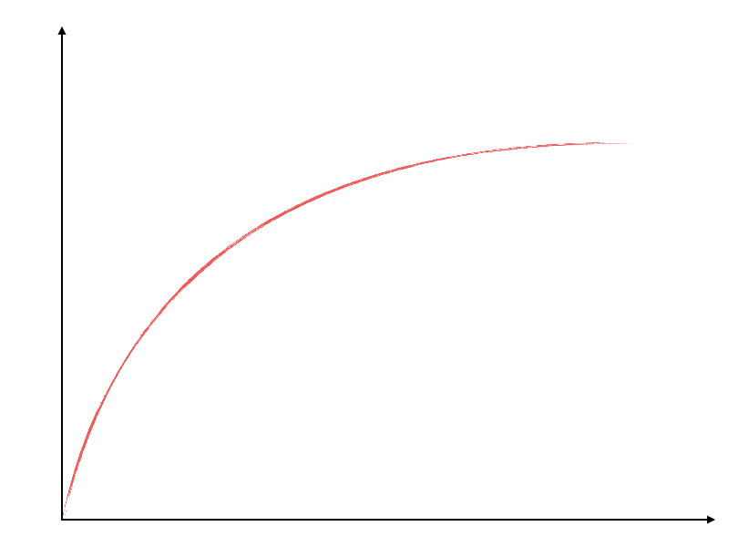</p>
<p>对数增长曲线示例</p>
<p>而指数增长则意味着存在一个拐点的 “突变” 时刻。很多人期望线性增长，但实际却是按指数增长的，这让许多人在拐点发生前就放弃了。比如，写作，在呈指数增长的领域内，到处都是半途而废者。所以，做本质是指数增长曲线的事情时，柔韧且持久的思维模式是关键。</p>
<p>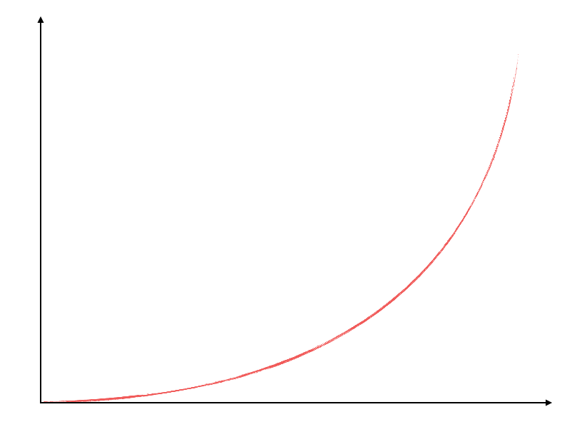</p>
<p>指数增长曲线示例</p>
<p>工作多年后，技能的增长就又进入了对数的平缓区域，通常其回报呈现递减趋势。也就是说你在其上花的功夫越来越多，但你感到越来越难产生洞察以获得新的收益。其难处在于找到新的突破点，重新回到曲线陡峭上升的部分。</p>
<p>这就是所谓成长的瓶颈，你要学会应用指数增长的方法，找到价值贡献的放大器。作为程序员，你有可能很幸运地编写服务于数千万或数亿人的软件服务，这是产品自带的价值放大器。这样同是写一份代码，你的价值就是要比别人大很多。而转管理者或架构师，这些角色无非都是自带杠杆因子的，所以也有价值放大的作用。但个人能否适应得了这样的角色转换，又是另一回事了。</p>
<p>拉姆·查兰有本书叫《领导梯队》，书里把人才潜能分成三种：<strong>熟练潜能、成长潜能和转型潜能</strong>。原书对这三点做了详细的特征描述，我简单提炼下主要特点：</p>
<ul>
<li>熟练潜能：关注当前专业领域且十分熟练，但没有显示出在开发新能力上的努力，竭力维持现有技能。</li>
<li>成长潜能：按需开发新能力，显示出高于当前层级要求的其他技能，如：专业、管理、领导。</li>
<li>转型潜能：持续有规律地开发新能力，追求跨层级的挑战和机会，展现雄心壮志。</li>
</ul>
<p>人力资源管理中的高潜人才盘点，基本就来自这套模型，主要就是识别出这三类潜能人才。“熟练潜能” 已是我们这行对学习的最低要求，在程序员这个技术日新月异的行业里，维持现有技能确实已经让不少人感觉很竭力了。</p>
<p>那你拥有怎样的潜能呢？它不一定都是天赋，可能也是选择。</p>
<p>成长这条路从来都不是笔直的，你的“奔跑速度”也不会一直是匀速的。在每一个拐弯处，都应减速，思考，学习，然后再加速，进步。</p>
<p>到此我总结下今天的分享：</p>
<p>程序员的工作形式是编程产出代码，本质是完成需求，交付系统；但在工作中容易陷入不断完成的循环怪圈，要打破它，就需要你持续学习并有意识地关注交付代码的品质和属性，一方面提升了交付质量，另一方面也获得了个人成长。</p>
<p>而学习的路在时间上是永远持续的，在空间上也是有路径的；有效的学习需要你关注学习曲线的变化，遵循有体系的技术学习框架，匹配适合当前阶段的学习资源。</p>
<p>最后，关于工作和学习，有人总感觉有些冲突，忙起来就没时间学了。那你是怎么看待这件事呢？欢迎留言分享你的观点，我们一起探讨。</p>
<h1>25 时间：塑造基石习惯（上）——感知与测量</h1>
<p>至此，咱们专栏已用 4 篇文章分享了我关于“精进思维”这个主题的理解与思考，期待以后你能得心应手并游刃有余地持续进阶。</p>
<p>接下来，咱们专栏又会进入一个新的主题：<strong>习惯</strong>。习惯的重要性想必你也很了然于胸了，习惯的养成，是让成长无意识自然发生的关键。然而习惯对于成长的具体作用是怎样的呢？</p>
<p>想必你也知道，养成好的习惯能帮助我们更快地成长，而在所有的好习惯中，关于时间的习惯是其中的基础，我称之为 “基石” 习惯。如果你的时间习惯不好，那你做其他事情的效率往往也就不高。</p>
<p>那么，该如何塑造好时间这块 “基石”呢？我觉得在有效地应用之前，先需要精确地感知与测量。</p>
<h2>感知时间</h2>
<p>有时，我们觉得时间过得很慢，慢如从周一到周五；有时，又会觉得时间飞逝，快到十年间一恍惚就过去了。</p>
<p>当我站在十年后的这端看十年前的那一端，会惊讶地感叹：啊，时间过得真快！再把时间往前推一点，十多年前，将从学校毕业，走上社会工作岗位，我当时有想过十年后会如何吗？有过怎样的畅想呢？我依稀记得应该是畅想过的，才刚毕业怎么可能不畅想一下即将走出校园，怀揣理想，人生豪迈，激情万丈的未来之路呢？</p>
<p>对，我确实畅想过，可遗憾的是我只能模糊记得有过畅想这回事，而到底畅想过什么具体的内容，却大多记不太清了。唯一还有印象的是，毕业前夕的一个凌晨，月挂高空，星光惆怅，一屋子的室友在校园的花台前，喝着啤酒，畅谈明日的分离，未来将会如何如何，十年后我们还会相约在此见面，再分享一下彼此的人生。</p>
<p>十年过后，当时也有同学记起这个约定，就号召大家再回校园共聚一场。而我却未能赴约，当时正好孩子出生尚在医院，现实的粘连总会拖住理想的浪漫。江湖侠客分别时总喜欢说句：十年之后我们再会于此，就此别过，后会有期。可实际，很多别过都是后会无期的，我们从来不是侠客只是凡人，谁又能轻易承诺得了十年之约。</p>
<p>我还能记起这个看似简单的十年之约，却已然记不起当初对未来十年之路作过何样的畅想与规划。苦苦回忆之后，只觉得当初作为一名软件工程专业的毕业生是清晰地知道最近的将来是会成为一名程序员的，而对于程序员的未来我当初应该想的就是架构师吧。</p>
<p>也许当时我觉得架构师就是一个程序员的顶点，是我能看得到的顶点。而实际情况是这个架构师的称呼也只是当时我从几本翻译的国外技术书籍中的人物介绍中看来的，到我实际工作后却发现前三、四年所在的两个公司都没有架构师这个职位。理论上来说当时我应该感到迷茫，实际却没有，可能因为觉着还太遥远，所以我就不管不顾地走在当下的路上，活在当下。</p>
<p>当你对生活有某种期待与畅想，却又觉得明天实现不了，三个月也实现不了，一年后大概还是实现不了，然后可能你就会不由自主地想大概十年后也许就能实现了。你会以为十年很长，把现在的期望与畅想交托给十年后的未来。</p>
<p>十年也许是一个足够长的时间，长到对个人来说很难去做一个十年的计划，所以我们就这样经常把很多很多的期待放在了十年后，把期待交给了时间。</p>
<p>所以，当我再次回顾彼时彼刻，虽然想不起太具体的当初对十年后期待的内容，但我依然能感受到当初对十年后充满期待的感觉到今天并没有实现。虽然今天我已经是一名架构师了，但这只是我昨日期待中的很小一部分，是我还能记得的具体的一部分。</p>
<p>更大的一部分只剩下一个感觉，我甚至怀疑当初从未仔细地把这部分感觉具象化，所以导致我现在的记忆中只剩下一种感觉。这里再打个比方，若十年时间是一个人，我当初把一个期待的感觉托付给了她，十年后再见时，她依然还了我一个一样的感觉；如今我知道这怪不了她，她并非无所不能，只是我未曾很好地了解她。</p>
<p>“时间如流水，从我们的指缝间悄悄流走；如轻烟，被微风吹散了；如薄雾，被初阳蒸融了”，这些中学语文课本上的关于时间的比喻，突然就从我的脑海中冒出来。时光无形，如流水、轻烟、薄雾，要想精确地感知它可不容易。</p>
<p>从 30 到 40 岁的这十年我已经行程大半，突然就生出一种这十年似乎走得更快了的感觉，怎么一下就过了大半了，而 20 到 30 岁却明明觉得过了好久呀。20 岁之前我们才刚刚经历对中学的告别，此后很多小伙伴可能就将永远只活在我们的记忆中了。但没过几年我们又将经历另一次告别，对校园的告别。曾经的青春呼啸，江河奔流，未曾来得及说一声道别已志在四方了。</p>
<p>一段又一段的校园恋情开始又结束，也许每一段我们都曾觉得刻骨铭心像延续了一生一般，实际不过匆匆几年。后来终于在职场上找到了最后的归属，走入婚姻的殿堂，安置幸福的蜗居，生下一个让你头疼的要命却又羡慕的要死的小家伙，人生的大事就这样一件接一件地完成了。然后一回首发现站在了 30 岁的门槛边，感慨原来这十年我做了这么多事啊，生出一种 “而立” 的感觉。</p>
<p>迈过三十之后，七年瞬息而过，一回首却想不起什么激动人心的大事了呢？曾经在知乎上看到个问题：“为何人随着年龄的增大觉得时间过得越来越快？”这个问题的几句答案，解答了我多年以来的困惑：</p>
<blockquote>
<p><strong>有共性的回忆趋向粘合在一起，标志性的回忆倾向于鹤立鸡群</strong>。心理学家认为：我们对时间的感知同时和我们的经历有关。如果一件事对于我们来说是 “激动人心” 的，这样的记忆在我们脑海中感觉到的时间会更长。</p>
</blockquote>
<p>确实，从 20 到 30 岁经历的每一件人生大事之于我们都是激动人心且独一无二的，自然在我们的记忆中就 “鹤立鸡群” 了，而三十之后就好像缺少了一些这样的大事。生命的精彩程度在慢慢下降，自然没有那么多激动人心的记忆了。</p>
<p>对时间的感觉就这样，粘连在一起，如轻烟般飘走了。</p>
<h2>测量时间</h2>
<p>正因为我们对时间的感知非常模糊而不精确，若想更有效率地用好时间，就需要更精确地测量它。</p>
<p>有一本书叫《奇特的一生》，主要是关于一位苏联科学家柳比歇夫的故事，他通过自创的 “时间统计法” 在一生内取得了惊人的成就。而我在遇到这本书之前，已经在使用一种类似的方法：<strong>我会记下一年来经历的所有有意义的事件（除去每日的例行工作），我称之为 “时间日志”</strong>。</p>
<p>我按每周来记录，每周里面有每天的事件记录和所花费的时间。这个 “时间日志” 的习惯其实源自我小时候养成的记账习惯，那时钱不多就想知道钱花在哪里去了。现在其实都不怎么记金钱的账了，而是记时间的账。方法类似，把记金额明细改成了记时间明细，借此以追踪我的时间都花在哪里去了。</p>
<p>记金钱的消费明细的一个副作用是容易让人变得 “小气”，所以我也一直担心记时间明细是否也有什么不好的副作用。但实践了好几年下来，发现并没有什么明显的坏处，唯一需要的是额外多付出一点点微小的时间成本，但这个记录与测量时间的实践好处却是明显的：</p>
<blockquote>
<p>它会使你对时间的感觉越来越精确。每个人都感觉 “时间越过越快”，为什么会有这样的感觉？这种感觉会使得我们产生很多不必要的焦虑。而基于 “事件 - 时间日志” 的记录可以调整你对时间的感觉。在估算任何工作时，都更容易确定 “真正现实可行的目标”。</p>
</blockquote>
<p>是的，这就是关于时间的第一个 “基石” 习惯，<strong>在精确地感知与测量时间之后，你才可能更准确地“预知” 未来</strong>。</p>
<p>站在当下这端实际是很难看清未来的另一端的，因为存在太多的可能情况。在一部叫《彗星来的那一夜》的电影中假设了这种场景，一个人有很多种平行分支的存在，时间经过的部分形成了稳定的唯一一个版本。</p>
<p>也许，过去的十年你也像我一样，曾站在起点却看不清十年后的终点。而现今，我总会想象站在每一个未来可能的终点去审视当前的自己、当下的决策与行动，就会得到一个完全不一样的理解，从此开启完全不一样的平行分支。</p>
<p><strong>过去的你也许不曾是时间的旧爱，但未来的你可以成为时间的新欢。</strong></p>
<h1>26 时间：塑造基石习惯（下）——切割与构建</h1>
<p>上篇，我讲述了关于建立时间习惯的第一步：<strong>感知与测量</strong>；之所以需要先感知与测量，就是为了更好地了解你的时间都花在哪里去了。</p>
<p>下一步，<strong>为了更有效地利用好你每天有限的时间，就需要你重新审视并调整你的时间切割与构建方式</strong>。</p>
<h2>切割时间</h2>
<p>时间无形，逝去匆匆，如流水、轻烟、薄雾，类似这样的比喻把时间看成无形的东西，不容易抓住和把握。但这样的比喻把时间看作了物质，物质有三态，所以轻烟也好，流水也罢，总是可以变成固态来使之更容易把握与塑造。</p>
<p>是的，我想说的就是转换一下你看待时间的方式，有人把它看作流水，任其从指间溜走，你却可以把它看作石头，用它去塑造什么。</p>
<p>一般二十岁出头我们离开校园开始工作，十年穿梭而过后，就至三十岁。古人说，“三十而立”，“立”的又是什么？无意间翻到一本旧书《大教堂与集市》，这是一本探讨程序员如何构建软件系统的书，颠覆传统，影响深远。但作为一名工程师、创建者，难道心里没有一座属于自己的大教堂？三十而立，有人也许三十已经立起了属于自己的大教堂，而有人，也许如你我，才刚刚为心中的大教堂破土奠基。</p>
<p>程序员有时爱把自己的工作比作 “搬砖”，有个流行的关于“搬砖”的故事，大概是这样的：</p>
<blockquote>
<p>两个工人正在工地搬石头，一个路人正好走过，就问他们在做什么？</p>
<p>第一个工人说：“我在把石头从这边搬过来，并垒在一起。”</p>
<p>第二个工人说：“我在盖一座华丽的教堂，盖好后，你再来欣赏我的作品。”</p>
</blockquote>
<p>这个故事想说明的是，虽然两个工人都在干同样的 “搬砖” 工作，但第二个工人心中有一座大教堂，也许 “搬砖” 对他的意义就会有所不同。有时想想，过去的每一天、每一刻，难道我们不是都在搬石头吗？只不过，有些石头会被用来修建心中的大教堂，而另一些石头，我们只是拿起来把玩、欣赏。</p>
<p>璀璨剔透的钻石，五彩斑斓的宝石，所有这些美丽、诱人的石头吸引着我们把时间花在去欣赏、迷恋它们，渐渐地就遗忘了，原来曾经我心中还有一座大教堂要建造啊，最后我们无意或有意地避开去搬起那些建造大教堂的沉重石块。</p>
<p>后来当时间过去，我回过头来看，在感叹别人雄奇的大教堂时，发现自己曾经把时间这块原石，切割成了一些看上去漂亮却没用的鹅卵石，更甚者只是切成了一堆土块，最后风化为一堆沙尘。所以，如今我再来看时间时，我更愿把它们切割成用来建造大教堂的石材。</p>
<p>记录测量时间，让我对时间的感知更精确，而面对自然产生的每天一块的“时间原石”，每个清晨就要确定：把它切成什么样？由哪些石块组成？哪些是用来建造大教堂的石材？确定后，将其压在心上，临睡前再记录下今天从心上搬走了哪些石块，以及花了多少时间。这样时间于我就真的变成了一块块石头，比轻烟、流水、薄雾更有形，更易抓住，也没那么容易悄悄地溜走了。</p>
<p>每天搬的石头，不一定都适合建造大教堂，而建造大教堂的时间也可能比我们预期的要长。</p>
<p>位于梵蒂冈的圣彼得大教堂的建造过程前后历时 120 年，由米开朗基罗设计，而文艺复兴时期的大师基本都曾参与其设计。</p>
<p></p>
<p>圣彼得大教堂</p>
<p>而建造历时最长的是德国的科隆大教堂，于公元 1248 年 8 月 15 日动工，从这天起，漫长的修建科隆大教堂的道路开启。600 多年后，到 1880 年 10 月 15 日，这座荣膺当时世界最高建筑物的科隆大教堂举行了盛大的竣工典礼，成为建筑史上最杰出的成就之一。</p>
<p></p>
<p>科隆大教堂</p>
<p>如今看到这些雄奇、壮观、让人赞叹的大教堂，再感受到建造它们的历史过程，就能真切地感觉到时间是如何被切割成了一块块的石材，构建成了最后的大教堂。</p>
<p>这就是关于时间的第二个 “基石” 习惯：<strong>将时间切割成建造你心中“大教堂”的合适“石材”</strong>。</p>
<h2>构建方式</h2>
<p>切割了时间，得到了合适的“石材”，你还需要确定适当的构建方式。</p>
<p>而适当的构建方式，是指在时间的 “基石” 习惯之上，建立其他的习惯。比如，好些年前开始，我会从每周的时间里切出来一块，专用于写作，慢慢就形成了写作的习惯。这意味着，我从现有的 “时间石材” 中拿出了一部分，用于构建写作的习惯，然而 “时间石材” 的总量是有限的，我必须在其上建立有限数量的习惯，我得做出选择。</p>
<p>每一个习惯的构建成本是不同的，甚至同样的习惯对不同的人来讲，构建成本也是不同的。比如，跑步这个事，对有些爱运动的人来说就是每天跑或每周跑几次的习惯，而于我而言，建立跑步这个习惯，从心理到生理都有更大的消耗。</p>
<p>任何行动的发生，都需要两种努力才有可能：第一种，是行动本身固有需要的努力，如跑步，跑一公里和跑十公里固有需要的努力是不等量的；第二种，指决策是否执行这种行动的努力，决定跑一公里还是跑十公里的决策意志力消耗，我想也不会一样。</p>
<p><strong>构建习惯的目的，以及它们能起作用的原因在于：它能消除行动中第二种努力的决策消耗。</strong></p>
<p>我之所以选择构建写作习惯而不是跑步习惯的原因是，对一个像我这样的程序员而言，写文章和写代码的感觉很接近，它就好像是一种刚好在程序员的能力边界线外不远处的事情。这样，写作行动所需要付出的两种努力，感觉都还在可以应对的范围，属于能力边界附近不远的事情，也是正适合用来扩张能力边界的事，有一种挑战的刺激感，又不至于望而生畏。</p>
<p>电影《功夫熊猫 3》里，师父对阿宝说：</p>
<blockquote>
<p>如果你只做能力范围内的事，就不会成长。</p>
</blockquote>
<p>所以，在时间 “基石” 习惯之上构建的习惯应该是你能力范围之外的行动。如果一项行动通过习惯慢慢变成了能力范围之内的事，那么你以后再去做类似的事，其实就不需要再付出什么决策努力了，也就不再需要习惯来帮忙了。</p>
<p>有时，习惯会让你产生日复一日、年复一年做一件事的感觉，这样日积月累下来消耗了大量的时间，但付出了这么多未必会产生真正的收获。怎么会这样呢？</p>
<p><strong>习惯，它的表象和形式给人的感觉是在重复一件事，但它的内在与核心其实是不断产生交付，持续的交付。</strong></p>
<p>好多万年前，人类的蛮荒时期，还没有进入农业社会，人类是如何生存的？那时的人类，以采集和狩猎为生，每天年轻力壮的男人负责出去狩猎和采集野果，女人则在部落内照料一家老小。这就是进化史上，自然选择让人类养成的共同习惯，并且这个习惯持续了数十万年。</p>
<p>采集与狩猎这个行动习惯的核心就是必须每天产生交付，得有收获，否则一家老小都得饿肚子。而像狩猎这样的活动，就需要高度集中的注意力、熟练的技能运用和瞬间的爆发，它需要狩猎者所有的感官都高度专注在猎物的运动上，并随时调整适应猎物的运动变化。而采集，就需要采集者不断扩大或走出熟悉的边界，因为熟悉的地方可能早就没了果实，而陌生的地界又可能潜藏着未知的危险。</p>
<p>这样的行动习惯，通过数十万年的进化，甚至已经刻画在了我们的基因中。这就是我想说的，<strong>如果你要构建一个习惯，就要运用好基因中本已存在的关于 “采集和狩猎” 的本能：高度专注，跨出边界，持续交付</strong>。</p>
<p>末了，我把上、下两篇的内容一起提炼总结为如下：</p>
<ul>
<li>要形成时间习惯，要通过有意识的感知和测量来发现时间是怎么流失的。</li>
<li>要完成建设你心中 “大教堂”，要通过切割 “时间原石” 来完成 “时间石材” 的准备。</li>
<li>在养成了时间的基石习惯之上，挑选和构建其他习惯来完成 “大教堂” 的持续建设与交付。</li>
</ul>
<p>世界上多一些 “大教堂” 会变得更美好，不是吗？</p>
<h1>27 试试：一种“坏”习惯</h1>
<p>曾经，我碰到一些程序员问我：“我以前是做安卓的，现在想试着学下后端服务开发，你觉得怎样？”我一下子就卡住了，不知该如何回答才好。原因是：学习本是个好事，但前面加个 “试着” 似乎感觉就不太好了。</p>
<h2>好的出发点</h2>
<p>“试一试” 的初衷本来就该是好的，它表达了一种好奇心，以及尝试走出舒适区的勇气。</p>
<p>程序员这个职业，会带来一些职业习惯。比如，可能会经常性地去尝试一些新东西，然后看看它是否如预期般那样被应用或实现。</p>
<p>这里，我就拿程序员“调试程序”这项日常工作来举例。调试，就是这样一种需要不断去试的过程。</p>
<p>还记得我在前面《炫技与克制》一文中讲了我早年刚开始工作时的那个小故事吗？那时我带着炫技的心态应用了刚刚接触的 Java 线程编程通信来实现一个客户端小程序。结果后来程序出了 Bug，而我不断修改，Bug 从这里消失，又从那里冒出来，让那时的我产生了巨大的挫败感。</p>
<p>当时，我花了很长时间一直在“抓”这个 Bug，用的方法就是调试技术。但因为这是一个机率性出现的 Bug，一步步调试反而从来没出现过，但真正运行起来又总是偶然出现，实在让人抓狂。在这样的单步调试中，我就是怀着一种期望凑巧能碰到的心态，做了很多无用功，最后也没能解决真正的问题。</p>
<p>这个案例虽然已经过去了十几年，但还是给我留下了深刻的印象，久久不能忘怀。我把它分享出来，就是感觉想必这条路上曾经的我不会是特例。</p>
<p>表面上看，是当时那种炫技的心态致使我选择了不恰当的实现方案，也最终导致出现了对于那时的我来讲很难解决的 Bug。但其实这里真正的症结是：我对于线程间通信的知识出现了认知性盲点，这属于 “我以为自己知道，其实不知道” 的问题。</p>
<p>我习惯性地用调试去找 Bug，这就是一种 “试一试” 的方法，出发点（找到 Bug）是好的，过程也是很艰辛的，但最终结果却是无功而返。即便用这样的方法最终找到了 Bug，也有一定的运气因素，并不具备可重复性。</p>
<p>当时，我正在读一本有关线程编程的书，后来读到某个部分时，关于这个问题的根源我突然就恍然大悟了，因为这个部分正好弥补了“我以为自己知道，实际却不知道”的认知盲点。我习惯性的调试方法，虽然有一个好的出发点，但问题是，我不知道我在调试什么。也许是想通过调试证明程序逻辑本不该出错的，或是通过调试发现其他的疏漏，但在这样的盲目调试中最终也没能定义清楚我调试的终点到底是怎样的。</p>
<p>那时的我就是一个刚进入编程领域的小白，喜欢调试，然后在看上去很复杂的调试界面忙忙碌碌，感觉很专业，但最终收获的仅仅是对调试器的熟悉程度。而且一不留神，就自觉不自觉地养成了这种“试一试”的“坏”习惯。</p>
<h2>模糊的终点</h2>
<p>这里，“试一试”的“坏”习惯的“坏”字之所以加上双引号，就在于它的出发点本是好的，但如果终点是模糊的，那就“坏”了。</p>
<p>近些年来，就出现过几轮的技术热，比如，刚进入移动互联网时代就大热、但如今已经回归常温的移动开发，曾经大热现已降温的云计算与大数据，以及还在热度中的人工智能、机器学习和区块链等。面对这些技术热，很多人都跃跃欲学之、试之。可能你也不例外。那么，到底为什么你会想去尝试一种新技术？是你仔细思考后的主动选择，还是说或多或少又被技术潮流所裹挟？</p>
<p>好些年前，移动开发还在升温阶段时，我也不可避免地被这样一种潮流所裹挟过。我开始看一些关于 iOS 开发的书，从语言到工具。其实，尝试学习一种新技术并不是坏事，即使是被技术潮流所裹挟，但问题出在，这次尝试的终点在哪里？</p>
<p>我是想转型成为一名移动开发工程师吗？还是说我有一个想法，需要开发一个 App 来达成？抑或我仅仅是想学习并了解下移动开发是怎么回事，从而进一步提升下技术的广度理解与视野？</p>
<p>然而以上皆不是，我当时的尝试完全没想清楚终点在哪儿。后来热度下来了，其他工作任务也多了，也就慢慢遗忘了。回过头来看，这只是浪费了一些时间和精力罢了。</p>
<p>几年后，人工智能与机器学习又热了起来，我又开始尝试学习起来，但较上次不同的是，这次我把尝试的终点定义得很清楚。我不是想转型成为一名机器学习领域的算法工程师，也不是因为它很热就“随波逐流”地被潮流裹挟，我这次尝试的终点就是想搞清楚关于人工智能与机器学习的三件事：</p>
<ul>
<li>它的原理与应用场景；</li>
<li>它的前世今生；</li>
<li>它如今已抵达的边界。</li>
</ul>
<p>搞清楚这三件事，虽不会让我成为机器学习的专家，但会提升我对于这个热门技术的判断力。因为，现实中我需要判断一些真实的业务场景该如何结合这样的技术，这就需要了解它们的应用场景和一些原理。</p>
<p>另外，一门新技术很少是凭空冒出来的，了解它们的前世今生，会更有效地知道，哪些方面已经有了成熟的方案，哪些地方还在青涩的探索期。再结合它当前的边界，就知道如何定义清楚需要，形成合理的技术方案，而不会产生过度的妄想。</p>
<p><strong>试一试，需要有更清晰的终点</strong>。关于终点，你也可以从下面一些方面来考虑：</p>
<ol>
<li><strong>验证猜想</strong>。这个部分程序员就很熟悉了，因为编程中的调试其实最重要的目的就是验证猜想。引入一种新技术或框架，验证 API 的调用结果或运行输出是否如你所想，即使最终否决了，那你也获得了判断的依据与知识。</li>
<li><strong>收获结果</strong>。定义清楚你尝试的这件事，到底能收获怎样具体的结果。比如：考试，尝试的收获就是要通过。</li>
<li><strong>体验过程</strong>。有时候结果并不确定，比如，创业的结果未必就一定是成功，那么这样的尝试难道就没有意义了吗？有的，因为创业的超低成功率，所以，体验过程恐怕多于收获最终结果。</li>
<li><strong>理解现实</strong>。你尝试一个新东西或学习一个新知识，有时未必真是为了将来有朝一日能用上它，而主要是为了完善你的知识与认知体系，然后再去理解现实为什么是这样的。</li>
</ol>
<h2>现实的路径</h2>
<p>“试一试” 的路径是有限的，毕竟终究离不开现实的约束。</p>
<p>有时候，你因为现实工作需要，可能需要不停地在各种技术栈上切换。而很多技术可能过了那段时间，就再也用不上了，这样的技术尝试难免会让人感觉可惜。但通过我前面列出的关于 “终点” 的方面，再来分析下这个现实场景。</p>
<p>首先，你得面对现实，这样的技术尝试在现实中太多太多了，有时就是没得选择。当年，我也因为工作原因，从客户端桌面编程的 VB、PB、Delphi 到 Web 编程的 JS 语言和一堆相关框架，再到后端编程的 C 和 Java，而如今很多当年学习的技能早已过时了。但这样的技术切换尝试，从 “收获结果” 的维度看还是解决了当时的问题，满足了需要，获得了结果。</p>
<p>其次，如果觉得仅仅一次性收获的结果，不值得你投入的时间和精力，那就可以从 “理解现实” 的角度去挖掘。这些知识，从学以致用的角度很快就过时了，但它们并不是完全孤立的，事实上计算机程序体系内的很多知识都不是完全孤立的，它们都有相互的联系与连接点。</p>
<p>从理解的角度，这类技术切换的尝试事实上扩大了你的知识边界，尝试的也许是孤点，但你可以进一步找到它们的连接处，形成体系。因为很多现实的原因，每个人的起点和路径都不会一样，但我们都是从某一点开始去慢慢摸索、尝试，最终走出一个属于自己的体系来的。</p>
<p>最后，当你有了自己的体系，也可能有了更多的尝试选择权，就可以体系为中心，去有选择地尝试对你更有意义或价值的事了。</p>
<p><strong>总结来说</strong>：</p>
<p>试一试，是走出舒适区的一次行动，这本是一个好的出发点，但若只有一个模糊的终点，那么它带来的更可能就是无谓的浪费。</p>
<p>试一试，不仅要有一个好的出发点，还需要一个清晰的终点，在这个终点你可能：验证猜想、收获结果、体验过程、理解现实。而在起点和终点之间，你需要选择一条更现实的路径，通过不断地尝试，走出自己的体系。</p>
<p>试一试，本该是个好习惯，可别把它用坏了。</p>
<h1>28 提问：从技术到人生的习惯</h1>
<p>无论做什么工作，一路上你总会碰到各种各样的问题，而提问应是你解决问题的一种有效途径。更进一步，如果能把提问固化成为你的一种习惯，那它就不仅仅是一个解决问题的“工具”，甚至还能引导你的人生选择。</p>
<p>提问这个习惯，我有三个层面的理解：</p>
<ol>
<li>如何问？</li>
<li>问什么？</li>
<li>为何问？</li>
</ol>
<h2>如何问？提问之术</h2>
<p>大部分情况，我们碰到的都是已经有了问题，但却问不好，从而得不到答案或得不到好的答案。</p>
<p>比如说吧，我经常碰到的一种情况是：有同学常拿着一个具体的问题跑来，向我发问，他大概会交代一下想解决的场景，然后就会接着描述他的思路，以及解决这个问题的思路的一些其他约束，但这中间会有一个障碍，然后就问我该怎么解决这个障碍。</p>
<p>这样的发问一般都会让我陷入两种困扰之中：一种是，问题的业务背景交代得太泛化，所以我只好跟着他的思路，感觉解决这个问题似乎只能有这一条路可走；另一种则正好相反，问题的业务背景描述得过于细致，让人最后陷入对复杂业务领域的理解中，迷失在细节的讨论里。</p>
<p>即使是同一个场景，其实不同人还会产生不同的思路。比如：你想去一个十公里外的地方，对方也许会问你怎么套马鞍的问题，这时你就很困扰，因为你的思路是坐车或开车。这就是一个针对技术人员面对同一场景问题，所选取的不同技术方案可能处在不同的时代背景下的类比。所以，面对这类具体的障碍问题，我经常很难回答。</p>
<p>再看看国内网上技术问答社区的情况，我有时会去看看，发现上面的问题大部分类似下面两种模式：</p>
<ul>
<li>某某出错了，怎么办？</li>
<li>如何针对某某封装一个库？</li>
</ul>
<p>某某可以是一种具体的技术或框架，这两种提问模式代表了两个方向，都让人无法回答。第一种太模糊而无法回答，而第二种太庞大则不愿回答。</p>
<p>如果你能绕过这两个提问的大坑，提出一个具体的问题，那么算是前进了一大步。但具体问题也有一个陷阱，就如前面套马鞍的那个例子，也许有人回答了你怎么正确地套马鞍，但你可能依然走在落后的道路上，因为你的工具本身就是落后的。所以就具体问题提问，除了问及手段，还最好跟上你的目的和你就此目的是怎样提出的手段，然后才走到了这一步的障碍，让你不得不在此提问的。</p>
<p>一个能够回答的具体问题，一般都是解答题形式，表达清楚你的解答目的，也许你的困扰在高手那里根本就不存在。你只是走了一个弯路而已，这样不仅绕过了障碍，还获得了一条近（先进的）路，这就是有意义的提问。</p>
<p>至此，就得到了提问的第一个原则：<strong>提供足够的信息，让人能够回答</strong>。</p>
<p>草率的问题是懒惰的问题，通过搜索引擎就能简单获得；草率的问题是模糊的问题，让人没法回答。而更有意义的提问是把解答题变成选择题，提供你的选项，展现你探索了哪些路径，省去了可能产生的反问。也许你的某条路径已经非常接近答案了，只是卡在了某个点上，知道答案的人一看就明白了，也很容易回答。</p>
<p>这就是提问的第二个原则：<strong>提供更多的选项，让人方便回答</strong>。</p>
<p>即使你的问题能够回答，也方便回答，但也可能得不到回答。因为，回答问题需要有驱动力。提问本是一种索取，要让人有更多的回答动力，还需要付出。付出一种态度，表达感谢；付出一份可供交换的视角，建立讨论的基础。</p>
<p>这就是提问的第三个原则：<strong>提供交换价值，建立讨论基础，表达感谢态度，让人乐于回答</strong>。</p>
<p>《大教堂与集市》一书的作者埃里克·史蒂文·雷蒙德（Eric Steven Raymond）曾就如何提技术问题写过一篇影响颇大的文章：<a href="http://www.catb.org/esr/faqs/smart-questions.html">How To Ask Questions The Smart Way</a>（中文名是《提问的智慧》），距今已经十多年了，修订了十多次，也被翻译成了十多个国家的文字，很值得一读。</p>
<p>最后，我归纳下关于提问之术的三个方面：</p>
<ol>
<li>提让人能够回答的问题：草率的问题，只能得到一个草率的答案。</li>
<li>提让人方便回答的问题：你得到的答案的好坏取决于提问的方式和开发答案的难度。</li>
<li>提让人乐于回答的问题：只索取而不愿思考和付出的提问者，要么什么也得不到，要么只会得到 RTFM（Read The Fucking Manual） 或 STFW（Search The Fucking Web）。</li>
</ol>
<h2>问什么？求解之惑</h2>
<p>有时一个好问题，比如何问更有价值和意义。</p>
<p>我觉着，前面一节关于如何提问本身也算是一个好问题，因为当你面对这个问题，找到了答案，并严肃地对待后，从此就会改变你提问的习惯。提出好问题比寻找已有问题的答案可能更有意义和价值。寻找答案，通向的是已有的结果；而提出新问题，也许会导向未知的宝藏，它可能是获得新知的起点。</p>
<p>有时候，你会碰到一个问题不知道该问什么，甚至该如何提问，即使这个问题是一个非常具体的技术问题。而这一类具体的技术问题，我称之为答案藏在问题中，属于无法提问的问题。</p>
<p>这可能说得比较抽象，下面我举个具体的例子：曾经碰到过一个线上问题，系统间隙性出现超时，只有重启能解决；而且出现的很无规律性，不和什么流量之类成正比，就是莫名其妙偶然出现，还不能恢复，只能重启。这个问题曾经困扰了我很久。这类问题虽然很具体，但你可能会发现，你竟找不到一个好方式来描述这个问题。</p>
<p>如果我就把上面这段描述的关键现象，偶现超时并结合使用的具体技术，如：JVM、开源框架配置和业务场景一起抛出来问人，你觉得有人能回答吗？这类就属于答案藏在问题中的问题，唯一的办法只能是找和你一起共事的同事从各人不同的思维视角去分析，抽丝剥茧。当你能找出提问的方式，基本上答案也就出来了。</p>
<p>后来，终于定位到上面现象的根源是服务线程池的配置有误，结合在某些慢业务场景下会引发连锁超时。这时的问题就是怎么配置服务线程池才最合理，这个问题本身就简单到完全无需再问了，自然就有了答案。</p>
<p>在成长的路上，我碰到过好多问题，但早年还没有形成记录与写作的习惯，所以未能把这些问题记录下来，很多就遗忘散落了。这就是我想说的第二个需要建立的习惯：<strong>当遇到暂时没有答案的问题时，先记录下来</strong>。在成长这条路上，不是碰到了问题，就能立刻或很快找到答案的。</p>
<p>当我开始写作后，就开始养成了这个习惯。大部分过去写的文章都来自于这些问题记录，定期地回顾下，曾经困扰我的问题，今天能解决了吗？一开始有很多具体的技术性问题，就因此写了很多技术文章。后来又有了更多复杂的问题，也就又写了不少思考性的文章。每写一篇，意味着当下的我对这个问题至少有了答案。无论这个答案如何，从某种意义上说，今天的我相比当时面临问题没有答案的我，就已经成长了。</p>
<p>先从一个记录问题，积攒 “问什么” 的习惯开始，不断去积累并留下一些东西，将来再定时去回顾这些问题，也许就会得到意外的收获。对于程序员，总会碰到各种技术问题，就从这些最具体的问题开始，把暂时这阶段还没法回答的问题按一种模式记录下来，比如下面这样：</p>
<ul>
<li>问题的上、下文；</li>
<li>问题的具体描述；</li>
<li>问题的解决思考和思路；</li>
<li>问题的解决方案和具体技术或办法；</li>
<li>问题解决后留下的思考或其他延伸的疑问。</li>
</ul>
<p>这就是你积累的 “宝藏”，将来如果能回答了，就把答案分享出来。这就是我所认同的积累价值和传递价值的方式，分享你从中学到的一切（Share what you learn），最后自身的价值也就得到了提升。</p>
<p>保持积累，持续给予，终有所获。</p>
<h2>为何问？价值之道</h2>
<p>提问的目标是获得答案，而答案于我们自己而言是一种价值；为何而问，就是发问于我们的价值之道，最终指向的目的是：认清自我。</p>
<p>值得问 “为何” 的问题不多，但总会遇到，它是一道选择题，有关我们的价值选择。我们最关心的是自己的命运，而关于命运有一句话是这么说的：</p>
<blockquote>
<p>选择决定命运，什么来决定选择？价值观。</p>
</blockquote>
<p>价值观，是我们对事情做出判断，进行选择取舍的标准。每个人都有价值观，无论你能否清晰地定义与表述它，这些观念都决定了你的行为标准。这么说有些抽象了，下面我通过一个故事来将其具象化。</p>
<p>这个故事的主角叫比尔（Bill）。21 岁时他成为一名程序员，获得了第一份正式工作，在加拿大多伦多的一家互动营销公司写程序，这家公司的主要客户都是一些大型药企。而在加拿大，法律限制药企直接对普通消费者做处方药的广告。</p>
<p>所以，药企客户提出了需求，做个网站来展示公司的药品，对于浏览网站的用户，如果能提供处方就会被引导到一个病人的专属页面。在这个专属页面上，提供了一系列的测验问题，然后通过病人的回答来推荐相关的药品。</p>
<p>这个网站仅仅是展示公司产品，提供通用说明的信息网站，这显然不是任何特定药物的广告。一切显得很合理，比尔收到了需求，它们包含了针对病人的测验问题，每个问题的答案，以及对答案的处理规则。</p>
<p>比尔完成了开发，在交付给客户之前，他的项目经理决定对网站做个简单的快速验收测试。经理试了这个针对病人的小测验，然后走到了比尔的桌前：</p>
<p>“测验不管用！” 经理说。</p>
<p>“哦，出了什么问题？” 比尔问。</p>
<p>“嗯，看来无论我填什么，测验都给我推荐同一种药物，唯一的例外是我回答过敏或者已经吃过了。”</p>
<p>“是的，这就是客户要求的处理规则，其他情况都会把病人引导到这种药。”</p>
<p>“哦，好吧。酷～”</p>
<p>经理没再说什么，他们一起交付了网站给客户，客户对这个网站很满意。项目结束后，客户的代表还邀请比尔和整个团队一起去吃一顿丰盛的牛排大餐。就在吃大餐的当晚，一位同事给他发了一封电子邮件，链接到网上的一篇新闻报道：是关于一个年轻女孩，服用了他（创建）的网站推荐的药物，然后自杀了。</p>
<p>网站推荐的药，其目标用户就是年轻女孩。比尔后来想明白了，他们所做的一切，建设这个网站的真正目的就是广告一种特定的药物。那时，作为团队中最年轻的开发人员，他虽然觉得客户需求的规则就是为了 “戏耍” 年轻女孩而设计的，编写的代码是 “错误” 的，但却没有多想，只是觉得这就是他的一份工作，有个开发任务要完成，而且他完成的很好。</p>
<p>结果后来发现，这种药物的主要副作用之一就是会让人产生严重的抑郁和自杀念头。比尔说，他可以找到无数的方法来使自己在这个事情中的角色自我合理化，但当时他依然觉得自己的代码写“错”了。那顿大餐后不久，比尔辞职了。</p>
<p>这就是比尔的价值观选择，他一开始是不清晰的，但这个事情让他问了自己为何，就变得越来越清晰了。我能知道这个故事，自然是比尔多年后自己写出来的。他说，“今天的代码（人工智能程序）已经开始接管你的驾驶，帮助医生诊断疾病，不难想象，它们很快也会推荐处方药。”</p>
<p>比尔现在依然还写代码，但自从牛排大餐那一天起，比尔都会仔细考虑代码的作用，多问一个为何？因为程序已经越来越多地占据着我们生活的方方面面，那代码背后需要价值观吗？</p>
<p>这就是第三个习惯：<strong>为何而问？获得答案，认清自我，选择自己的价值之道</strong>。</p>
<p>关于提问，今天就分享到这里，我总结提炼下：</p>
<ul>
<li>如何问，是关于提问的 “<strong>术</strong>”，考虑让人能够回答，方便回答和乐于回答；</li>
<li>问什么，是关于成长的 “<strong>惑</strong>”，去积累问题，寻找答案，并分享出来，从而完成了价值的积累、传递与交换；</li>
<li>为何问，是关于选择的 “<strong>道</strong>”，价值观的选择决定了不同的道。</li>
</ul>
<p>成长的过程，一般都是从提出一个问题开始，找到答案，再融入自身的价值观，完成下一次更好的选择，周而复始，形成习惯，化作天性。</p>
<h1>29 偏好：个人习惯的局限与反思</h1>
<p>经过长时间的工作实践，我们会逐步养成一些做事的个人喜好或习惯，并且会自我感觉这种个人习惯会是很好的方法。</p>
<p>不可否认，每个人做事情都有些个人习惯，有些特别强烈的，可能其程度还会上升到 “癖” 这个字。明朝散文家张岱在其文《陶庵梦忆》中留有名句：“人无癖不可与交，以其无深情也。”这里的 “癖” 就是指一个人强烈的个人喜好与习惯。</p>
<p>作为程序员，过去这么些年干得最多的事情自然就是写程序，关于写程序也会形成一些个人习惯或者说癖好。自己的习惯或癖好对别人本该是无所谓的，但在团队合作中，有些时候，我们可能会不自觉地去维护，甚至推广这种习惯。这种 “不自觉” 的行为是值得我们警惕和反思的。</p>
<h2>习惯形成</h2>
<p>工作中的一些习惯是如何悄悄形成的呢？</p>
<p>记得毕业几年后，我也成了需要带新毕业学生的 “老” 程序员。其中，带学生的主要任务之一就是一起做项目，指导他们上手开始写真正的项目代码，而不再是实验性质的课程作业。</p>
<p>我开始工作的头几年，可以说是我写程序最多的几年，基本也就写出了我个人的一些习惯和喜好。比如，工程的目录结构、类的命名模式、接口的参数定义，甚至注释和签名的方式，都是我特别在意的地方。每当看到新同学们各自按自己的想象写得随心所欲，就感到非常地焦心。</p>
<p>那时候像 Java Maven 这种约定优于配置的工具还没有流行起来，大家都是按自己的喜好使用 Ant（一种 Java 构建工具）来定义工程项目结构，所以最终导致结构千差万别。</p>
<p>因而，我就忍不住去把新同学们的工程按我自己的定义喜好进行修改，以一种权威的说辞来强调自己的偏好：“我们要统一下，免得像以前旧项目一样差异太大，换个项目熟悉起来都要好半天，也不利于相互之间的代码交流。”</p>
<p>如今回想起来，当时这种 “约定优于配置” 的个人习惯在行业里还并没有成为共识，而我仅仅是出于自己对代码的 “洁癖” 或者说强迫症，就产生了这种强加于人的冲动行为。一些年后，Maven 崛起逐步取代了 Ant，这种约定优于配置的方式就变成了 Java 程序员的普遍共识，而我，也可以确认这个习惯基本算是一个好方法，也不再需要去强迫别人了。</p>
<p>以上，就是一个关于编程习惯的形成过程。从中我们可以看出，即使这样的习惯最后也许真的变成了大家认同的好方法，一开始也不该以个人的方式直接去强加于人。因为强加于人，总是容易带来分歧和争论，最终可能好习惯还没机会带来收益，却因为分歧争论直接带来了损失。</p>
<p>但编程中总结出来的一些方法和原则，很多可能就是始于个人习惯，最后逐渐传播并演化形成了普遍共识。</p>
<h2>共识达成</h2>
<p>如今，很多约定俗成的代码规范，基本就是从早期一些人的习惯中加以提炼总结出来的，然后形成了大家共同认可的好方法，并在组织层面形成了规范。形成了规范的东西，就不再是从个人习惯的角度去强加于人了，而是大家的共识达成。</p>
<p>写代码的一些方法能形成规范，但还有一些编程的好方法可能比较难用规范去描述，这些就慢慢形成了所谓的 “编程智慧”，并在程序员之间口口相传（如今的 “口口” 可能更广义一些，也包括了互联网上的文字交流和传播）。</p>
<p>一些 “编程智慧” 类的好方法，不太好形成具体的规范描述。下面，我就结合我自己的工作经历和经验，列举一些规范建议：</p>
<ol>
<li><strong>设计模式</strong>。遵守设计模式总是能让你少踩坑的，但如何灵活地采用合适的模式又是另一种智慧了。</li>
<li><strong>术语约定</strong>。约定了术语，总是能让口头的概念和落在代码上的东西保持一致，减少沟通歧义，从而更高效。</li>
<li><strong>单元测试</strong>。这比任何的代码评审都来得可靠，哪里该写多少测试用例，哪里可以不写，这又是智慧了。但不要刻意为了追求覆盖率而去写，覆盖率的技术统计方法其实是很唬人的，有些覆盖率很高的项目，该有的 Bug 还是有的。</li>
<li><strong>随时重构</strong>。对于技术债务，每个月付点“利息”，比好几年后“连本带息”去还要感觉轻松得多。这条的特殊点在于，这可能是大部分程序员都认可的好方法，但却不是大部分人的习惯。因为技术上的债，实在自己还不起，总是可以推脱出去给下个“倒霉的家伙”，但从长远角度看，这样的推脱不会让你获得成长，甚至还会阻碍你的发展。</li>
</ol>
<p>在程序界形成编程共识最经典的例子来自 Unix 的发展历史，而 Unix 几十年的发展历程，不仅仅是一个软件系统的进化，也是程序设计和编程方式的进化。从它的进化历程中，形成了独特的设计原则，而且已广为流传，达成共识。</p>
<p>共识，意味着看待问题共同的思考方式和角度，所有能形成共识的方法都是值得关注的。</p>
<h2>分辨反思</h2>
<p>编程中除了好方法，还有些确实只是个人习惯的东西，如果我们不去留心区分，很容易模糊了两者的界限。</p>
<p>举个例子，我曾经一直有个编程习惯是这样的。假如有一个查找接口方法叫 lookup()，而实现这个方法内部的逻辑要根据好几种条件来查找，按不同的参数条件来实现不同的内部逻辑分支，但最后执行时又会走同样的一段逻辑去存储里查找。这样描述起来比较绕，下面我用个简图来说明：</p>
<p>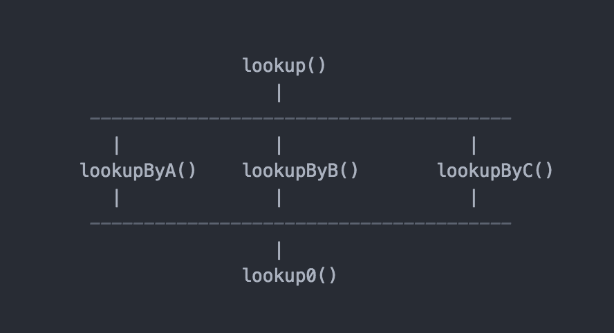</p>
<p>我个人编码中的方法命名习惯图例</p>
<p>如上，lookupByXXX 表达了不同参数逻辑的差异化处理，最后的 lookup0 则是一段共享的查找执行代码。 lookup 是一个公开的接口方法，而后面再加个 0 基本就是我的个人习惯了，表达了内部私有的一种技术性实现，它一定是私有的，不对外暴露的。</p>
<p>这个例子中的编程方法，是让我对所有类似需要的接口实现模式保持一致。但这确实只是我个人的习惯偏好，我没办法并且也不会要求别人也用类似的方式来命名函数和编写实现，因为别人也可能有自己的习惯偏好，谈不上谁比谁更好，毕竟它并不是广泛的共识。</p>
<p>那大家都认同并形成共识的方法就一定能形成习惯吗？也未必，这需要我们去分辨和反思。比如程序员都不爱写文档，很多人也没有这个习惯，但大家几乎都认同提供规范的设计和接口文档是个好方法，只是因为文档的优先级长期低于完成代码功能从而被搁置了。</p>
<p>另外，一些流行的概念就一定是好方法吗？比如，结对编程，是一种流行的概念。它的行为要求是：两位程序员坐在同一工作台前开发软件。它的优势作用是：与两位程序员各自独立工作相比，结对编程能编写出质量更高的代码。其理论基础是：两个程序员具有相同的缺点和盲点的可能性很小，所以通过结对编程的时候会获得一个更好的代码实现。</p>
<p>但在实际中，结对编程也有它的缺点和劣势，比如更高的开发成本（毕竟要同时占用两个人）。而且，有些人可能从心理上就很不喜欢结对编程的，比如我，因为坐在一起编程，难免分心而无法进入完美的心流状态，所以会感觉自己的工作效率都会下降一半以上；并且我也很难接受别人在看代码讨论时，用手戳屏幕指指点点。当然，不仅仅是我，还有更甚者，除了代码洁癖，还有生活洁癖，根本接受不了任何其他人和自己共用一个键盘的。</p>
<p>也许稍微松散点，没有那么物理上的严格结对，而是确保每一个程序员写的每一行代码，都能有一个配对的程序员去进行检视，虽说这个过程完全是异步或远程的，但效果应该也是可以保障的。这几乎就是开源项目的协作模式。开源项目的繁荣与成功，也证明了其实践的协作模式是一种好方法。</p>
<p><strong>总结来说</strong>：</p>
<p>在你从程序新人成长起来的过程中，要学会区分，哪些确实是值得学习与推广的好方法，哪些仅仅是自己的个人习惯，特别是在你成长到开始成为技术管理者之后。</p>
<p>古语有云：“己所不欲，勿施于人。”而己之所欲，若是自己特有的习惯偏好，也就请勿妄施于人了。若确实觉得是个好方法，尽量建议于人，而非强加于人，即使你手上掌握有强加的权力。</p>
<p>反过来看，程序行业，编程实践中，存在大量流行的概念、模式、原则，甚至哲学，它们的产生都有其历史背景和过程，并在一定范围内形成了共识。但你依然需要去对这些流行的共识进行分辨和反思，看看哪些才是适合你的好方法。若真是好方法，也可以进一步将其培养成自己的习惯。</p>
<p>虽是以编程为例，但习惯的偏好不限于此。</p>
<p>最后，在你成长的路上，都形成了哪些好习惯呢？欢迎你留言给大家分享下。</p>
<h1>30 写作：写字如编码</h1>
<p>程序员群体有个共同的弱点，那就是写得了代码，解决得了问题，但却不能很好地展现自己的能力。从今天开始，咱们专栏即进入一个关于 “展现” 的主题，聊聊（写作、画图和演讲）三类最常见的展现手段。</p>
<p>其中，展现的最常见形式之一就是：<strong>写作</strong>，它是一种能随着时间去沉淀的长尾展现形式。</p>
<p>曾有多人问起，写作除了坚持写、持续写、长期写，还有什么其他技巧么？答案是：有的。虽说我并没有上过专业的写作课，但在长期的写作过程中，我已通过实践摸索出来了一套符合程序员这种理性逻辑思维的写作技法，简言之，就是：写字如编码。</p>
<p>把每一篇文字当作一个需求，把写作当成在编码的过程去完成这个需求，它会非常类似于程序开发的整个过程，包括<strong>需求、设计、实现、测试和交付</strong>五个阶段。</p>
<h2>一、需求</h2>
<p>程序的需求，对应于写作的主题。</p>
<p>你之所以写程序，是因为有人给你提需求；但你业余的写作，通常就不会有人给你提相关的写作需求或主题了。所以，就需要你自己去主动寻找和发掘你自己的写作需求或主题。</p>
<p>对于我来说，写作主题的来源可以有很多方面：有时，是来自身边的工作和生活中的事件引发的感触；有时，是阅读过程中突然产生的启发与领悟；有时，则是曾经一直困惑的问题突然碰到或找到了答案……这些都属于灵感乍现的时刻，也是我写作主题的来源。</p>
<p>但只是等到写的时候去灵光一现是很难保障持续写作的主题供应的，所以为了持续写作，我很多时候在大脑的潜意识里都会考虑主题的问题，等有了灵光一闪的时刻，就随时记录下来，形成一个<strong>主题列表</strong>。这个主题列表，就有些像产品的需求特性列表了，呆在需求池里等待被 “实现”，也即，“写出来”。</p>
<p>所以，如果你想要持续地写作，你得养成一个习惯，也就是前面《提问：从技术到人生的习惯》一文中关于提问和记录的习惯。</p>
<p>随手记录的主题可能很多，但真正能写的时间和精力却有限，因此你得挑选值得写的主题。如果把每一篇文字想象成一件产品，那么定义写作的主题，就像定义产品的灵魂，你得确定一个产品的目标、定位，以及面向的读者人群。</p>
<p>美国作家库尔特·冯内古特说：</p>
<blockquote>
<p>想一个你关心，其他人也会关心的话题来写。要记住，不论你用多么发自肺腑的情感表达，对于读者来说，除非是他们真正关心的主题，不然怎么都不会太关心，而只有主题才是读者最真切的关注点。所以，关注你的主题，而不是想办法去显摆自己的文字。</p>
</blockquote>
<p>是的，一个好的主题很可能是一篇好文字的开端，毕竟如果一开始产品方向错了，实现得再好又能有多大意义呢？</p>
<h2>二、设计</h2>
<p>确定了本次写作的主题（需求），接下来就该进入到设计阶段了。</p>
<p>而程序开发的设计一般分为两个层面：</p>
<h3>1. 概要设计</h3>
<p>在软件程序系统的设计中，这部分内容主要是架构设计，系统或子系统的拆分、交互逻辑、边界等等。而对于写作而言，这部分对应的就是设计本篇文字的逻辑结构，换言之，即在主题确定的基础上，采用怎样的逻辑去展开主题，形成合适的衔接。</p>
<p>比如，我写的文章多为随笔散文类，而散文的结构，上过中学语文课的我们都知道：形散而神不散。其中的 “神”，就包括了文章的核心主题观点，以及围绕主题展开的逻辑结构、文字附着的延展线条等。</p>
<h3>2. 详细设计</h3>
<p>有了逻辑骨架后，就需要补充真正有血有肉的文字了。</p>
<p>围绕主题想表达的观点，考虑需要添加哪些支撑观点的素材，以及设计整理、引出和排布这些素材的方式。而为了让文字更有阅读的趣味，还需要有适当的故事，因为人们都喜欢读故事，而非说教，那故事又该如何切入与布局？这也是需要考虑的点。</p>
<p>另外，这些素材或故事又从哪里来？只能来自平时的阅读积累。大部分我们读过的东西很快就会被遗忘，所以为了在需要的时候找到合适的内容，就需要在平时的阅读时记录笔记，留下索引，必要时再根据笔记索引的关键词去搜索。</p>
<p>经过了编程强大且反复的逻辑训练后，对于你、我写作而言，逻辑结构的设计就不该有障碍了，其实最大的差异与障碍可能是在 “实现” 上。</p>
<h2>三、实现</h2>
<p>写文字和编码在实现层面最大的差异是：实现过程的技能和要求不同。</p>
<p>在实现技能层面，程序是用计算机语言来表达的，文字是用自然语言来表达的。计算机语言的逻辑性和精确表达能力要比自然语言强得多，自然语言是模糊的、混沌的、不精确的。因此写得一手好程序的人，不一定能写得一手好文字，因为他们需要驾驭的语言的特性完全不同。</p>
<p>刚开始写文章时，即使自然语言我们从小就学会了，也能熟练使用，但用它写起文章来也会有一种磕磕碰碰的感觉。就好像刚学写程序时，好不容易才能编译通过，也是磕磕碰碰的。</p>
<p>对于编码，编译通过的程序才算刚刚开了头，接着还会进行程序的调测，有时还会优化重构。对于写文字也需要类似的过程，毕竟一气呵成地写出一篇完美的文章，就像是个不可实现的传说。其中，代码重构中的重命名、分拆过长的函数等，就类似于对文章重新进行文字的遣词造句、润色打磨、段落分界等过程。</p>
<p>另外，之于编程和写作，不同的技能应用水平，实现效果就完全不同了。写过程序的都知道同样的架构设计，选择不同的语言、框架、算法和数据结构来实现，实现的技能水平要求可谓千差万别。而同样主题和逻辑结构的文章，不同文字技能水平的作者来写，高下立见。</p>
<p>比如，网络小说兴起之后，我也看过一些，对男主角人物的描写，多是男神化。用词无非，帅则温润如玉、玉树临风；正则气宇轩航、丰神俊朗。但太过正的角色还不行，又会加点邪气，如狂浪不羁等描述，这样更讨读者喜欢。再对比下金庸是如何描述类似这样的人物的：</p>
<blockquote>
<p>这本来面目一露，但见他形相清癯，丰姿隽爽，萧疏轩举，湛然若神。</p>
</blockquote>
<p>短短四组词，一个身形清瘦、风度俊爽、洒脱轩昂、目光有神却又透出一股子高处不胜寒的人物——黄老邪——就跃然纸上了。金庸用词简练而韵味深长，境界高下立判。这就是文字技能的应用水平了，就像武功招式。金庸在文字上浸淫多年，随手用出一招，自是比普通人精妙许多。</p>
<p>写程序和写文章，本是两种不同的 “武功”，“心法” 可以类似，但 “招式” 自不相同。而 “招式” 的积累与应用，无论写程序还是写文字，都没有什么捷径可走，只能多看、多写、多练。</p>
<p>除此之外，写程序和写文字的实现过程的环境要求也有类似之处：程序员写代码的时候很讨厌被人打断，需要一段能安静且专注的时间，通常 2～4 小时不等。写作也一样。所以，我经常选择在晚上夜深人静的时候进行写作的 “实现” 阶段。</p>
<p>这一点，不仅程序员是这样，很多知名作家也都有自己独特的写作过程要求，他们的共性都是需要一段能实现不被打扰且专注的时间。</p>
<p>村上春树，当他进入创作小说的写作模式时，他通常早晨 4 点起床，连续写作 5 到 6 个小时，然后会去跑上 10 公里或游 1500 米（或者二者都有）。下午就不再写作，而是读点东西，听听音乐，晚上 9 点便上床睡觉。他日复一日地保持这样的作息时间、这样的重复过程，据称能帮助其进入一种思维的深层状态。</p>
<p>海明威，通常是早晨天一亮就开始动笔。在采访中，他说道：“没有人打扰你，早晨凉爽，有时候冷，你开始工作一写就暖和了。你读一遍你写好了的部分，因为你总是在你知道往下写什么的时候停笔，你写到自己还有活力、知道下面怎样写的时候停笔。”他通常每天只写 500 字，而且喜欢用一只脚站着，采取这种资势，据称可以使他处于一种紧张状态，迫使他尽可能简短地表达自己的思想。</p>
<p>实际上，这些年写作下来，我也尝试了在很多不同的时间段，甚至分多次写完一篇文章。这里没有一定之规，你总会找到适合自己的写作实现方式。在这个过程中，你有一段专注、忘我甚至像是做梦的过程，与自己的思维深处对话。</p>
<p>在这个过程中，你也可能会产生意外的大脑神经元连接，获得一些更高质量的思考，灵光乍现的启发，以及更好的文字表达。</p>
<h2>四、测试</h2>
<p>每次写完一篇文章后，就感觉自己好像是被清空了，甚至不再想去读一遍，这时我就会把它“扔”在一边。</p>
<p>写作的过程中，大脑从冷的状态逐步升温，直到进入一种很热的状态，文字就是在这样的状态下自然流淌出来的。直到写完之前，大脑一直在高速运作，就像一颗 100% 利用率的 CPU，它的温度很高。写完后，CPU 终于降低了负载，但温度的降低还需要一个过程。</p>
<p>而对写完的文字再读一遍，进行再编辑和优化，这就像软件开发中的测试过程。但我需要在一个冷却的状态下进行，站在一个读者或编者的视角去重新审视这篇文章。所以，这个过程通常发生在写作完成后的一天或几天之后。这中间的间隔，我称之为写作后的冷却时间。只有在冷却的状态下，我才能更客观地检视自己写的文字，同时进行合适地编辑和修改，这个过程就是对文字的测试。</p>
<p>作为程序员，其实我并不喜欢做太多的测试工作，所以在以前我写作完，只是“履行”最简单的文字测试内容：必要的错别字、用词理解性和语句流畅性检查。和 “极客时间” 合作写专栏就给配备了专业的编辑，编辑主要会从下面几个方面进行测试或检查。</p>
<ul>
<li>文词使用：进一步发现有时作者自己很难发现的错别字和用词的适当性、理解性问题；</li>
<li>逻辑结构：整体文字内容的逻辑结构，衔接过渡是否自然等；</li>
<li>读者感受：站在读者的角度，去考虑其感受以及能够得到的收获；</li>
<li>……</li>
</ul>
<p>这就是关于文字的测试，就像一个好的测试总是能帮助开发者得到一个更好的软件一样，一个好的编辑也总是能帮助原作者形成更好的文字输出。</p>
<h2>五、交付</h2>
<p>完成了必要的编辑测试工作后，就到了最终的交付（发布）阶段。</p>
<p>写作本身是一个不断积累压力的过程，而交付之后则完成了一种压力的释放与转换。关于这一点，和菜头描述得特别精确：</p>
<blockquote>
<p>写作真正的压力来自于完成一件事情的压力，你要么一开始连个标题都想不出来，要么写两段之后就不知道如何继续下去。写第一篇文章会是一次漫长而痛苦的自我挣扎，你大概有 30% 的精力花在构思内容上，剩下 70% 的精力花在自我怀疑和自我否定上。</p>
</blockquote>
<p>而交付，就是发布这篇新写的文字，让它面对读者，获得反馈与验证价值。</p>
<p>交付一篇新的文字，就像是往这个互联网的文字海洋中扔下一滴水珠，偶尔也会激起几丝涟漪。时有读者留言、评论，或有赞，或有踩，而从作者的角度出发，交付的目的之一是希望有一些更有价值、值得思考和讨论的声音出现。</p>
<p><strong>写作与文字的价值实现分两部分，写完后就完成了对自我的价值实现，而交付后才算完成了对他人的价值实现。</strong></p>
<p>当你把写作拆解成了类似编码的过程，也许阻碍你写作的障碍与阻力也就变得没那么大了。如果你能编写清晰有效的代码，也就应该能写出主题结构清晰的文字。至于一开始文字的好坏，技巧的高明与否，反而并不重要，在持续写的过程中，它们会自然而然地得到提升。</p>
<p>方法有了，还需要找到写作的源动力，而大部分作者的源动力都来自于一颗想要表达的心；再配合一部分外部的激励机制，和相应的自律约束，才有可能持续地写下去。</p>
<p>最后，多说一句，极客时间上的留言质量很多都不错，如果你还没有开始写点东西，不妨从留言开始记录一些你的思考和观点，留下价值。</p>
<h1>31 画图：一图胜千言</h1>
<p>对于写作这种展现形式，有一种最好的补充手段就是画图。有时文字描述了半天还不如一张图来得清晰，正所谓：一图胜千言。这对于程序员特别需要的技术性文档或文章写作，都是最好的补充注解，有时甚至起到了画龙点睛的效果。</p>
<p>以前我在网上发一些技术博文，就常有读者留言问我是用什么工具画图的。其实我感觉他们很可能问错了问题，因为我曾经为了画好图尝试过各种不同的画图工具软件，但最后发现能不能画好图和工具的关系并不大。</p>
<h2>一、为何？</h2>
<p>程序员不是主要写代码的么，为什么需要画图？</p>
<p>有些程序员会认为写好代码就好，画好图有什么用？程序员成为架构师后是不是就天天画架构图，成为了所谓的 PPT 架构师？曾经读过一篇文章《在首席架构师眼里，架构的本质是…》，里面提出了一个架构师能力模型图，（我重新绘制）如下：</p>
<p>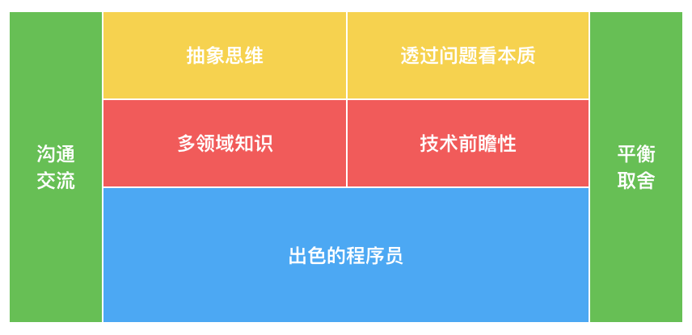</p>
<p>架构师能力模型图</p>
<p>结合我自己的经历和经验，这个能力模型针对架构师这个岗位来说还是比较符合的。程序员出色到了一定程度后想成长为一名架构师，就需要看看能力模型中的其他方面。而掌握好画图技法，对这个能力模型有什么帮助吗？</p>
<p>前面讲系统设计的文章《多维与视图》中我已经给出过结论：“用更系统化的视图去观察和思考，想必也会让你得到更成体系化的系统设计。”</p>
<p>在今天这个时代，我们都体验过各种各样的地图软件，一个国家，一个城市，一个街区，地图软件总是在不同的抽象维度上来展示地图。而对于一个复杂的软件系统，也需要类似的不同抽象维度：系统的全貌、不同子系统间的关联和交互、子系统内部模块间的接口和调用、某个关键实现点的处理流程等。一个架构师应该可以在这些不同的抽象维度上把系统或系统的一部分清晰地描绘出来。</p>
<p>而画图对于能力模型中的 “抽象思维” 就起到了一种锻炼，其作用就是帮助你在不同的层次上去思考系统设计，并具象化这个设计。既然具象化了设计，那么再基于此去沟通交流自是事半功倍。成为架构师之后，你自己明白还不是主要的，要让别人明白才更重要。</p>
<p>此外，站在一个多层次、全方位的系统架构图面前，在不同抽象维度上描绘了系统的各个重要方面，想必更容易看到问题的本质，也能更好地发现和找到系统的症结。如果解决系统的问题就像走迷宫，那么你是直接钻进去反复尝试寻找出路，还是站在更高的维度去俯视迷宫然后再找最佳的问题解决路径呢？</p>
<p>想必在更宏观和全局的视野下，与系统所有相关人员进行清晰准确地交流，直击问题本质，那么再进行正确而适当的技术决策与平衡取舍也没那么难了，对吧？至于 “多领域知识” 和 “技术前瞻性” 这两方面好像确实和画图的关联性不强，但如果“多领域知识”不限于程序技术领域，那画图也算一个领域的知识吧。</p>
<h2>二、如何？</h2>
<p>上一节探讨了画好图有什么益处，这一节我们看下如何画好图？画一个清晰易懂的技术架构或交互流程的说明图例需要什么专门的绘图知识与技巧么？另外为了画好图会花费大量的时间么？</p>
<p>过去几年在关于如何画好图这个课题上，我做了好些摸索和实践，想取得效率（即，画图花费的时间不会比用文字来描述同样的内容更多）和效果（即，图例表达的效果应该比文字描述更好）的平衡，在这个过程中我收获了下面一些基本认知和感觉还不错的实践方式。</p>
<h3>1. 图形</h3>
<p>我画技术图例时只会使用一些最基础的图形，比如：矩形、圆、三角、菱形、气泡、箭头，这些最基本的图形几乎所有的画图软件都会自带的，所以工具的依赖性很低，但真正画时的操作效率却又很高。</p>
<p>当然，一些著名外部系统可能都有各自知名的 Logo 图标，如果有时为了表达和这些著名外部系统间的交互，也会直接使用它们的 Logo 图标。如下面图示，就是我常用的一些画图图形元素。</p>
<p>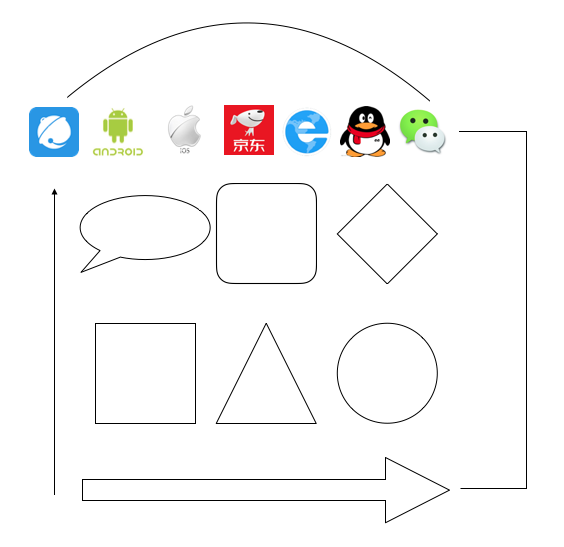</p>
<p>我的一些常用画图元素</p>
<h3>2. 颜色</h3>
<p>有时系统的组成比较复杂，只用基本图形不足以表达所有不同的系统组成部件，这时就需要用颜色来区分了。</p>
<p>那么下一个问题就来了，该用哪些颜色呢？我的答案是使用大部分人觉得美的颜色。那大部分人觉得美的颜色是什么呢？彩虹色，当然这一点也我没有做过专门调查，只是凭经验得来。所以我一般用的颜色就是彩虹七色，外加两种经典色：黑、白。这样就有九种颜色加上好几种基本图形，可以组合出几十种表达不同组件的图形元素，基本也就够用了。</p>
<p>彩虹七色包括：红、橙、黄、绿、青、蓝、紫。但七种颜色的选择也是有优先级，在一本讲设计的书中 Designing with the Mind in Mind（中文译本《认知与设计》）提出了下面一些色彩使用准则：</p>
<ul>
<li><strong>使用饱和度、亮度以及色相区分颜色，确保颜色的高反差</strong>，因为人的视觉是为边缘反差而优化的。</li>
<li><strong>使用独特的颜色</strong>，因为人最容易区分的颜色包括：红、绿、黄、蓝、白和黑。</li>
<li><strong>避免使用色盲无法区分的颜色对</strong>，比如：深红－黑，深红－深绿，蓝色－紫色，浅绿－白色。</li>
<li><strong>使用颜色之外的其他提示</strong>，对有颜色视觉障碍的人友好，而且也增强了可理解性。</li>
<li><strong>避免强烈的对抗色</strong>，比如：红黑，黄黑。</li>
</ul>
<p>以你看为什么交通灯是：红、黄、绿？为什么乔布斯选择这三个颜色作为 Mac 操作系统中所有应用窗体的按纽颜色，这也是暗合人类的视觉认知原则的。所以我现在多选择的是白底、黑字、黑色线条，色块优先选择红、绿、黄、蓝，实在不够用了才会选择橙、青、紫。</p>
<p>当然红有好多种红，绿有好多种绿，该用哪种呢？看下图所示，给出了 RGB 三原色的配色数值，这属于个人偏好，在 Mac 的显示器下看起来很舒服。但若用在其他场合，比如投影什么的，就可能需要根据投影实际效果进行微调了。</p>
<p>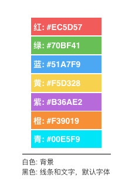</p>
<p>个人偏好的颜色配色参数</p>
<h3>3. 审美</h3>
<p>除了基本的图形和颜色选择之外，另外一个关注点是审美。</p>
<p>审美对最终的效果呈现有很大影响，这得感谢苹果总设计师乔纳森·伊夫（Jonathan Ive）把大众的审美倾向全部带入到扁平化时代，所以实际中我只需要把图形弄得扁平，去掉立体、阴影什么的，看起来就还不错了。毕竟我们画的是系统设计图，不是美术设计稿，审美方面的追求就适可而止了。</p>
<p></p>
<p>审美效果示例图</p>
<h2>三、几何？</h2>
<p>探讨了如何，我们再接着看看几何。此 “几何” 不是数学里的几何，而是掌握画图技法到底代价几何？又价值几何呢？</p>
<p>好些年前了，我画的技术图示（来自以前的一个分享 PPT）大概是下面这样的，总是觉得不好，不太满意，却又不知道不好在哪里，以及该怎么改进。然后就归咎于工具不好用，从一开始用 Viso 画，后来尝试了 Mac 下的专业绘图工具 OmniGraffle，觉得太复杂，后又找到个在线绘图网站 <a href="http://draw.io/">draw.io</a>，感觉还可以，但由于是国外网站，访问效率不太好，没多久就又放弃了。</p>
<p>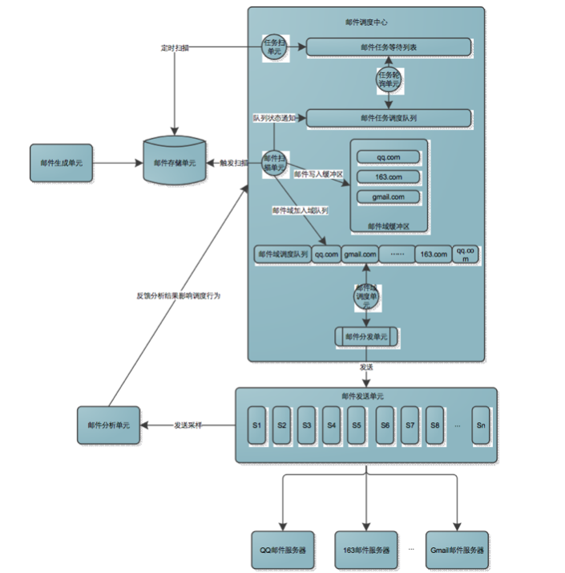</p>
<p>“优化前”的技术图示</p>
<p>之后需要做一些胶片演示时，用了 Mac 下的 Keynote（相当于 Windows 下的 PPT），需要画技术图示时想如果直接在 Keynote 里画最省事了，然后就开始用 Keynote 画了。按 “如何” 一节的指导原则，我重新画了下上面那个技术图示，如下：</p>
<p>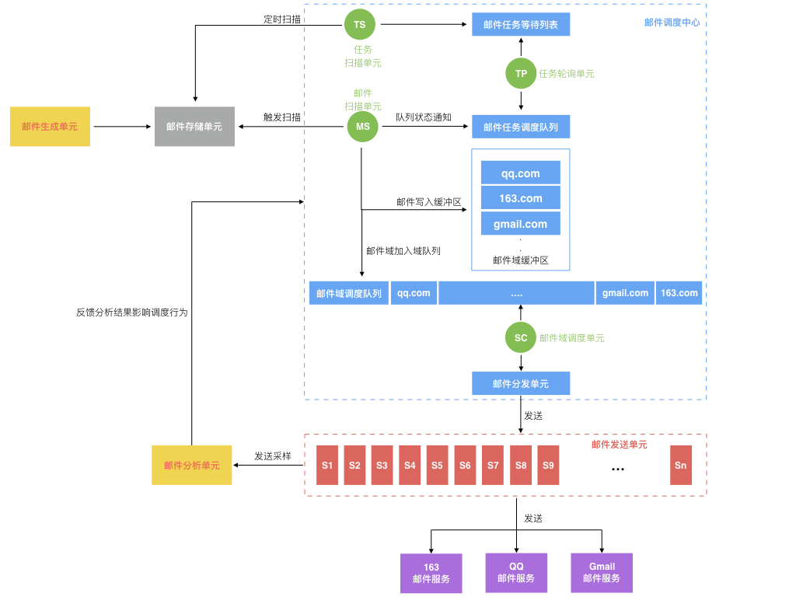</p>
<p>“优化后”的技术图示</p>
<p>这花费的时间绝对不会比画上面那个多，但呈现出的效果却要好很多。所以，学会使用一种简单的软件，使用简单的图形和配色，在最有效率的情况下画出一幅效果还不错的图例，也是很有价值的。</p>
<p>当然你可能会认为只有写出的代码才有价值，其实这里你可能忽视了一个大部分程序员都认同的观点：代码也是写给人看的。程序员不会认为一份机器能运行而人很难看懂的代码是好代码，而画好图就能更好地帮助你去思考代码的组织和呈现方式。</p>
<p>曾经问我关于画图工具的人，我知道他们差的不是一个画图工具，而是对于 “画图” 本身的思维认知与技法打磨。所以在本文我分享了我近些年一直在使用的一种极简绘制技术图例的技法，毕竟我们画图只是为了追求讲清楚一个技术方案或展示一个系统，而不需要考虑任何多余的艺术性。</p>
<p>最低的代价，还不错的效果，在效率和效果之间取得性价比最高的平衡。曾几何时，你想象中很麻烦的事原来也可以如此简单。</p>
<p>关于展现的第二种形式：画图，今天的分享就到这里。你平时是如何画技术图示的？在用什么工具？欢迎你在留言区和大家分享分享。</p>
<h1>32 演讲：表达的技术</h1>
<p>展现的另一种形式是：<strong>演讲</strong>。其实作为程序员出身的我，演讲水平非常有限，但在职业发展与成长的道路上，演讲却是必经之路。所以，我确实有比较系统地思考和琢磨过演讲的价值、效果以及提升的方法，现在我将其分享给你，希望能对你的成长或者职业道路有所帮助。</p>
<h2>一、价值与效果</h2>
<p>写作的展现，是一种广度路线，产生间接、长尾效应；演讲的展现，是一种深度路线，产生直接、深度连接。</p>
<p>为什么说写作是广度而演讲是深度的？过去几年，我读过很多的文章、书，但还能记得住只言片语的都非常少。即使当时一些给我非常多启发与触动的文字，如今也只能记得当时触动的感觉，却忘了触动的内容。但好些年前，我参加过几次行业大会，有那么几场演讲，现在回想起来，不仅记得当时深受启发的触动感，甚至还能记得当时的内容。</p>
<p>这就是演讲带来的深度效应，它的现场感更立体，有助于留下更深刻的记忆，持续发挥影响的时间也超过了文字。</p>
<p>演讲的现场立体感带来的深度效应，也只能留在现场。即使我们把整个演讲过程录制成为视频，观看视频的过程也会损失很大一部分深度影响力，也许这就是为什么有人会去看现场演唱会的原因。</p>
<p>所以，演讲的最大价值就在于这样的深度效应。但现场感并不一定带来深度影响，也可能是把人 “催眠” 了。那如何发挥好演讲的效果呢？这里我就先谈谈我自己的一些经历和感悟。</p>
<h2>二、经历与感悟</h2>
<p>成长路上，终究会遇上演讲；从没遇上演讲的程序员，可能天花板就会比较低。</p>
<p>作为程序员，我的第一次演讲经历，当然是技术分享，团队内部的。如今回想，第一次分享暴露出了很多方面的问题。比如，材料准备时发现 PPT 技能太差，想展现的内容做出来的效果太挫；现场讲的时候容易跑偏或者陷入细节，整体节奏失控；想表达的内容太多，信息量过大。这些问题都导致第一次演讲的效果不尽如人意。</p>
<p>后来再有技术分享的机会时，我已经开始写作了一段时间，发现写作实际对演讲是有帮助的。写作和演讲的共通处在于：内容、观点、信息传递的目标都是要考虑的，只是最终的表达形式不同。而且因为写了不少东西，也反而获得了更多的技术分享机会。</p>
<p>从业这么些年，经历了从线上到线下，从组内到部门，然后再到公司或行业级的不同规模的分享演讲，挑战并不一样，其中最大的区别在于现场感的压力不同。而且除了分享式的演讲，还有另外一种汇报式的演讲，如：晋升述职。</p>
<p>技术分享，一般时间会长一些（一小时左右），而晋升述职，时间则要短很多（十分钟左右）。前者的压力来自对象的规模，后者的压力来自对象的角色。</p>
<p>而不同时长的演讲，准备的方式也不太一样。时间长的演讲，准备的内容就多，要精确地讲好这么多内容是一个挑战；而时间短的演讲，内容不多，但就需要合适地挑选和裁剪，并且精确地传递，这又是另外一种挑战。</p>
<p>那对于不同的演讲类型，有通用的准备方法吗？下面我们尝试梳理下。</p>
<h2>三、准备与发挥</h2>
<p>一场演讲，包括前期准备和现场发挥两个阶段，而前期充分的准备是现场良好发挥的基础。</p>
<p>世界上有一个著名的演讲论坛 TED，它上面的演讲，即使仅仅是视频，很多都给人留下了深刻的印象，而且传播范围也很广。它的演讲者通常是一些知名人士或至少是业内影响力比较大的人物。</p>
<p>我一开始以为他们本身就已经是很好的演讲者了，但后来了解到他们为了参加 TED 短短十来分钟的演讲，需要全力以赴地投入以周为单位的时间。比如，《哈利波特》的作者罗琳去 TED 演讲时，为此全心投入准备了整整六周。</p>
<p>那前期可以准备的内容有哪些？我梳理了有如下维度：</p>
<h3>1. 框架</h3>
<p>演讲的框架和程序的架构有点类似，一般我都从下面几个方面来设计：</p>
<ul>
<li><strong>目标</strong>：本次演讲需要达成的目标是什么？</li>
<li><strong>听众</strong>：本次演讲的受众是哪些人？</li>
<li><strong>重点</strong>：本次演讲要传递的关键点有哪些？</li>
</ul>
<p>那么一场技术分享的框架线，可能有如下：</p>
<ul>
<li>
<p><strong>引出主题</strong>：结合目标与听众来确定。</p>
</li>
<li>
<p><strong>自我介绍</strong>：让听众了解你，证明你有资格讲这个主题。</p>
</li>
<li>
<p>重点结构</p>
<p>：每一个关键点的分析、讲解，可以从以下方面来拆解。</p>
<ul>
<li>问题：这个点上存在什么问题？</li>
<li>历史：这个问题的历史由来是什么？</li>
<li>方法：你是用什么方法解决这个问题的？</li>
<li>原因：为什么要用这个方法，要在这个阶段，以及这样解决问题？</li>
</ul>
</li>
<li>
<p><strong>细节深入</strong>：有一定细节深入，更有说服力。</p>
</li>
<li>
<p><strong>总结回顾</strong>：结束前的再次总结和提炼，以加深印象。</p>
</li>
</ul>
<h3>2. 材料</h3>
<p>在框架线清晰后，就进入了演讲材料的准备阶段。其中的材料包括三类：</p>
<p><strong>第一类是幻灯片</strong>。到底要准备多少页的幻灯片？这个取决于框架线和演讲时长。但这里幻灯片的最大作用在于：</p>
<ul>
<li>辅助演讲者的结构记忆与信息表达；</li>
<li>辅助听众的信息吸收、理解与消化。</li>
</ul>
<p>也就是说，演讲的主角还是讲，而幻灯片仅仅是配角。</p>
<p><strong>第二类是演讲稿</strong>。讲之前你可以先写下来你所要讲的内容，这样会有助于组织信息、梳理逻辑和提炼语言。</p>
<p>TED 的演讲以前多是 18 分钟，而现在分长、短两种：短的约 6 分多钟，长的也缩减到了 12～15 分钟。在信息爆炸的时代，听众的注意力是一种稀缺资源，想要吸引这样的注意力，就需要提供更精确且直击人心的内容，才能收获你想要的深度影响效果。</p>
<p>我们的正常语速大约是每分钟 150～200 个汉字，但在演讲的压力环境下，可能会出现不自觉地加速，无意识地跑偏，甚至语无伦次。如果想要提供更精确的信息传递和表达，那么演讲稿就是必需的。</p>
<p>让演讲的每一个字，都体现它的价值。</p>
<p><strong>第三类是小故事</strong>。人是情感动物，故事的影响效应远高于数据和逻辑，即使是在做技术分享时。</p>
<p>以前听过一些技术分享感觉比较枯燥、催眠，就在于技术基本都在讲逻辑、讲数据，听久了自然疲劳。而穿插一些 “小” 故事，则可以加深前面数据和逻辑的影响效应。这一点很多慈善募捐组织早就学会了，再大比例的穷困数据，也比不上一张衣不蔽体的小女孩照片来得有效。</p>
<h3>3. 节奏</h3>
<p>一段持续时间的演讲中，有没有一些关键的时间点呢？当然是有的。</p>
<p><strong>一个是开场</strong>。据研究统计，一场演讲给人留下的印象和评价，开场的数秒至关重要。这可能和一开始是否能抓住听众的注意力有关。</p>
<p><strong>另一个是峰终</strong>。管理界有一个 “峰终定律（Peak-End Rule）”：在 “峰” 和 “终” 时的体验，主宰了对一段体验好或者不好的感受，而在过程中好或不好体验的比重、时间长短，对记忆的感觉差不多没有影响。也就是说，如果在一段体验的高峰和结尾，你的体验是愉悦的，那么你对整个体验的感受就是愉悦的，即使这次体验总体来看，更多是无聊和乏味的时刻。</p>
<p>峰终定律，在管理上决定了用户体验的资源投入分布，只需要重点投入设计好 “峰终” 体验。而演讲，也是一门体验艺术，它的 “峰” 前面说了一处——开场（抓注意力）；另一处，可能是中间某一处关键点（提供独特的高价值内容或观点）。</p>
<h3>4. 表演</h3>
<p>演讲，包括讲和演，因而还有最后一个准备环节：演。</p>
<p>演，即表演和发挥；表演的准备，有三个层级，如下图（原图来自 Tim Urban’s Memorization Spectrum，翻译后重绘制）：即兴发挥、框架内发挥和严格遵从剧本。</p>
<p>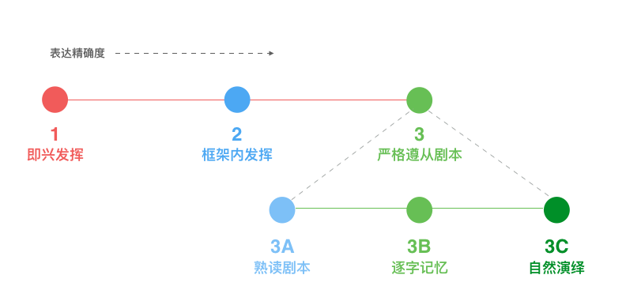</p>
<p>表演准备的三个层级</p>
<p>做了前述准备的演讲，算是在框架内发挥。如果还准备了演讲稿，那么练习熟练后，基本算是接近了 3A 这个层级，但演讲稿，还算不上是剧本，所以只是接近。按 3 这个层级的准备，是把演讲当作了一出舞台剧，有严格的剧本，需要经过反复地排演练习。</p>
<p>这样的准备投入是巨大的，所以你一般需要判断到底多么重要的演讲，才需要用上 3 这个层级的准备。但即使达不到 3 级的标准，按这个标准来准备也有好处，当你非常熟练了你想要精确表达的内容，在现场发挥时，你的大脑就会从记忆负担中腾出空间来应对临场那些很难提前准备的状况。</p>
<p>“演” 需要关注和练习的东西比 “讲” 多得多，而且表演本身就是一种专业，甚至也是一种天赋。这条路上，你可以先有一个清晰的认知，但能做到何种程度，可能因人而异吧。</p>
<p>演讲，本是表达的艺术，但对程序员的要求远没到艺术的层次；先能表达，再求精确，技术达标，足矣。</p>
<p>关于展现的第三种形式：演讲，就分享到这了；而演讲也是很多程序员的一道槛，如今的你遇到这道槛没？欢迎你留言分享。</p>
<h1>33 定义：阶梯与级别</h1>
<p>从今天开始，咱们专栏会开启一个大家可能都比较感兴趣的主题：<strong>程序员的职场阶梯，以及攀登阶梯的晋升博弈</strong>。</p>
<p>任何种类的职场上升通道都是一个阶梯，但程序员的阶梯有何不同呢？</p>
<p>在程序员职业生涯的发展过程中，都会经历一个修炼成长、打怪升级的过程，而每个公司可能都会定义自己的升级阶梯。以 AT 为首的两大巨头，其对技术人员的级别定义在互联网业界比较公开。例如，阿里的程序员级别从 P4 到 P14，而腾讯则定义了五个大级别：从 T1 到 T5，并且 T4 之前的级别内部还会细分为若干小级别。</p>
<p>相对来说，腾讯的 5 个大级别与我自己一路走来经历的几个阶段感觉会比较匹配一些，而大级别之间的分界线也会更明显一些。我对升级阶梯的定义也是 5 个：初级、中级、高级、资深和专家。</p>
<p>至于对不同级别的定义，我选择了三个相对容易判断的维度：</p>
<ul>
<li>具备什么能力？</li>
<li>解决什么问题？</li>
<li>产生多大影响？</li>
</ul>
<h2>初级</h2>
<p>初级，多属于刚入职场的新人。</p>
<p>一般刚从学校毕业的同学，具备基本的专业技能和素养，能快速学习公司要求的常用开发技术、工具和框架，能理解所在的业务和产品领域，并按照设计要求来实现功能。他们通常都工作在系统中局部某个区域内，能独立或在有限指导下实现功能并解决该模块碰到的具体问题。</p>
<p>这个级别基本完成的都是螺丝钉级别的工作，影响很有限。但如果从这个阶段你就开始定期归纳总结这些局部的工作经验，不断优化工作内容，并能在团队小组内部做出分享，甚至帮助其他同学解决问题，那就说明你已经走上了一条快速成长的通道。</p>
<p>刚入职场的同学，有本科，有硕士，还有博士，这有区别嘛？我个人感觉本科和硕士进入职场相差不大。当年我是硕士毕业，进入第一家公司算初级，本科算助理工程师，有一个小级别的差异，而薪酬待遇则相差无几。</p>
<p>那时腾讯也来学校宣讲，本科年薪 6 万，硕士 8 万，而博士 10 万。仅仅从年收入差距来看，读硕、读博似乎不是个划算的选择，可恰恰很多人选择读硕就是为了能有一个更好的工作起点，而选择的标准也可能恰恰就是薪酬占据主导方面，这貌似是一个误区。</p>
<p>以前看过一期《奇葩说》，一个清华男从本科读到博士，跑去节目上说了半天就是为找什么工作而苦恼，惹得同为清华毕业的高晓松当场发飙，而同为点评嘉宾的蔡康永也说了句很中肯的“实在话”：</p>
<blockquote>
<p>一直花时间求学，也许是为了拖延人生做决定的时间。</p>
</blockquote>
<h2>中级</h2>
<p>中级，相对初级最大的质变在于：独立性。</p>
<p>初级同学经过两三年工作历练，对实现各种业务功能、开发规范流程都很熟练了，摆脱了对基本指导的依赖性，这时就进入了中级阶段。中级工程师已经能够独立承担开发任务，设计实现他们负责的系统模块，以及通过搜集有效信息、资料和汲取过往经验来解决自己工作范围内遇到的问题。</p>
<p>中级这个层面的基本要求就是：<strong>完成动作、达成品质和优化效率</strong>，属于公司 “动作执行” 层面的中坚力量。观察下来，这个级别的工程师多数都能做到完成，但品质可能有瑕疵，效率上甚至也有很多无效耗散。不过，效率和品质总是在不断的迭代中去完善，自身也会在这个过程中不断成长并向着下一个阶梯迈进。</p>
<p>不少同学卡在这一阶段，就是因为虽然不断在完成工作，但却没有去反思、沉淀、迭代并改进，从而导致自己一直停留在了不断的重复中。所以，在工作中要保持迭代与改进，并把你的经验分享给新来的初级同学，这样在未来之路你不仅会走得更快，而且也可能走得更轻松。</p>
<h2>高级</h2>
<p>高级，不仅要能独立完成工作，还要能独立负责。他们能独立负责一个大系统中的子系统或服务，并成为团队骨干或最重要的个人贡献者。</p>
<p>相比于中级，高级工程师在 “动作执行” 层面，不仅能独立完成高级难度的开发任务，而且在用户体验（品质提升）和性能优化（优化效率）方面还都能做出更全面的考量。也就是说，他们不仅仅可以把开发任务完成得又快又好，而且还能清晰地定义出多快、多好。比如，一个服务的响应时间 99.9% 是在 20 毫秒内，内存消耗最大不超过 1G，并发吞吐量 10000+/s，类似能用清晰的数据来定义服务品质和效率。</p>
<p>另外，高级别需要面对的问题就不再是单一维度的技术问题了，他们需要结合业务特性去考虑设计合理的解决方案。熟悉业务领域内的应用系统架构以及各个部分使用的技术，能根据业务特性，合理进行分层设计，实现高效率、低成本的运维或运营。</p>
<p>初、中级别的能力提升与影响输出是通过经验的归纳总结与分享，那么高级则需要在经验这种偏个体特性的基础上，再进行抽象提炼，沉淀方法论。换言之，通过个人的经验，研究行业的优秀实践，再结合自身实践和逻辑推导，沉淀出切合现实的方法论，并在团队内部推广应用。</p>
<h2>资深</h2>
<p>资深，有深度和资历（即广度）两个层面，对应到职业生涯路线上，也有两个方向。</p>
<ul>
<li>资深工程师</li>
<li>架构师</li>
</ul>
<p>在偏基础研发、算法和特定技术复杂领域，会向 “资深工程师” 方向发展，属于深度优先。而在面向业务开发的领域，业务复杂度高于技术复杂度，则会向 “架构师” 方向发展，属于广度优先。</p>
<p>但无论深度还是广度，进入这个级别即说明你在特定领域都已经具备了相当的积累。这时你是作为相关领域的专家，深度参与和支持团队项目，在领域内进行关键的技术判断和决策，进而帮助团队项目或产品加速成功。在这个层次上，你面临的都是一些更复杂的、具备一些灰度（不是非此即彼，而是需要折中权衡）特性的问题，这时就需要你能够全方位、多层次、多角度地深入理解问题，评估每种方案的收益、成本和潜在未来的长短期影响等。</p>
<p>这个层次的影响方面，除了经验分享和方法论沉淀，还有<strong>产品</strong>和<strong>团队</strong>两个考虑维度：即使是做纯技术的东西，最终的影响也是通过技术产品来完成的；而另一方面则是团队的梯队建设、结构调整与协作优化，决定了团队外在表现。这两个维度，前者可能资深方向侧重多一些，后者则是架构师方向需要侧重思考实践的。</p>
<h2>专家</h2>
<p>专家，表明了某种领域的明确建立。</p>
<p>也许架构师和资深工程师也具备在特定细分技术领域的深厚积累，说明他们和专家一样也有属于自己的领域，但这个领域还不算明确建立，它还需要有公认的影响力。公认影响力实际指一个范围，如果是公司的技术专家，那么范围就是公司或行业。</p>
<p>虽然以 “家” 冠名会让人感觉太高不可攀，遥不可及，但实际 “家” 也分大小：一般的 “大家” 可能属于稀世珍宝，举国稀有的，确实是遥不可及；但也有 “小家” ，相对来说就没那么遥远了。“大家”和“小家”的区别，就在于影响建立的范围大小。</p>
<p>影响力听起来可能很虚，那我换个相对实的角度来说说。作为一个 Java 程序员，在学习使用 Java 的过程中总有那么几个人，你不仅要去读他们的书还要去看并且使用他们写的代码，反正在 Java 这个领域你总是绕不过去。那么，这就是他们在这个领域实实在在的影响力，自然也是这个领域的专家。所以，专家可能就是“这个领域内你绕不过去的人”吧。</p>
<p>积累多年，建立体系，形成领域，他们需要解决的最重要的问题是：面向未来不确定的战略问题。这就像机器学习用过去长期积累的数据，建立起一个模型，用来预测和判断未来。未来不可测，但建立好了一个领域体系后，当未来到来时，就可以很快地将新出现的信息加入到现有的领域体系中去，从而修正模型，做出快速地调整与决策。</p>
<p>最后，我借用鲁迅在《故乡》里说的一句名言：</p>
<blockquote>
<p>其实地上本没有路，走的人多了，也便成了路。</p>
</blockquote>
<p>前面定义出来的阶梯就是那很多人已经走过的路。不管现在走到了哪个阶段，我们都走在同样的路上，但会遇见自己不同的风景。</p>
<h1>34 晋升：评定与博弈</h1>
<p>一般来说，公司到了一定规模都会形成自己的职场阶梯，程序员在攀登这条阶梯时，肯定会涉及到一个评定的过程。那从评定者的角度，或者晋升者的角度，该如何看待你在阶梯上的位置呢？</p>
<p>晋升的结果和个人利益有直接的绑定关系，而且这个过程从来都不是一个简单的是和否的选择，那你该如何看待这个“不简单”的晋升过程呢？</p>
<h2>标准维度</h2>
<p>先站在评定者的角度，假设你作为一名评委，你会如何去评定？又有怎样的标准呢？</p>
<p>技术晋升评定是依赖人的判断，本是非常主观的一个过程，但为了规避这种过于“拍脑袋”的主观性，就需要去制定标准。制定标准的初衷也是为了给评定过程增加客观性，将人的主观判断约束在一定的客观范围内。</p>
<p>这让我想起了奥运会的一些打分和结果具有主观特性的项目，比如：跳水。这样的项目不像跑步、球类等有非常客观的得分标准，打分还是靠人。但跳水项目，也有一些客观的标准，如：动作代码、动作姿势和难度系数。分解出了一些客观标准后，这样对于运动员完成情况的评判相对就会更容易形成一些共识判断。</p>
<p>我在参考了一些行业里大公司的晋升和技术素质模型，并结合当时团队的具体现状，制定了出了一些标准维度：</p>
<ul>
<li>通用能力，包括学习能力、沟通能力和领导能力等；</li>
<li>业务能力，包括业务理解和领域建模等；</li>
<li>技术能力，包括深度、广度和技能应用等；</li>
<li>影响力，如知识总结、知识传承和人才培养。</li>
</ul>
<p>除以上 4 个大维度外，还有一项 “工作业绩” ，不属于现场技术评定的维度，直接来源于过去一年的工作业绩评价。每个大维度会占据一定的比重，然后可以针对每个大维度去打分。</p>
<p>曾经我在早期的实践过程中犯过一个错误，就是想在小维度上去打分，感觉这样可能会更准确。但经过一次实际操作后，发现很难在短短的晋升述职过程中去仔细判定这么多细分的维度，这对评定者会产生很高强度的判断疲劳，最后反而更可能产生更大的判定误差。后来在一本解读大脑工作原理的书上了解到，人的大脑一般只能同时记住和判断 4 到 5 个并行任务。过于细分的维度，会让人的大脑负担不过来。</p>
<p>虽然有了客观的标准维度去细分判断，但人打分在细微之处依然会有主观的偏好。还是以跳水运动为例，郭晶晶和一个新秀一起参加国际大赛，她们跳同样的难度，同样的组别动作，并完成得同样好，但最后可能郭晶晶会得分高一点（我印象中有届奥运会上就出现过），这就是人主观评判的细微之处了。</p>
<h2>过程识别</h2>
<p>晋升识别过程是一条链路，而技术标准评定只是其中的一个环节。</p>
<p>晋升过程启动一般由 HR 部门驱动发起，经过各个部门直属领导提报候选人，再经由技术委员会进行专业线评定，再去到管理层复议，最后又回到 HR 部门最终确定。这个过程是一条过滤器链路，有没有感觉像是编程中的责任链模式？</p>
<p>第一个环节，HR 部门的责任是对提报候选人进行晋升资格确认，比如是否满足上一级别或岗位要求的工作年限，是否存在公司行政处分导致失去资格等；第二个环节，部门从满足资格的员工中进行提报，部门的作用是对提报员工过去一年在本部门工作绩效的认可；第三个环节，就进入了技术委员会组织的专业线技术评定，而通过技术标准评定后，是对其专业综合能力的认可。</p>
<p>最后，就进入到管理层复议环节，这个环节会有一个冲突点存在。奥运会的跳水运动员，不管你得了多么突破历史记录的高分，但奖牌却只有 3 个；同样，公司每年的晋升名额也是有限的。一般公司每年的晋升名额都会有一个比例限制，这是出于控制成本与优化人才结构的考虑，因而经过前面的环节，最后到达这里的人数可能多于这个名额。所以，管理层复议其实就是对最后多出来的人数，综合考虑整体和局部的利益，进行调节筛选。</p>
<p>了解了评定的标准和过程，就可以反过来站在晋升者的角度想想，如何才能更有效地被识别出来？</p>
<p>晋升述职过程仅仅只有 10 到 20 分钟，即使采用了前面所述的标准维度，晋升述职者也只能在有限的时间内把过去一、两年的工作成果、能力成长展示在几个点的范围内。这对于评定者来说，就像在管中窥豹了，看不到全貌，看完几个展示的特征点后就需要判断这到底是 “豹子”（符合下一级别的晋升标准）还是 “猫”（不符合）。</p>
<p>我在做晋升评委时，就一直被这样的判断所困扰，多数述职同事都在这几个点上表现得很好。这就像是说，如果是豹子，它确实该有这些特征点，反过来，拥有这些特征点的就一定就是豹子么？这些特征点，是豹子的唯一或足够有区分度的标志性特征吗？</p>
<p>我发现靠 “点” 上的判断，准确度自己其实也完全没把握，后来就想到了一种更好的方式，靠 “域” 的判断。域，即领域，包含了：责任域和能力域。蜘蛛侠里有句台词是这样说的：“能力越大，责任越大（With great power comes great responsibility）”，能力和责任总是相辅相成的。</p>
<p>责任域，就是你负责什么，这个相对容易识别。而能力域则过于抽象，很难清晰识别，在述职这样的形式中，最容易判断的仅仅是表达和沟通能力；至于业务和技术能力，虽不那么容易判断，但好在其有最好的展现形式：作品。</p>
<p>对于程序员，作品可以是一个完整的系统，但其展现不应该是一系列的技术点，而是先有整体（面），再深入局部（点），应该是一个画龙点睛的过程。从这样的展现过程中就能很好地体现出晋升者的业务与技术能力。</p>
<p>识别的过程，本质是在解一个概率问题，当参与这个过程的两方（评定者和晋升者）都这样努力去考虑时，我想这样的过程就会有更高的准确率。</p>
<h2>博弈权衡</h2>
<p>晋升过程因为涉及太多个人的利益，所以评定过程的公平性是所有参与方都关心的问题。</p>
<p>以上过程乍一看还算公平，里面有绝对客观的资格筛查，而对于主观的人为评定也采用了多人制评定方式，分散了个人的好恶影响，并且还由客观标准限定了人为评价范围。但这里面依然存在不公平因素，这个因素就是评定过程本身的形式。</p>
<p>程序员的特点是多擅长和机器打交道，编程能力强于表达能力。而评定的过程是靠述职这种形式，它偏重于表达。若一个完全不擅于表达，而编程和解决问题能力很强的人，在这样的形式下就会吃亏，这就有失公平性。但反过来说，如果要追求一个对所有人绝对的公平方式，那么可操作性和成本可能也没法很好地控制。</p>
<p>以前读过吴军两篇关于讲法律的文章，在传统的理解中法律应该是最在意公平和正义的，但在文章中他提及了几个概念：民意与民义，民力与民利。这四个概念的含义如下：</p>
<ul>
<li>民意：人民的意图；</li>
<li>民义：人民最在乎的公平和正义；</li>
<li>民力：人民让渡给国家和政府维护公平和正义的必要力量；</li>
<li>民利：人民的利益。</li>
</ul>
<p>吴军在文章中阐述了这些概念代表的内容与法律代表的公平和正义之间的博弈权衡过程，有如下：</p>
<blockquote>
<p>在现代社会中，一切都是有成本的，绝对的正义是不存在的。当给予一部分人正义时，可能要以在其他地方付出巨大的成本为代价。如果一个判决伸张了正义，但是让受害的一方更倒霉，这就违背了司法中关于民利的原则。</p>
</blockquote>
<p>这让我受到了启发，司法判定和晋升评定有异曲同工之处，都是需要判定一个事情，也都受这四个因素影响而导致博弈权衡。</p>
<p>评定中的 “民意” 来自会参与晋升的员工，及其相关的直属领导和所在部门。而 “民义”，依然是保证公平。但 “民力” 的来源则不同，评定的权力实际来自于组织（公司），而非员工，所以最后的 “民利” 就应该是组织（公司）的整体利益。评定判断实际就是站在授予权力的一方，兼顾公平和利益。</p>
<p>当绝对的公平和利益发生冲突时，法律的判定实际更站在利益一方，符合 “民利” 原则，这就是吴军文中给出的一些观点和启发。那么技术评定中的公平会和组织利益产生冲突吗？什么是更符合组织利益的呢？也许人员和团队的稳定与良性流动是有利于组织利益的，选拔出更能代表组织技术实力的技术人员是更符合组织利益的……</p>
<p>当把这些因素都考虑进来后，真正的评定过程实际就是所有这些因素的博弈并达到平衡。你看，虽然评定的结果只有是或否，但过程却是多种维度的考虑与取舍。</p>
<p>著名管理学家劳伦斯·彼得分析了千百个有关组织中不能胜任的失败实例，归纳出彼得原理：</p>
<blockquote>
<p>在一个等级制度中，每个员工趋向于上升到最终他所不能胜任的职位。</p>
</blockquote>
<p>晋升的本质是承担更大的责任，而责任和能力是需要匹配的，晋升就是完成这样一种匹配关系的过程。一个公司中的责任域是有限的、发展的、变化的，那你当下具备的能力域是否匹配相应的责任域？你正在学习和开发的新能力域，是否能在组织中匹配上合适的责任域？这才是看待职场阶梯与晋升的正确方式。</p>
<p>保持不断学习和提升能力，找到并承担起合适的责任域，那么后续的晋升并贴上一个相应的职级标签，就是一件自然而然的事情了。</p>
<p>晋升、职场阶梯和级别，更多是一种形式和标签，其实最后更重要的还是自己的成长，你说呢？</p>
<h1>35 关系：学徒与导师</h1>
<p>现在很多公司都有一种带新人的导师（Mentor）制度，导师制的初衷是为了帮助新员工快速熟悉公司环境，并提供工作技能和个人成长的帮助，正所谓 “传帮带”。</p>
<p>这是用制度建立并约束了一种在新、老员工之间的关系，这本是一个很好的出发点。但想要类似这样的制度关系发挥期望的作用，恐怕就需要 “导师” 和 “学徒” 都有一个更高层次的清晰认知，毕竟制度只能在其中起到催化的作用。</p>
<h2>起源</h2>
<p>导师制诞生于十四世纪，随之带来的是一场翻天覆地的变化。</p>
<p>突然之间，那时的年轻男女们可以用自己最富余的资产——时间，去交换当时最稀缺的资源——培训。在那个时代，经验丰富的手艺人，比如，铁匠、鞋匠、木匠等，他们指导这些年轻人，并承诺将来某天年轻人能学会他们的技能然后去开创属于自己的事业。作为交换，年轻人会提供低成本且廉价的劳动力。</p>
<p>作为学徒，年轻人可能赚不到什么钱，但却能学到关于这门手艺的各种经验和技巧。比如：一个铁匠学徒，能学会或掌握如何去建造高温火炉，组合不同的金属以产生不同熔点的合金混合物，以及制作耙、刀或犁等工作技能。这些经验和技巧，在当时的学校里是都教不了的，只能进入这行业去获得第一手的经验。</p>
<p>那么程序员这行的导师制，像是中世纪时期那样吗？似乎有点像，但也不完全一样。我们都知道编程这门手艺，你读的书再多、再好也不如真正动手去做。可是你一旦开始做了，也会很快掉入迷宫，因为路径千万，到底怎样才是对的？怎样才是好的呢？所以，现在好多公司都会说，“我们会为新员工或学生配备有经验的‘导师’来领路……”但，很多有经验的程序员并不能很好地理解（这也包括曾经的我），作为 “导师” 到底该做什么？要怎么做？以及做或不做于自己有什么关系？</p>
<p>比如，一个有经验的程序员，走到一名新员工面前，问：“你会 Java 吗？会这个框架吗？”</p>
<p>“学过 Java，但框架不太懂。”</p>
<p>“来，这里是框架文档地址，你先看看，搭个 demo 先跑起来。”</p>
<p>“恩，…”</p>
<p>这样的场景，也许大量存在于新手程序 “导师” 和 “学徒” 之间。</p>
<h2>导师</h2>
<p>有经验的程序员、老员工，站在 “导师” 的视角，会如何看待这样的关系呢？</p>
<p>从某种意义上来讲，经验丰富的程序员，就和中世纪的老师傅一样，他们经历了大量的时间犯过大量的错误，积累了很多难以言说的经验价值。他们已经经历过你所犯的错误，已然能够轻松应对如今让你痛苦和头疼的问题，所以他们具有能够引导你迈向正确方向的潜能。</p>
<p>但反过来想，他们为什么要指导你？只是因为公司有个导师制，并安排了他成为你的导师？那么这样的指导通常也就变成了上面那种场景。为什么他们要牺牲自己的工作时间，甚至私人时间来无私地指导你？也许作为新同学的你，甚至包括制度的制定者本身，可能也没从这个角度来看待该问题。</p>
<p>但如果不从这个角度来思考一种制度，那么很可能制度期望的是一回事，行动起来却是另一回事。若只是通过单纯的职业道德约束或价值观教育是解决不了这个问题的。毕竟中世纪的老师傅还可以靠利益交换与绑定来稳固这个机制和关系的。</p>
<p>大学里读研读博，也会有个导师。这样的导师，相对比职场的导师更进一步，因为你们之间有经济交换，你交了学费，所以学校导师就对你的毕业负有一定的指导责任。但你能获得多少质和量的指导与帮助，其实取决于你的态度和反馈。</p>
<p>所以你看，学生参加导师接的一些项目，本质上和中世纪的学徒提供廉价劳动力换取经验和指导是一样的。还有些学生，会为导师收集材料，用于发论文或写书，有些甚至干脆就是写好了论文或书，最后导师只是署个名。人品好点的导师可能还会给你留个第二作者的位置，差点的也许你连露脸的机会都没有。</p>
<p>而职场导师制，如果公司没有相应足够的考核、评价和激励制度支撑，那么这种师徒关系实际上没有任何约束，完全靠运气、投缘之类的。站在导师的角度，对于凑巧碰到的一个职场新人，他有什么样的利益或情感驱动要去更积极地做这件事呢？其实最直接的，还是由对方的态度和行动来驱动的。</p>
<p>而在没有这些更实质的驱动因素时，有人如果愿意去积极地做这件事，那一定是在更高的维度看这件事。借用一句话来说明：</p>
<blockquote>
<p>取得领先的方法，就是提携你身边的人。你对待别人的态度始终会伴随你，人们会忘记你所说和所做的一切，但永远不会忘记他们对你的感觉。帮助别人就是影响别人，如果你能帮很多人，你本身就是高手，你的影响力就很大，你就能做更大的事。</p>
</blockquote>
<p>这是一个气度问题。</p>
<h2>学徒</h2>
<p>反过来，站在 “学徒” 的视角，该如何看待这样的关系？万维钢有篇文章叫《给前辈铺路的人》说得很有现实意义：</p>
<blockquote>
<p>给人当学徒，就给你提供了这个机会。你现在把自己和一个高手连接在了一起，你可以从内部了解第一手的经验。这就是学徒工作的协议：用礼敬和服务，换取机会——而这个机会还不是立功露脸的机会，而是学习实践的机会。</p>
</blockquote>
<p>机会，就是得到更快的成长与发展。从导师多年积累的经验中获益，能够缩短获得这些知识经验的时间，并且避免重复错误。但这里面可能还有个障碍，就是自尊心的问题，态度不够谦虚，那么也许是性格还需磨练。如果态度谦虚，双方都投入了适当的时间和精力，那么导师当年花了十数年才学会或领悟到的东西，学徒也许只用短短几年就能学到，绕过了没必要的重复路线。</p>
<p>从学徒方面来说，必要的、简单的、低技术含量或重复性的工作也是必须的，不应该被认为是一种浪费或牺牲。当你在免费获得大量的知识和帮助的同时，却抱怨时间投入太多，或者时间不够，其实是短视的。因为：</p>
<blockquote>
<p>当你给人铺路的时候，你实际上也在左右他的前进方向。</p>
</blockquote>
<p>这也是一个气度问题。</p>
<h2>关系</h2>
<p>师徒关系有很多种，最让你期待的是哪一种？</p>
<p>对我来说，联想起师徒关系，一下映入我脑中的是金庸小说《笑傲江湖》中的令狐冲和风清扬。在看这部小说时，也曾梦想遇见自己的 “风清扬”，学会绝代天下的独孤九剑。但后来随着年龄增长，我开始觉得，现实中也许终究不会存在像 “独孤九剑” 这样的绝艺，也不会有风清扬这样的师傅，直到我遇到一位美国作者德里克（Derek），他在自己的文章里分享了一个他的成长故事。</p>
<p>下面，我就从作者的第一人称来简述下这个故事。</p>
<h3>学徒视角</h3>
<p>那年夏天，暑假，我 17 岁了，高中刚毕业。开学后，我就将进入伯克利音乐学院学习音乐。那时，我困惑于一些音乐问题，又找不到人解答。所以，我随机打给了一个本地的音乐工作室，工作室的主人基莫（Kimo）接起了电话。</p>
<p>我们聊了起来，当他听说我将去伯克利学音乐时，他说：“我就是从伯克利毕业的，之后还留在那里教了好些年的音乐。我打赌，我能在几节课内教会你学校安排了两年的音乐理论与编曲课程。另外，假如你能明白‘不要接受学校速度的限制’这个道理，我猜你也许能在两年内毕业。假如你感兴趣的话，明天上午 9 点来我的工作室上课，当然，这是免费的。”</p>
<p>两年内毕业？太棒了，我喜欢这个风格，实在太激动了。第二天一早，8:40 我就到了他的工作室门口，但我等到了 8:59 才按响了门铃。</p>
<h3>导师视角</h3>
<p>一天早上的 8:59，我的门铃响了，我当时完全忘了为什么这么早会有人来。一直以来，我偶然遇见过一些孩子，他们都说想成为伟大的音乐人。我告诉他们，我能提供帮助，然后让他们早上 9 点来我的工作室，但遗憾的是从来没有人早上 9 点来过。这就是我从一堆孩子中识别出那些只是随便说说，还是真正认真严肃地想干点事的人的办法。直到那天，他来了，按响了我的门铃，一切就这么开始了。</p>
<p>后来的故事就是，德里克只用了两年半便从伯克利毕业了，并将这个抬高的标准和速度应用在了之后一生的事业与生活中。而他们也从师徒关系，转化成了朋友关系，维持了几十年，直到今天。</p>
<p>这像不像一个现实版的 “令狐冲” 与 “风清扬” 的故事？而这，就是我期待的一种师徒关系。</p>
<p>现实中，对于师徒关系，会有人有这样的疑问：“教会徒弟，会饿死师傅吗？”也许中世纪时期的师徒关系会有这样的担忧，但如今这个信息时代，知识根本不稀缺，也没有所谓的 “一招鲜，吃遍天” 的绝招。反过来说，<strong>带好了徒弟，接手并取代了你当前正在做的事情，你才有可能解放出来去做更高层次和更大维度的事情</strong>。</p>
<p>而作为学徒，你需要吸取德里克的经验：<strong>学习和成长是自己的事，严肃待之，行动起来，自助者，人亦助之</strong>。</p>
<p>在成长的阶梯上，无论你在阶梯上的哪个位置，都可以努力去寻找和建立这样一种关系，最好的状态，我想应该既是学徒又是导师。你觉得呢？</p>
<h1>36 核心：安全与效率——工程技术的两个核心维度</h1>
<p>在“<strong>修行：由术入道</strong>”模块的最后一个主题，我们聊聊工程，不是具体的工程的技术，而是抽象的工程之道。</p>
<p>做了很多年的工程，开发了各种各样的系统，写了无数的代码，说起这一切，我们都在谈些什么？</p>
<p>我们谈过程，从需求工程到开发流程，从编码规范到同行评审，从持续集成到自动部署，从敏捷开发到极限编程；我们谈架构，从企业级到互联网，从面向服务架构（SOA）到微服务架构（Microservice）；我们谈复杂性，从高并发到高性能，从高可用到高可靠，从大数据到大容量。</p>
<p>那么对于这一切，你感觉这里面的核心是什么？</p>
<h2>核心</h2>
<p>核心，意味着最重要的，一切复杂的工程技术方案都是围绕着它来运转。</p>
<p>在深入核心之前，我们先讲一个电力行业的故事。虽说电力项目我没做过，但电站大概的工作原理在中学物理课上就已经学过了，原理很简单。虽理论上是这么说，但现实中看到那些大规模的电站后，还是感觉很复杂的。</p>
<p>故事是这样的：记得有个给我们上课的主讲老师是个须发皆白的老先生，进门后掏出一堆零件放在讲台上。一盏酒精灯、一个小水壶、一个叶片、一个铜光闪闪的小电机、一个小灯泡。老先生往壶里倒了些水，点燃酒精灯，不一会儿水开了，从壶嘴里喷出了蒸汽，带动叶片旋转，然后小灯泡就亮了。</p>
<p>老先生说：“这就是电厂。如果烧的是煤炭，这就是燃煤电厂；如果烧的天然气，这就是燃气电厂；如果获得热能的方式是核裂变，这就是核电厂；如果带动叶片的能量来自从高处流向低处的水流，这就是水电厂。”</p>
<p>“你们或许会问：那我们看到的电站怎么这么复杂？答案其实很简单，电站需要复杂系统的目的：一是为了确保安全（Safety），二是为了提高效率（Efficiency）。<strong>安全与效率的平衡，是所有工程技术的核心</strong>。”</p>
<p>听完这个故事，我觉着所谓 “大道至简” 大概就是这样的感觉了。</p>
<h2>安全</h2>
<p>安全，之于信息工程技术领域，包括了 “狭义” 和 “广义” 两个方面的安全范畴。如下图所示：</p>
<p>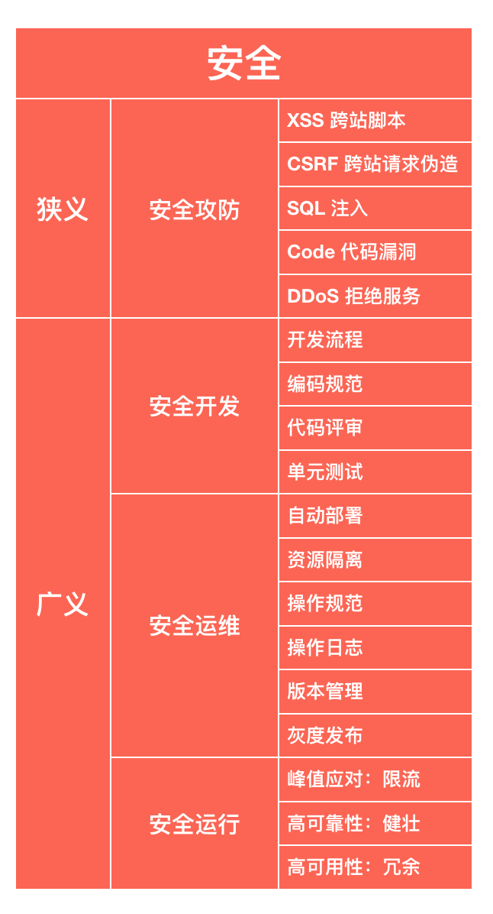</p>
<p>工程 “安全“ 的狭义和广义分类</p>
<p>狭义的安全，就是传统信息安全领域的 “安全攻防” 范畴。比如，客户端的跨站脚本攻击（XSS）、服务端数据库的 SQL 注入、代码漏洞以及针对服务可用性的拒绝服务攻击（DDoS）等。这个方面的 “安全” 含义是信息技术行业独有的，但前面电站例子中指的 “安全” 更多是 “广义” 层面的。</p>
<p>在程序技术上的 “广义” 安全范畴，我划分了三个方面：</p>
<ul>
<li>开发</li>
<li>运维</li>
<li>运行</li>
</ul>
<p><strong>安全开发</strong>，就是为了保障交付的程序代码是高质量、低 Bug 率、无漏洞的。从开发流程、编码规范到代码评审、单元测试等，都是为了保障开发过程中的 “安全”。</p>
<p><strong>安全运维</strong>，就是为了保障程序系统在线上的变化过程中不出意外，无故障。但无故障是个理想状态，现实中总会有故障产生，当其发生时最好是对用户无感知或影响范围有限的。</p>
<p>通过自动部署来避免人为的粗心大意，资源隔离保障程序故障影响的局部化；当一定要有人参与操作时，操作规范和日志保证了操作的标准化和可追溯性；线上程序的版本化管理与灰度发布机制，保障了若有代码 Bug 出现时的影响局部化与快速恢复能力。</p>
<p><strong>安全运行</strong>，就是为了应对 “峰值” 等极端或异常运行状态，提供高可靠和高可用的服务能力。</p>
<h2>效率</h2>
<p>效率，从程序系统的角度看，同样也是从 “开发”“运维” 和 “运行” 三个方面来考虑。如下图所示：</p>
<p></p>
<p>“效率”的划分</p>
<p><strong>开发效率</strong>，可以从 “个体” 和 “群体” 两个方面来看。</p>
<p>个体，就是程序员个人了，其开发效率除了受自身代码设计与编写能力的影响，同时还要看其利用工具的水平。更好的源码管理工具与技巧可以避免无谓的冲突与混乱；代码模板与开发框架能大幅度提升代码产出效率；而持续集成工具体系则能有助于快速推进代码进入可测试状态。</p>
<p>群体，就是一个团队，其开发效率最大的限制经常是架构导致的。如果你在一个工程项目上写过几年代码后，多半会碰到这样一种场景，代码库越来越大，而功能越改越困难。明明感觉是一个小功能变化，也要改上好几天，再测上好几天，这通常都是架构的问题，导致了团队群体开发效率的下降。</p>
<p>以后端服务架构技术演进的变化为例，从单体应用到面向服务架构思想，再到如今已成主流的微服务架构实践，它最大的作用在于有利于大规模开发团队的并行化开发，从而提升了团队整体的效率。理想情况下，每个微服务的代码库都不大，变化锁闭在每个服务内部，不会影响其他服务。</p>
<p>微服务化一方面提升了整体的开发效率，但因为服务多了，部署就变复杂了，所以降低了部署的效率。但部署效率可以通过自动化的手段来得到弥补，而开发则没法自动化。另一方面，每个微服务都是一个独立的进程，从而在应用进程层面隔离了资源冲突，提升了程序运行的 “安全” 性。</p>
<p><strong>运维效率</strong>，可以从 “检查”“诊断” 和 “处理” 三个方面来看。</p>
<p>一个运行的系统，是一个有生命力的系统，并有其生命周期。在其生命周期内，我们需要定期去做检查，以得到系统的 “生命体征” 的多维度信息数据汇总，以供后续的诊断分析。</p>
<p>运行系统的 “体征” 数据是在实时变化的，而且数据来源是多层次的，从底层的网络、操作系统、容器到运行平台（如：JVM）、服务框架与应用服务。当异常 “体征” 指标出现时，很难简单地判断到底哪里才是根本原因，这就需要关联的因果性分析来得出结论，最后智能地发出告警，而不是被告警所淹没。</p>
<p>准确地诊断之后，才能进行合适地处理。和治病不同，大部分的故障都可以通过常见的处理手段解决，极少存在所谓的 “不治之症”。而常见的线上处理手段有如下三类。</p>
<ul>
<li>恢复：重启或隔离来清除故障、恢复服务；</li>
<li>变更：修改配置或回滚程序版本；</li>
<li>限制：故障断路或过载限流。</li>
</ul>
<p><strong>运行效率</strong>，关键就是提高程序的 “响应性”，若是服务还包括其 “吞吐量”。</p>
<p>程序运行的高效率，也即高响应、高吞吐能力，所有的优化手段都可以从下面两个维度来分类：</p>
<ul>
<li>更多</li>
<li>更快</li>
</ul>
<p>负载均衡器让更多的机器或进程参与服务，并行算法策略让更多的线程同步执行。异步化、无锁化和非阻塞的算法策略让程序执行得更快，缓存与缓冲让数据的读写更快。</p>
<p>有时在某些方面 “安全” 和 “效率” 之间是相互冲突的，但工程技术的艺术性就恰恰体现在这冲突中的平衡上。</p>
<p>打个比方，如果你的程序就跑在你开的车上，那么“安全” 特性会让你开得更放心，“效率” 特性会让你开得更带劲。</p>
<p>做了多年程序工程的你，是如何看待工程的核心本质的呢？欢迎留言，一起探讨。</p>
<h1>37 过程：规模与协作——规模化的过程方法</h1>
<p>在学校时，你学习编程，写写课程作业的代码，但你想过真正的行业里，公司中的规模化开发方式是怎样的吗？在上一篇[《核心：安全与效率》]的文中，你应该还记得我讲的那个电站的例子，那么编写课程作业的代码就像搭建的 “酒精灯电站”，而工业级的规模化开发才是建设 “真实电站” 的方式。</p>
<p>工业级规模化的程序系统开发包括了一系列的过程，而这一系列过程的起点是：需求。</p>
<h2>需求与调度</h2>
<p>需求，有时会有很多不同的表达形式，包括：客户的诉求、用户的请求、老板的要求，但这些不同的表达形式，不一定是真正的需求。</p>
<p>客户的诉求，更多来自传统甲、乙方关系的场景，在软件工程过程中有一个子过程——需求工程——去对客户的诉求进行分析和提炼，并转化为需求文档。用户的请求，更多来自互联网 toC 的场景，通过洞察大量用户请求中的共性去提炼并转化为真正的产品需求。老板的要求，更多是因为老板也可能是你的产品用户之一，但这个用户的特殊之处在于，他为这个产品买单。所以，他的要求无论合理与否都能很容易地变成需要开发的需求。</p>
<p>正因为需求的来源多，表达形式也多，因而真实情况是 “需求” 似乎总是源源不绝，但是真正的需求往往隐藏在这些诉求、请求与要求的表象之下。这是关于 “需求” 的第一个困难点。如果我们总是能找出真正的需求，那么也许需求也就没那么多了。但现实往往是我们不能，那么需求过载的场景就会常常发生。</p>
<p>这时，你就会面临第二个困难，如何对过多的需求进行排序？</p>
<p>为什么需要排序？我们进行需求排序的原因是，在有限的资源下我们想要达到如下目标：</p>
<ul>
<li>最大化用户、客户和老板的整体满意度；</li>
<li>最大化价值与产出，让最多的资源投入到最有价值的需求上。</li>
</ul>
<p>只有当用户需求被快速地满足时，他们才会感到满意。但在有限资源限制的条件下，我们不可能让所有用户的需求都能被快速满足。面对这样的矛盾，我们也许可以学习、借鉴下<strong>操作系统的资源调度策略</strong>。</p>
<p>我用了好多年的 Mac 和 iPhone，发现它们相对同等资源配置的 Windows 和 Android 机，在满足用户使用的响应性方面要好得多，特别是在使用了几年之后，这种差距会更明显。</p>
<p>在同等硬件资源配置的情况下，Mac 和 iPhone 表现得更好，只可能是其操作系统的资源调度策略实现更优秀。通常，操作系统需要同时执行多个应用程序时，它的执行调度策略就会在多个应用程序间不停切换，有如下几种常见的调度策略：</p>
<ol>
<li><strong>先来</strong>先执行</li>
<li>执行起来<strong>最快</strong>的先执行</li>
<li>占用资源<strong>最少</strong>的先执行</li>
<li>释放资源<strong>最多</strong>的先执行</li>
<li><strong>高优先级</strong>的先执行</li>
</ol>
<p>当资源充足，只用策略 1 就足够了，但更多情形下需要综合后 4 种策略。比如：老板的要求天生自带高优先级，需要先执行；而一些小需求，优先级不高，但执行快，占用资源少，随着它们排队的等待时间延长，优先级可以逐步提升，以免消耗完用户的等待耐心，形成负面评价。</p>
<p>当用户同时运行的应用程序确实太多时，操作系统发现资源无论如何调度都不够了，它有一个选项是提供了资源消耗的监视器，来提示用户主动停掉一些同时运行的应用，而最后的底线是操作系统主动杀掉一些应用程序以释放资源，以保障系统还能正常地运转下去。那么我们在调度需求时，是否也能以透明的资源消耗监视提示用户主动控制需求或选择 “杀” 掉需求，然后还不降低用户的满意度呢？</p>
<p>需求调度，可以像操作系统一样运转，形成一个规模化的需求调度体系，并通过多种调度策略来平衡需求的响应性和投入产出的价值最大化。</p>
<h2>设计与开发</h2>
<p>紧接需求之后的过程是：设计与开发。</p>
<p>成为程序员后，你一开始可能会习惯于一个人完成系统开发，自己做架构设计、技术选型、代码调测，最后发布上线，但这只适合代码量在一定范围内的系统开发模式。在一定范围内，你可以实现从头到尾“一条龙”做完，并对系统的每一处细节都了如指掌，但当系统规模变大后，需要更多的人共同参与时，整个设计和开发的模式就完全不一样了。</p>
<p>一定规模的系统，下面又会划分子系统，子系统又可能由多个服务构成，而每个服务又有多个模块，每个模块包含多个对象。比如，我现在所在团队负责的产品，就由数个系统、十数个子系统、上百个服务构成，这样规模的系统就不太可能光靠一个人来设计的，而是在不同的层次上都由不同的人来共同参与设计并开发完成的。</p>
<p><strong>规模化的设计思路，一方面是自顶向下去完成顶层设计</strong>。顶层设计主要做两件事：</p>
<ul>
<li>一是去建立系统的边界。系统提供什么？不提供什么？以怎样的形式提供？</li>
<li>二是去划定系统的区域。也就是系统的层次与划分，以及它们之间的通信路径。</li>
</ul>
<p>今年世界杯期间，读到万维钢一些关于 “足球与系统” 的文章，感慨原来系统的顶层设计和足球运动十分类似。按文中所说，足球的科学踢法是：“球员必须建立 ‘区域（zone）’ 的观念，每个球员都有一个自己的专属区域”，通过区域的跑位来形成多样化的传球路线配合。</p>
<p>而系统的区域划分，也是为了让系统内部各部分之间的耦合降低，从而让开发人员在属于自己的区域内更自由地发挥。而在区域内的 “控球”“传球” 与 “跑位”，就更多属于开发人员个体能力的发挥，这个过程中区域的大小、边界都可能发生变化，进而导致区域之间的通信路径也跟随变化。这样的变化，就属于自底向上的演化过程。</p>
<p>所以，<strong>规模化设计思路的另一面，就是要让系统具备自底向上的演化机能</strong>。因为，自顶向下的设计是前瞻性的设计，但没有人能做到完美的前瞻性设计；而自底向上的演化机能，是后验性的反应，它能调整修复前瞻性设计中可能的盲点缺陷。</p>
<p>记得，我曾经看过一个视频名字大概是 “梅西的十大不可思议进球”，视频里的每一个进球都体现了梅西作为超级明星球员的价值，而在前面提及的万维钢的文章中，有一个核心观点：“普通的团队指望明星，最厉害的球队依靠系统”。其实二者并不矛盾，好的系统不仅依靠 “明星” 级的前瞻顶层设计，也指望 “明星” 级的底层演化突破能力。</p>
<p>所以，一个规模化的系统既要靠前瞻的设计视野，也依赖后验的演化机能，这样才可能将前瞻蓝图变成美好现实。</p>
<h2>测试与运维</h2>
<p>完成了设计与开发之后，系统将进入测试，最后发布上线进入运行与维护阶段。</p>
<p>在前面需求、设计与开发阶段的规模化过程中，都存在一个刚性扩展的问题，也就是说，如果提出的需求数量扩大一倍，那么需要去对接、分析和提炼需求的人员理论上也要扩大一倍；如果提炼出的需要进入开发的需求也翻倍，相应开发人员只增长一倍那已经算是理想情况了，这说明系统的正交与解耦性做得相当完美了，所有的开发都能并行工作，不产生沟通协调的消耗。</p>
<p>但真实的情况不会那么完美，需求的产生与爆发很可能是一种脉冲式的，而企业一般会维持满足需求平均数量的开发人员，当需求进入脉冲高峰时，开发资源总是不够，然后就会过载，进入疯狂加班模式。</p>
<p>开发完成后，进入测试与线上运维的循环阶段，这个阶段与前面阶段的不同之处在于：需求提炼、设计开发基本都只能由人来完成，而测试、运维的很多步骤可以通过制作工具来完成自动化过程。所以，这个阶段随着规模化过程实际可以是一个柔性扩展的阶段。</p>
<p>但它从来不是一开始就是柔性的，因为制作工具也有一个成本考虑。比如，在我做的这个系统发展的早期，系统架构简单、部署规模也很小，基本所有的测试与运维工作都是通过人肉来完成的，这样的效率也不算低，唯一的问题是对测试人员而言，大量的工作都是低水平的重复，不利于个人成长。</p>
<p>随着后来的业务快速增长，系统增长越过某个规模临界点，这时人肉负载基本饱和，效率已没法提升，制作工具是唯一的出路。你可能或多或少都知道一些现代化的工业流水线，而在软件开发过程中，“测试与运维” 的运转体系是最可能接近工业流水线方式的。</p>
<p>因此，以测试为例进行规模化的最佳方式，就是打造一条 “测试机器” 流水线，而我在[《转化：能力与输出》]一文中写到了关于打造 “机器” 的三个核心点，这里再强调一次：</p>
<ul>
<li>流程规则</li>
<li>工具系统</li>
<li>规范共识</li>
</ul>
<p>围绕这三个核心点，我们再来看看 “测试机器” 如何打造？</p>
<p>从开发提测，机器自动下载提测版本分支代码，进行构建编译打包，实施代码规范性检查测试，通过后发布测试环境，进行分层次的各类自动化专项测试。如：用户终端层、通信协议层、服务接口层、数据存储层的各项测试，全部通过后，生成相应的测试报告，进入下一步发布流程。这就是测试体系的“流程”，而“规则”就是其中定义的各种测试项检查约束。</p>
<p>上述流程中涉及的“工具系统”包括：代码规范检查工具、终端 UI 的自动化测试工具、通信协议与服务端接口调用的模拟工具、数据一致性校验工具、测试报告生成工具、测试 Bug 统计分析与收敛趋势等可视化展现工具，等等。</p>
<p>最后，“规范共识” 是整个团队对这个流程环节、里面具体规则的定义以及 Bug 分类等方面达成的共识，这决定了这台 “测试机器” 运转的协调性与效率。</p>
<p>测试通过后，发布到线上就进入了运维阶段，行业里已经有大量的关于 DevOps 的分享内容，而它的本质也就是打造了一台 “运维机器” 流水线，这和我上面描述的 “测试机器” 运转类同，只是有不同的规范共识、流程规则和工具系统，便不再赘述了。</p>
<p>到了规模化的测试与运维阶段，看一个团队的水平，就是看这台 “机器” 的制作水准与运转效率。</p>
<p>在程序系统的开发过程中，当系统的大小和复杂度到了一定的规模临界点，就会发生从量到质的转变，规模不同，相应的需求调度、设计开发、测试运维的过程也都不同了。</p>
<p>量级变了，逻辑就不一样了。</p>
<p>每一个具备一定规模的组织都有对应的规模化工程过程，而且这个过程的形成受公司文化、团队构成、组织架构，甚至业务特性共同决定。那你所在组织的规模化过程是怎样的？这个过程系统如何运作的？欢迎你在留言区分享。</p>
<h1>38 思维：科学与系统——两类问题的两种思维解法</h1>
<p>写了多年代码，做了好多的工程，不停地完成项目，但如果你一直仅仅停留在重复这个过程，那么就不会得到真正的成长与提高。你得从这些重复做工程的过程中，抽象提炼出真正解决问题的工程思维，用来指导未来的工程实践。</p>
<p>什么是<strong>工程思维</strong>？我从自己过往经验中提炼出的理解是：<strong>一种具备科学理论支撑，并成体系的系统化思维</strong>。做了多年的软件开发工程，碰到和解决了数不清的问题，最终这些问题，我发现稍微抽象一下，可以归为以下两类：</p>
<ol>
<li>可以简单归因的问题：属于直接简单的因果关系；</li>
<li>难以简单归因的问题：属于间接复杂的因果关系。</li>
</ol>
<p>上面的描述可能有点抽象，那具体该怎么理解呢？这里我分别举两个例子：线上有个 Bug，找到了有问题代码片段，需要一个优化实现方案来解决，这就是第一类问题，原因和结果非常明确清晰；线上老是出故障，而且反复总出意外故障，对于这个结果，它的原因是什么，这就很难简单归因了，就属于第二类问题。</p>
<p>对于这两类问题，我想讲讲两种不同的思维框架提供的解法。</p>
<h2>科学与理论</h2>
<p>第一类问题，现象清晰，归因明确，那么它唯一的难处就是为这个问题找到最优的解决方案。求解最优化问题，就需要科学与理论的支持，也即：<strong>科学思维</strong>。</p>
<p>先讲一个其他行业的故事：造船工程。很早以前，关于应该造多大的船，人们都是靠感觉摸索的。后来（十九世纪中期）有个英国工程师布鲁内尔（Brunel）意识到船应该尽可能造得大些，于是他设计了当时世界上最大的船。这是一艘挑战当时工业极限的船，该设计甚至还引发了当时社会激烈的辩论。</p>
<p>布鲁内尔的目标是建造一艘足够大的船，大到无需中途停留，直接能从英国开到印度，那么如此远的航程就需要有足够的货物与燃料（那时的燃料主要就是煤）的装载能力。而支撑他设计背后的理论却很简单，船的装载能力是体积决定的，跟船尺寸的立方成正比，而船航行受到的阻力则是和船底的面积成正比。所以，船越大，装载能力越大，但单位载重量的动力消耗却下降了，这就是为什么布鲁内尔要尽可能地造大船。</p>
<p>这就是科学理论给予造船工程的方向指引。吴军老师也曾在一篇文章《计算机科学与工程的区别》里指出：</p>
<blockquote>
<p>科学常常指出正确的方向，而工程则是沿着科学指出的方向建设道路；在工程中必须首先使用在科学上最好的方法，然后再作细节的改进。</p>
</blockquote>
<p>我做在线客服系统时碰到一个问题和滴滴打车的匹配问题非常类似，打车是人和车的匹配，而咨询客服是人和客服的匹配。抽象来看，这个匹配的算法并不复杂，但因为涉及到非常具体且繁琐的业务规则，实现起来就有特别多业务逻辑，导致性能有问题。这就是软件工程现实中的第一类问题，需要找到优化方案。</p>
<p>对于这类问题的解法，就是先用计算机科学理论来分析其性能的复杂度边界与极限，而咨询分配就是在 N 个客服里进行挑选匹配，每次只匹配一个人，所以理论复杂度极限是 O(N)。只要 N 有限大，那么匹配的性能最坏情况就是清晰的。</p>
<p>理论分析给出了边界，工程实现则是建设道路，这就需要在边界里找到最短路径。在客服匹配问题的工程实现总考虑的方式是：最坏的情况是每次匹配都要遍历 N 次，最好的情况是 1 次，那么实现方案评估就是尽可能让最好的情况发生的概率最大化。假如你的实现方案 90% 的场景概率都发生在最好情况下，10% 的场景发生在最坏情况，那么整体性能表现可能就比最坏情况高至少一到数个量级。实际提高多少，这取决于 N 的大小。</p>
<p>而另一个工程实现考虑的维度是，如果每次匹配中有 M 个高消耗操作，那么进一步的优化方式就是如何减少 M 的个数或降低每次操作的消耗。</p>
<p>这就是用科学思维来指导工程实践，科学理论指出方向，探明边界，工程实践在边界的约束范围内修通道路，达成目标。正如前面故事中，造船理论往大的方向走也有其极限，因为除了能源利用率的经济性外，越大的船对其他建造、施工和运营方面也会带来边际成本的提高，所以也就没法一直往大里造，这就是工程现实的约束。</p>
<p>所以，理论的意义不在于充当蓝图，而在于为工程设计实践提供有约束力的原理；而工程设计则依循一切有约束力的理论，为实践作切实可行的筹划。</p>
<p><strong>简言之，科学理论确定了上限，工程实践画出了路线</strong>。</p>
<h2>系统与反馈</h2>
<p>第二类问题，结果明确，但归因很难，那么找到真正的原因就是第一个需要解决的难点。这时，我们就需要用另一种思维方式：<strong>系统思维</strong>。</p>
<p>回到前面举的例子，线上老是出故障，而且反复出意外故障。如果简单归因，查出故障直接原因，发现是代码写得不严谨，实现有不少漏洞和问题，仔细看就能分析出来，但触发条件罕见不容易测出来，于是提出解决方案是增加代码评审（Code Review）流程来保障上线代码的质量。</p>
<p>关于代码评审就是我从业多年来遇到的一个非常有意思的问题，大家都觉得它有用，也都说好，但很多时候就是执行不下去。因为它不是一个简单问题，而是一个系统问题。万维钢在《线性思维与系统思维》这篇文章里，给出了一些系统问题的典型特征，其中有两条是这样说的：</p>
<ul>
<li>多次试图解决一个问题，却总是无效；</li>
<li>新人来了就发现问题，老人一笑了之。</li>
</ul>
<p>我呆过的很多公司和团队，都想推行代码评审，最后都无果而终。反而是一些开源项目，还搞得有声有色。还是万维钢的那篇文章里，其对系统的定义：“所谓系统，就是一个由很多部分组成的整体，各个部分互相之间有联系，作为整体又有一个共同的目的。” 简单想想就会发现公司项目所在的 “系统” 和开源项目所在的 “系统” 其构成就完全不同，而且目的也不同。</p>
<blockquote>
<p>一个系统中可以有若干个正反馈和若干个负反馈回路，正反馈回路让系统或者增长、或者崩溃，是要偏离平衡，负反馈回路则尽力保持系统的平衡。</p>
<p>对你想要解决的这个问题而言，可能就有一个回路，正在起主导的作用！如果你能发现在系统里起主导作用的回路是什么，你就抓住了系统的主要矛盾，你就找到了问题的关键所在。</p>
</blockquote>
<p>曾有行业大牛在前公司有很好的代码评审传统和流程规范要求，自己也坚决支持代码评审。后来去了另一个同行差不多规模的公司，进入到团队后想推行代码评审时，就遭遇了巨大的阻力，不止是 “老人呵呵，一笑了之” 了，还甚至被公开地反对了。显然，对于代码评审这个问题，他的前后两家公司拥有完全不同的正、负反馈回路，以其个体之力，想要去改变已有的反馈回路，其实相当艰难。</p>
<p>我自己也曾在团队做过一些尝试，但一直找不到合适地建立正反馈回路的好方法。引入严格的代码评审流程，其负反馈回路立刻发生作用：更多的工作量，更多的加班等。负反馈，团队立刻就能感知到，而其正反馈回路发生作用带来好处却需要一定的时间。而且另一方面，建立新的回路或者摆脱当前的循环回路，还需要额外的能量来源，也即激励。</p>
<p>在解决系统问题，建设正反馈回路上也有过成功的样本。比如，在公司层面要求工程师产出专利，这对个体来说就是额外的负担，而负担就是负反馈。为了降低负反馈回路的作用，可以让专利和晋升到一定级别关联上，并增加专门培训来降低写作门槛；专利局每通过一份专利，就奖励一笔奖金（几千到上万），甚至没通过都能奖励几百块，这些就是建立正反馈循环回路的激励能量。</p>
<p>另外一个例子是，为了让程序工程师们更有分享的意愿和提升表达能力，就出一个规则，把分享和每年的晋升提报关联起来，本质就是提供了潜在可能的经济激励。经济学原理说：人会对激励做出反应。是的，经济学原理很有效。</p>
<p>软件工程，是研究和应用如何以系统性的、规范化的、可度量的过程化方法去开发和维护软件；而实际上软件开发本身就是一个系统工程，里面存在很多没法简单归因的第二类问题，它们没有通用的解法，只有通用的思维。</p>
<p>一个优秀的工程师应该同时具备科学思维和系统思维，它们是工程思维的两种不同表现形态：<strong>系统思维洞察问题本质，科学思维发现最优解法</strong>。</p>
<p>学完本章，你也可以去细心观察你周围的环境，看看都有哪些问题，属于哪类问题，以及你能发现它们的本质吗？欢迎你留言分享一二。</p>
<h1>39 职业倦怠：如何面对？</h1>
<p>从今天起，咱们专栏即进入第 4 个大主题——“<strong>徘徊：道中彷徨</strong>”。成长的途中，我们总会面临很多的困扰与惶惑，这些困扰和彷徨很多都关乎选择，只有了解并认清这类困惑，我们才可能做出最合适的选择。</p>
<p>职业生涯的路上，每个人都会碰到<strong>职业倦怠期</strong>，我也不例外。曾经好几次，我都陷入其中。如今从中摆脱出来后，我就想尝试搞清楚这样一种状态的根源，思考一种方法来缩短它持续的时间，或者说增加它出现的时间间隔。</p>
<p>那职业倦怠到底是怎样的一种感受呢？</p>
<h2>倦怠感</h2>
<p>1974 年，美国临床心理学家弗罗伊登贝格尔（Herbert J. Freudenberger）首次提出“<strong>职业倦怠</strong>”的概念，用来指<strong>人面对过度工作时产生的身体和情绪的极度疲劳</strong>。</p>
<p>职业倦怠感想必你也不陌生，一般将可以明显感知到的分为两种。</p>
<p><strong>一种是短期的倦怠感</strong>。它出现的状态，可以用两个英文单词来形象地表达：Burnout（燃尽，精疲力尽）和 Overwhelm（难以承受）。</p>
<p>作为程序员的我们想必最能感知这样的状态，因为我们处在现代信息工业时代的最前沿，快节奏、高压力、大变化的环境很是常见。应对这样的环境，我们就需要更多的 “燃料” 和更强的承受力。但有时，环境压力突然增加，短期内超出了我们的负载能力，难免出现“燃尽”（Burnout）的时刻，并感到难以承受（Overwhelming）。</p>
<p>此时，就进入了短时的倦怠期。这种短期的倦怠感觉其实和感冒差不多常见，年年都能碰上一两次，应对的办法其实也很简单：休个年假，脱离当前的环境，换换节奏，重新补充 “燃料”，恢复精力。就像感冒，其实并不需要什么治疗，自然就能恢复。人，无论生理还是心理，都是一个 “反脆弱” 体，“凡不能打垮我的，必使我更强大”。</p>
<p><strong>另一种更可怕的倦怠感是长期的</strong>，它与你对当前工作的感受有关。</p>
<p>有些人把 “上班” 看作工作的全部，那么这样的人去上班一般都是被动的、勉强的。这样的人就是普遍存在的 “混日子” 的上班族，虽不情愿，但又没有别的办法，毕竟不能失去这份工作的收入。而这种 “混日子” 的状态，其实就是处在一种长期的职业倦怠期。</p>
<p>其实真正的工作，应该是一种积极的、有目标的事情，它能让我们实现对自我和他人的价值，并且乐在其中。但即使一开始我们是在做这类真正的 “工作”，时间久了后，也难免碰到职业倦怠感，这时我们可能就会困惑：难道我已不再热爱现在的工作了？对于这种状态，有一个说法是这样的：</p>
<blockquote>
<p>倦怠，意味着你在这一关打到头了，而新的一关的钥匙，就在你手上。</p>
</blockquote>
<p>遇到这种情况的本质，其实是我们自己的 “工作区” 发生了转移和变化，从而脱离了原来的 “工作态”，碰到了倦怠感。</p>
<p>当倦怠感出现时，“工作态” 就隐退了；而为了消除倦怠感，我们就需要找回 “工作态”。</p>
<h2>工作态</h2>
<p>工作态，如其名，是一种工作的状态，一种让我们在工作中感觉到美好的状态（beautiful state）；是做我们喜欢的工作时表现出来的一种状态。</p>
<p>每周我们有五个工作日，但不代表我们每个工作日的工作时间都能处在 “工作态”。甚至很多时候我们都无法处在 “工作态”，但却又必须在某个时间点前完成工作。这样的日子久了，就难免会滋生倦怠。</p>
<p>据说有一半的人，每天下班回家上床睡觉前，都会想想诗和远方，早上起床都有一种不想再去上班的冲动；当感到这种冲动时，差不多就进入了工作倦怠期，并对当前的工作产生了倦怠感。</p>
<p>去年有部电影叫《魅影缝匠》，主角是一名裁缝。他每天起床后，从早餐时刻开始就进入了他的 “工作态”，排除和避免一切干扰，专注于他的服装设计工作。其实，这个电影本身的故事并不算吸引我，只是电影中这位缝匠的 “工作态” 深深地打动了我。也许，这就是一种同为创作性工作带来的共情吧。</p>
<p>现代心理学上有个概念叫 <code>Flow</code>，一般译作 “心流”，也是一种工作状态，它是人在专注进行某些行为时所表现出的心理状态，比如艺术家创作时的状态。在此状态下的人们，通常不愿被打扰，也比较抗拒中断，个人的精神力将完全投注在某种活动上，同时还会伴随高度的兴奋与充实感。</p>
<p>那么 “工作态” 和心流有何不同？“工作态”，其实是我自己发明的一个概念，它的定义覆盖的期限更长久，就像长跑中的节奏；而心流的定义更像是一种 “工作态” 的局部过程表现，像一次短程冲刺。你没法长时间地处于心流状态，但在相当长的一段时间周期内，你可以处在 “工作态” 中，就像电影中那位缝匠，几十年如一日的，每天早晨都会自动进入那样一种 “工作态”。</p>
<p>职业倦怠期，显然是与 “工作态” 互斥的一种状态。所以，要脱离职业倦怠期，最有效的方式就是进入 “工作态” ；而进入 “工作态” ，最核心的地方在于找到自己的 “工作区”。</p>
<h2>工作区</h2>
<p>关于工作区，我想借用下面一张图来展示。</p>
<p>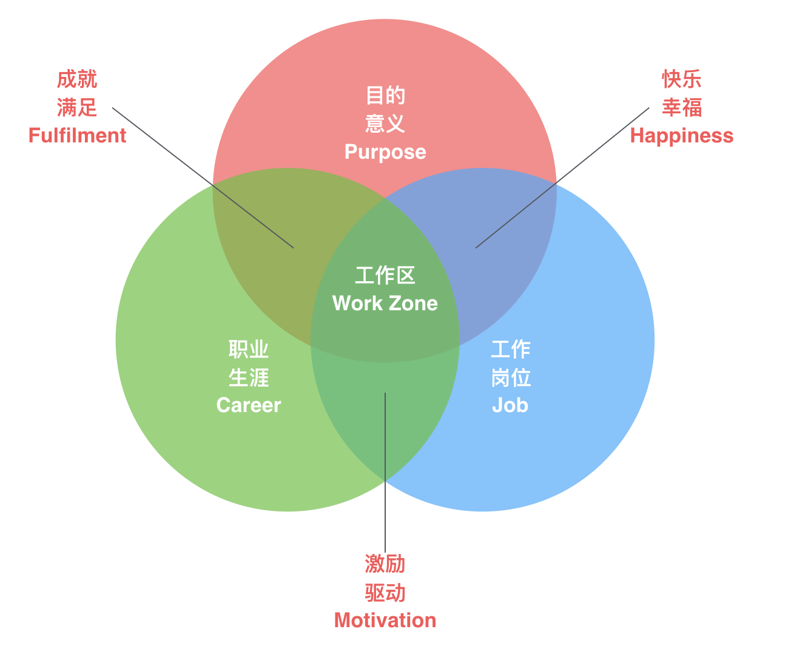</p>
<p>工作的“三区域”图</p>
<p>“工作区” 的概念不是我发明的，其原始概念图来自<a href="https://liberationist.org/change-tools/the-work-zone">国外一个站点</a>，我将其翻译和重绘了一下。其中定义了关于工作的三个区域，也就是说每一份工作都包含了这三个方面：</p>
<ul>
<li>目的意义 Purpose</li>
<li>职业生涯 Career</li>
<li>工作岗位 Job</li>
</ul>
<p><strong>目的意义</strong>，这是工作的终极之问。它决定了你的很多选择，以及你接受什么、拒绝什么，是工作愿景背后的灵魂所在。每个人工作都会有自己的目的与意义，而且还会随着工作过程发生变化（或者说进化更合适些）。追寻目的与意义，这可能是你、我一生的工作。</p>
<p><strong>职业生涯</strong>，是个人一生职业愿望的追寻过程。它由长期目标驱动，是追寻 “目的意义” 的一条你所期望的路径。而这条路径并不唯一，它因人而异，因你的 “目的意义” 而异。它构建在你工作过程中的所有经历、经验、决策、知识、技能与时运的基础之上。</p>
<p><strong>工作岗位</strong>，这不过是你现在上班的地方，包括了位置、角色、关系、职责与薪酬的总和。</p>
<p>这三个区域会有交集，这里我举个实际的例子。假如你工作的 “目的意义” 非常现实，就是希望有更多的收入改善家庭生活，住更大的房子，开更好的车。而现在的 “工作岗位” 能够提供这样让你满意的收入水平，那么你就会感到 “快乐幸福”。</p>
<p>而若你对 “职业生涯” 路径的期望是从程序员到架构师，甚至再到 CTO，当前的 “工作岗位” 能提供这样的发展路径，那你就会充满 “激励驱动”。显然，职业生涯一路达到 CTO，收入水平会更高，与你的现实 “目的意义” 相符合，那你就会感到 “成就满足”。</p>
<p>如图中所示，这三者相交的那个位置，就是你的 “工作区”。在这个区域内，工作让你有驱动力，感到快乐，充满成就感。找到了 “工作区”，很自然就会进入 “工作态”。</p>
<p>当职业倦怠时，自然是远离了工作区，这时很容易产生的一个决策是：换一份工作。我曾经就做过这样的决策。换一份工作没有对错好坏之分，它能改变你的工作岗位，甚至也能改变你的职业生涯路径，但它唯一不能改变的就是你对 “目的意义” 的思考与认识。</p>
<p>做自己所爱，是对的；爱上自己所做，也是对的，关键就是要找到什么在真正驱动你前进。</p>
<p>丹麦哲学家索伦·克尔凯郭尔（Søren Kierkegaard）说过一句话：</p>
<blockquote>
<p>Life can only be understood backwards; but it must be lived forwards.</p>
<p>只有向后回首时才能理解生活，但生活却必须向前。</p>
</blockquote>
<p>当你回首职业生涯的来路时，终于理解了职业倦怠，但前路之上，还会碰到它，而你已经知道该如何面对它了，对吧？</p>
<h1>40 局部最优：如何逃离？</h1>
<p>之前看过一些关于算法方面的书，提到了一些最优化问题。最优化问题在现实中非常常见，比如工程设计中，怎样选择设计参数，使得设计方案能以尽量低的成本预算满足设计要求。而近年来热门的机器学习建模也是一个最优化问题，基于一组已知的数据去构建一个模型，让这个模型去适配未来未知的数据达到最优，然后求解关于这个模型的参数。</p>
<p>在求解最优参数的算法中，很多都有一个缺陷，就是容易达到一种局部最优点，即：<strong>参数的选择尝试收敛到了一小块范围内，无论再怎么尝试变化都没法取得更优的结果</strong>。而从全局来看，这并不是最优的选择，但算法此时就进入了一种尝试的徘徊状态，这就是局部最优点，但算法并不知道这到底是不是全局最优的。</p>
<p>对于我们这些自诩智能的人，在成长的路上，其实也经常陷入这样的成长局部最优点。</p>
<h2>爬山</h2>
<p>关于成长最形象的类比便是爬山，但爬到山顶的路并不总是向上的。</p>
<p>我长居成都，每过一阵就会去爬一回成都附近的青城山。像青城山这种著名景区的山，总有很多路标告诉你，沿着这条路一直走，你就能到达山顶。即使这条路有时会向下走，让你产生下山的感觉，但你也不会动摇，因为路标已经告诉你了，山顶就在前方，那里才是你的目的地。虽然成长这一路就像爬山，成长路上的感觉也和爬山相似，但不同的是，成长的路上并没有清晰的路标告诉你山顶在哪里。</p>
<p>有时你很幸运地爬上了一个高点，你并不知道这个高点是否就是山顶了，因为再往前走，无论哪个方向的路都是向下的，你会心下疑惑：这是要下山了吗？</p>
<p>即便你明确知道了这个高点便是此山的山顶，有时也会遗憾地发现原来这山只有这么高啊。就像青城山名气虽大，但山并不高，海拔只有 1200 多米。你站在山顶，虽然是此山的最高点，但你知道这不过你成长路上的局部最优点，继续前行，则不可避免地先要下山。</p>
<p>爬山的全局最优点，应该是珠峰顶，但不是所有人都能爬得上去的。每个人都有自己期望的一个高度，比如我登高爬山是想看看云海，但青城山的高度还不够，也许峨眉山（海拔 3100 米）就够了。</p>
<p>我们在成长（爬山）的路上，会进入局部最优点。一方面可能是 “山形” 所致，要继续上山的路需要先向下走，而向下的疑虑又会让我们徘徊不前。另一方面，可能是此 “山” 只有这么高了，就像青城山，你想看云海，可能就得换一座山了。</p>
<h2>徘徊</h2>
<p>所有的局部最优点，都意味着我们爬到了一定阶段，在这个位置徘徊不去，恋恋不舍。</p>
<p>十多年前，我刚毕业找工作那时，外企在国内的吸引力可以相比今天互联网行业的头部企业。我也想进入外企这座 “山”，屡屡尝试，但每次都卡在英语口语面试，屡屡失败。同寝室的另一位同学则顺利进入一家国外的电信行业外企，获得的 offer 薪酬比我们平均高了 50%，让人羡慕不已。</p>
<p>数年后，我们同学再次相聚，听闻该外企在中国已经被当时的华为、中兴竞争的步步退缩，业务缩水不少，已有裁员迹象。当时，同学会上，都劝这位同学早做打算，但他表现为瞻前顾后，徘徊不决，还想看看情况。一年后，我当时也正在做浙江省的电信项目，该同学所在公司的系统正被我当时的公司取代，没多久就听闻该公司进入了破产清算。</p>
<p>曾经领先的电信行业设备服务公司，就这样退出了市场。那位同学就算曾经站的位置再好，“山” 都塌了，何谈继续攀登。这样的情况，有时主动的转身，比被动的离开可能要从容得多。</p>
<p>而另一个朋友的故事，经历过后再回首一看，更让人扼腕叹息，可惜当时的我也是见识有限，给不了更好且更坚决的建议与支持。</p>
<p>那时，小米公司刚成立不到一年，第一款手机尚未发布，正处在快要井喷发展的扩张期，到处找人，正好也找到了我这位朋友。但朋友觉得自己所在公司也还不错，也能成长，正“爬山爬得不亦乐乎”，遂放弃。</p>
<p>过了两年，朋友又有了另一次机会，微信来了，给了机会，但她正考虑准备生孩子，同时又考虑在当前公司已经熟悉，且业务稳定，换新公司难免需要打破现状和当前的节奏，遂徘徊一阵，选择停留。</p>
<p>后来再看，以前公司的最高点，相比这两座 “山”，也就相当于它们的山脚下。但有时职业的路径就是这样，我们迷茫、徘徊，正是因为 “不识庐山真面目，只缘身在此山中”。跳脱不出来，看不见 “山” 的全貌。</p>
<p>审视下你的当下，再回顾下你的职业生涯，你花了多少时间和功夫来看清自己正在攀爬的 “山”，它的高点能让你去到你想去的地方吗？能让你看到你想看的风景吗？有时，我们大部分的努力，都没有什么进展和结果，仅仅是让我们能勉强呆在同一个地方。</p>
<p>看清了自己目标的高山，发现自己爬错了山，要舍得离开；停留在低矮的山上，无论再努力，看到的风景也有限。</p>
<h2>逃离</h2>
<p>如何知道你正站在局部最优点上徘徊呢？当你知道自己做得很好，但却没有感觉到成长与进步时，那么也许你就正在徘徊了。</p>
<p>在我的成长路上，也经历过一些徘徊点，这里我分享几个这一路上关于逃离的故事。工作早期，我做银行业的企业软件开发，被外派到了客户公司的项目组。在那里，不仅仅需要写程序、查 Bug，还需要兼顾从售前技术咨询、需求分析谈判到售后技术支持，甚至包括客服咨询解答都要涉及。正常的白天（朝九晚五）是没有一刻安静的时间能写写代码的，都是在客户下班后才能有个安静时段做做编码的事情。</p>
<p>一年后，我有些困惑，因为我感觉自己做的事情太杂，但似乎又没一样东西做精、做深的。当时的想法是以技术立身，一年下来却不免惶惑。我感觉自己选错了山，没必要继续爬下去，因为我已经看到了当时大我十岁的项目经理也许就是这座山的一个局部最优点。一年后，我选择了逃离。</p>
<p>之后，该怎么选下一座山？第一考虑自然是想离技术更近，做的更纯粹一些，另一个无法免俗的考虑自然还是希望收入也能提高一些。如今回想起来，当时为了一千块的差距，纠结了半天也不免哑然失笑。最后的选择，其实也是马马虎虎，运气好的一面是选对了技术，这次不做项目，做产品了，作为程序员在里面做的工作更纯粹了；运气差的一面是，还是没选对行业。</p>
<p>从金融行业软件开发转到了电信行业软件开发，而当时一个新的行业——互联网，正方兴未艾。相比之下，当时的电信行业应该正在迅速步入成熟期，拥有成熟度最高且用户流量也最大的信息化系统。一入此 “山” 中，便埋头修炼技术，熟悉行业业务，直到数年后，蓦然发现似乎又到了一个局部最优点：技术无法再快速进步了，业务领域也已经熟得不能再熟了。</p>
<p>在原地徘徊了一段时间后，我选择了第二次逃离，但这次困惑更大。我换了一个城市，在这里找了好几个月工作，见了很多很多的 “山”，却发现居然没有一座 “山” 乍一看比之前的更高、更大，顶多和之前差不多。</p>
<p>我有些沮丧，我只是不愿又重新立刻去爬一次差不多的山。就像有次一早爬青城山，下午回到山脚，有人问“谁愿意再爬上去一次”一样，当然没人愿意。但如果山顶有一百万，再爬上去就能得到呢？我想这样也许会有不少人愿意吧。但现实的生活是，有时会让你迫不得已重新爬上刚下来的“山”，但“山顶”却没有任何额外的奖励。</p>
<p>在我的故事中，我一次次逃离，是为了什么？因为失去了成长的感觉。每一座 “山” 刚开始爬时，你会对它的风景充满新奇，会有一条陡峭的上升之路，之后慢慢失去了新奇感，而很多工作任务渐渐变成了自动化的处理，不需要学习新的技能，失去了有意识的反思，从而让成长停滞。</p>
<p>当然，逃离，不一定都是换一座 “山”，也有可能是换一种爬山的方式，找到一条新的路。</p>
<p>在日常工作中，你可以尝试问问自己，对于十年后而言，现在的工作和事情，哪些会是很重要的？哪些会让你的技能变得更好？这就需要你有意识地试图在一些你已经知道如何做的事情上，再去做得更好。如果没有这种有意识的尝试与努力，很可能你就还在原地依赖过往的经验和技能自动化地完成同样的事情。</p>
<p>算法进入了局部最优解，通常都是通过在环境参数中引入一些震动来帮助算法脱离，继续寻找更优点，而成长的路何尝不是呢？</p>
<p>有时，有人会同时面对好几座山都想爬，但因为种种原因（主要还是生活所迫）只能爬其中一座。当你站在你选择的这座山的一个高点，远远看到曾经放弃的山峰，会感到徘徊遗憾么？</p>
<p>进入局部最优，徘徊于局部最优，逃离局部最优，都是你的选择。而站在局部的最优点，走出徘徊的第一步，总是从下山开始，而这样的选择并不容易。</p>
<p>最后，能否分享一下：如今你正在爬怎样的“山”？爬到了什么位置？以及你是如何选择的？</p>
<h1>41 沟通之痛：如何改变？</h1>
<p>沟通问题，一直都是程序员的痛点。</p>
<p>隔壁专栏（左耳听风）的陈皓以前在他的博客上写过一篇文章叫《技术人员的发展之路》，里面提及职业发展到一定阶段，也许你就会碰上一些复杂的人和事，这种情况下他写道：</p>
<blockquote>
<p>这个时候再也不是 Talk is cheap, show me the code! 而是，Code is cheap, talk is the matter!</p>
</blockquote>
<p>这里的 Talk 其实就是沟通，在工作中你要是留心观察，就会发现很多沟通问题，比如，跨团队开会时常发生的一些分歧和争论。沟通，越发成为一件重要的事，至少和写代码同等重要；沟通清楚了，能让我们避免一些无谓的需求，少写不少无效的代码。</p>
<p>然而现实中， 沟通问题，有时却被作为程序员的我们有意或无意地回避与忽略了。面对沟通问题，我们该如何看待和分析这个问题，并做出一些改变呢？</p>
<h2>一、木讷与沉默</h2>
<p>木讷与沉默，这两个名词似乎已变成了程序员的标签，它们形象地体现了程序员在沟通中的表现。</p>
<p>在程序员的世界里，沟通的主要场景可能包括：与产品经理沟通需求，与测试同学推敲 Bug，与同行交流技术，给外行介绍系统，还有和同事分享工作与生活的趣闻，等等。然而，有些程序员在分享趣闻时，与谈需求或技术时的表现大相径庭，刚才明明还是一个开朗幽默的小伙，突然就变得沉默不语了。</p>
<p>沉默有时是因为不想说。特别在沟通需求时，有些程序员默默不言，但心里想着：“与其扯那么多，倒不如给我省些时间写代码！”然而，程序员写出的代码本应该是公司的资产，但现实中代码这东西是同时带有资产和负债双属性的。</p>
<p><strong>需求没沟通清楚，写出来的代码，即使没 Bug 将来也可能是负债</strong>。因为基于沟通不充分的需求写出来的代码，大部分都是负债大于资产属性的，这最后造成的后果往往是：出来混都是要还的，不是自己还就是别人来还。</p>
<p>有些程序员可能会争辩道，“与人沟通本来就不是我们所擅长的，再说了我们也并不是因为热爱跟别人聊天才做软件开发这一行的。”这个言论很有迷惑性，我早年一度也是这么认为的。</p>
<p>我毕业去找工作那年，外企如日中天，所以我也去了当时心中很牛的 IBM 面试。面试过程中的大部分交谈过程和内容现在我都记不清了，但就有一个问题至今我还记忆犹新。面试经理问我：“你是喜欢多些跟人打交道呢，还是跟电脑打交道？”当时的我毫不犹豫地回答：“喜欢跟电脑打交道，喜欢编程写代码，而且我自觉也不擅长和人打交道。”</p>
<p>然后，我就被淘汰了。后来我才明白了，其实当时的这类外企挂着招工程师的名义，实际需要的更多是具有技术背景和理解的售前技术支持，因而就需要所招之人能更多地和人沟通去解决问题，而不只是写代码解决问题。</p>
<p>结合我自己多年的工作经历和经验来看，即便你仅仅只喜欢写代码，那么和人的沟通能力也依然是你必须跨过去的门槛。《计算机程序的结构与解释》有云：“程序写出来是给人看的，附带能在机器上运行。”</p>
<p>其实，写代码本身也是一种沟通，一种书面沟通。沟通从来都是个问题，书面沟通也同样困难。</p>
<h2>二、争论与无奈</h2>
<p>程序员最容易产生沟通争论的地方：<strong>沟通需求</strong>和<strong>沟通技术方案</strong>。</p>
<p>在程序员的职业生涯路上，我们不可避免地会碰到和同事关于技术方案的争论。我从中得到的教训是：千万不要让两个都自我感觉很牛的程序员去同时设计一个技术方案。</p>
<p>假如不巧，你已经这么干了并得到了两个不同的方案，那么记住，就别再犯下一个错：让他们拿各自的方案去 PK。因为这样通常是得不到你想要的“一个更好的方案”，但却很可能会得到“两个更恼怒的程序员”。</p>
<p>既然分歧已经产生了，为了避免无谓的争论，该怎么解决呢？</p>
<h3>1. 以理服人</h3>
<p>首先，把握一个度，<strong>对事不对人</strong>，切勿意气用事。</p>
<p>有些程序员之间的分歧点是非常诡异的，这可能和程序员自身的洁癖、口味和偏好有关。比如：大小写啦、命名规则啦、大括号要不要独立一行啦、驼峰还是下划线啦、Tab 还是空格啦，这些都能产生分歧。</p>
<p>如果你是因为 “该怎么做某事或做某事的一些形式问题” 与他人产生分歧，那么在很多情况下，你最好先确定分歧点是否值得你去拼命维护。这时，你需要判断一下：技术的 “理” 在什么地方？这个 “理” 是你值得拼命坚守的底线不？用这个 “理” 能否说服对方吗？</p>
<p>我所理解的技术的 “理” 包括：先进性、可验证性、和团队的匹配性、时效性、成本与收益。另外还有一些不合适的“理”，包括：风格、口味、统一、政治等。</p>
<p>不过有时候，有“理”也不代表就能搞定分歧，达成一致。毕竟林子大了，不讲“理”的人也是有的，那么，就需要换一种方式了。</p>
<h3>2. 以德服人</h3>
<p>分歧进入用 “理” 都无法搞定时，那就是应了那句古词：“剪不断，理还乱”。</p>
<p>这时继续“理”下去，不过都是互相耍混罢了。“理” 是一个需要双方去客观认可的存在，而越“理”越乱则说明双方至少没有这种客观一致性的基础，那就找一个主观的人来做裁决吧。</p>
<p>这个人通常就是公司所谓的经验丰富、德高望重的“老司机”了，并且双方也都是认可的，比如架构师之类的。但是这类主观裁决也不一定能保证让双方都满意，有时实力相当的技术人也容易产生类似文人相轻的状况。不过看在“老司机”的 “德” 面上，也能勉强达成一致。</p>
<p>“老司机”裁决最好站在他所认同的 “理” 这个客观存在上，这是最好的，不过这也取决于“老司机”的工作素养和价值观了。</p>
<h3>3. 以力服人</h3>
<p>最差的状况就会走到这一步，特别在跨大部门的沟通中。</p>
<p>技术方案无法达成一致，也没有一个跨两个部门的有德之人可以转圜化解，就会升级到这个地步。最后就是靠粗暴的权力来裁决，看双方部门老大或老大的老大，谁更有力或给力。一般来说，非关键利益之争实在没有必要走到这一步了。</p>
<h2>三、认识与改变</h2>
<p>做出改变的第一步是要能认识到，否则改变不可能发生。</p>
<p>程序员会认识到沟通很重要，有时甚至会比写代码更重要吗？著名的技术型问答网站——Stack Overflow 的两位创始人杰夫·阿特伍德（Jeff Atwood）和乔尔·斯波尔斯基（Joel Spolsky）都对此有正面的认识和见解。</p>
<p>杰夫说：</p>
<blockquote>
<p>成为一名杰出的程序员其实跟写代码没有太大关系。</p>
<p>做程序员确实需要一些技术能力，当然还要有坚韧不拔的精神。</p>
<p>但除此之外，更重要的还是要有良好的沟通技巧。</p>
</blockquote>
<p>乔尔的观点是：</p>
<blockquote>
<p>勉强过得去的程序员跟杰出程序员的不同之处，不在于他们掌握了多少种编程语言，也不在于他们谁更擅长 Python 或 Java。</p>
<p>真正关键的是，他们能不能把他们的想法表达清楚，杰出的程序员通过说服别人来达成协作。</p>
<p>通过清晰的注释和技术文档，他们让其他程序员能够读懂他们的代码，这也意味着其他程序员能够重用他们的代码，而不必重新写过。</p>
<p>要不然，他们代码的价值就大打折扣了。</p>
</blockquote>
<p>按照程序员解决技术问题的习惯，就是把一个大问题拆解为多个部分的小问题，那这里我们也对沟通做下拆解，它包括三个方面：</p>
<ul>
<li>内容</li>
<li>形式</li>
<li>风格</li>
</ul>
<p><strong>从内容上看</strong>，虽说你想沟通的本质是同一样东西或事情，但针对不同的人，你就需要准备不同的内容。比如，同内行与外行谈同一个技术方案，内容就是不同的。这里就需要你发挥同理心和换位思考的能力。保罗·格雷厄姆（Paul Graham）曾在他的书《黑客与画家》中写道：</p>
<blockquote>
<p>判断一个程序员是否具备 “换位思考” 的能力有一个好方法，那就是看他怎样向没有技术背景的人解释技术问题。</p>
</blockquote>
<p>换位思考本质上就是沟通技巧中的一种。</p>
<p><strong>从形式上看</strong>，沟通其实不局限于面对面的谈话。面对面交谈是一种形式，书面写作又是另外一种形式，连写代码本身都是在和未来的自己或某个你尚未谋面的程序员沟通。</p>
<p>程序员确实有很多都不擅长面对面的沟通形式。面对面沟通的场景是很复杂的，因为这种沟通中交流传递的载体不仅仅是言语本身，眼神、姿态、行为、语气、语调高低，甚至一种很虚幻的所谓“气场”，都在传递着各种不同的信息。而大部分人都不具备这种同时控制好这么多传递渠道的能力，也即我们通常说的“缺乏控场能力”，这里面隐含着对你其他能力的要求，比如：临场应变、思维的活跃度与变化等。</p>
<p><strong>从风格上看</strong>，不同方式和场景的沟通可以有不同的风格。比如面对面沟通，有一对一的私下沟通，风格就可以更随性柔和些；也有一对多的场景，比如演讲、汇报和会议，风格就要正式一些，语言的风格可能就需要更清晰、准确和锐利一些。</p>
<p>沟通之难就在于清晰地传递内容和观点。当你要向其他人详细解释某样东西的时候，你经常会惊讶地发现你有多无知，于是，你不得不开始一个全新的探索过程。这一点可以从两个方面来体会：</p>
<ol>
<li>你只需要尝试写点你自认为已经熟悉掌握的技术，并交给读者去阅读与评价。</li>
<li>每过一段时间（比如，一个季度或半年）尝试去总结，然后给同事分享下你工作的核心内容，再观察同事们的反应和听取他们的反馈，你就能体会到这一点了。</li>
</ol>
<p>所以，沟通改变的第一步就是从考虑接收方开始的，看看接收方能吸收和理解多少，而非发送了多少。而沟通问题的三个方面——内容、方式与风格——的考虑，都是为了让接收更方便和容易。</p>
<p>江山易改，本性难易，有时候我们做不到就在于这一点。但现实并不要求程序员成为所谓的沟通达人，只是需要主动认识到身边的沟通问题，去进行理性和逻辑地分析、拆解并做出适当的调整。</p>
<p>从认识我们的本性开始，控制情绪，从而去规避无奈的争论；认识清楚沟通问题的本质是要方便接收，达成共识，保持换位思考和同理心，改变自会发生。</p>
<p>关于沟通的各种形式，每个人可能都有自己擅长和偏好的方面，比如我就更擅长文字沟通，而不擅长一对一当面沟通，那么你呢？</p>
<h1>42 技术停滞：如何更新？</h1>
<p>我们从开始学习程序，到工作十来年，中间可能会出现几次自我感觉技术停滞了。而在这个过程中，我们也会不断地学习很多新技能，但而后其中的不少也会被淘汰在时间的旅程中。</p>
<p>一方面，我们在不断地打磨、提升技能，去解决工作中的问题，但久而久之，就会发现技能的提升速度越来越慢，竟渐至停滞，感觉不到进步了。另一方面，程序员所处的这个行业，技术的变化很快，潮流此起彼伏，难免产生技能焦虑。</p>
<p>有时，我们会不免幻想要是学会什么屠龙之技，从此高枕无忧，该多好！但这终究只是幻想，哪里又有什么屠龙之技呢？那面对技术停滞，技能过时，又该如何保持更新，与时俱进？</p>
<h2>技术停滞</h2>
<p>技术停滞是如何发生的？</p>
<p>程序员，最重要的就是编程技能。每天的工作可能就是编程写代码，在早期还不够熟练时，你还能感觉到进步，这种进步就是从不熟练到熟练。进入熟练期以后，你可能感觉这项技能就提升得很慢，甚至一度停滞了。</p>
<p>单纯的编程实战其实并不能持续地提高一个人的编程技能，想想体育运动员，又有哪一个每天的日程就只是参加比赛。运动员平时都是在进行刻意地训练，而关于习得甚至精通一门技能，最著名的理论应该是 “刻意练习”，如果非要在这份练习上加上一个期限，那就是：一万小时。</p>
<p>关于 “刻意练习”，不少书或文章中都讲了很多案例来说明它的有效性，但总结起来关键就下面三点：</p>
<ol>
<li>只在 “学习区” 练习，练习时注意力必须高度集中。</li>
<li>把训练的内容分成有针对性的小块，对每一个小块进行重复练习。</li>
<li>在整个练习过程中，随时能获得有效的反馈。</li>
</ol>
<p>刻意练习是为习得真正的技能所设计的，它和获取知识不同，知识就是那些你知道即为知之、不知即无知的东西，这可以通过读书获得。但技能是那些你以为你知道，但如果你没做过，就永远不会真的知道的事情。</p>
<p>在程序员足够熟练了之后，每天的这种编程实战型工作就不会再是处于 “学习区” 的练习了，而是进入了 “舒适区” 的自动完成。真正的职业竞技体育运动员每天的日常训练都是在 “学习区” 的刻意练习，到了上场比赛则是进入 “舒适区” 的自动完成。然而很多熟练程序员的日常工作则是在 “舒适区” 的自动完成，工作之外则是另一种 “舒适区” 的娱乐休闲。</p>
<p>停滞，就是这样发生的。</p>
<h2>技能保养</h2>
<p>感觉停滞的技能，如果工作依然需要它，其大的技术方向发展趋势依然明朗，那么这样的技能是值得好好保养，并继续提高的。而保养和提升技能的方法，“刻意练习” 依然是不二之选。</p>
<p>关于 “刻意练习”，有时我们即使一直保持在 “学习区” 的重复练习，却也可能感觉不到进步，这有可能是因为重复的次数和强度还不够。我曾经就犯过这个错：英语这门技能从毕业后就停滞了（可能还倒退了些）十年，在工作十年后我重启了学习掌握英语这门技能的练习，但刚开始阶段我完全低估了需要重复练习的次数和强度。</p>
<p>第一年，仅仅在每日的工作之余，我会花上大约一小时来进行听说读写的练习。但即使每日都能保障一小时的时间，一年下来也不过区区 300 多小时，更别提分散在听说读写四个分支上了。最后的结果可想而知，就是那一年结束后，并没有哪一项在让我感觉到一点点的进步。</p>
<p>在决策科学中有一个概念叫 “基础比率（Base Rate）”：</p>
<blockquote>
<p>所谓基础比率，就是以前的人，做同样的事，做到的平均水平。</p>
</blockquote>
<p>也就是说，如果别人做这件事需要那么长时间，基本上你也需要那么长时间，因为可能你没有那么特殊，只是每个人都会“觉得”自己是特殊的、例外的罢了。所以，当我调查了下学英语人群的基数和真正算是掌握并熟练运用这门技能的人数，以及他们所花费的时间，我就知道自己大大低估了需要重复练习的强度。</p>
<p>重复，是有针对性的强化练习，其本身是练习过程，而非练习内容。每一次的重复过程中都需要根据反馈进行有针对性的调整，以取得练习效果的进步。</p>
<p>而重复的刻意练习总是辛苦的，辛苦就是我们付出的技能保养成本。</p>
<h2>技能开发</h2>
<p>技能不仅仅会停滞，还有可能会过时。</p>
<p>就拿我来说，我这十多年编程生涯走过来，从早年的 Basic 语言，到后来的 C，再到后来为了做 C/S 架构的项目学习了 Delphi，之后 B/S 架构开始兴起，又开始写起了 JSP，转到 Java 上来。经历了如此多艰辛的学习路线，曾经掌握过不少技能，但如今除了 Java ，其他的都过时淘汰得差不多了。</p>
<p>旧技术过时了，肯定是因为有另一种新的技术来取代了它，我们只需定期保持跟踪，观察现有掌握的技术是否可能被新出现的技术所取代。一般来说，新旧技术的更替都是有一定周期和一个持续的过程的，这期间给了我们足够的时间来学习和开发基于新技术的新技能。</p>
<p>而针对不同的学习目标，采用的学习路线也会不同。</p>
<p>如果需要学习新技能来解决工作上的一个具体问题，那这样的目标更适合采用深度路线学习方式，这是解决特定问题的一种捷径，属于痛点驱动式方法，能让你快速排除障碍，解决问题，而非先找到相关书籍，从头读到尾，知道一个整体大概。</p>
<p>一般技术书籍的组织方式都是按主题的相关性来编排的，系统体系性很强，但却不是按你解决问题需要知道的内容来组织的。所以，技术书籍更适合于在你解决问题的过程中用来参考。完整地读技术书籍能增长你的知识，但却无法快速习得技能，并解决你的问题。</p>
<p>反过来，另一种情况，面临一种新兴技术，比如，近年火热的人工智能与机器学习，你不是需要解决一个具体问题，而是要对这类新兴技术方向做评估、判断和决策。那么学习的方式就又完全不同，这时采用广度路线学习就更合适。</p>
<p>对如何开发一门新技能，《软技能》一书的作者曾在书中分享过他的一个十步学习法：</p>
<ol>
<li>了解全局</li>
<li>确定范围</li>
<li>定义目标</li>
<li>寻找资源</li>
<li>学习计划</li>
<li>筛选资源</li>
<li>开始学习，浅尝辄止</li>
<li>动手操作，边玩边学</li>
<li>全面掌握，学以致用</li>
<li>乐为人师，融汇贯通</li>
</ol>
<p>这个方法和我自己在实践中养成的习惯基本一致。在深度路线学习中，对全局、范围、目标的定向更聚焦，因此寻找、筛选的资源会更窄，学习计划的迭代期更短，很快就走完了前 6 步，并进入动手实践、反复迭代的过程中，直到把问题解决。</p>
<p>而在广度路线的学习中，前 6 步会花去大量的时间，因为这时你面临的问题其实是对新技术领域边界的探索。这就像以前玩《魔兽争霸》游戏中，先去把地图全开了，看清楚了全貌，后面再进军时就能选择最优路径，避免了瞎摸索。</p>
<p>这个类比中不太恰当的是，游戏中开地图实际挺简单的，但现实的技术领域中，地图全开基本是不太现实的，一是地图实在太大，二是地图本身也在演变中。只能说尽可能在前期的探索中，所开的地图范围覆盖更广至需要去解决的问题领域。</p>
<h2>沉淀能力</h2>
<p>技术也许会停滞，技能也可能会过时，但其中的能力却可以沉淀下来，应用于下一代的技能之上。</p>
<p>汉语中容易把能力和技能混为一谈，在英语中，技能对应的词是 Skill，而能力对应的是 Ability。<strong>技能是你习得的一种工具，那么能力就是你运用工具的思考和行为方式</strong>，它是你做成一件事并取得成果的品质。</p>
<p>程序员爱说自己是手艺人，靠手艺总能吃口饭。五百年前，鞋匠也是手艺人，但进入工业革命后，制鞋基本就由机器取代了。手工制鞋是一门技能，它的过时用了几百年时间，但如何做一双好鞋的能力是不会过时的，五百年后人们还是要穿鞋，还要求穿更好的鞋。这时鞋匠需要应对的变化是：换一种工具（现代流水线机器生产）来制作好鞋。而现代化的制鞋机器技术实际上还进一步放大了好鞋匠的能力，提升了他们的价值。</p>
<p>对程序员来说，程序技能的过时周期相比制鞋技能却要短得多，每过几年可能就大幅变化了，是需要定时更新的消耗品，而能力才是伴随技能新陈代谢，更新换代的固定资产。技能用熟练了就成了工具，熟练应用工具能快速解决已碰到过的老问题。而沉淀下来的能力，是为了应对并解决新问题，甚至为了解决新问题，可以去开发新的技能或创造新的工具。</p>
<p>那么程序员需要去沉淀哪些能力？</p>
<p>作为程序员最基本的自然是代码能力。能够写程序，只能算是技能过关吧，而能写好程序，才算具备了程序员的基本代码能力。代码能力的识别，最简单的方式就是维护一份公开可跟踪的记录，比如参与开源项目贡献，在 GitHub 上留下你的代码简历。</p>
<p>从程序员到架构师，“架构”显然不是一种技能，而是综合应用多种技能的能力。架构师也许不像在工程师阶段需要写大量代码，但实际没有代码能力是做不了架构的。代码能力是架构能力的底层能力要求。但仅此一项能力却也远远不足，这里就先不展开了，后面会专门有一篇文章谈架构师能力模型这个主题。</p>
<p>除了技术能力，如果有可能可以适当跨出技术的边界，去了解下产品、管理、运营和传播等方面的能力。为什么呢？一方面，技术能力的提升总会到达平台期，增长变得缓慢，而了解学习一下其他方面的全新能力，可能会让你找到新的成长点，重新找回快速成长的感觉。</p>
<p>另一方面，个人很多综合能力的差别，有时就是要靠作品来体现的。完成作品需要有一些产品思维，需要自我规划与管理能力，而推广作品需要运营和传播能力。这些相关的能力，最终都会成为你核心能力体现——作品——的放大器。</p>
<p>如果你是一棵树，能力是根，技能是叶；春去秋来，时过境迁，技能过时，落叶归根；沉淀下来的能力，将如春风吹又生，新的技能自会发芽。</p>
<p>而这一切的能力与技能之母，又叫元能力，自当是学习能力。</p>
<p>虽有俗语说：“技多不压身”，但实际很多技能是有保养成本的，编程技能就是一种，特别是和特定技术有关的编程技能。所以，同时保养很多技能是不太合理和现实的，更优化的选择是：<strong>持续保养主要的生存技能，合理开发辅助技能，形成自己独有的技能组合，沉淀能力模型，发展能力矩阵</strong>。</p>
<p>当时代发展，某些技能会过时，但能力矩阵不会过时，它当与时俱进；永不会有停滞的时候，它总是在进化。而对于过时的技能，除了既往不恋，我们还能做什么呢？</p>
<p>技能如剑，金庸老爷子笔下有一 “剑魔”，一生用剑经历 “利剑无意”“软剑无常”“重剑无锋”“木剑无俦”“无剑无招”，最终剑已埋冢，人却求败。</p>
<p>如今你的哪些技能已过时？又沉淀下来怎样的能力呢？</p>
<h1>43 无法实现：困扰与反思</h1>
<p>程序员有句口头禅叫：“技术上无法实现！”这句话，在我过去多年的程序员职业生涯中经常听见，甚至我自己就曾说过很多次。如今，当我再次听到有人说出这句话时，不禁开始反思起来，为什么程序员爱说这句话呢？为什么曾经我也时不时说这句话呢？</p>
<p>一仔细思考，就惊讶地发现一个事实：这句口头禅背后隐藏着一个阻碍我们成长的陷阱。</p>
<h2>一、困扰</h2>
<p>当接到一个需求或碰到一个问题，我们回上一句：“技术上无法实现！”这是真的无法实现吗？还是隐藏着其他的困扰？</p>
<h3>1. 不知</h3>
<p>当我刚开始工作的第一年，我在一家银行客户现场工作。当时要给银行的出纳管理部做一个系统，这个系统有个功能就是上传各个国家的高清真假币鉴别对比图片，然后银行的出纳和柜员就可以在系统上学习各个国家纸币的鉴别方式了。</p>
<p>针对这些高清纸币图片，客户因为怕别人盗取乱用，就要求必须对图片做加背景水印的功能。当我们在召开需求讨论会时，我听到这个需求就懵了，因为完全不知道要怎么做。毕竟当年我才刚刚开始学习如何做 Web 化的管理系统，从来没有用程序处理过图片。</p>
<p>彼时，当我想起程序化的图片处理时，我就只能想起像 PhotoShop 那样高度专业化的图片处理工具软件，觉得这肯定是一个很复杂的事情。所以，当我们讨论起加背景水印的功能时，我自然脱口而出：“这在技术上无法实现！”</p>
<p>然后我们进一步谈起，当前客户他们是怎么做的。客户确实是找了专门的外包设计公司用 PhotoShop 来给图片一张张手工加水印。这听起来就是一个比较繁琐的过程，所以，当我回答“在技术上无法实现”时，客户都是业务人员，也不太懂程序技术上的事，听到我的答案也就略显失望。</p>
<p>好吧，如今回想起来，我说“技术上无法实现”时，仅仅是因为当时的我并不知道如何去实现。而且想当然地感觉要进行图片处理，必须要具备有 PhotoShop 一样的专业背景知识，而这对当时的我而言是完全不能想象的。</p>
<p>因此，当时我说出的那句“技术上无法实现”，仅仅是因为不知和不解而心怀畏惧。因为畏惧，所以我用了这句口头禅来回避了这个问题，甚至没有去调研一下技术可行性，就由此固步自封，在这片知识领地留下了一片空白，也不能为客户创造更进一步的价值。</p>
<p>“技术上无法实现” 的口头禅，此时成为了遮挡我们因不知而畏惧的面具。</p>
<h3>2. 不愿</h3>
<p>有一年，我出差在客户现场赶项目，连续加班了四个周末，也就是大概一个月在连续上班。终于我们的项目快要如期上线了，每个通宵的早晨，看着东方慢慢变得红润透亮的天空，感觉已经快要看到胜利的曙光了。</p>
<p>就在这样一个曙光照耀的早晨，项目经理跑来对我们说：“原有的一块业务逻辑今天在和客户聊起时，他们说也只是试试这个流程，可能要改变。但我们的实现方式太僵硬，都是硬编码赶出来的。要不我们改成更灵活的、可以通过配置的方式，一旦上线后再改起来就更麻烦了。我可以先去和客户再沟通下，给我们再争取点时间。”</p>
<p>一下子，我们都被打击得不行，改成配置怎么改？逻辑那么复杂，又不是那种简单的开关式配置。当时，项目经理早已脱离技术一线时间颇久，也一时半会儿没啥方案。在沉默地思考了一阵后，我又说出了那句话：“逻辑太复杂，变动太大，这短期在技术上无法实现的。”</p>
<p>其实，那时我心里是有一个方案的，如今看来虽不是什么优秀的方案，但也是当时我唯一知道且可行的方案。就是通过 Java 的动态类加载机制，把业务逻辑外移，流程内置的方式以便可以动态热加载新的业务逻辑类。但这意味着可能要面临一次重大的重构，又是两周的持续加班，而我当时只是想赶快离开这沉默的讨论会，去美美地睡上一觉。</p>
<p>后来，这个故事在我睡醒后依然以我妥协结束。我建议了这个方案，最后当然也是我去实施了这个方案，庆幸的是并没有如“预料”那般加上两周班，只用了一周，项目就上线了。再之后的后续维护中，我又学习了新的东西，流程引擎，动态脚本，继续下一版本的重构，我们升级成了一个更好、更通用的方案。</p>
<p>当时我说出的那句“技术上无法实现”，只是因为觉得很麻烦，不愿意而已。后来睡醒后，回了一些血，有了能量，觉得应该接受这个挑战。因为客户的需求变化就是一个客观事实，也不会因为我的主观意愿而改变。</p>
<p>“技术上无法实现” 的口头禅，此时成为了我们推脱的借口。</p>
<h2>二、反思</h2>
<p>不论是 “不知” 还是 “不愿”，“技术上无法实现” 的口头禅看来都不会给我们带来什么帮助，它反而阻碍了我们进一步做出更好的产品，从而给客户留下遗憾。</p>
<p>随着工作经验的增多，技能的积累，我便越来越少说这句话了。事实上，我发现大部分的用户需求，技术上总是可以实现的。这些需求的真正限制，要么是时间，要么是资源。</p>
<p>所以，面对一个紧迫的或不合理的客户需求，甚至诉求时，不应该再以如此苍白的一句话去应对了。这个需求背后涉及的技术实现，要么可能你现在未知，要么你至少知道一个方案，只是觉得过于复杂，而且会带来很多“副作用”，所以不愿意这样去做罢了。</p>
<p>但总之，你需要一个办法去应对一个让你觉得 “技术上无法实现” 的需求。我建议不要立刻像我当年那样做出如此简单的判断就推脱过去，其实我们完全可以把这样的问题放在下面这样的框架中去思考下。</p>
<h3>1. 全局背景</h3>
<p>这一步的目的并不是要找到并确定实现方案，只是对这一问题涉及主题的相关内容有一个全局性的了解。</p>
<p>近年我都在做京东咚咚，一个 IM 系统，所以就以此举个例子吧。不时我们会收到用户反馈在安卓客户端应用切到后台就会收不到消息，这里用户只是提供了一个说法，甚至都不算现象。但这是一个问题，而且是一个我觉得在技术上无法百分百根除的问题，换言之就是我可能想不出一个方案能让我的所有用户都再也不会碰到类似的问题。</p>
<p>而用户碰到这样的问题可能的原因有：</p>
<ul>
<li>移动弱网络，消息投递失败率高；</li>
<li>应用切后台就被系统杀掉，所以收不到；</li>
<li>第三方推送渠道，比如：某一类用户完全没有这种渠道可达；</li>
<li>应用本身的问题，比如：Bug，版本碎片导致的兼容性问题。</li>
</ul>
<p>以上简单的问题分类，背后都隐藏着一个解决或优化问题所需的巨大且复杂的实现方案。针对每一类问题的方案，可以先去大概有个了解，但这里还不需要很深入。</p>
<h3>2. 聚焦范围</h3>
<p>对上面列出的全局背景问题分析分类后，会发现没有一个是轻松容易就能解决的。而且这时还必然面临资源和时间的问题，也就是在特定的资源和时间下，我应该优先解决哪类？所以，这一步的本质就是从上面的全局分类中，聚焦一个范围，然后集中深入调研评估。</p>
<h3>3. 定义标准</h3>
<p>前面说了用户仅仅反馈了一个说法，站在用户的角度，他们总是希望没有任何问题的。但站在我的角度，我知道我只聚焦了一部分问题，所以我需要清晰定义这部分问题解决的成功标准。</p>
<p>比如，针对应用切后台就被系统杀掉，对用户无感知，所以认为收不到消息是有问题的。针对这个问题的聚焦范围，我可以提供第三方推送渠道在十分钟内的推送通知补偿，重新唤醒用户重回应用，避免消息的遗漏。通过估算每日活跃用户和可能投递给第三方渠道消息通知量以及第三方渠道自己标榜的投递成功率和业界一些经验数据，就能估算出该解决方案的标准：通知唤醒到底能补偿多少用户的指标。</p>
<h3>4. 深度评估</h3>
<p>有了范围和标准，剩下的就是深度评估方案路径问题。大体上任何一个方案，其中有些是你已经轻车熟路的实现路径，另一些则是你可能从未走过的陌生之路。</p>
<p>轻车熟路的部分可能更容易评估，但很多程序员还是容易高估自己；而从未走过的陌生之路，就评估得更离谱了。关于评估，可以保守一些，因为一般来说现实总是比理想的路径曲折一些的。</p>
<p>经过了上面四层思考框架的过滤，这时想必你已成竹在胸了，并能很好地衡量该技术实现方案的成本与收益。除此之外，进一步还需斟酌考虑的是方案是否足够优化，毕竟我们做工程就是要找到一条最优化的实现路径。</p>
<p>当面对任何一个需求，除非能一下从理论上发现其实现的物理限制，我们恐怕不能够再轻易说出 “技术上无法实现” 了。即使真的是无法实现的需求，也有可能通过变通需求的方式来找到一条可实现的路径。“技术上无法实现” 的口头禅仅仅是我们阻挡需求的快捷方式，但这样的思维也阻碍了我们进一步去找到真正的实现路径和优化方案。</p>
<ul>
<li>“你看这个需求能实现么？”</li>
<li>“哦…”</li>
</ul>
<p>改掉了这句口头禅后，有些问题也挺难简单地回答了。</p>
<p>那你是否爱说这句口头禅呢？又是在怎样的情境下说的呢？</p>
<h1>44 完成作品：理想与现实</h1>
<p>有时工作久了，会陷入这样一种状态中，整天不停地写代码，开发业务需求，周而复始，日子长了，自然觉着厌倦，感到似乎真的有点像 “码农” 了，日出而作，月落而息。在过去的某个时期，我应该也陷入过这样的循环之中，后来又是如何脱离的呢？</p>
<h2>困境：代码与罗马</h2>
<p>陷入这样一种写代码的 “困境”，还是要回归到写代码这件事本身上。</p>
<p>写代码是因为有需求，需求来自业务的发展需要，经过产品经理再传递到程序员。刚开始，作为一个新手程序员，不停地为各种需求写代码。开发完一个，接着又是下一个，生生不息，循环不止。</p>
<p>一开始也许会感觉有些累，但并没有产生太多的厌倦。这是一个从不熟悉到熟悉再到熟练的过程，这里有太多的新东西可以去探索和尝试，让你在疲惫中依然能获得了好奇心的满足和成长的快感，因此不会感觉厌倦。</p>
<p>那技能从不熟悉到熟练需要多久呢？现在成为专家的要求已经有了共识：一万小时的刻意练习。但达成熟练要不了那么久，也许两三年足矣。有句俗语叫：“条条大道通罗马”。罗马，一座城市，包罗万象，类比到程序员这里就像一个个需要完成的业务需求。几年过去，每一条通往“罗马”的大道都被你走过了，再去往“罗马”时，自然找不到新鲜感了，困倦油然而生。</p>
<p>继续停留在通往“罗马”的循环往复中，已无法让你继续成长为专家。而要想跳出这循环往复的路，无非就是不再去走那熟悉的条条通往“罗马”的大道，而是选择一条离开“罗马”的路，走出去，走向未知与未来。</p>
<p>在一万小时的刻意练习中，“罗马”已逐渐成为过去的熟悉、熟练区，而离开“罗马”便是要进入下一个陌生的学习区。但也许还会有一种 “现实” 的困境让你不得不继续走向当前的“罗马”，那么这时就不妨换一个视角：既已对通往当前“罗马”的所有路都了然于胸，闭眼可达，那就仔细观察了解现在“罗马”的构成与运作机制，也许将来有机会去创造属于自己的“罗马”。</p>
<p>从走向“罗马”到创造属于你的“罗马”，这里你的 “罗马”，就是你的作品。</p>
<h2>理想：作品与创作</h2>
<p>也许条条通往罗马的大道，堆砌罗马的砖石，有些已经消失在历史的尘埃中，但罗马作为一个时代和历史的作品，留了下来。</p>
<p>今天我们再看什么是作品？维基百科上对“作品”的定义是：</p>
<blockquote>
<p>作品，亦称创作、创意、著作，是具有创作性，并且可以通过某种形式复制的成品。</p>
</blockquote>
<p>从这个定义来看，作品最重要的特质是：<strong>创作与创意</strong>。所以，只有包含了创意和创作性质的事物才能叫作品。那对于程序而言，怎样才算作品？你从网上复制来一段代码，解决一个问题，这不是创作，也不会成为你的作品。</p>
<p>代码作品，可以小到一段函数、一个类，大到一个库或框架、一个服务，甚至一个系统。但打磨代码作品的方式，应该是定期对自己写完的代码进行沉淀、梳理和规整，提取可复用的功能，同样的功能只写一次，形成自己专属的编码脚手架和代码库。在以后的学习实践中定期反思，不断优化其效率和品质。</p>
<p>当你再碰到类似功能的实现时，能直接复用库就复用库，不能直接复用的就在脚手架代码上进行扩展，后续的重心就放在了优化实现思路上。这样日积月累下来，你的程序思维和能力才会变得科学、高效，而且产生积累效应。最终，这些留下的代码库或脚手架都成为了你的作品。</p>
<p>不过，同是作品，却有高下之分。吴军老师曾在文章里写过：“完成一件事，做到 50 分靠直觉和经验，做到 90 分要靠科学和技艺，而要做到 90 分以上则要靠艺术。”我是认同这个观点的，而且我们完成作品的目标应是 90 分以上，这是作品的特性决定的，因为创作就是艺术的核心所在。</p>
<p>到了 90 分或以上的作品，也许分数相差无几，但市场价值却可能差异巨大。iPhone 就是一个很好的例子，它当是一件 90 分以上的作品，90 分的工程技术加上几分的艺术，相比差几分的同类，在市场上的价值和价格却是遥遥领先。</p>
<p>作品，是创作的，创作是需要设计的，而设计是需要品味的，正如《黑客与画家》一书里所说：</p>
<blockquote>
<p>优秀作品的秘诀就是：非常严格的品味，再加上实现这种品味的能力。</p>
<p>大多数做出优美成果的人好像只是为了修正他们眼中丑陋的东西。</p>
</blockquote>
<p>也许，我们可以先从感知和修正代码中丑陋的东西来训练这样的品味和能力。</p>
<p>而完成作品的收益是什么？理想的情况下，也许我们期待直接从作品中获得经济收益，但这并不容易。十九世纪，有一名画家，一生作画数千幅，但只卖出过一幅，换回了四百法郎，这名画家就是梵·高。</p>
<p>梵·高的例子比较极端，他的作品都是 90 分以上的，但在直接换取收益方面依然困难。而对于你来说，今天的作品虽不一定能立刻给你带来经济收益，但在你打磨作品的过程中，把“条条通往罗马的大道”都走完了，甚至还反复走试图找到更优化的路线，这会让你掌握系统化的知识和体系化的能力，同时还会让你的作品变得更值钱。你可以想象这样一个场景：<strong>当你给别人介绍自己时，只需要介绍自己的作品，而不再需要介绍自己的技能</strong>。</p>
<p>成长的路上，写过的代码最终也许会烟消云散，但完成的作品会成为你点亮的勋章。</p>
<h2>现实：产品与特性</h2>
<p>作品要实现直接的经济收益，必须还要走完从作品到产品之路。</p>
<p>产品，是指能够供给市场，被人们使用和消费，并能满足人们某种需求的任何东西，包括有形的物品，无形的服务、组织、观念或它们的组合。现实情况是，大部分时候我们的代码作品，都是存在于产品之中的，所以你需要关注包含了你的代码作品的更大范围的产品及其特性。</p>
<p>如果产品无法获得市场的价值认同，技术作品自然也就埋没其中了。</p>
<p>有个说法是：要做好技术需要懂业务和产品。这大体没什么问题，但需要提到的细节是懂的方向。技术不需要了解业务产品的每一个显性特征，一个足够大的业务产品，有无数的显性特征细节，这些全部的细节可能分散在一群各自分工的产品经理们中。所以应该说，<strong>技术需要懂的是产品提供的核心服务和流程，并清晰地将其映射到技术的支撑能力与成本上</strong>。</p>
<p>另外，技术不仅仅需要支撑满足产品的全部显性和隐性服务特性，这些对于技术都相当于显性服务特性。而技术还有自己的隐性服务特性，这一点恰恰也正是高级和资深程序员需要重点关注的。所谓技术的隐性特性，通俗点就是程序员常说的非功能性需求，它的产生与来源都是源自程序和程序员本身。</p>
<p>用一段新算法实现的函数取代了旧函数，那么多余的旧函数就变成了负债而非资产，是需要去清理的。重构代码变得更简洁和优雅，可读性增强，节省了未来的维护成本。一个能同时服务一万人的程序实例，你知道你没法加十个实例就能简单变成能同时服务十万人的系统。这些都是技术冰山下的隐性特征，<strong>显性的错误会有测试、产品甚至最终用户来帮你纠正，但隐性的错误却很难有人能及时帮你发现并纠正</strong>。</p>
<p>产品的显性特性就如泰坦尼克号，而技术的隐性特性则是泰坦尼克号撞上冰山后的反应。一旦隐性的错误爆发，就像泰坦尼克号撞上了冰山，一切外显的繁华最终都将沉入海底。</p>
<p>技术从特性到作品，去支撑产品的体验与服务，这是一条更现实的技术作品实现价值的路。</p>
<p>从反复写代码实现需求的重复困境中，到打磨作品实现价值的理想，再回归产品化的现实之路。</p>
<p>代码，有些人写着写着，就成了 “码农”；有些人写着写着，就成了作者；还有些人写着写着，就改变了你、我的生活。那你想成为哪一类人呢？</p>
<h1>45 代码评审：寄望与哀伤</h1>
<p>我们都知道代码评审（Code Review）很有用、很重要，但现实中我所经历的和看到的团队，很少有能把代码评审落地得很好，并发挥出其应有作用的。这个问题困扰我已久。</p>
<h2>感性认识</h2>
<p>代码评审的作用，有一定经验的程序员们想必都会有感性认识。</p>
<p>它是很多软件工程理论和方法学中的重要一环，对于提升代码质量和找出一些潜在隐患很有帮助，如果你有一些正式的代码评审经历过程，想必也能感性认知到其正面作用。但在我过去工作的这些年里，经历了几家公司，数个不同的团队，却几乎没有哪一个会把代码评审作为必要的一环去执行的。</p>
<p>过去，我们总是在线上出现一些奇怪的疑难问题后，一群相关程序员才围坐在一起，打开相关代码来逐行分析，根据线上现场的“尸检”来做事后分析和推导。这样的事后代码分析实际上根本不是代码评审，也完全违背了代码评审的初衷。</p>
<p><strong>代码评审的初衷是提高代码质量，在代码进入生产环境前经过同行评审来发现缺陷，降低损失概率</strong>。这一点程序员都好理解，提前的代码评审就像雷达扫描我们重点关注的代码领地，以期发现或明显或隐藏的危险因素。</p>
<p>漫画《火影忍者》里有一种忍术技能：白眼，这种技能有近 360° 的观察范围。程序员在写程序时力求思考全面，不留死角或盲点，但实际死角或盲点总是存在的。随着我们经历和经验的成长，思考和认识得越发全面（越发接近 360°），拥有了近乎 “白眼” 的能力，但即使是像 “白眼” 一样，也依然会存在盲点。</p>
<p>正如世界上没有两片完全一样的树叶，也许也不会有两个认知视角完全重叠的人，这样相互进行代码评审也就弥补了个人单一视角和认知思考的盲点问题。除此之外，代码评审还有一个社会性功用，如果你在编程，而且知道一定会有同事将检查你的代码，那么你编程的姿势和心态就会完全不同。这之间的微妙差异正是在于会不会有人将对你的代码做出反馈与评价。</p>
<p>代码评审的编程实践正是基于这样的感性认知，影响你的编码心理，并试图通过群体视角来找出个体认知盲点区域的隐患或 Bug，但到底这样的做法能降低多少出现 Bug 的概率呢？</p>
<h2>理性分析</h2>
<p>有人对代码评审的作用进行了更理性且量化的分析，结论如下（来自维基百科）：</p>
<blockquote>
<p>卡珀斯·琼斯（Capers Jones）分析了超过 12,000 个软件开发项目，其中使用正式代码审查的项目，发现潜在缺陷率约在 60%～65% 之间；若是非正式的代码审查，发现潜在缺陷率不到 50%；而大部分的测试，发现的潜在缺陷率会在 30% 左右。</p>
</blockquote>
<blockquote>
<p>一般的代码审查速度约是一小时 150 行，对于一些关键的软件，一小时数百行代码的审查速度太快，可能无法找到程序中的问题。对于产品生命周期很长的软件公司而言，代码审查是很有效的工具。</p>
</blockquote>
<p>从如上的实验分析结论来看，代码评审对于发现潜在缺陷很有用，相比测试能发现的缺陷率高一倍，但也需要投入巨大的时间成本 —— 一小时审查 150 行代码，再快就不利于发现潜在缺陷了，而且更适用于长生命周期的产品。</p>
<p>所以，下面这个现象就容易理解了。我发现在同一家公司做代码评审较多的都是研发通用底层技术产品或中间件的团队，而做业务开发的团队则较少做代码评审。两者对比，底层技术产品或中间件的需求较稳定，且生命周期长；而业务项目，特别是尝试性的创新业务，需求不稳定，时间要求紧迫，并且其生命周期还可能是昙花一现。</p>
<h2>多种困境</h2>
<p>从感性和理性两个角度认知和分析了代码评审的好处，但其适用的场景和花费的成本代价也需要去平衡。除了这点，如果把代码评审作为一个必要环节引入到研发流程中，也许还有一些关于如何实施代码评审的困境。</p>
<p><strong>困境一</strong>，项目期限 Deadline 已定，时间紧迫，天天加班忙成狗了，谁还愿意搞代码评审？这是一个最常见的客观阻碍因素，因为 Deadline 很多时候都不是我们自己能确定和改变的。</p>
<p><strong>困境二</strong>，即使强制推行下去，如何保障其效果？团队出于应付，每次走个过场，那么也就失去了评审的初衷和意义。</p>
<p><strong>困境三</strong>，团队人员结构搭配不合理，新人没经验的多，有经验的少。新人交叉评审可能效果不好，而老是安排经验多的少数人帮助 Review 多数新人的代码，新人或有收获，但对高级或资深程序员又有多大裨益？一个好的规则或制度，总是需要既符合多方参与者的个体利益又能满足组织或团队的共同利益，这样的规则或制度才能更顺畅、有效地实施和运转。</p>
<p><strong>困境四</strong>，有人就是不喜欢别人 Review 他的代码，他会感觉是在找茬。比如，团队中存在一些自信超强大的程序员，觉得自己写的代码绝对没问题，不需要别人来给他 Review。</p>
<p>以上种种，仅仅是我过去经历的一些执行代码评审时面临的困境与障碍，我们需要找到一条路径来绕过或破除这样的障碍与困境。</p>
<h2>参考路径</h2>
<p>在国内，我并没有看到或听闻哪家把代码评审作为一项研发制度或规则强制要求，并落地得很好的公司。</p>
<p>而对于一些硅谷的互联网公司，倒是听闻过一些关于代码评审的优秀实践。比如，在一篇介绍 Google 代码评审实践的文章中说道：在 Google，任何产品，任何工程的代码，在被进行严格或者明确的代码评审之前，是不允许提交的。这一点，Google 是通过工具自动就控制了未经评审的代码就没机会进入代码库。</p>
<p>Google 以一种强硬的姿态来制定了关于代码评审的规则，规则适用范围是全公司，对任何人都不例外。即使面对团队中超自信且强大的程序员也无例外，要么遵守规则，要么离开组织。这一点从 C 语言和 Unix 的发明者、图灵奖得主——肯·汤普森（Ken Thompson）在 Google 的趣事中可以一窥其规则的强硬性，作为 C 语言发明者之一的他因为没有参加 Google 的编程语言能力测试所以无法在 Google 提交 C 代码。</p>
<p>所以，像 Google 这样的公司对于代码评审属于高度认可且有公司制度和规则的强硬支持，再辅助自动检测和控制工具的严格执行，一举就破解了以上四类困境。但要实践类似 Google 这样严格的代码评审制度和规则，似乎对于大部分公司而言都有不小的挑战，这需要公司制度、团队文化和技术工具三方面都能支持到位，而且还要让各方对实施此项制度的收益和代价取得一致认可，岂是易事？</p>
<p>所以，现实的情况是，大部分公司都是在各自的小团队中进行着各种各样不同形式的代码评审，或者完全没有代码评审。</p>
<h2>现实选择</h2>
<p>以前尝试过要在团队内部做代码评审，听说兄弟团队搞得不错，然后就一起交流经验。交流开始不久就跑偏了，重心就落在了应该选个什么好用的代码评审工具来做，如今想来这完全是舍本逐末了。</p>
<p>这就像以为有了好的编辑器（或 IDE）就能写出好的代码一样，而事实就是有很多好用的代码评审工具我们依然做不好代码评审。这让我联想起了古龙小说《陆小凤传奇》中的一段描述，记忆尤深：</p>
<blockquote>
<p>西门吹雪：此剑乃天下利器，剑锋三尺七寸，净重七斤十三两。</p>
<p>叶孤城：好剑。</p>
<p>西门吹雪：的确是好剑。</p>
<p>叶孤城：此剑乃海外寒剑精英，吹毛断发，剑锋三尺三，净重六斤四两。</p>
<p>西门吹雪：好剑。</p>
<p>叶孤城：本就是好剑。</p>
</blockquote>
<p>剑是好剑，但还需要配合好剑客与好剑法。</p>
<p>即使在最差的环境下，完全没有人关心代码评审这件事，一个有追求的程序员依然可以做到一件事，自己给自己 Review。就像写文章，我写完一篇文章不会立刻发布，而是从头脑中放下（Unload），过上一段时间，也许是几天后，再自己重新细读一遍，改掉其中必然会出现的错别字或文句不通畅之处，甚或论据不充分或逻辑不准确的地方，因为我知道不管我写了多少文字，总还会有这些 Bug，这就是给自己的 Review。</p>
<p><strong>给自己 Review 是一种自省，自我的成长总是从自省开始的。</strong></p>
<p>代码评审，能提升质量，降低缺陷；代码评审，也能传播知识，促进沟通；代码评审，甚至还能影响心理，端正姿势。代码评审，好处多多，让人寄予希望，执行起来却又不免哀伤，也许正是因为每一次评审的收益是不确定的、模糊的，但付出的代价却是固定的，包括固定的评审时间、可能延期的发布等。</p>
<p>哀伤过后，我们提交了一段代码，也许没人给我们 Review，稍后我们自己给自己 Review 了，也可以得到了一段更好的代码和一个更好的自己。</p>
<p>最后，我曾在前文[《思维：科学与系统》]中就用代码评审作为例子说明了这是一个系统问题，每个团队面临类似的系统问题都会有具体的情况。关于代码评审，不妨谈谈你所在环境所面临的情况和你的理解？</p>
<h1>46 人到中年：失业与恐惧</h1>
<p>刚入行的时候，听说程序员是吃青春饭的，只能干到 30 岁。过了几年，这个说法变成了 35 岁。如今走在奔四的 “不惑” 之路上，想到如果突然丢了工作，会怎样？还是不免为此有一些惶惑。</p>
<p>人到中年，突然就多了一些恐惧感。</p>
<h2>恐惧感：谋生</h2>
<p>当你感到害怕丢掉工作时，说明已经不再年轻了，一种为了谋生的恐惧感油然而生。</p>
<p>记得我步出学校后，刚工作满一年，攒下了约一万元的积蓄，然后裸辞了。但只休息了一个月，就开始恐慌起来了。第二个月初，拿着手上的账单计算着，当时在广州，大约每个月的生活成本需要 3000 元。再看着卡上不多的储蓄，不得不从魔幻的虚拟世界回到苟且的现实之中，开始了新一轮的找工作之路。</p>
<p>彼时的恐惧不是失业的恐惧，而是没钱继续生活的恐惧。并不害怕失去工作，是感觉工作随时都可以换一个，要不干嘛要傻乎乎地裸辞呢？所以反倒是想着下次应该多攒点钱才辞职的。而下次是什么时候？当时的我也不知道。</p>
<p>第二次裸辞，已是三年后，这次我不仅想换个工作，还想换个城市，中间休息间隔的时间更长了。辞职好几个月后，我才又在成都开始了找工作。这一次感觉到了，工作没有那么好找，看上去还行也匹配自己的工作并不多，并且工资相对原来的一线城市也整体低了一个档次，但这些也未能让当时的我产生恐惧，仅仅是困惑，看不清前路。</p>
<p>又过了好些年，真的到了中年后，每月都有很多账单要付，贷款要还，再也不会觉得切换工作是一件很随意的事情，裸辞也早已从我的字典里消失。不随意，但未必会恐惧，只是年龄与处境让我此刻更需要认真地面对和思考这个问题。</p>
<p>中年，每个月比年轻那会儿挣得更多了，职位也更高了，生活变得更安适和稳定，这时<strong>真正潜伏着的威胁开始出现：技能的上升曲线可能越过了高点，走入平缓区，甚至也许在以缓慢而不易觉察的方式下降，而我们却安之若素</strong>。</p>
<p>但中年，悄然而生的恐惧感，并不是阻止我们再进一步的 “鸣枪示警”，而像是中场的哨声，提醒我们人生的上半场快结束了，短暂的休整之后，就该提起精神开始下半场了。</p>
<p>所以恐惧感不应是一种束缚，而是一种警醒。</p>
<h2>无惧感：舍生</h2>
<p>假如你在一份工作中，对丢掉工作本身产生了恐惧，那你做工作的形式很可能会走向谨小慎微。</p>
<p>这时工作让你产生了恐惧感，你就将会被工作绊住，只想兢兢业业、如履薄冰地做好份内工作，以保护好自己的位置。但为了保护位置所做的所有努力都会是徒劳的，因为恐惧感绊住了你，这样的工作状态，自己也是缺乏信心的，而一个对自己信心不足人，也很难让别人对你产生信心。最终，几乎没有任何办法阻止别人占有你当前的位置。</p>
<p>而偏偏是要对工作的无惧感才能真正释放你的潜力，发挥你的能力，让你能够留在原地甚或更进一步。</p>
<p>作为程序员，我们只有一个位置：专业阵地。这是一个专业性要求比较高的职业，我们被雇佣并要求成为一名专业人士，所以应该像一个专业人士一样行事。普通劳动者和专业人士的区别在于，普通劳动者主要被动接受指令去执行任务，而专业人士则在其领域内自己生成指令，同时在领域外还会向同事或上级提供来自该领域的输出：专业建议。</p>
<p>普通劳动者是一种劳动力资源，他们保证执行，而专业人士则是保证选择的执行方向是有意义的，执行路径是优化的。作为专业人士，我们需要去坚持和持续地打磨专业力，守住这块阵地。</p>
<p>有时我在想，是专业让人拥有无惧感呢，还是无惧了才能走向更专业？也许，“谋生的恐惧”害怕失去的不过是工作岗位，“舍生的无惧”才能塑造专业的职业生涯吧。</p>
<h2>安全感：重生</h2>
<p>安全感，是渴望稳定、安全的心理需求，是应对事情和环境表现出的确定感与可控感。</p>
<p>本来丢掉工作并不可怕，如果我们很容易找到下一份工作，并能很快适应变化的话。但现实是，如果是因为经济大环境变化导致的失业或技术性淘汰，找下一份工作并不容易，适应这种变化也不轻松。</p>
<p>二十年前，上一辈的中年人，他们从自认为的铁饭碗（国企大厂）中批量下岗了，这是一种社会经济与技术变革引发的批量淘汰。近一点的，如美国 2008 年金融危机，一夜之间失业的也不在少数，而且之后很长一段时间都找不到工作，这并非专业能力过时的技术性淘汰，而是环境剧变导致的萧条。</p>
<p>而离程序员更近的案例，来自 TOMsInsight 的深度调查采访，也就是 2015 年的事。</p>
<blockquote>
<p>Tony 37 岁，清华本硕，毕业后加入全球知名的 A 记公司中国研发中心工作 11 年，年薪 80 万。在北京东三环，置业豪宅，老婆全职太太，两个孩子。但 2014 年 5 月，A 记公司中国研发中心裁员，Tony 就成为了其中之一。</p>
</blockquote>
<blockquote>
<p>Tony 作为专业技术人士的价值依然存在，更以百万年薪身价加入著名的互联网巨头 B 厂。但后来，Tony 却无法适应互联网的节奏，感觉工作上周边环境各种 “浮躁”，管理也不 “专业”，只好再度离职。</p>
</blockquote>
<blockquote>
<p>辞职后 Tony 很难找到合适的工作：不能很好地适应互联网公司，外企整体不景气招聘冻结，进入体制内早已过了年龄，创业没有机会和资源，当然也没勇气。而维持家庭高品质生活还需要不小的开支。Tony 在 37 岁这年，学会了抽烟、喝酒，仿佛人生的不顺利，来得稍微晚了一些。</p>
</blockquote>
<p>最可怕的失业就来自变革引发的技能性淘汰（如：国企下岗），其次是环境引发的萧条（如：金融危机），再次是技能虽然还有普适价值，但自身却适应不了环境变化带来的改变与调整（如：Tony 的危机）。</p>
<p>Tony 面对的危机还是比较少见，属于个人问题。而金融危机也不多见，面对萧条 “血”（储蓄）够厚也可以撑得过去。只有第一种，技能性淘汰，积重难返。四十而不惑，不过四十岁程序员的悲哀在于，他们拥有十五年以上的经历与经验，有时却在和只有五年经验的年轻程序员竞争同样的岗位。</p>
<p><strong>中年人和年轻人本应在不同的战场上。年轻时，拼的是体力、学习力和适应能力，是做解答题的效率与能力；中年了，拼的是脑力、心力和决策能力，是做对选择题的概率。</strong></p>
<p>年轻时，是用体力和时间积累经历，换取成长与机会。就拿我来说，从年轻到中年我的体力状态变化是：20 岁以前可以通宵游戏后再接着上一天课；30 岁以前连续一个月加班通宵颠倒，睡一觉后就又精神满满；35 岁以前，还能上线到凌晨两、三点，睡上几小时后，早上 9 点又正常上班；35 岁以后，就要尽可能保持规律作息，否则可能第二天就精神不振了。</p>
<p>所以，中年了体力下降是自然生理规律，但和脑力有关的学习能力并不会有明显改变。记得以前看过一篇万维钢的文章讲了一本书《成年大脑的秘密生活：令人惊讶的中年大脑天赋》，其中提到：</p>
<blockquote>
<p>跟年轻的大脑相比，中年大脑在两个方面的性能是下降的：计算速度和注意力。其他方面，比如模式识别、空间想象能力、逻辑推理能力等等，性能不但没有下降，而且还提高了。</p>
</blockquote>
<p>计算速度和注意力下降应该是对学习力有一些影响的，但丰富的经历和经验应该可以缩短学习路径，更有效地学习。回顾过往，年轻时学习的路径试错曲线要长得多，所以这一点在学习效率上得到了弥补。而从其他方面看，模式识别、空间想象和逻辑推理意味着中年人的大脑擅长更多高级的工作技能，所以完全没必要担心 “老了” 会导致学习能力下降。</p>
<p>缺乏安全感，正是源自变化，变化带来的不确定性。</p>
<p>环境和人都处在长期持续的变化中，变化总是不确定的，我们没法消除变化，只能把变化纳入考虑，承认变化是永恒的，不确定是长期的。面对这一点很难，难在反人性，我们真正需要做的是战胜自己人性里的另一面 —— 适应变化，无论世界怎样变化，内心依然波澜不惊，就像大海深处，无论海面如何波浪滔天，深处依然静谧悠然。</p>
<p>简言之，人到中年，转换了战场，重新定位自己的优势，转变核心竞争力，浴火重生，开启人生的下半场。</p>
<p>年轻时，我们打的是突击站，左冲右突；中年了，我们打的是阵地战，稳步推进；如今，我们进入了人生的中场战事。<strong>这场战事从谋生的恐惧感开始，给予我们警示；到舍生的无惧感，让我们摆脱束缚，整装待发；最后经过重生的安全感，推动我们再次上升</strong>。</p>
<p>关于中年之惑，你有哪些看法呢？</p>
<h1>47 该不该去创业公司？</h1>
<p>大约是 2015 年时，那是一个大众创新、万众创业的 “双创” 年代。当时，创业公司如雨后春笋般出现，又如昙花一现般凋零。也是在那年，招聘时碰到过一个人，一年换了三个公司，我就问：“为什么这么频繁跳槽呢？”而他的答案也让我吃了一惊，他说因为他加入的每家公司，没几个月就都倒闭关门了。</p>
<p>那时候，我和我身边的同事都收到过来自创业公司的邀约，有的同事就此去创业了，而我最终选择了拒绝。后来，我复盘了当时的场景，面临这样的选择，会同时有感性和理性的因素。感性的因素也许每个人都不尽相同，但理性的方面，更有普适性，从中我慢慢提炼和完善成了一组选择决策框架。</p>
<h2>一、期望</h2>
<p>为什么要加入创业公司，你的期望是什么？也许有下面几种原因：</p>
<ul>
<li>自由成长</li>
<li>变身土豪</li>
<li>追求梦想</li>
</ul>
<h3>1. 自由成长</h3>
<p>创业公司相对成熟的大公司，会有更大的自由度，能接触的东西更多，但需要处理的问题也更多、更杂，会让人更容易自由成长为一种解决各类问题的多面手。这对于程序员而言，很可能就是综合能力更强，但在特定的专业领域又不够精深。</p>
<p>但有些人就会觉得在大公司过于拘束，缺乏自由度，干的事情专业分工很精细，并不适合自己相对广泛的兴趣路线。那么这类人在初创公司也许就会有更多的尝试机会，更大的发挥空间。</p>
<h3>2. 变身土豪</h3>
<p>业界坊间一直流传着创业公司上市 IPO 一夜变身土豪的故事，但我们不妨理性地来分析一下。</p>
<p>最早期的创业公司，大概处在天使轮阶段。作为技术人，如果你的经验和背景足以让你以技术合伙人的身份加入，那么你可以大概拿到公司占比 5% 左右的期权。假如公司最后成功 IPO 上市了，市值 100 亿，那么你的股票兑现就值大约 5 亿了（这里忽略行权和各类税务成本），成功变身土豪。但关键点在于，从天使轮到上市途中，统计数据上显示会倒下 99% 的创业公司。</p>
<p>如果创业公司进展到了 A 轮，你再加入，成为合伙人的概率就低了，更可能成为一名高管。这时能分到的期权会少一个量级，大约 0.5%。最终公司上市，还是 100 亿市值，勉强还能成为一个“瘦”点的土豪。</p>
<p>进一步到了 B 轮，再加入时，想成为高管的能力和背景要求都更高了，这时能拿到的期权比例会进一步下降一个量级，大约 0.05%。100 亿的市值，按这个比例就不太能成为土豪了。</p>
<p>到了 C 轮，公司上市的可能性大大增强，前景可期。但这时加入，能拿到的比例进一步下降一个量级到 0.005%，如果这时公司的上市预期市值就 100 亿，估计也吸引不到什么人了。</p>
<p>变身土豪，其实需要的是增值 100 倍的机会，而最低的下注金额是一年的收入。加入创业公司就是用你的时间下注，能否撞上 100 倍的机会，很多时候就是靠时运。<strong>因上努力，果上随缘，尽人事，听天命</strong>。</p>
<h3>3. 追求梦想</h3>
<p>也许创业做的事情正是你梦想的、喜欢做的事情，人生有时不就是挣钱来买一些 “喜欢” 么？那么你愿为 “喜欢” 支付多大的成本与代价？</p>
<p>在成熟的大公司工作，无论工资还是配股的收益都有很高的确定性。而创业公司即使给你开出同等的工资加上对应的期权，相比大公司的稳定性和持续性，也依然处于劣势。更可能的情况是，创业公司给你的工资加上按目前融资轮次估值的期权价值一起，才勉强和你在大公司每年的确定收益相持平。</p>
<p>站在创业公司的角度，公司通常也不希望招一个只要高工资，不要公司期权的人吧。公司当然会觉得期权价值的不菲，而且每进入下一轮融资期权价值一般都会增幅巨大，拥有很大的增值潜力。而站在你的角度，给期权的正确估值应该是 0，因为期权的兑现日期你无法预期，也许是五年，也可能是十年后，再考虑创业的高失败率，所以一开始就不要寄予太多期望的好。</p>
<p>将期权更多的看作彩票，如果期权让你发了财，这非常好，但是你应当确保自己的工资报酬至少可以接受，也就是说即使你的合同中没有期权，你也仍然会选择加入这家创业公司。这中间相对你在大公司的确定性收益的差距便是追求梦想的直接经济成本，也可以理解为你选择创业的风险投入资本。</p>
<p>最理想情况下，通过一次创业的成功，上述三者期望都一次性实现了。但，现实却往往没那么理想。</p>
<h2>二、条件</h2>
<p>搞清楚了自身的期望与需要付出的成本和代价，再来理性地看看其他方面的因素。</p>
<p>1、<strong>创始人创业的目的是什么</strong>？<strong>期望是什么</strong>？创业毕竟是一段长期的旅程，大家的目的、价值观、期望差距太大，必然走不长远，身边就目睹过这样的例子。</p>
<p>2、<strong>创始人以前的口碑和信用如何</strong>？有信用污点的人并不值得合作与跟随，而且前面说的创业公司期权，最终能否兑现？就国内的创业环境而言，这一点也很是关键。</p>
<p>3、<strong>公司的核心团队成员如何</strong>？看看之前都有些什么样的人，你对这个团队的感觉契合么？价值观对味么？这个团队是合作融洽，还是各怀鬼胎？有些小公司，人虽不多，办公室政治比大公司还厉害。</p>
<p>4、<strong>对你的定位是什么</strong>？创业公司在发展初期容易遇到技术瓶颈，会以招 CTO 的名义，来找一个能解决当前技术瓶颈的专业人才。也许你会被名头（Title）吸引，解决完问题，渡过了这个瓶颈，但这之后老板会觉得你的价值还足够大么？有句话是这么说的：“技术总是短期被高估，长期被低估”。而你自身还能跟得上公司的发展需要么？</p>
<p>5、<strong>公司是否有明确的业务方向</strong>？<strong>业务的天花板多高</strong>？<strong>有哪些对手</strong>？<strong>相对竞争的核心优势是什么</strong>？很多做技术的同学都不太关心业务的商业模式，也许这在大公司可以，毕竟船大，一般也就感觉不到风浪。但在创业公司则不然，业务的天花板有多高？也就是能做到多大？如果公司业务没有明确的方向和优势，你憧憬着踏上了火箭，结果却是小舢板，起风时感觉还走得挺快，风一停，就只好随波荡漾了。</p>
<p>也许还有很多其他方面你关注的条件和因素，在选择前都可以先列出来比较。只是最后我比较确定的一件事是，不会有任何一家公司满足你所有心仪的条件，这时就需要你做决策了。</p>
<h2>三、决策</h2>
<p>决策之前，期望是内省，条件是外因；决策就是将客观的外因与主观的内省进行匹配判断选择的过程。</p>
<p>决策很难，让人经常很矛盾，很沮丧。往回看，我们总能找到适合自己的最优决策路径，但当初却并没有选到这条路，所以沮丧。往前看，其实有无数的路径分支，我们怎么可能选中最优路径，有这样的方法吗？没有。</p>
<p>这样的决策就像古时先哲讲过的一个故事，大意是：你有一个机会经过一条路，这条路两边都是大大小小的宝石，但你只能走过这条路“一次”，捡起其中“一块”宝石，中间不能更换。这里捡到最大的宝石就是最优策略，但你怎么实现这个最优策略呢？其实没有方法能保证。</p>
<p>而先哲的建议是，前 1/3 的路径，你只观察周围的宝石，最大的有多大，平均大小大概在什么水平，但不出手捡。经过这前 1/3 的路程，你应该有一个预期的大小标准，这个标准可能略比平均大小大一些，但不应该以之前看见的最大的宝石为标准。再走剩下的 2/3 路程时，你只要看见第一个符合这个标准的宝石，就可以出手捡起，之后快速走完全程。</p>
<p>这个方法虽不能保证你捡到最大的宝石，但可以很大概率保证你捡到符合自己预期标准大小的宝石，而这个预期标准，就是你的 “满意标准”。这个捡宝石的决策就是 “<strong>满意决策</strong>”，满意决策是一种折衷决策，只是在当时情况下可选的最佳行动方案。</p>
<p>人生中会有很多类似 “捡宝石” 这样的决策场景：找工作、找伴侣、选房子、买股票，甚至是买任何东西，只不过因为其中大部分东西的购买支付代价低，所以你不会有太大的决策压力。前 1/3 的路程就是让你在决策前充分观察、调研、确定你的满意标准，之后面对第一个满意对象就能够直接决策，然后继续快速前行。</p>
<p>满意决策的方案就是让你做完决策不纠结，即使后来回头看离最优还有差距，也不遗憾。因为，人一生要面对的决策很多，“满意决策” 的办法让你省下了 2/3 纠结的路程，继续快速前行。</p>
<p>最后，当你面临加入创业公司的选择时，问问你的期望，评估现实的条件，再做出满意的选择；决策过后，可能有遗憾，但没不甘。</p>
<p>如今在创业公司的你，当初是如何选择的呢？或者你是怎么看待这件事的呢？</p>
<h1>48 该不该接外包？</h1>
<p>以前我曾接到过一些关于程序外包站点的营销邮件，也看到过身边有些人选择去接一些外包，赚点外快。当然也有人找到过我做外包项目，这时我就必须做出一个评估和选择，面对外包赚钱的诱惑，到底该如何进行更好的选择呢？</p>
<h2>赚钱与诱惑</h2>
<p>外包的直接诱惑，就是能立刻增加工资之外的收入，赚点外快。</p>
<p>但反过来，我们需要问自己的是：需要为赚点外快去接外包吗？为此，我先去调研考察了一番现在的程序员外包市场。好几年前，我留意了一个程序员外包平台，已有好几万签约开发者了，如今再去看时，已有近二十万程序员了。这不免让我思考：什么样的程序员会去这样的平台上接外包项目呢？</p>
<p>我把该平台上的程序员页面列表挨着翻了十来页，发现了一个规律。我看过的这些签约程序员多数工作经验在三到五年之间，还看到一个创业公司的创始人，可能是目前创业维艰，接点外包项目来维持团队生存吧。</p>
<p>但总的来说，来这里接单的很大一部分程序员应该都是想要赚点工资之外的钱吧。赚钱本无错，只是程序员除了接兼职外包项目还有什么其他赚钱方式吗？我想了想，程序员赚钱的方式大概有下面这些。</p>
<p><strong>咨询 / 培训</strong>。一般被外部企业邀请去做咨询或培训的程序员，根据个体差异可能报酬从几千到几万不等吧，但能够提供此类服务的程序员，对其本身的素质要求较高，而且来源不稳定，所以不具有普适性。</p>
<p><strong>演讲 / 分享</strong>。程序员圈子经常会有一些技术分享大会，有些组织者会对提供分享的讲师支付一点报酬，具体数额可能因“会”而异吧，但一般不会比咨询和培训类更多。</p>
<p><strong>投稿 / 翻译</strong>。一些写作和英语能力都不错的程序员可以向技术媒体去投稿或翻译稿件。原创千字标准一百五左右，而翻译会更低些，看译者的水平从千字几十到一百左右。</p>
<p><strong>写书</strong>。也有不少程序员写书出版的，但基本都是技术类图书。对于图书版税，一个非著名作者不太可能超过 10%，而能卖到一万册的国内技术书籍其实并不多，假如一本书销售均价 50 元，那你可以自己算下大概写一本书能挣多少。畅销和长销的技术类图书，基本都成了教材，而现实中要写一本优秀的教材保持十数年长盛不衰，是件极困难的事。</p>
<p><strong>写博客 / 公众号</strong>。十年前大家写博客，现在很多人都写公众号。博客是免费阅读，靠广告流量分成赚钱，但其实几乎就没几个有流量的独立博客，都是聚合性的博客站赚走了这部分钱。</p>
<p>而公众号开创了阅读打赏模式，有些人看见一些超级大 V 随便写篇文章就有几千人赞赏，觉得肯定赚钱。但其实写公众号的人真没有靠赞赏赚钱的，赞赏顶多算个正向鼓励罢了。一个拥有十万读者的公众号，实际平均每篇的打赏人数可能不到 50 人，而平均打赏单价可能不到 5 元。这么一算，假如一篇文章 2000 字，还不如投稿的稿费多。所以持续的博客或公众号写作基本靠兴趣，而能积累起十万读者的程序员几乎属于万中无一吧。</p>
<p><strong>课程 / 专栏</strong>。这是今年才兴起的形式，一些有技术积累和总结表达（包括：写和讲）能力的程序员有机会抓住这个形式的一些红利，去把自己掌握的知识和经验梳理成作品出售。但能通过这个形式赚到钱的程序员，恐怕也是百里挑一的，普适性和写书差不多。</p>
<p><strong>兼职 / 外包</strong>。这就是前面说的外包平台模式，平台发布项目，程序员注册为签约开发者，按人天标价，自己给自己的人天时间估值。我看平台上的跨度是一天从 300 到 2000 不等。</p>
<p>各种赚钱方式，分析了一圈下来，发现其实对于大部分程序员而言，最具普适性的还是兼职外包方式。因为其他方式都需要编程之外的一些其他技能，而且显然兼职外包方式相比较而言属于赚钱效率和收入最高的一种方式，无怪乎会有那么多程序员去外包平台注册为签约开发者。</p>
<p>只是，这种方式的赚钱性价比真的高吗？短期的直接收入回报诱惑很大，但长期的代价和成本呢？</p>
<h2>成本与比较</h2>
<p>接外包的短期成本是你的时间，那长期的成本和代价呢？</p>
<p>桥水基金创始人雷·达里奥（Ray Dalio），也是近年畅销书《原则》的作者，制作过一个视频叫《三十分钟看清经济机器如何运转》，他在视频的末尾提出了三条建议：</p>
<blockquote>
<ol>
<li>不要让债务的增长速度超过收入。</li>
<li>不要让收入的增长速度超过生产率。</li>
<li>尽一切努力提高生产率。</li>
</ol>
</blockquote>
<p>这三条建议虽然是针对宏观经济的，但我理解转化一下用在个人身上也是无比正确啊。特别是第二条，现下多接外包提高了当下的收入，但长期可能会抑制你的生产率，让你失去竞争力。为什么呢？举个例子，我们经常在电影里能看到这样一些熟悉的画面，白天晚上打着几份工的人为生活疲于奔命，那他（她）还有时间来做<strong>第三条</strong>吗？疲于奔命导致个人生产率增长的停滞，未来竞争力的下降。</p>
<p>生产率是一个宏观经济术语，用到程序员个人身上可不能直白地理解为产出代码的效率，正确的理解我认为是个人价值的产出率，即如下等式：</p>
<blockquote>
<p>个人生产率 = 个人价值的产出率</p>
</blockquote>
<p>基于以上理解，面临当初的外包项目我的选择是：拒绝。因为，它带来的收入是一次性的，不具备积累效应，而且相比我的全职工作收入还有差距，短期也许能增加点收入，但也没有其他任何意义了。如果老是去接这样的事情，长期的代价必然是个人生产率的降低，得不偿失。</p>
<p>但我确实还做一些不赚钱的事，比如过去多年经常写作，偶尔翻译，我所做的这些事情的直接目的都和提高现阶段的收入（立刻多赚钱）没关系，只是想尽可能地在提高个人价值的同时提升价值产出率，也就是说在做达里奥所说的<strong>第三条建议</strong>。</p>
<p>不过，个人价值的提升可能不会立刻反映到当下的收入上，就像公司的内在价值提升了可能股价还没涨一样。但长期来看，价格总是要回归价值的，这是经济规律，宏观如国家，微观如个人。</p>
<h2>值钱与选择</h2>
<p>该不该接外包的选择本质是：<strong>选择做赚钱的事，还是值钱的事</strong>？</p>
<p>梁宁有篇文章就叫《赚钱的事和值钱的事》，文中总结了这两点的差别：</p>
<blockquote>
<p>赚钱的事，核心是当下的利差，现金现货，将本求利。</p>
<p>值钱的事，核心是结构性价值，兑现时间，在某个未来。</p>
</blockquote>
<p><strong>从赚钱的角度看</strong>，前面分析的所有赚钱方式的赚钱性价比都很低，完全不值得做。你可能会反驳说，外包项目的收入可能也不低，甚至比你的全职工资还高，怎么会认为赚钱性价比很低呢？一方面，全职工作提供的收入是稳定的；另一方面，兼职外包的收入多是临时的，一次性而不稳定的。若你能持续稳定地获得高于全职工资的外包收入来源，那么仅从赚钱角度看，更好的选择可能应该是去全职做外包了。</p>
<p><strong>从值钱的角度看</strong>，前面分析的所有赚钱方式，在以个人价值增值为出发点的前提下，是值得尝试的。正因为兼职外包接单对很多程序员具有普适性，所以针对这件事情的<strong>出发点应该是看是否以个人价值及其增长为归依</strong>，而非是为了当下能多赚点钱。过于专注短期的收入提升，可能会“一叶障目”，忽视了长期的价值增值。</p>
<p>为了多赚点外快牺牲当下所有的业余时间，这值得吗？这种兼职外包项目对于自身的价值增值有多大的帮助？这是你需要反问和思考的问题。我估计很多兼职项目都是低水平的重复劳动，其实不止是兼职，甚至很多全职工作亦是如此。</p>
<p>说个例子，刚毕业时，我被分配维护一些历史遗留 Java Web 项目，可能因为毕业时我已有了些 Java Web 相关的课程设计经验；而和我一起加入公司的另一个校友则完全没有这方面的基础，所以被安排维护另外一个历史遗留基于 IBM Lotus Notes 的系统。</p>
<p>估计 Lotus 这套东西现在几乎绝迹了，在当时也是非技术主流，只不过因为历史原因还需要维护。既然公司出钱招聘了我们，为了生存和生活，刚毕业的我们其实没有多少挑选工作内容的机会。因此他在维护 Lotus 项目之余，还在不断地学习 Java 相关的内容，找一些业余项目来做并练习，为下一次的工作转型做准备。我认为像他这样以此为出发点的兼职或业余项目都是没问题的。</p>
<p>为什么外包平台上（我观察下来）三到五年的签约程序员最多？我揣摩可能与他们所处的阶段有关，正是处在结婚安家的阶段，收入敏感度较高。但牺牲未来潜在的生产率增长来换取当下收入临时且不高的增幅，是不值得的。</p>
<p>在价值积累到一定阶段之前，收入增长得并不明显，这阶段人和人之间的收入差距其实很小。想想同一家公司、同一个岗位、同样工作三到五年的程序员，收入能有多大差距呢。这阶段你即使花费所有的业余时间来赚钱，与你的同龄人拉开的收入差距也不会大。</p>
<p>而我观察多数真正拉开差距的阶段是在工作的十年到二十年之间，根据个人的价值积累大小，价值结构变现的机遇，拉开的差距是数量级的差别，会让你生出“当时看起来我们差不多，但如今他干一天能抵我干上一个月甚至一年了”的感慨，所以<strong>前十年不妨把关注的焦点放在个人价值的增值上</strong>。</p>
<p>最后，再总结下到底“该不该接外包”这个问题。我认为<strong>值得接的外包，它包括下面一些特性</strong>：</p>
<ol>
<li>如果外包项目对你的技术积累有好处，那么收点钱去实践提升下正好一举两得；其实参与开源项目，本质上不就是不收钱的外包项目？它的收益就是让你更值钱。</li>
<li>外包项目的成果具有可复制、可重用性，这样就可以通过大量复制和重用来降低一次性开发成本；而成本和比较优势才是外包模式的核心竞争力所在啊。</li>
<li>外包项目不是临时一次性的，而是需要长期维护的，而这种维护的边际成本可以依靠技术工具手段不断降低，那这样的外包项目就是一个长期赚钱的 “机器” 了。</li>
</ol>
<p>所有以上特性都反映了一个本质：<strong>去做值钱的事，打造值钱的结构，从知识结构、技能结构到作品结构与产品结构，然后等待某个未来的兑现时间</strong>。</p>
<p>末了，也谈谈你对外包项目的看法吧，欢迎留言。</p>
<h1>49 技术干货那么多，如何选？</h1>
<p>在我刚进入行业的早些年，也是互联网的早期，其实网上的信息都不算特别多，而技术干货类信息更是少，所以就养成了一个习惯，遇到好的技术干货类文章就会收藏下来。这个习惯延续了多年，后来某天我突然发现仅仅是微信收藏夹内保存的技术干货型文章就已经累积了半年之多，都没时间去阅读和筛选。</p>
<p>收藏了如此多的干货，半年没读似乎也没缺了啥，那么还有必要读吗？2011 年时，我刚进入互联网行业，那已是互联网时代的成熟期，移动互联网的孕育期，也肯定是信息爆炸的时代，但依然是技术干货寥寥的时期。如今，却已是连技术干货也进入了爆炸期，那我们该如何挑选与应对？</p>
<h2>循证与决策路径</h2>
<p>为什么我们会去挑选和阅读技术干货文章？我想，循证大概是一个原始诉求，通过分析别人走过的路径，来拨开自己技术道路探索上的迷雾。</p>
<p>循证方法，也是我早年刚接触 J2EE 开发时遇到的技术决策指导思想，记得<strong>J2EE Development without EJB</strong>一书的译序中有一段话，很好地阐释了 “循证” 方法：</p>
<blockquote>
<p>任何一个从事 J2EE 应用开发的程序员或多或少都曾有过这样的感觉：这个世界充斥着形形色色的概念和 “大词”，如同一个幽深广袤的魔法森林般令人晕头转向，不知道该追随这位导师还是该信奉那个门派。</p>
<p>这时，Rod Johnson 发出振聋发聩的一呼：尔等不必向泥胎偶像顶礼膜拜，圣灵正在尔等自身 —— 这就是他在书中一直倡导的 “循证架构”。选择一种架构和种技术的依据是什么？Rod Johnson 认为，应该是基于实践的证据、来自历史项目或亲自试验的经验……</p>
</blockquote>
<p>所以，我们去阅读技术干货文章，<strong>想从别人的分享中获得对自己技术方案的一个印证。这就是一种行业的实践证据，毕竟想通过听取分享去印证的，通常都是走过了一条与自己类似的道路</strong>。技术道路的旅途中充满着迷雾与不确定性，我们不过是想在别人已走过的类似道路中获得指引和启发，并得到迈出坚实下一步的信心。</p>
<p>这就是<strong>循证方式的技术决策路径</strong>。</p>
<p>多年前，我们刚开始做咚咚这个 IM 系统时，就是沿着这条路径一路过来的。</p>
<p>刚启动是 2012 年，一开始其实是完全不知道怎么迈步，专门花了三个月时间来研究业界的 IM 软件系统都是怎么做的。当时行业 IM 第一的当属 QQ，但那时腾讯公司的技术保持神秘而低调，在互联网上几乎找不到任何公开的技术分享资料。</p>
<p>退而求其次，我们只好研究起开源的 IM 软件，也就是基于 XMPP 开放协议实现的一类开源 IM 服务端和客户端，并以此为基础去设计我们自己的 IM 架构，然后实现了一个最初的原型。</p>
<p>再后来，腾讯终于有一位即时通讯的 T4 专家出来分享了一篇关于 QQ 的后台技术架构演进之路，记得是叫《1.4 亿在线背后的故事 —— QQ IM 后台架构的演化与启示》。我仔细听了一遍，又把分享材料翻过好多遍，思考并体会其中的架构演化道路。</p>
<p>数年后，微信在移动互联网时代崛起，并且在 IM 领域甚至还超越了 QQ，微信团队也分享了其后端架构演进之路。此时，我们自身的架构也基本成型并运行一些年了。而我也注意到，关于 IM 类消息应用最核心的一个技术决策是：<strong>消息模型</strong>。微信的方式和我们并不一样。</p>
<p>微信的方式是基于消息版本的同步加存储转发机制，而我们则是基于用户终端状态的推送加缓存机制。微信的机制从交互结构上更简洁和优雅一些，在端层面的实现复杂度要求更低，符合其重后端、轻前端的设计思路和原则。</p>
<p>然而，循证的方式就是：即便你看到了一个更好的技术与架构方式，但也要结合自身的实际情况去思考实践的路径。消息模型，作为一个核心的底层架构模型，也许刚起步未上线时，变更优化它只需要一两个程序员一两周的时间；但经过了数年的演进，再去完全改变时，就需要各端好几个团队配合，并忙上一两个季度了。</p>
<p>循证，不一定能立刻给你的当下带来改变，但可以给你的演进路径方向带来调整，未来将发生改变。</p>
<h2>切磋与思考方式</h2>
<p>技术干货多了以后，在类同的领域都能找到不同公司或行业的实践分享，这时不仅可以循证，还能够达到切磋和多元化思考的目的。</p>
<p>处在 IM 这个领域，我就会经常去看关于 IM 相关技术领域的干货文章，所以我知道了微信的消息模型采用了推拉结合，还有基于版本的同步机制。但我不会再纠结于为什么我们不同，而是去看到它的好处与代价。</p>
<p>一个更具体的切磋案例：大家都熟悉且特别常用的功能 —— 群消息。关于群消息模型，微信采用的是写扩散模型，也就是说发到群里的一条消息会给群里的每个人都存一份消息索引。这个模型的最大缺点就是要把消息索引重复很多份，通过牺牲空间来换取了每个人拉取群消息的效率。</p>
<p>好多年前我们刚开始做群时，也是采用了的写扩散模型，但后来因为存储压力太大，一度又改成了读扩散模型。在读扩散模型下，群消息只存一份，只需记录每个群成员读取群消息的偏移量，偏移量的记录相比消息索引量要小几个量级，所以减轻了存储压力。</p>
<p>而之所以存储压力大在于当时公司还没有一个统一的存储服务组件，我们直接采用 Redis 的内存存储，当时原生的 Redis 在横向和纵向上的扩展性都比较受限。这在当时属于两害相权取其轻，选择了一个对我们研发团队来说成本更低的方案。</p>
<p>再后来公司有了扩展性和性能都比较好的统一存储组件，实际再换回写扩散模型则更好。毕竟读扩散模型逻辑比较复杂，考虑自己不知道加了多少个群了，每次打开应用都要检查每个群是否有消息，性能开销是呈线性递增的。</p>
<p>同一个技术方案在不同的时期，面临不同的环境，就会带来不同的成本，并做出不同的选择与取舍。虽然看起来是在走类似的路，但不同的人，不同的时代，不同的技术背景，这些都导致了终究是在走不同的路。路虽不同，但可能会殊途同归吧。</p>
<p>切磋带来的思考是：<strong>你不能看见别人的功夫套路好，破解难题手到擒来，就轻易决定改练别人的功夫</strong>。表面的招式相同，内功可能完全不同，就像金庸小说里的鸠摩智非要用小无相功催动少林七十二绝技，最后弄得自废武功的结局。</p>
<p>切磋，主要是带给你不同的思维方式，用自己的功夫寻求破解之道。</p>
<h2>连结与知识体系</h2>
<p>干货多了，时间有限，自然就存在一个优先级的选择阅读问题。</p>
<p>就我个人来说，我的出发点很简单，有两点：基于功利性和兴趣。说起功利性也别觉得不好，毕竟整个商业社会都是基于功利性为基础的，所以基于此的选择其实是相当稳定的。考虑下所在组织和团队的功利性需求来做出技术的选择，有时甚至是必须的，而不能完全由着兴趣来驱动。</p>
<p>我在前文[《领域：知识与体系》]中已经有过说明，我会把过去自己所掌握的所有技术总结编织成一张“网”，若一个技术干货分享的东西离我的“网”还太远，我就会放弃去了解。因为如果不能连结到这张“网”中，形成一个节点，我可以肯定它就很难发挥任何作用，很可能是我看过之后没多久就遗忘了。</p>
<p>如今技术发展百花齐放、遍地开花，但人生有限，所以你必须得有一种方式去做出选择，最差的可能就是所谓的随性选择。我觉得很多情况下是需要一个选择指导框架的，而对于如何选择阅读技术干货的问题，前面比喻的那张“网”就是一个我自己的指导框架。</p>
<p>即便是针对同一个问题或场景，我们也可以将已知的部分连结上新的知识和实践，形成更密、更牢固的技术体系之网。</p>
<p>刚做 IM 时，曾经有个疑惑，就是 IM 的长连接接入系统，到底单机接入多少长连接算合适的？很早时运维对于长连接有个报警指标是单机 1 万，但当时我用 Java NIO 开 2G 最大堆内存，在可接受的 GC 停顿下，一台 4 核物理机上测试极限支撑 10 万长连接是可用的。那么平时保守点，使用测试容量的一半 5 万应该是可以的。</p>
<p>之后一次机会去拜访了当时阿里旺旺的后端负责人，我们也讨论到了这个长连接的数量问题。当时淘宝有 600 万卖家同时在线，另外大概还有 600 万买家实时在线，所以同时大概有 1200 万用户在线，而当时他们后端的接入服务器有 400 台，也就是每台保持 3 万连接。他说，这不是一个技术限制，而是业务限制。因为单机故障率高，一旦机器挂了，上面的所有用户会短暂掉线并重连。若一次性掉线用户数太多，恢复时间会加长，这会对淘宝的订单交易成交产生明显的影响。</p>
<p>他还说了一次事故，整个机房故障，导致单机房 600 万用户同时掉线。整个故障和自动切换恢复时间持续了数十分钟，在此期间淘宝交易额也同比下降了约 40% 左右。因为这种旺旺在线和交易的高度相关性，所以才限制了单机长连接的数量，而当时已经有百万级的单机长连接实验证明是可行的。</p>
<p>在一篇关于微信红包的的技术干货文章《100 亿次的挑战：如何实现一个“有把握”的春晚摇一摇系统》里提到：</p>
<blockquote>
<p>在上海跟深圳两地建立了十八个接入集群，每个城市有三网的接入，总共部署了 638 台接入服务器，可以支持同时 14.6 亿的在线。</p>
</blockquote>
<p>简单算一下，大概就是 228.8 万单机长连接的接入能力，14.6 亿怕是以当时全国人口作为预估上限了。实际当然没有那么多，但估计单机百万长连接左右应该是有的。这是一个相当不错的数量了，而采用 Java 技术栈要实现这个单机数量，恐怕也需要多进程，不然大内存堆的 GC 停顿就是一个不可接受和需要单独调优的工作了。</p>
<p>以上就是从干货中提取知识和经验总结的案例，形成对已有知识的连结。这就是不断加固并扩大自己的技术知识体系之网。</p>
<p><strong>总结来说：面对众多的技术干货，从循证出发，找到参考，做出技术决策，决定后续演进路线；在演进路上，不断切磋，升级思考方式，调整路径，走出合适的道路；在路上，把遇到的独立的知识点，不断吸收连结进入自己的技术知识体系之网</strong>。</p>
<p>回答了标题的问题，这篇文章也该结束了。面对技术这片大海，我们都是一个渔民，三天打鱼，两天结网。愿你的“网”越结越大，捞的“鱼”也越来越多，也欢迎留言分享下你的“打鱼”和“结网”经历。</p>
<h1>50 技术分歧，如何决策？</h1>
<p>作为一名程序员或技术人，总会碰到这样的场景：在一些技术评审会上，和其他程序员就技术方案产生分歧与争论。如果你是一名架构师或技术 Leader，站在技术决策者的立场和角度，该如何去解决分歧，做出决策呢？</p>
<p>这背后，有什么通用的方法和原则吗？</p>
<h2>绝对</h2>
<p>曾几何时，我以为技术是客观的，有绝对正确与否的标准判断。</p>
<p>在学校我刚开始学习编程技术时，捧着一本数据库教材，它在述说着经典的关系数据库表设计原则：第一、第二、第三范式。后来，我参加工作，那时的企业应用软件系统几乎都是以数据库为核心构建的，严格遵守范式定义的表结构。所以，当时觉得所有不符合范式设计的应用肯定都是错的，直到后来进入大规模的分布式领域，碰到了反范式设计。</p>
<p>也还是在学校做课程设计时，一起学习的同学总跟我讨论设计模式。一边写代码，一边研究这个代码到底符不符合某种模式，似乎没有套进某种模式中的代码就像没有拿到准生证的婴儿，带有某种天生的错误。直到后来，我碰到了反模式设计。</p>
<p>刚工作不久，同事和我讨论当用户删除自己的数据时，我们到底应不应该删掉它？我那时觉得理所应当写个 Delete 的 SQL 语句把它删掉。因为当时是这么想的：既然用户都不要他的数据了，我们还把它保留下来做什么呢？不是浪费资源嘛，而且服务器存储资源还算挺贵的。</p>
<p>但今天的互联网大数据时代，用户主动或非主动提交的任何数据，你都别想再将它真正地删除了。这个时代，受益于<strong>摩尔定律</strong>，存储设备容量不断增加，而价格不断降低，所有关于用户的数据总是可能有用的，都先存下来再说。</p>
<p>做技术这么些年下来，关于技术方案的判断，曾经以为的绝对标准，今天再看都是相对的。</p>
<h2>相对</h2>
<p>的确是的，适合的技术决策总是在相对的条件下做出的。</p>
<p>曾经，读到一篇英文文章，其标题翻译过来就是《简化：把代码移到数据库函数中》。我一看到这个标题就觉得这是一个错误的技术决策思路，为什么呢？因为曾经我花了好长时间做了一个项目，就是把埋在数据库存储过程中的代码迁移到 Java 应用里；而且，现在不依赖数据库的代码逻辑不正大行其道吗？</p>
<p>作者是在正话反说，还是在哗众取宠？我很是好奇。所以，我就把这篇文章仔细读了一遍，读完以后我发现作者说得似乎有些道理，他的说法我大概概括为如下。</p>
<p>作者说，如今绝大部分的 Web 应用包括两部分：</p>
<ul>
<li>一个核心数据库，负责存储数据；</li>
<li>以及围绕数据库的负责所有业务智能与逻辑的代码，体现为具体编程语言的类或函数。</li>
</ul>
<p>现在几乎所有的 Web 系统都是如此设计的，所以这像是真理，业界最佳实践，事实工业标准，对吧？但作者描述了他自己的经历，是下面这样的。</p>
<p>他从 1997 年开始做了一个电子商务网站，用了 PostgreSQL 作为数据库，第一版网站用 Perl 写的。1998 年换成了 PHP，2004 年又用 Rails 重写了一遍。但到 2009 年又换回了 PHP，2012 年把客户端逻辑拆出去用 JavaScript 重写，实现了前后端分离。</p>
<p>这么些年下来，代码重构过很多次，但数据库一直是 PostgreSQL。可是大量和数据存取有关的逻辑也随着代码语言的变迁而反复重写了很多遍。因而，作者感叹如果把这些与数据存取有关的逻辑放在数据库里，那么相关的代码将不复存在，他也不需要反复重写了。</p>
<p>这里有个疑问，作者没事老换语言，到底是在折腾啥？他虽然没有在文中明说，但作为程序员的我还是能设身处地感受到其中的缘由。作者本身是学音乐出身，目标是建网站卖音乐唱片，自学编程只是手段。作为一个过来人，我相信他早期的代码写得肯定不咋地，又在各种流行 Web 技术趋势的引诱下，充满好奇心地尝试各种当时时髦的技术，不断重构改进自己的代码。</p>
<p>在这个过程中发现，有一些和业务关系不太大的数据存取逻辑，被反复重写了很多遍，所以才产生出了这样的思路：假如把这部分代码移到数据库中。其实对这个思路的挑战，也是显而易见的：</p>
<ul>
<li>如何进行调试、回滚？</li>
<li>如何做单元测试？</li>
<li>如何进行水平扩展？</li>
</ul>
<p>上述“挑战”在一般情况下都成立，但对于作者来说却不是很重要。因为作者思路成立的前提是：第一，他维护的是一个小网站，数据库没有成为瓶颈；第二，这个网站的开发维护人员只有作者一个人，而不是一个团队。</p>
<p>是的，围绕这个网站，作者创办了一家公司，雇佣了 85 名员工，并成为了公司的 CEO 也是唯一的程序员。因此，这就是一个在作者所处特定环境下的技术决策，虽看上去明显不太对，但在作者的相对限定条件下，这个决策实际省了他个人的负担（虽然扩展有明显的极限，网站也不会发展太大）。</p>
<p>仔细看作者这个案例，可以发现其技术决策方案也是符合 “康威定律” 的。“康威定律”是这么说的：</p>
<blockquote>
<p>任何组织在设计一套系统时，所交付的设计方案在结构上都与该组织的沟通结构保持一致。</p>
</blockquote>
<p>换句话说，就是系统设计的通信结构和设计系统的团队组织的沟通结构是一致的。案例中，作者的系统只有他一个人负责设计与实现，只需要和不同阶段的自己产生沟通，在他的系统和场景下，变化最小、稳定度最高的是数据存储和结构，所以他选择把尽可能多的代码逻辑绑定在系统中更稳定的部分，从而降低变化带来的代价。</p>
<p>而<strong>康威定律告诉我们系统架构的设计符合组织沟通结构时取得的收益最大</strong>。这是一个经过时间检验和验证过的规律与方法，体现的就是一个相对的选择标准，那在这背后，有没有隐藏着关于技术决策更通用的判断原则呢？</p>
<h2>原则</h2>
<p>康威定律，是和组织的团队、分工、能力与定位有关的，其本质是<strong>最大化团队的核心能力，最小化沟通成本</strong>。</p>
<p>在足够大的组织中，沟通成本已经是一个足够大的成本，有时可能远超采用了某类不够优化的技术方案的成本。每一次人事组织架构变动的背后，都意味着需要相应的技术架构调整去适应和匹配这种变化，才能将沟通成本降下来。而<strong>技术方案决策的核心，围绕的正是关于方案的实施成本与效率</strong>。</p>
<p>曾经很多次的项目技术评审会上，后端的同学和前端的同学经常就一些技术方案产生争论。而争论的问题无所谓谁对谁错，因为同样的问题既可以后端解决，也可以前端解决，无论哪条路都可以走到目的地。那么还争论什么呢？无非是各自基于局部利益的出发点，让自己这方更省事罢了。</p>
<p>这些问题的解决方案处在技术分工的临界地带就容易产生这样的争论，而技术的临界区，有时就是一些无法用技术本身的优劣对错来做判断的区域。这时，最佳的选择只能是将前后端整体全盘考虑，以成本和效率为核心来度量，应该由哪方来负责这个临界区。</p>
<p>而<strong>成本与效率背后的考量</strong>又包括如下因素：</p>
<ul>
<li><strong>团队</strong>：这是人的因素，关于团队的水平，掌握的技术能力和积累的经验；</li>
<li><strong>环境</strong>：能利用的环境支持，公司内部的平台服务或外部的开源软件与社区；</li>
<li><strong>技术</strong>：技术本身的因素，该项技术当前的成熟度，潜在的发展趋势；</li>
<li><strong>约束</strong>：其他非技术约束，比如管理权限的干涉、限定死的产品发布日期等。</li>
</ul>
<p>不同的人，同样的技术方案，成本效率不同；不同的环境，同样的技术方案，成本效率也不同；不同的技术，同样的环境和人，成本效率也不同；不同的约束，同样的团队和环境，会得到不同的技术方案，成本效率自然不同。</p>
<p>在技术的理想世界中，技术决策的纯粹部分，其决策原则都和成本效率有关；而其他非纯粹的部分，其实都是 “政治” 决策，没有所谓通用的原则，只和博弈与利益有关。</p>
<p>最后，简单总结下：<strong>技术没有绝对的标准，适合的技术决策，总是在受限的约束条件下，围绕成本与效率做出的选择权衡。对于一些纯粹的技术理想主义者，追求技术的完美与合理性，初心本不错，但也许现实需要更多的行动柔性</strong>。</p>
<p>关于技术方案分歧，你是否遇到过类似的争论呢？又是采用的是怎样的决策方式？欢迎留言分享和大家一起讨论。</p>
<h1>51 技术债务，有意或无意的选择？</h1>
<p>在编程的路上，我们总会碰到历史系统，接手遗留代码，然后就会忍不住抱怨，那我们是在抱怨什么呢？是债务，技术债务。以前说过，<strong>代码既是资产也是债务</strong>，而历史系统的遗留代码往往是大量技术债务的爆发地。</p>
<p>然而，技术债务到底是如何产生的？它是我们有意还是无意的选择？这里就先从技术债务的认知开始谈起吧。</p>
<h2>认知</h2>
<p>技术债务，最早源自沃德·坎宁安（Ward Cunningham） 1992 年在一次报告上创造的源自金融债务的比喻，它指的是<strong>在程序设计与开发过程中，有意或无意做出的错误或不理想的技术决策，由此带来的后果，逐步累积，就像债务一样</strong>。</p>
<p>当作为程序员的我们采用了一个非最优或不理想的技术方案时，就已经引入了技术债务。而这个决定，可能是有意的，也可能是无意的。有意产生的债务，一般是根据实际项目情况，如资源与期限，做出的妥协。</p>
<p>而无意产生的债务，要么是因为程序员经验的缺乏引入的，要么是程序员所处的环境并没有鼓励其去关注技术债务，只是不断地生产完成需求的代码。但只要程序员在不断地生产代码，那他们就是在同时创造资产与债务。债务如果持续上升，软件在技术上的风险就不断增加，最后慢慢走向技术破产。</p>
<p>以前看过另一位程序员写的一篇文章，名字就叫《老码农看到的技术债务》，印象还是比较深刻的。文中把技术债务分成了好几类，我记得的大概有如下：</p>
<ul>
<li>战略债务</li>
<li>战术债务</li>
<li>疏忽债务</li>
</ul>
<p><strong>战略债务</strong>，是为了战略利益故意为之，并长期存在。我理解就是在公司或业务高速发展的阶段，主动放弃了一些技术上的完备与完美性，而保持快速的迭代与试错性。在这个阶段，公司的战略利益是业务的抢占，所以此阶段的公司都有一些类似的口号，比如：先完成，再完美；优雅的接口，糟糕的实现。</p>
<p>这类债务的特点是，负债时间长，但利息不算高且稳定，只要保持长期 “付息”，不还本金也能维持下去。</p>
<p><strong>战术债务</strong>，一般是为了应对短期紧急情况采取的折衷办法。这种债务的特点就是高息，其实说高利贷也不为过。</p>
<p>这类债务，一直以来经常碰到。比如，曾经做电信项目时，系统处理工单，主流程上有缺陷，对某一类工单处理会卡住。这时又不太方便停机更新程序，于是就基于系统的动态脚本能力去写了个脚本临时处理这类工单，可以应对当时业务经营的连续性，但缺陷是资源开销大，当超过一定量时 CPU 就会跑满了。这样的技术方案就属于战术债务的应用。为避免“夜长梦多”，当天半夜的业务低谷，我就重新修复上线了新程序，归还了这笔短期临时债务。</p>
<p><strong>疏忽债务</strong>，这类债务一般都是无意识的。从某种意义上来说，这就是程序员的成长性债务，随着知识、技能与经验的积累，这类债务会逐步减少。另一方面，如果我们主动创造一个关注技术债务的环境，这类债务就会被有意识地还掉。</p>
<p>从上面的分类可以看出，战略和战术债务都是我们有意识的选择，而疏忽债务正如其名，是无意识的。但不论技术债务是有意的还是无意的，我们都需要有意识地管理它们。</p>
<h2>管理</h2>
<p>对于技术债务，开发团队中的不同角色关注的债务分类与形态也不太一样。</p>
<p>比如架构师关注的更多是战略债务，保持系统能够健康长期演进的债务平衡。作为架构师，就像 CFO，需要长期持续地关注系统的资产负债表。战略债务可能更多体现为架构、设计与交互方面的形态。而具体某个功能实现层面的代码债务，则更多落在相关开发工程师的关注范围内。测试工程师，会关注质量方面的债务，而一到交接时，各种文档债务就冒出来了。</p>
<p>那对于一个软件系统，我们如何知道技术债务已经积累到了需要去警示并着手计划进行还债的阶段了呢？一般来说，我们直觉都是知道的。</p>
<p>举个例子来说明下，好几年前团队接手继续开发并维护一个系统，系统的业务一开始发展很快，不停地添加功能，每周都要上好几次线。一年后，还是每周都要上好几次线，但每次上线的时间越来越长，回归测试的工作量越来越大。再后来，系统迎来了更多的新业务，我们不得不复制了整个系统的代码，修改，再重新部署，以免影响现有线上系统的正常运行…</p>
<p>到了这样的状况，每个人都知道，债务在报警了，债主找上门了。一次重大的还债行动计划开始了，由于还债的名声不太好听，所以我们喜欢叫：架构升级。架构升级除了还债，还是为未来铺路。当然，前提是要有未来。如果未来还能迎来更大的业务爆发增长，架构升级就是为了在那时能消化更多的长短期债务。</p>
<p><strong>管理债务的目标就是识别出债务，并明了不同类型的债务应该在何时归还，不要让债务持续累积并导致技术破产</strong>。一般来说，只要感觉到团队生产力下降，很可能就是因为有技术债的影响。这时，我们就需要识别出隐藏的债务，评估其 “利率” 并判断是否需要还上这笔债，以及何时还。</p>
<p>有时，我们会为债务感到焦虑，期望通过一次大规模重构或架构升级还掉所有的债务，从此无债一身轻。其实，这是理想状态，长期负债才是现实状态。</p>
<h2>清偿</h2>
<p>在产品突进，四处攻城略地时，还需要配合周期性地还债，保持债务平衡，才能保证系统整体健康稳步地发展。</p>
<p>首先，我们认识并理解了技术债务，识别出了系统中的各种债务，并搞清楚了每种债务的类型和利率，这时就需要确定合理的清偿还债方式了。</p>
<p>对于战略债务，长期来说都是持续付利。就像现实中一些大企业从银行借钱经营发展，每年按期付息，但基本不还本金；等公司快速发展到了一定阶段，基本进入成熟期后，市场大局已定，再主动降低负债风险和经营成本。</p>
<p>创业公司从小到大的发展过程中，业务在高速增长，系统服务的实现即使没那么优化，但只要能通过加机器扩展，就暂时没必要去归还实现层面的负债。无非是早期多浪费点机器资源，等业务到了一定规模、进入平稳期后，再一次性清偿掉这笔实现负债，降低运营成本。</p>
<p>这就是技术上的战略债务，<strong>业务高速发展期保持付息，稳定期后一次性归还</strong>。</p>
<p>战术债务，因为利息很高，所以一般都是<strong>快借快还</strong>。而疏忽债务，需要坚持<strong>成长性归还策略</strong>，一旦发现过去的自己写下了愚蠢的代码，就需要主动积极地确认并及时优化，清偿这笔代码实现债务。</p>
<p>其次，还债时，我们主要考虑债务的大小和还债的时机，在不同的时间还债，也许研发成本相差不大，但机会成本相差很大，这一点前面分析战略债务时已有提及。而按不同债务的大小，又可以分为大债务和小债务。一般，我把需要以周或月为单位计算的债务算作大债务，而只需一个程序员两三天时间内归还的债务算作小债务，所以这不是一个精确的定义。</p>
<p>小债务的归还，基本都属于日常的重构活动，局限在局部区域，如：模块、子服务的实现层面。而大债务的归还，比如：架构升级，就需要仔细地考虑和分析机会成本与潜在收益，所以大债务归还要分三步走：</p>
<ol>
<li>规划：代表愿景，分析哪些债务需要在什么时间还，机会成本的损失与预期收益是多少。</li>
<li>计划：代表路径，细致的债务分期偿还迭代计划。</li>
<li>跟踪：代表过程，真正上路了，确认债务的偿还质量与到位情况。</li>
</ol>
<p>如今微服务架构的流行，基本把小债务锁定在了一个或几个微服务体内。即使债务累积导致一两个微服务技术破产，这时的还债方式无非就是完全重写一个，在微服务拆分合理的情况下，一个服务的重写成本是完全可预期和可控的。</p>
<p>除了技术债务的管理与清偿，我们还需关注技术债务与作为程序员的我们之间的信用关系，因为毕竟债务也是我们生产出来的。</p>
<h2>信用</h2>
<p>生产并拥有技术债务的程序员，并不代表其信用就差。</p>
<p>现实生活中，债务依附于借债的主体方，比如金融债务依附于个体或组织，但如果个体死亡或组织破产了，债务就失去了依附体，自然也就消失了。而技术债务的依附体，并不是程序员，而是程序构造的产品或系统，所以当产品或系统的生命周期结束时，相应的技术债务也会消失。</p>
<p>因而，此种情况下，程序员是有充足的理由不还技术债的，这是技术决策的一种，并不会降低程序员的信用。</p>
<p>任何一个程序系统或其一部分都会与某一个程序员建立关联，如果这个程序员此时就负责这部分系统，那么他在此基础上继续创造代码时，既增加了资产也可能引入了新的债务。这时他的一个重要职责就是，维持好资产与债务的平衡关系。如果在此期间，系统的债务失衡导致技术破产，需要被迫大规模重构或重写时，那么这个程序员的信用必将受到关联伤害。</p>
<p>所以，<strong>程序员的信用，更多体现在面对技术债务的态度和能力</strong>——有意识地引入债务，并有计划地归还债务；无意识地引入债务，发现之后，有意识地归还。</p>
<p>再有代码洁癖的人也没法写出无债务的代码，而无债务的系统也不存在。面对负债高的系统，我们不必过于焦虑，高负债的系统往往活力还比较强。作为程序员的我们，应把技术债务当作一门工具，而不是一种负担，那么可能就又获得了新的技能，得到了成长。</p>
<p>总之，面对债务，做一个有信用的程序员；将其当作工具，做一个有魄力的技术决策者。</p>
<p>最后，你也可以聊聊你对技术债务的态度和看法，欢迎留言一起讨论。</p>
<h1>52 选择从众，还是唯一？</h1>
<p>想要取得成就，就会面临竞争，几乎所有的成就，都是直接或间接通过与他人的比较来评价的。理解了这样的评价与竞争关系，想要取得成就，出类拔萃，就意味着你要做出选择：<strong>选择从众、随大流，还是选择一条只属于自己的路？</strong></p>
<p>不同的选择，意味着面临的竞争水平不同，付出的努力自不相等。</p>
<h2>众争</h2>
<p>有时，我们会下意识不自觉地选择从众，随大流；这样的选择往往给人更安全的感觉，但这样的选择也意味着更激烈的竞争。</p>
<p>随大流，属于众争之路，感觉是安全的，看上去也是热闹的，但竞争是激烈的，而且竞争所处的水平并不高，属于中等平均水平。比如：作为一名职业的普通程序员，你的任何一次求职、晋升或加薪，都面临类似水平的竞争，这样的竞争规模局限于一个局部市场，比如公司或部门内，规模不大，但人数不少。</p>
<p>在这样水平的竞争层面，其实最顶尖的那部分程序员已被排除在外了，因为这类人在市场上其实供不应求，而且没有大规模的生产方法。处在这样的众争之地，如果你永远都在看周围的人在做什么，和他们保持类似，那么你就很可能处在这群人中的一个平均水平区间。</p>
<p>其实，在这样的竞争水平下，你只需要稍微付出一些努力，就能超越平均水平；即使想要脱颖而出，也只需要持续地多付出一些努力。有一句流行的话是这么说的：“以大多数人的努力程度之低，根本轮不到拼天赋”，这就是众争层面竞争关系的本质。</p>
<p>先努力拉开差距，再去找到少有人走的适合自己的路。</p>
<h2>稀少</h2>
<p>2% 的人创造内容，而 98% 的人消费内容；写作，就是这么一件少有人走的路。</p>
<p>写作的竞争，其实就比职场的竞争高了一个层次。因为职场求职、晋升的竞争都是局部区域性质的，而写作不受地域的限制，最厉害和成功的写作者可以直接与你竞争。然而，写作也可以通过专业化和差异化来划分领域，从而缩小你的竞争范围。但即使是这样，你仅仅是成为你所在的小集体组织（如：部门或班级）中写作水平最高的人，也不足以赢得竞争，而是需要成为该领域最优秀的写作者之一。</p>
<p>正因为写作所处竞争维度的残酷性，所以才会只有这么少的人在长期写作。我的写作之路，一开始本是因为有兴趣，偶尔有了感触或灵感就写写，属于灵感事件触发的兴趣写作。但这种没有约束感的兴趣写作导致的结果就是一年下来也没写出多少东西来，灵感这么飘忽的东西，似乎总也不来。后来，觉得需要增加点限制，保底平均每月至少写一篇，就像有人每月要去健一次身、跑一次步一样。</p>
<p>就这样带着个限制，持续写了五年，从灵感触发的兴趣写作，到主动选择的规律写作，也算是写出了点东西。再后来，我把这个约束提高到了每周一篇，虽说这会带来更大的消耗，但我逐渐想清楚了它的意义：这就是一个 2% 的选择，少有人走的路。</p>
<p>持续写作并不是为了写而写，它是为了满足自身。一开始即使写完一篇文章没人读，也是完成了最基本的价值，于我，即是每周一次的思维训练。就像每周健身一次，肯定比每月去一次效果更好。而一个写作者只需要持续去写对自己有意义和价值的东西就好，从一、两篇到一百、两百篇，也许其中某篇就和更多的人产生了共鸣，让写作和文字有了更大的意义。</p>
<p>曾在和菜头的公众号看到有人留言：“菜头叔，我可以写，但是没人看，就非常难受……都大半年了，看的人还是二十几个……心累啊！”和菜头的回复是：“我写了十年的时候，也只有 400 人看，半年时间很长么？”</p>
<p>当你写完一篇文字，把它推向这个世界的文字海洋，然后扑咚一声，便安静了下去，没有掀起一朵浪花。没必要纠结于此，继续写，继续改进，直到终于能掀起一丝涟漪，那么浪花也就不远了。</p>
<p>当然，也并非一定要选择写作，本杰明·富兰克林是这么说的：</p>
<blockquote>
<p>要么写点值得读的东西，要么做点值得写的事情。</p>
</blockquote>
<p>写作本身就是一个关于选择的活动，而值得写的东西，本来也是稀少的。选择少有人走的路，通常也意味着你要大量地尝试，考虑自己的长处加上刻意的练习，虽不能保证成功，但却在创造可能性。</p>
<h2>稀缺</h2>
<p>稀少的事情，你可以有计划地去持续做；但真正稀缺的东西，比如：机会，却不会随时有。</p>
<p>在前面 “计划” 系列的文章中，分享了我会采用计划清单来安排时间，每天其实早就做好了计划。计划得满满当当的，一件接一件地划去待办事项列表（TO-DO List）上的条目，成就感满满的。但执行了一段时间后就发现了问题，虽然有计划，但总是有变化，计划得太满，变化来了就总会让计划落空；计划得不到执行，就会产生懊恼与愧疚感。</p>
<p>一开始我以为是计划得太满，缺乏弹性，所以无法应对变化。如果在计划里留出弹性空间，那么这些空间就是空白的，但如果一天下来没有太多变化发生，那这些留出的空白空间我又该做什么呢？这么一想，我突然就明白了，原来所有的日常计划都应该是备用的 B 计划（ Plan B），而真正的 A 计划（Plan A）就是变化，那种让你产生 “哇～噢～” 的惊叹感觉的变化。</p>
<p>我们大多数人，对太多的东西做出了过度承诺。这些东西通常就是一些日常计划，都是些小而平庸的事情，它们填满了我们的生活。但问题是，偶尔遭遇到“哇～噢～，我的天！”这样的变化，一些事情发生了，却没有给予足够的时间和精力去注意它们，因为满脑子都在想着那些还没完成的日常计划。</p>
<p>当一件事情来到你面前，决定是否需要去做时，如果你觉得不能让你产生 “哇～噢～” 的感觉，那么就可以坚决地说 “不”。这为你的生活留下了空间，然后当真正稀缺的 “哇～噢～” 时刻来临时，才可能有机会注意到并全身心地投入进去。“哇～噢～” 的稀缺时刻不会经常出现，所以才需要备用计划，既然是备用的，也是可以随时抛弃的。</p>
<p>平时，计划做一些少有人做的事，然后等待稀缺的 “哇～噢～” 时刻与机会出现，这样的时刻或机会是没法规划或计划出来的，否则它就不是稀缺的。而能否让你碰到 “哇～噢～” 的稀缺选择机会，这好像有点运气。如果没碰到也就算了，但如果碰到了当时却没注意到，好几年后回过头来才发觉，那留下的将是 “哦～哎…”了。</p>
<h2>独一</h2>
<p>独一无二的路，要么是没有竞争的，要么是别人没法竞争的。</p>
<p>瓦叔就曾走过独一无二的路，那瓦叔是谁？你多半熟悉，就是阿诺德·施瓦辛格，跟他有关的标签有：健美先生、终结者、美国加州州长。看过他的一个采访后，才明白：这看起来傻傻的大块头真有大智慧。</p>
<p>他在自己发展的路上，问了自己一个问题：</p>
<blockquote>
<p>How can I carve myself out a niche that only I have?</p>
</blockquote>
<p>这句话怎么理解？Niche 这个词的原意是 “壁龛”，如果你参观过像千佛洞这样的地方，应该对山壁上放佛像的凹洞有印象，那就是 “壁龛”。而 Carve out 的原意是“雕刻”，所以比较形象的理解就是：如何在崖壁上雕刻出一个凹洞，把我这尊佛放进去。后来 Niche 引申为“职业生涯中合适的位置”，所以这句话就可以理解为：我如何为自己谋得一个独一无二的位置？</p>
<p>这是他从健美先生转型进军好莱坞时问自己的问题。所以，在好莱坞他从不去试镜：“我才不会去尝试走这些常规路径，因为你知道我看起来长得就不像是一个常规的家伙。”因此，他没有急着去试镜一个角色，然后赚租金养家糊口。</p>
<p>作为之前的全美乃至全球健美先生，已有一定的经济基础去支撑他等待一个合适的稀缺选择机会，然后他等到了一个独一无二的角色：终结者。导演詹姆斯·卡梅隆说：“要是没有施瓦辛格，我可能不会拍《终结者》这部电影，因为只有他像个机器人。”</p>
<p>独一，可遇不可求；遇，也先得有遇的基础，它包括：<strong>异常的努力，不错的运气，非凡的能力，也许还有特别的天赋</strong>。</p>
<p>可惜，我们很多时候都选择了随大流。</p>
<p>最后，总结提炼下今天的内容：</p>
<ul>
<li><strong>走众争之路，拼的是努力，只能成为平均的普通人</strong>；</li>
<li><strong>走少有人走的路，拼的是选择、勇气和毅力，可以让你遇见独特的风景，为稀缺的机会创造可能性</strong>；</li>
<li><strong>走独一无二的路，真的是要拼天赋了</strong>。</li>
</ul>
<p>那么，现在你正走在哪条路上？</p>
<h1>53 选择工作，还是生活？</h1>
<p>从大学到职场，会经历一次失衡。</p>
<p>在学校的时候，虽有时间课程表，但大部分时间还是属于我们自己自由安排的。毕业后，一进入职场，就会发现工作开始占据了主导，而后随着工作日久，越发陷入一种关于工作与生活平衡的选择困惑。</p>
<h2>处境</h2>
<p>工作与生活的平衡，到底是怎样一种状态？</p>
<p>曾经我以为的平衡是这样的，我想很多人也这样以为过，工作与生活是完全隔离的。</p>
<p>工作逼迫我们在寒冷的冬天早晨从热乎乎的被窝里不情愿地钻出，去日复一日地完成一些枯燥、乏味甚至令人心生畏惧的事情，但却又不得不安慰自己，工作让我们所做的这一切都是为了生活啊，再忍忍吧。</p>
<p>而下班之后才是我们真正热切期待的生活，迫不及待地去玩热爱的游戏（对，那时我还热爱玩魔兽），周末就和朋友去游山玩水，感觉这才是生活。但似乎永远缺乏足够的时间去过这样的生活，假期总是太短，而工作的时间却总是在不断地变长。工作的第一年，我发现越来越少有时间玩游戏，总是在加班，总是坐最后一班公交车回到租住的小屋，冲个凉后，再一看时间，已经过了凌晨。</p>
<p>而工作之后的第二、三、四年，长期地出差，似乎连周末都剥夺了，感觉总是在工作。我期待的平衡，完全地失衡了。不仅是我感觉如此，也有好些同事因此选择离开了广州，回到二、三线城市的家乡，比如：西安、长沙。那时我也在想，“我是不是也可以回成都，听说成都是一个休闲的城市呢，回去后，工作与生活是不是就会更平衡些呢？”</p>
<p>是的，后来我就这么回来了，但却没有找到期待的平衡，工作反而变得丧失了充实与成就感，生活也变得更焦虑了。如今回首想来，当时我并没有认清和想明白自己的处境与状态，并去定义好属于那个阶段的平衡点。</p>
<p>每个阶段会有每个阶段的生活目标。刚毕业时，对我来说合适的目标应该是：自力更生，好好生存下来并获得成长。再之后几年，生活目标会进化到：恋爱成家。再往后，目标也随之发展为：事业有成，家庭幸福。而我当时的症结在于，错把平衡当作了目标，而实际平衡更多是一种感受。有句话是这么说的：</p>
<blockquote>
<p>人若没有目标，就只好盯着感受，没有平衡，只有妥协。</p>
</blockquote>
<p>认清自己当前阶段的目标，定义清楚这个阶段的平衡点。一个阶段内，就不用太在意每一天生活与工作的平衡关系，应放到整个阶段中一个更长的周期来看，达到阶段的平衡即可。<strong>通过短期的逃避带来的平衡，只会让你在更长期的范围内失衡</strong>。</p>
<p>作为个人，你需要承担起定义并掌握自己生活轨迹的重任，如果你不去规划和定义自己的生活，那么别人就会为你规划，而别人对平衡的处理你往往并不认同。</p>
<p>结合当下的处境与状态，没有静态的平衡，只有动态的调整。</p>
<h2>关系</h2>
<p>工作与生活的关系，短期的每一天总在此消彼长地波动，但长期，应该是可以动态平衡的；当从长期的视角来看待工作与生活时，会发现二者之间并没有那么明显的分界线。</p>
<p>长期的视角决定了，无论工作还是生活追求的都不应该是最后的目标或目的 —— 一种終点状态。你必须得关注过程，这个过程才是你的生活。所以，生活包括了工作，有时候甚至是非常艰辛的工作，就像我刚开始工作的那几年。那时，工作填满了我绝大部分生活，让我错觉工作剥夺了我的生活。</p>
<p>只是因为当时我并没有想清楚自己到底想要一种什么样的生活，什么对我是重要的？我只是感觉从学校毕业进入工作，然后工作就逼迫着我放弃了曾经热爱的游戏。工作似乎在剥夺着我曾经生活中的很多东西，于是工作与生活就这样对立起来了。</p>
<p>然而工作不该是受罪，我们应当从中找到乐趣，王小波是这么说的：</p>
<blockquote>
<p>人从工作中可以得到乐趣，这是一种巨大的好处，相比之下，从金钱、权利、生育子女方面可以得到的快乐，总要受到制约。人在工作时，不单要用到手、腿和腰，还要用脑子和自己的心胸。我总觉得国人对这后一方面不够重视，这样就会把工作看成是受罪，失掉了快乐最主要的源泉，对生活的态度也会因之变得灰暗…</p>
</blockquote>
<p>当想清楚了这点后，工作就不过是生活的一部分，何必需要去平衡。与其去平衡两者，不如从整体长期的角度去选择一种平衡的生活。一段时间，也许你的生活中充满了工作；一段时间，你决定减少一些工作，去交交朋友，谈个恋爱。再一段时间后，有了孩子，你决定把曾经生活里的一部分，比如玩游戏，换成陪孩子玩游戏。也许你没法每一天都能做到这样自如地选择，但从一个长期的角度（五到十年）你总是可以选择的。</p>
<p>紧要的是，<strong>去过你想要的生活，而非不得不过的生活</strong>。</p>
<p>而这里所指的“工作”已不再仅仅是“上班、打工”这样的狭义含义，而是更广义上的“工作”。比如，现在我正在写这篇文字，写到这里，时间已过了凌晨，窗外有点淅沥声，下起了小雨。我喜欢成都夜晚的小雨，突然想起了杜甫《春夜喜雨》中的某几句：</p>
<blockquote>
<p>随风潜入夜，润物细无声。</p>
</blockquote>
<blockquote>
<p>晓看红湿处，花重锦官城。</p>
</blockquote>
<p>写作，于我就是另一种广义上的 “工作”。而且我喜欢上了这样凌晨夜里的写作，有一点点的辛苦，也有一点点的美好，是吧？这也是当下我选择的生活。</p>
<h2>比例</h2>
<p>既然要主动选择，从一定的长周期看，就需要确定到底怎么样的比例合适。</p>
<p>选择工作在生活中的比例问题，是一个关于优先级和价值观的问题。从操作上来说，它其实是一个交易问题，关乎自己的所得和所失的交易。选择二者间的交换比例，意味着我们要进行权衡取舍，并为之承担相应的结果。</p>
<p>工作与生活的平衡比例选择，既然从操作上是交易问题，那么我们也就可以借用一下投资交易中的一种颇有启发的策略：年轻时，要更多投资于风险更高、波动更大、但潜在收益也更大的股权类权益；随着年纪见长，就要慢慢增大更稳定和确定的债券类投资比例，降低股权比例。</p>
<p>而且，这个策略还有非常具体的量化指标。就是用 100 或 120 减去你的年龄来得到你应该投资股权的比例。至于到底是用 100 还是 120，取决于你心理的风险承受能力和偏好。</p>
<p>把这个思路用在平衡工作与生活上的话，大概是这样，假如对于一个非常有事业心和野望的人（可以理解为风险偏好大的人），大学毕业平均是 22 岁，那么就应该是 120 - 22 = 98，也就是 98% 的精力花在工作上，当然这里是广义上的 “工作”。而对于那些刚毕业但没有那么大野心的年轻人，也应该投入大约 80%（这是用 100 来减） 的精力在 “工作” 上。</p>
<p>对于这个策略，我的理解是<strong>早期的高投入，是为了将来需要更多平衡时，能获得这种平衡的能力</strong>。在我有限的见识和理解能力之内，我是认同这个比例的。一开始就想获得安稳与平衡，人过中年之后是否还能获得这样的安稳与平衡，感觉就比较靠运气。掌控自己能把握的，剩下的再交给时代和运气。</p>
<p><strong>人生，就是在风险中沉浮，平衡的交易策略就是用来应对风险与波动的</strong>。</p>
<p>工作是我们度过很长一段生命的方式，还有句话是这么说的：“我不喜欢工作，但我喜欢存在于工作里的东西 —— 发现自己的机会”，工作才会让我们找到属于自己的真正生活。</p>
<p>而我们应该追求过好这一生，而非追求平衡，如何才算 “好”，每个人都会有自己的答案。我的答案是：<strong>不是通过努力工作来过上想要的生活，而是先设定了想要的生活，自然而然工作就会成为生活中合适的一部分</strong>。</p>
<p>末了，我总结下今天的内容：</p>
<ul>
<li><strong>缺乏真正的目标时，就只好盯着感受，把平衡当作了目标，由此带来了平衡选择的困扰</strong>；</li>
<li><strong>不同的处境与状态，会有不同的平衡点，需要做出规划与选择</strong>；</li>
<li><strong>短期只有此消彼长，长期才能动态平衡</strong>；</li>
<li><strong>早期年轻时的高投入，换取将来平衡的能力与选择权</strong>。</li>
</ul>
<p>那么关于工作与生活的平衡选择，你有怎样的看法呢？</p>
<h1>54 侠客行：一技压身，天下行走</h1>
<p>从今天开始，我们进入了专栏的第 5 部分 —— <strong>寻路：路在何方</strong>？这是一条关于方向、角色和自我定位的探索，那就让我们开始一起走走这条程序江湖路吧。</p>
<p>大约三年前吧，读到一篇文章《为何我工作十年，内心仍无比恐慌》，来自一位腾讯产品总监的演讲分享。文中分析了一个让其感到恐慌与焦虑的深层次原因：好像不会什么技能，技能门槛低。</p>
<p>这种恐慌和焦虑感在这个行业中普遍存在，不止于产品经理，程序员也一样。一些传统行业的生命已经远超过一个人的寿命，而 IT 互联网行业还不满三十岁，也许正是因为其还很年轻，生命力旺盛，远超传统行业的发展速度和新陈代谢规律，让其中的从业者深感疲惫，同时对未来又充满了不确定性，而未来的不确定性通常正是让我们感到焦虑的一个主要原因。</p>
<h2>门槛</h2>
<p>技能的门槛高低，决定了让我们产生恐慌和焦虑的水位线。</p>
<p>在前面提到的《恐慌》一文中说，产品的从业门槛足够低，作者十年的从业经历中见过从事产品的人来自各种专业，还有各种改行做产品的。而从业门槛主要来自于技能门槛，特别是硬技能，硬技能属于行业的专有技能，需要足够的时间积累，通常这个积累时间就是你可能熟悉的理论值：一万小时。</p>
<p>产品看起来是一个缺乏硬技能门槛的职业，因而感觉门槛低。而程序员职业其实是有一定硬技能门槛的，但这种门槛随着技术和工具的进步正在变得越来越低。如今 IT 互联网行业当然是繁荣的，繁荣的行业带来利差，自会吸引大量其他行业的从业者进入，而这些进入者自然会选择门槛低的职业工种来跨越边界。</p>
<p>在其他行业干了些年头的人，有些可以在这个 “互联网 +” 的时代通过垂直行业专家来进入互联网行业，但要进入程序员这个职业就得赶早了，毕竟硬技能需要的积累时间是很难省却得了的。大部分人都是在大学期间或刚毕业不久就完成了转行到程序员职业的切换，如我的一个高中同学，她本是文科专业中文系的，大二就毅然开始辅修计算机的第二学位了。</p>
<p>还有个行业一直繁荣，需求永续存在而且供不应求，但却从没见过任何其他行业的人进入。我说的就是“医生”这个职业，它的硬技能门槛之高不免让人联想起《冰与火之歌》里的绝境长城，让人完全兴不起翻越的欲望。我听说过小说写得好的前妇产科医生，却没听说过手术做得好的前小说家。</p>
<p>医学院的学生本科都要比其他专业多读一年，但本科毕业可能都找不到什么好工作，至少要读到硕士，想有点发展还得读博，十年一晃而过。而本科毕业的程序员，一进入 IT 互联网行业可能拿的工资比医学博士生刚进入医院还高，这就是行业繁荣的好处。但坏处是，这个行业变化太快，有时你没什么错，只是因为老了。很多互联网公司喜欢年轻人，标榜年轻，员工平均年龄二十多，所以才能最懂年轻人。</p>
<p>而医生呢？这么说吧，你是喜欢年轻有激情的医生，还是经验老道的中年 “老” 医生？</p>
<p>程序员看似是很有技术含量的硬技能门槛，实际远不如医生这个千年来的 “古老” 职业，行业的最低技能门槛要求挡不住很多人热情地涌入，而技能成长的天花板也感觉并不高，如何能不恐慌与焦虑？</p>
<h2>模型</h2>
<p>有时可能我们会有一个职业理想，叫 “一技压身，天下行走”，就像一名侠客一样，学好了功夫，从此闯荡江湖，好不逍遥自在。</p>
<p>之前看过一本武侠玄幻小说，里面有一些角色就叫 “天下行走”，他们都有自己厉害的独门绝技，不厉害怎能天下行走。其中，剑客的剑快，野人的身体坚硬如铁，和尚从不说话修的闭口蝉，一开口就人人色变，这些就是他们独特的技能模型。</p>
<p><strong>技能模型才是区分不同专业人才特点和价值的核心关键点</strong>。</p>
<p>而技能模型的形成是一系列选择的结果。以前玩过一个游戏叫《暗黑破坏神》，正常不作弊地玩，一个角色是很难点亮所有技能的，游戏是故意这样设计的。所以你可以反复玩来尝试点亮不同的技能组合方式，这样游戏才具备反复的可玩性。而与游戏不同的是，人生只有一次，你无法点亮所有技能，只有唯一的一种点亮路径选择塑造独一无二的你。</p>
<p>而这种选择，可能一开始是无意的，比如我成为一名 Java 程序员是偶然的，而你成为一名 C++ 程序员也可能是偶然的，早期的技能点亮策略有很多的偶然性。但到了后期，我们逐渐成长，有了更多的经验和选择权，这时就需要主动选择去建立自己的技能模型。</p>
<p>记得有一篇关于工程师思维的文章是这么说的：</p>
<blockquote>
<p>工程师思维的大道，就是先创造一个好模型，然后想办法实现这个模型，工程师关心的是能不能用这个模型创造出东西来。</p>
</blockquote>
<p>而技能模型其实正是工程师创造的第一个元模型，这个模型决定了后续作为工程师的你还能基于此创造怎样的模型，从而完成产品的实现。</p>
<p>当只拥有一些零散的技能点，而且这些技能点还会随着时间流逝而过时，我们当然会感到恐慌与焦虑；但如果能够将这些技能点组合成我们独有的技能模型，提供独特的价值，从此独步江湖，甚至开宗立派，想必也就没那么恐慌与焦虑了。</p>
<p>以前文章写过关于 “知识体系”的内容，那它和技能模型有什么区别？知识体系本质也是一种知识模型，但技能模型更深一个层次，因为技能是对知识的应用。知识模型构筑了理论边界，技能模型是实践的路径。</p>
<h2>路径</h2>
<p>那么，关于技能模型这条实践路径该如何去选择和构建呢？</p>
<p>程序员作为工程师的一种，必须得有一项核心硬技能，这是需要长时间积累和磨练的技能，要花大力气的，而这个大力气和长时间，也正是这门技能的门槛。关于技能的习得有一个流行的看法是：花 20% 的时间快速获得某个领域 80% 的知识和技能。这看起来像是一种学习的捷径，但一个硬技能领域最核心的竞争力往往都是最后那 20% —— 也就是你用那 80% 的功夫反复磨练出来的最后 20% 的技艺。</p>
<p>古龙小说中有个角色叫荆无命，他腰带右边插着一柄剑，剑柄向左，是个左撇子，江湖中都知道他左手剑快，但其实他右手剑更快。荆无命要是个程序员的话，那可能就同时具备了两个核心硬技能，属于那种 Java 很强，但 C++ 更牛的人。但我从业这些年还没碰到过同时点亮两者的，无论 Java 还是 C++，因为各自都有足够大的生态和体系，已经需要很长的时间来积累和打磨了。</p>
<p><strong>我们大部分普通人，拥有的是有限的时间与才华，面对的是无限的兴趣和技能，同时修炼多个核心硬技能是不明智，甚至是不可行的</strong>。记得以前读万维钢有篇文章介绍了一本书叫《达芬奇诅咒》，文艺复兴时期的达芬奇是一位多才多艺的人，但一个人如果像达芬奇一样对什么东西都感兴趣，但又没有和达芬奇匹敌的才华，很可能尝试了很多，最终却一事无成，这就中了 “达芬奇诅咒”。</p>
<p>所以，构建核心技能模型其实是关于才华和技能的战略。《达芬奇诅咒》一书作者就选择技能领域推荐了三个标准：</p>
<ol>
<li>你确实喜欢</li>
<li>你在这个领域有天赋</li>
<li>这个领域能挣到钱</li>
</ol>
<p>我仔细回味了下这三个标准，真是很接地气，实在可行。你喜欢的领域，至少在启动进入时也容易一些，长时间的坚持时也更有毅力一些；而你有天赋的领域，信心也足一些，并且拥有相对竞争优势；能挣到钱的领域，最好还比别得领域更挣钱，那么外在的经济激励会更强，而同等努力相对收益也更大。无怪乎，一个技术热潮起来后，大家都看到了第三点，急匆匆跳进去，但往往忽视了前两点。</p>
<p>另一方面，多个核心硬技能之间是一种加和关系，若非迫不得已，再下同样的大功夫去修炼另一项核心硬技能显得就不是那么明智了。所以应先深度修炼“一门”核心硬技能，建立门槛，但需要深到何种程度才能天下行走？如果刚开始起步算 0， 1 算是行业平均水准，那至少先要专注在核心硬技能上，并修行到 1 以上，能进入前 20% 就更好了。</p>
<p>然后，就可以围绕核心硬技能适度练习和发展一些辅助技能，这些辅助技能大多属于软技能，也有部分硬技能，只是没有核心技能那么硬，通常起到放大和加强核心技能的作用，可以发挥指数效应。这也是为什么核心硬技能要先修行到 1 以上，因为指数关系只有在大于 1 时才有意义。</p>
<p>有些辅助软技能可以通过刻意练习来掌握，而有些则很难，属于埋藏在天生的基因和后天的成长性格中。在漫画《火影》的忍术体系中对这种天生的技能有个术语叫 “血继限界”，其中最厉害的当属 “写轮眼”。想想在职业发展的技能体系中，有什么是可媲美 “写轮眼” 的辅助软技能的？如果你幸运拥有这种 “血继限界”，可别浪费了天赋。</p>
<p>程序员怕什么？就怕技术潮流的颠覆直接废了全身武功。我读大学时就经历过一次，当时主流的企业应用开发是 C/S 架构的 Delphi 和 VB，如今已是明日黄花。而武功体系由内力加招式组成，技术的演进容易废了招式，却不容易废了内力。</p>
<p>张无忌学会九阳神功，一身内力惊人，招式现学现卖也打的少林龙爪手高僧叫屈，所以在点亮技能模型树的过程中，你得分清九阳神功和龙爪手的区别。类比于技能模型树，内力是根茎，招式如花叶，时间流逝，落花残叶，冬去春来，复又发新。</p>
<p>到这里，关于技能的焦虑和建立技能模型的方法，我们就探讨完了，最后总结提炼下：</p>
<ul>
<li><strong>程序员这行的技术门槛没想的那么高，所以就此易引发恐慌和焦虑</strong>；</li>
<li><strong>建立你自己的技能模型，才能提升门槛和核心竞争力</strong>；</li>
<li><strong>避开 “达芬奇诅咒”，围绕核心硬技能，发展“一主多辅”的技能模型树</strong>。</li>
</ul>
<p>从此，种下技能模型之树，让其茁壮生长，方能一技压身，天下行走。</p>
<p>在程序这个江湖上，你又是靠什么在行走天下呢？欢迎你留言分享。</p>
<h1>55 江湖路：刀剑相接，战场升级</h1>
<p>回首自己的成长之路，通常每五年就会感觉碰到一个成长的瓶颈点。在传统 IT 行业的第一个五年后，我就感觉明显进入技术成长的瓶颈期；之后也算有点运气，通过转换到互联网行业升级到了新的技术维度。</p>
<p>又过了五年，站在十年后的一端，回望过去，刀剑相接，如梦似幻，我渐渐感知到突破这次瓶颈的道路，就意味着走向一个升级后的新战场。</p>
<h2>刀剑相接：杀人术</h2>
<p>天下风云出我辈，一入江湖岁月催。</p>
<p>你狠狠地敲下键盘的回车键，终于看见程序按预期输出了正确结果。长长吐了一口气，点上一支烟，环顾四周，独自一人，又是一个夜深人静的晚上。在一种搞定 Bug 的满足与空旷寂寥的忧伤中，你不禁迷惘。</p>
<p>记不清这是你修复的第多少个 Bug 了，甚至记不清这是你参与开发和维护的第几个系统了。就像一个剑客在这个江湖上行走多年，已记不清死在自己剑下的人有多少，拔剑，收剑，有人倒下，你继续行走，如今 “杀人术” 已成。</p>
<p>对一个程序员而言何谓 “杀人术”？你选择了一门语言开始学习编程，就像一个刚入江湖的人选了学剑或刀。再弄几本江湖宝典，假想了一个项目开始练习，熟悉基本的使用套路。然后走入江湖，拜入门派，腥风血雨，数年后剑鸣空灵，刀啸云天，飞刀无影，“杀人术” 终成。</p>
<p>这就是一个程序员的成长之路，你选了门武器，学了基本招式，然后进入江湖不停地在厮杀中成长。终于你能搞定各种各样的系统问题，了解不同系统的设计模式。每过数月或一年半载，你总会发现过去的代码写得不好，再重构上一遍，改进你的招式，数年后，终成江湖高手。</p>
<p>一个程序员修成 “杀人术” 大概需要多久？按照一万小时理论，如果你在某一领域每天持续学习和实践练习十小时，最快也要三年。但这三年是没算各种可能的中断的，比如：生病、偷懒、假期休闲娱乐等等，所以大部分人的平均时间可能需要五年。</p>
<p>五年成术已算理想，实际上我自身用了更长的时间，走了更多弯路。从 Basic 程序入门，后来 VB 再到 Delphi ，然后 C 最后 Java，Java 也经历了几代变迁，但还算一脉相承。技术的发展，时代的变迁会让 “杀人术” 也在不停地演化。而今剑术已成，然拔剑四顾，却发现已进入枪炮时代，不免心下茫然。</p>
<p>经历了一万小时的杀人术训练与实战后，技能增长曲线已经进入了对数增长的平缓期，过于单一的技术维度成为了我们的瓶颈和焦虑的源头，该如何去突破这样的瓶颈点？</p>
<h2>认知升维：化形</h2>
<p>爱因斯坦说过：“我们不能用制造问题时同一水平的思维来解决问题。”</p>
<p>技能维度的瓶颈问题，经常会让作为程序员的我们陷入一种常见的平面思维方式。比如，一个程序员做了十多年桌面客户端开发，后来移动崛起，桌面式微，就颇感焦虑，这就是他所面临的技能维度的瓶颈。而他想尝试突破的方法，可能却是转到服务器的后端开发，因为感觉这个领域还一直比较长青。</p>
<p>然而这只是从一个领域的核心硬技能转换到了另一个领域，但这两个领域基本是独立的，关联性很弱，而且交叉的区域也很薄，也就意味着很多经验和能力要重新积累。这就是从问题本身的维度去寻找到的解决方案，而爱因斯坦说了，我们需要到更高的维度去寻找答案。而更高的维度就是认知的维度，所以首先需要的是<strong>升维我们的认知结构</strong>。</p>
<p>在我修行成术的过程中出现了好多新技术，当时我总想忙完这阵就抽空去学习了解下。但一过几年也一直没能抽出空去看，如今再去看时发现好些当年的新技术已不需再看了。五年成术是立足于一点，成立身之本；而下一阶段不该是寻找更多的点，而是<strong>由点及线、由线成网、由网化形</strong>。围绕一个点去划线，由一组线结成网，最后由网化成形，<strong>“化形” 表达了一种更高级的知识和技能运用形态，比一堆离散的知识技能点有价值得多</strong>。</p>
<p>而对于认知升维，由点及线、由线成网、由网化形，其实走的是一种 “升维学习” 之道。这个过程几乎没有终点，是一个持续学习、不断完善的过程，最终结多大的网，成什么样的形，全看个人修为。一条线至少要两个点才能画出，那么第二个点的选择就要看能不能和第一个点连起来了，而这比在一个维度上去预测和乱踩点要有效得多。</p>
<p>其实这套道理在金庸设计的武学体系中也很是明显。这里就以大家最熟悉的《射雕》三部曲为例来看下。郭靖一开始师从江南七怪，后来又跟全真七子中的几位学过功夫。这在功夫里就是两个点，但没看出这两个点有何联系，最后郭靖江湖成名，终成一代高手靠的是什么？降龙十八掌。为什么有十八掌这么多，从小说里的描述表达了一个体系的意思，一个体系结网成形，最后的形态命名为降龙十八掌。</p>
<p>其实郭靖还学了另一个更有体系、形态更牛的武功秘籍——《九阴真经》。除了郭靖，《九阴真经》还有很多人看过、学过，有高手如：黄药师、王重阳等，也有一般人如：梅超风。高手们本身有自己的武功体系和形态，所以看了《九阴真经》也仅仅是从中领悟，融入自己的体系中甚至因此创造出新的武功形态。而梅超风之流则仅仅是学点其中的招式，如：九阴白骨爪，和之前自身所学其实没有太多关联，武功境界终究有限。</p>
<p>所以，<strong>升维化形，化的正是技能模型，而这套模型基本决定了你的功力高低</strong>。</p>
<p>再回到前面那位桌面端程序员的瓶颈问题，升一点维度看更泛的终端，桌面端不过是这棵技能模型树上的一个分枝。树并没有死，甚至更壮大了，只是自己这棵枝干瘪了些，所以可以去嫁接其他分枝获取营养，而非想要跳到另一棵树上去，重新发芽开枝。</p>
<h2>战场升级：十面埋伏</h2>
<p>结网化形，走上升维之道，因而战场也变大了，但你的时间并没有增多，这就存在一个理论学习和战场实战的矛盾。</p>
<p>到底是应该更宽泛地看书学习建立理论边界，还是在实战中领悟提升？关于这点，你需要选择建立适当的平衡，走两边的极端都不合适。在学校的学习更多是在建立理论体系，而在工作前五年的成术过程则更多是偏实战。</p>
<p><strong>再之后的阶段又可能需要回归偏理论，提升抽象高度，从具体的问题中跳出来，尝试去解决更高层次、更长远也更本质的问题。而从更现实的角度来看，你的环境也会制约你能参与实战的经历，导致有些东西靠实战可能永远接触不到，不去抽象地思考是无法获得和领悟的。</strong></p>
<p>历史上关于理论和实战有很多争论，还留下了一些著名的成语。理论派的负面历史代表人物有：赵括。还有一个关于他的成语：纸上谈兵。他谈起军事理论来一套一套的，一上战场真打起来就葬送了数十万将士的性命，所以大家都会以赵括为例来批评没有实战经验支撑的理论靠不住。</p>
<p>但其实还有另一个更著名的历史人物，也是理论派出身，在真正拜将之前也没什么实战经验。并且也有关于他的成语，如：背水一战，这是他抽象地思考过很久的战法，但也是第一次上战场使用，一战而青史留名。</p>
<p>他就是韩信，历史上说他率军出陈仓、定三秦、擒魏、破代、灭赵、降燕、伐齐，直至垓下全歼楚军，无一败绩，天下莫敢与之相争。王侯将相韩信一人全任，一时国士无双，属于中国古代从理论到实战的谋战派代表人物。</p>
<p>韩信的对手项羽在历史上就是一个实战派代表人物，个人的 “杀人术” 相比韩信高出怕不止一个等级。但其实他和韩信根本不在一个维度上，韩信在最后面对项羽前，已通过众多大大小小的战斗去不断实证和完善了他的谋战理论。垓下之战项羽中十面埋伏，致其乌江自刎，更像是一场高维打低维的降维攻击。</p>
<p>所以，关于理论和实战的关系，从这个历史故事可以有所体会。而 <strong>“十面埋伏” 这样的技能维度显然比 “霸王举鼎” 要高出不少，而升维后的技能，也需要升级后的战场才发挥得出来</strong>。</p>
<p>技能的成长速度总会进入平缓阶段，并慢慢陷入瓶颈点，然后也许你就会感到焦虑；而焦虑只是一种预警，此时你还未真正陷入困境，但若忽视这样的预警，不能及时进行<strong>认知和技能升维</strong>，将有可能陷入越来越勤奋，却越来越焦虑的状态，结果走入 “<strong>三穷之地</strong>”（包括如下三种“穷”）：</p>
<ol>
<li>结果穷：技能增长的边际收益递减；</li>
<li>方法穷：黔驴技穷，维度过于单一；</li>
<li>时间穷：年龄增长后你能用来成长的时间会变少，分心的事务更多，而且专注力会下降。</li>
</ol>
<p>认知和技能升维带来新的成长收益，同时防止了单一维度的死胡同，而年长的优势正在于经验带来的理解力和思考力的提升。</p>
<p>最后，总结下今天的分享内容，在程序江湖上，从刀剑相接到战场升级走的是这样一条升维路：</p>
<ul>
<li><strong>刀剑相接的战场，我们靠 “杀人术” 也即硬技能求生存，但时间久了就会有瓶颈</strong>；</li>
<li><strong>技能升维，需要认知结构先升维，“我们不能用制造问题时同一水平的思维来解决问题”</strong>；</li>
<li><strong>升维后的技能，也需要一个升级后的新战场，走上理论结合实践的 “谋战” 之路</strong>。</li>
</ul>
<p>在我的寻路过程中，我找到的就是这样一条技能升维之道，那你呢？</p>
<h1>56 御剑流：一击必杀，万剑归心</h1>
<p>在前文《江湖路》中我找到的路是一条 “<strong>战场升级，技能升维</strong>” 之路，技能与战场的升维演化是一个相辅相成的过程。进入了升级后的战场，也需要升维后的技能模型，那我们该如何从旧有的技能模型进行升维演化呢？</p>
<p>我想还是用一些形象点的武功招式来类比说明。</p>
<h2>拔刀斩</h2>
<p>拔，提手旁，喻义需要亲自拔刀动手。</p>
<p>而拔刀术源自日本古武道，其核心思想便是一击必杀，利用瞬间高速的拔刀攻击对敌人造成出其不意的打击。其讲究的是快，也即速度和锋利度。</p>
<p>武士不断修行拔刀术，力求一击杀敌，而程序员学习和练习编程的过程也是类似的。最终，你的编程技能到达了一个什么样的程度，就是看它的锋利度，即面临一个个程序问题能否一刀见血，一击必杀。</p>
<p>刚入门的程序员上线发布碰到了一个问题，抓耳挠腮，冥思苦想，加班加点终不得解。于是跑来向你这个高级程序员请教，此时时钟指向了凌晨一点。你放下手中刚泡好正准备吃的方便面，一支燃烧着的半截烟头挂在你的指尖。你犹豫了一下：是猛抽两口还是灭掉烟头去处理这个紧急问题？</p>
<p>最终，你终究不舍地把半截烟头小心地放在方便面盒边沿，再用塑料的方便面叉把面盖和烟头一起固定住。然后，你挽起了袖子走到这个年轻程序员的电脑前，迅速扫了几眼报错的错误日志，再调出你心爱的 vi 编辑器，噼里啪啦地改动了几行代码，保存，关闭，再重新构建，发布。电脑黑底白字的界面不停地滚动着，你已站起身向散发着两种味道的方便面走去，并回头轻轻对年轻程序员说了声：可以了。</p>
<p>这就是你向年轻程序员展示你的拔刀术，问题一斩而绝。好吧，这是一种诡异的优雅，似乎任何问题对于电影里的程序员而言，在电脑前噼里啪啦敲上几行代码都能解决。但现实中大部分时候都比看上去要更困难一些，真实世界的拔刀术和动漫《浪客剑心》里剑心的 “天翔龙闪” 相比，终归显得笨拙了许多。</p>
<p>而拔刀术正是我们第一阶段的技能模型，在我们追求 “天翔龙闪” 的境界时，看上去并不遥远，但越走到后面，却越来越慢了，似乎永远也到不了，这就是已经进入了第一阶技能的瓶颈区间了。</p>
<p>在瓶颈区中，进境缓慢近乎停滞，就可以尝试下技能升维 —— 从 “拔刀” 到 “御剑” —— 看能否在新的战场找到突破点。</p>
<h2>御剑术</h2>
<p>御，双人旁，喻义贴身教授与把控。</p>
<p>御剑术，这个招数的类比来自好多年前（我那会还读初中吧）玩过的一个电脑游戏——《仙剑奇侠传》，我记得这也是游戏里主角在第二阶段学会的技能。如果过去面临问题你需要拔刀解决，那这里的 “刀” 就是你的知识、技能和经验。那御剑术里的 “剑” 又是什么？</p>
<p>记得以前读过一篇关于高级程序员的文章，其中提出了一个组合三角的观点，先看下面这张图：</p>
<p>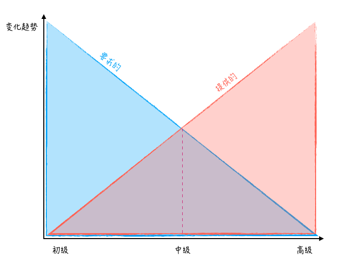</p>
<p>程序员成长阶段要求的帮助和提供的指导变化趋势示意图</p>
<p>图中蓝色三角区域表明，随着你从入门初级成长到高级程序员的过程中，需要得到的帮助和指导越来越少；而红色三角区域表明，你能提供的帮助和指导应该越来越多。所在，在前面那个想象的 “泡面拔刀” 的场景中，作为高级程序员的你，更理想的做法应该是去指导年轻程序员如何解决问题的思路，而不是自己拔刀，唰唰两下搞定。</p>
<p>对，很多高级程序员都会以 “等把他教会，我自己早都搞定了” 为由，忍不住自己拔刀。<strong>理解、掌握并应用好一种知识和技巧是你的 “拔刀术”，但分享传递并教授指导这种知识和技巧才是 “御剑术”</strong>，而 “剑” 就是你面前更年轻、更初级的程序员。</p>
<p>曾经多少次面对年轻初级程序员交付的结果，我都有一种懊恼的心情，怀疑当初是不是该自己拔刀？那时就突然理解了驾校老司机为何总是满腔怒火地吼着：“让你松点离合，只松一点儿就好…”，而当初的我刚学开车时，一开始不是松少了，就是熄火了。</p>
<p>从 “拔刀术” 到 “御剑术”，其技能模型的招式和对象变化了，但本质框架却是类同的，这里的关键点是：如何剥离自我，通过他人来完成设计和实现，并达成解决问题的目标。</p>
<h2>万剑诀</h2>
<p>诀，言字旁，喻义以言引导，影响多于控制。</p>
<p>所有的程序员都是从修行 “拔刀术” 开始，但只有极少数人最终走到了剑心 “天翔龙闪” 的境界，所有未能突破的我们都进入了瓶颈停滞区。我们不断学习和练习，终于练到拔刀由心，收发自如，终成习惯，但要将这个技能升维，跨越战场，却正是需要打破这个习惯。</p>
<p>其中，<strong>从 “拔刀术” 到 “御剑术” 是习惯的打破；从 “御剑术” 到 “万剑诀” 则是量级的变化</strong>。因而，“御剑术” 是修行 “万剑诀” 的必经之路。嗯，游戏里也是这么设定的。</p>
<p>“万剑诀” 正如其名，御万剑而破敌。回到现实中，这是一项高杠杆率的技能。而高杠杆率的活动包括：</p>
<ul>
<li>一个人可以同时影响很多人。</li>
<li>一个人可以对别人产生长远的影响。</li>
<li>一个人所提供的知识和技能，会对一群人的工作造成影响。</li>
</ul>
<p>这就是 “万剑诀” 的核心要诀。应用到程序员修行之路上：如果走上同时影响多人的路线，这就是一条团队管理和领导者之路；如果走上影响长远的路线，你可能乐于分享、传授，这可能是一条布道师的路线；如果你通过提供知识和技能来影响其他一群人的工作，那么这可能是一条架构师的路线。</p>
<p>“万剑诀” 和 “御剑术” 的共通之处在于都以人为剑，观察、揣摩每把剑的特性，先养剑再御剑最后以诀引之。<strong>若 “拔刀术” 是自己实现的能力，那 “御剑术” 和 “万剑诀” 都是借助他人使之实现的自信和能力</strong>，只是后者相比而言规模更大，杠杆率更高。“万剑诀” 的重心在追求问题解决的覆盖面，而面临每个具体问题时就需要依赖每把剑的锋利度了。</p>
<p>另外，“御”之一字更着重了一层控制的含义，而 “诀” 之一字在于影响多于操控，这里面的关键点就是：剑本身的成熟度。不够成熟的剑只能 “御” 之，足够成熟的剑方能 “诀” 之。</p>
<p>走上 “万剑诀” 之路后，还能再领悟 “天翔龙闪” 的奥义么？也许这是时代演进让我们不得不做出的选择，今天的程序江湖掌握了 “天翔龙闪” 奥义的 “神” 级程序员已经越来越成为一个传说，数十年前，那个英雄辈出的年代已不复再现。</p>
<p>拔刀术，是亲自动手斩杀问题，难处在于维度单一，后期进境陷入瓶颈停滞；御剑术，是指导他人解决问题，难处在于打破习惯，剥离自我；万剑诀，是借助他人使之实现，难处在于剑的养成。</p>
<p>它们的共通之处，都是基于长期的编程和工程训练，建立的系统化思维能力，创造模型来解决问题，而变化在于模型的适用对象不同，导致需要不停地调试合适的 “模型参数” 来适配问题，并且不论是技术框架还是人的 “模型参数” 都是在变化之中的。</p>
<p>最后，在你的技术升维演进转型路线上，你对这类变化的感受和认知是怎样的？欢迎留言分享。</p>
<h1>57 三维度：专业、展现与连接</h1>
<p>曾经在和朋友探讨个人发展的问题时，讨论出一个 <strong>PPC 理论</strong>，该理论粗略地把涉及个人发展的方向分成了三个维度，包括：</p>
<ul>
<li>专业 Profession</li>
<li>展现 Presentation</li>
<li>连接 Connection</li>
</ul>
<p>而像程序员这样的专业技术人员，都倾向于在专业维度不断发展提升，却往往忽略了另外两个维度。如果三个维度综合发展的话，可能会得到 <code>1 + 1 + 1 &gt;&gt; 3</code> 的效果，即三个维度相加远远大于 3 的效果。</p>
<h2>一、专业 Profession</h2>
<p>什么才算是 “专业”？其实没有一个标准定义，我尝试将其进一步分解为三个子维度。</p>
<h3>专业能力</h3>
<p>专业能力，包含了知识和技能。以程序员为例，具备专业能力的软件工程师应该拥有系统的知识体系和相应技能。</p>
<p>那么程序员的系统知识体系和技能又包括哪些？曾经在知乎看到过一个抽象的类比，它用我们在学校学习的各种学科体系来类比程序员的专业知识体系和技能，我结合自己的理解也做了一些延伸，包括下面这些方面：</p>
<ul>
<li>数学：这个不算类比，因为数学就是计算机科学的基础；</li>
<li>物理：程序世界中的基本定律，如 CAP、NP、算法与数据结构；</li>
<li>化学：程序世界中的 “元素” 和属性，如编程语言平台、各类框架和系统特性。</li>
</ul>
<p>在程序世界里，学好 “数理化” 基本也算走遍天下都不怕了，到哪都能找个工作，但这还不够。“数理化” 属于硬知识与技能，实际工作中还需要软知识与技能。而软知识与技能又包括如下内容：</p>
<ul>
<li>语文：除了能写代码，还得能写好文档，起得好名字，表达好逻辑，让代码更可读、可懂；</li>
<li>英语：高级编程语言几乎都是英语的子集，第一手的技术材料多来自英语世界；</li>
<li>生物：不同的技术都发展出了不同的生态体系，今天的系统几乎都在某种生态之中；</li>
<li>历史：任何一门新技术，都有其历史渊源，它从哪里来，将会到哪里去；</li>
<li>艺术：编程是一门艺术，一种逻辑与审美的表达；</li>
<li>经济：成本、收益、效率，有关技术决策的核心；</li>
<li>建筑：有关架构的一切，钢筋、水泥、脚手架、灾备、抗压、防单点以及相关的权衡。</li>
</ul>
<p>当把这些学科的知识和技能都掌握得七七八八了，那么才算具备了专业能力。</p>
<h3>专业行为</h3>
<p>专业行为，包括规范化的工作流程和作风，严格的职业纪律与操守。</p>
<p>这些专业的行为，最终会内化成一个人的习惯，敏捷专家肯特·贝克（Kent Beck）说过一句话：“我不是个优秀的程序员，我只是一个有着优秀习惯的普通程序员。” 所谓 “优秀习惯”，就是专业行为的一个重要体现。</p>
<p>专业能力加上专业行为，会让你从周围的合作者那里得到一个做事很专业的评价。</p>
<h3>专业产出</h3>
<p>专业产出，指最终产出的结果是稳定的，可预测的，处在一定品质标准差范围内的。</p>
<p>这一点可以用小说家类比。比如，金庸写了 15 本武侠小说，从第一本到最后一本的产出质量都在一定的水平之上，他的最低标准也高于绝大多数人，品质标准稳定可靠。而同时代的古龙，就不是这样的，早期古龙的小说良莠不齐，品质标准的波动范围很大；其中的分水岭是《绝代双骄》，之后的小说才开始逐渐稳定在一个很高的品质标准之上了。</p>
<p>所以，一个专业的程序员，交付的程序应该像金庸和后期的古龙那样，在一个可预测且稳定的品质标准之上波动。</p>
<p>所有技能维度的成长都是一条对数增长曲线，迟早会进入上升的平缓区，在这个区间 “投入增长比” 不高，这时就可以适当发展下后面两个维度，将会是不错的选择。</p>
<h2>二、展现 Presentation</h2>
<p>展现建立于专业的基础之上，所以展现也对应着专业的三个子维度。</p>
<ul>
<li>展现专业能力：包括代码、架构、认知、决策；</li>
<li>展现专业行为：包括沟通、交流、表达、协作；</li>
<li>展现专业产出：包括作品、方案、洞察、演示。</li>
</ul>
<p>对应这些展现的需求，有不同的展现形式，无外乎下面这些。</p>
<ul>
<li>代码：Github 等开源站提供了最直接的围绕专业能力中编程能力的所有展现形式、证据和历史；</li>
<li>交流：在日常的即时通讯、邮件、会议、交谈与协作中，展现了关于专业行为的一切；</li>
<li>演讲：有关专业产出的重要形式，如汇报（业绩产出）、分享（作品与影响力产出）；</li>
<li>写作：文字作品，一种长尾影响力的产出形式。</li>
</ul>
<p>在大部分情况下，你的专业价值评估都是由你的展现水平来决定的。</p>
<h2>三、连接 Connection</h2>
<p>我把社交连接分成了 <strong>5</strong> 个圈层，一般每个人都会具备前两个圈层，而只有在展现的基础之上，才有扩大连接到后面三个圈层的可能性。</p>
<h3>10</h3>
<p>人生的每一个阶段，都会有一些最要好的朋友，也就是好朋友，这是我们社交关系中最强的连接了。</p>
<p>一般这个数字都低于 10，而我自己的经历是，每一个阶段其实都没有超过 5 个。从小学、中学、大学、工作，包括从一个城市到另一个城市的不同阶段，各个阶段都有一些关系很好的朋友，但每经历过了一个阶段，这些好朋友就会发生变化。</p>
<p>很少有人，小学时候的好朋友，到了如今还是好朋友的，人生的变化实在太难预测。而这种好朋友的亲密关系，在每个阶段对你都是最有意义和价值的，会让你感到生活的快乐与幸福。</p>
<p>因而，50% 以上的社交时间都值得花在每个阶段最好的这 5 个朋友身上。</p>
<h3>100</h3>
<p>有一个神奇的数字叫 “邓巴数”，它来自神经科学领域，研究认为：</p>
<blockquote>
<p>人的大脑新皮层大小有限，提供的认知能力只能使一个人维持与大约 150 人的稳定人际关系，这一数字是人们拥有的，与自己有私人关系的朋友数量。也就是说，人们可能拥有 150 名好友，甚至更多社交网站的 “好友”，但只能维持与现实生活中大约 150 个人的 “内部圈子”。而 “内部圈子” 好友在此理论中指一年至少联系一次的人。</p>
</blockquote>
<p>按这个定义，我自己的感受是很难维持这么多联系，因为社交负担太大了。当然如果把上文中的 “联系” 理解成朋友圈点个赞也算的话，勉强也能达到吧。实际上，好多曾经阶段属于好朋友的人，过了那一个阶段，比如考上大学，大学毕业后各奔东西，慢慢也就进入了这个圈层。一开始还常联系，慢慢联系会越来越少，最后只在重要节假日（如春节）发个短信或红包了。</p>
<p>曾经熟悉的同学、同事们，大部分都在这个圈层中，除此，也会有一些当下新认识的熟人。总之，这个圈层中都是一些你们彼此还算认识，并且在一定程度上也彼此认同对方一部分价值的人。</p>
<p>以上就是几乎所有人都有的社交连接圈层。再往后的三个圈层，就只有极少数人拥有了。</p>
<h3>1000</h3>
<p>2008 年，著名科技作家凯文·凯利写了一篇文章《一千个铁杆粉丝》（1000 true fans），这里的 1000 连接圈层就是这么来的。不过这有个前提，就是你必须是一个创作者，而凯文·凯利的观点是：</p>
<blockquote>
<p>任何从事创作或艺术工作的人，例如：艺术家、音乐家、摄影师、工匠、演员、动画师、设计师或作者等，只要能获得一千位忠实粉丝就能维持生活。</p>
</blockquote>
<p>他大概是这么计算的，通过出售创作作品每年从每个铁杆粉丝上获取 100 美元的收入，那么每年大概有 10 万美元的收入，就足够生活了。今天，获得 1000 个粉丝不算太难，但在前面加上铁杆，就太难了。所谓铁杆，就是不论你创作的是什么，他们都愿意支付买单。</p>
<p>而我理解 1000 个铁杆也不必是固定的同一批人，可能是流水变化的 1000 人，他们只是每年为你不同的作品支付买单而已，但前提就是你得有持续的创作能力。</p>
<h3>10000</h3>
<p>这个层次是拥有一万个关注者（如：微博）或订阅者（如：微信公众号）。</p>
<p>这个量级才算是拥有了培育自己观点和内容种子的一块自留地，在这块土地上你可以播下你的观点，可能有人支持，也有人反对，更多人是不置可否，但至少你可以开始拥有了反馈。但若没有这块自留地，你的声音或观点几乎不会在互联网上收到什么反馈，也无法形成有效的讨论和互动。</p>
<h3>100000+</h3>
<p>自从有了微信公众号，100000+ 现在也是一个神奇的数字了；100000+ 的存在，体现了一个信息、观点与影响力的传递网络。</p>
<p>五种连接圈层，第一层次 “10” 的连接是强连接；其他的都是弱连接，弱连接的价值在于获取、传递与交换信息。<strong>强连接交流情感，弱连接共享信息</strong>。</p>
<p>而建立连接的关键在于：<strong>给予</strong>。也许并不需要物质上的给予，仅仅是心理上或是虚拟的给予。所以说为什么展现是扩大连接的基础，展现即创作表达，创作即给予。另外，建立连接得先提供价值，而且还得源源不断。</p>
<p>关于 PPC 个人发展理论的分享就到这里了，我们总结一下：</p>
<ul>
<li>专业，建立价值内核；</li>
<li>展现，提供价值输出；</li>
<li>连接，完成价值交换。</li>
</ul>
<p><strong>专业是价值，展现是支点，连接是杠杆。</strong></p>
<p>最后，补充说明下：虽然本文指出了三个维度，但实际这三个维度并不是均衡发展的，每个人都需要根据自己的具体特点和主观意愿去做选择平衡。其实，任何一个维度发展到极致，都会有巨大的价值，但极致，何其难矣。</p>
<p>关于这三个维度的发展，你有怎样的观点呢？欢迎留言分享。</p>
<h1>58 三人行：前辈、平辈与后辈</h1>
<p>成长的路上，有时会陷入停顿，感到迷茫，就像前行的一辆车陷在了泥地里，不管你怎么加油踩油门，它只是在原地打转而无法继续前行。这时，你就需要有人来帮助，或推或拉或扶。而从广义的角度看，总会有三类人在身边，你未必是独行。</p>
<p>孔子说：“三人行，必有我师”。原意中的“三”是虚数，泛指多人，意思是身边的任何人都可以成为你的老师，拥有值得你学习的地方。成长的路，本是一条越走人越少的路，但若有伙伴同行，你会走得更远，走得更久。</p>
<p>这就是成长路上的三人行，此时的“三”不再是虚数，而是指代身边的三类人，它们是：</p>
<ul>
<li>前辈</li>
<li>同辈</li>
<li>后辈</li>
</ul>
<p>这三类人代表了不同的成长路径和成长阶段。你应该有一个动态的列表，在成长的不同阶段将这三类人中的典型代表放在这个列表中仔细观察。</p>
<p>如果放在职场上，前辈可能就是你的上级，是比你更资深和有经验的人，是走在你前面的人；同辈自是你的同事，你们在不同的领域各有所长，甚至在同一领域做得比你还好，但不管怎样肯定是让你尊敬的人；而后辈可能是你的下属，他们也许正在走你曾经走过的路，可能正在做你一年、两年或三年前做过的事，而且可能做得比当时的你更好。</p>
<p>如果你在身边都找到了这三类人的典型代表，你观察他们，便是以他们为尺来度量自己；你学习他们，便是以他们为模来塑造自己；你加入他们，便是从后辈的重复中去反思过去，从同辈的领域中去扩展当下，从前辈的脚印中去引领未来。</p>
<h2>前辈</h2>
<p>前辈，是那些走在你前面的人，他们不止一个，且每个人都会有不同的路径。观察他们的路径，哪个更适合自己，哪个人的哪些方面让你更想要去模仿。在职场上，这些人似乎都有差不多的等级，但实际上每个人都有不同的特点和路径。</p>
<p>在不同的阶段，会有不同的前辈。而最适合作为前辈代表的人，应该在你前方不远处，因为这样的观察、模仿和借鉴才更有意义。毕竟走在你前方太远的人，他们的行为方式和路径你都很难看得清晰，而且很可能你们的工作活动已经处在不同的维度了，这阶段的你还理解不了。比如，刚入门的新手，适合观察和借鉴的前辈应该是比较熟练的中级工程师，而不是架构师。</p>
<p>程序员有时爱自比农民，自称 “码农”，因为程序员每天写代码的工作，就像农民种地。一个初出茅庐的程序员，不断地通过提升技能、吸收经验和改进工具来提升产量。从一开始的手工作业，到利用耕牛（新的技能和工具），再到现代化的机器工程作业（进一步改进的技能和工具），所负责的田地亩产量越来越高，每天能耕耘的土地面积也越来越大。直到有一天，技能提高和工具改进接近了极限，耕种的土地面积和单位产量增长都渐渐停滞。</p>
<p>之前的这个改进过程都是一个自然连续的成长过程，而当你进入极限区增长停滞后，再给你更大的土地，要求更高的产量时，这个连续的增长过程就被打断了，你会看到虽有前辈在前方，但中间的路却断了。</p>
<p>在这个断点之前，前辈的价值在于：<strong>他们走过的路，你不用再去摸索，只需快速顺着走下去</strong>。这个过程中你只需要刻意地玩命练习去解决自然连续的快速成长问题，而在断点之后，前辈在没路的地方留下的 “脚印” 也解决了非连续性的跨越问题。</p>
<p>十多年前，我以为程序员的成长终点是架构师，后来我知道了，程序员的自然连续成长终点是资深程序员，也许还有 “神” 级程序员。但架构师却是从某个点开始断裂分叉的另一条路，从程序员到架构师，就需要跨越非连续性断点，而转型到技术管理者也会面临同样的非连续性断点。</p>
<p>跨越非连续性的断点转变意味着什么？有一部电影叫《爆裂鼓手》，电影中有两个角色，一个鼓手，一个指挥。鼓手类似程序员，指挥则像架构师。成为顶级鼓手的路是玩命练习打鼓，成为指挥的路则是放下鼓槌，拿起指挥棒，协调各种乐器的演奏。</p>
<p>放下了乐器，未必是放弃了音乐，电影中的指挥，任何时候乐队中的任何一个乐器吹（拉、弹、打）错了一个音，他都能立刻分辨出来。这就是另外一条路的另一套技能，是为了得到更大规模的生产力和更震撼的演奏效果（品质）。</p>
<p>除此之外，<strong>前辈的另一个价值在于塑造环境，而环境决定了整体的平均水平线</strong>，在这个环境中的个体很少有能大幅偏离的。</p>
<p>就以我的中学环境为例，当年我进入这所少数民族中学时，那一届高考最好的学生是考上了中央民族大学。六年后，到我参加高考时，学校师生都在为实现清华北大的零突破努力，虽然依然没能实现，但这届学生的最高水平已经可以考上除清华北大之外的任何大学了。</p>
<p>在我所在中学的这个环境中，每一届高考学生都是下一届的前辈；每一年这些 “前辈” 们都在把学校的高考水平线抬高一点点，在前进道路的尽头继续探索走出长一点点的路来，而到我的下一届终于实现了零突破。</p>
<p>所以说在一个既定环境中，有强悍的前辈是我们的好运气。</p>
<h2>同辈</h2>
<p>同辈，本是那些与你并行前进的人。</p>
<p>同辈，特别是临近的同辈间普遍存在竞争，这也是所谓的 “同辈压力” 的来源。而很多时候我们的进步就是被这种压力逼出来的，这样压力转化为动力，同辈就成为了动力源。</p>
<p>还是以中学这个环境为例，同届的同学之间就是一种同辈关系，而且有相当的竞争压力，都在竞争大学的录取名额。在参与考试竞争这件事上，我可以做到期末或模拟考试班级第一或者年级第一，但高考的竞争其实是在全省范围的同届学生之间展开的，每次模拟考试下来发现离最高分还差很远，我就产生了一个困惑：为什么会觉得无论如何我也不可能达到那个最高分？</p>
<p>如今我自然明白了，我当时做不到是因为在学习和考试这个领域，我没有一个参考视角获知最高分的同学是如何学习的，而且这样的同学所在的学校环境，其整体水平线要远高于我所在的学校。因而，我想如果当时能有一个环境，让我和这样的同学产生交流和共同学习，那么必然我也可以得到提高。</p>
<p>中学是一个相对单一维度的领域，同辈同学间都是在忙于学习和考试；而到了职业和工作领域后，维度就丰富了很多，每一个同辈都可以拥有自己独特的领域，他们之间得以互相观察，并能相互沟通、交流与合作。</p>
<p>那什么是领域？这听起来有点像是一个玄幻小说的术语，在一些玄幻小说中，拥有领域的人物都是超厉害的，在他们的领域中，都是近乎无敌的存在。<strong>领域，是一个你自己的世界，在这个世界中，你不断地提出问题并找到有趣或有效的解决方案</strong>。进入这个世界的人，碰到的任何问题，你都解决过或有解决方案，慢慢地人们就会认识到你在这个世界拥有某种领域，并识别出你的领域。然而，计算机专业毕业的程序员们，人人都拥有专业，但工作十年后，不是人人都能拥有领域。</p>
<p>所以，在你前行的路上，碰到一个拥有领域的同行者，是一种幸运。所谓术业有专攻，每一个拥有领域的人，都有值得敬佩的地方，因为这都需要付出艰辛的努力。</p>
<p>每个人都能拥有一个自己的领域，在自己的领域内去耕耘、创造、提升，纵向提升这个领域的深度，横向扩张领域的维度，当和其他人的领域发生交集时，取长补短，也许还会产生意外的收获。</p>
<p>同辈，除了竞争，也有碰撞与交流，它会成为你的催化剂。</p>
<h2>后辈</h2>
<p>后辈，他们正沿着你走过的路直面而来。</p>
<p>好些年前，工作没几年，带了两个刚毕业的学生。我把我的自留地分了一点让他们种，每隔两天我就去看看他们种的怎么样？每次看完，我都忍不住想去自己再犁一遍。后来我还是没忍住，最后又自己种了一遍。如今回想起来，虽然保障了当时的产能，却牺牲了人的成长速度。</p>
<p><strong>人，似乎不犯一些错，就成长不了，也许这就是成长的成本。</strong></p>
<p>如今，我再回头看这样的路径和例子，就会以成长思维去考虑，而不仅仅是产能视角。为了获得长期的产能效率，有时不得不承担一些短期的成本压力。而后辈们，既可能重复犯下曾经的错误，也可能走出更好的路径。通过观察他们的来路，我反省到了过去的错误，也看到了更好的路径。</p>
<p>回望后辈直面而来，假如再来一遍，我能做得更好吗？我们无法改变过去的事实，但可以从思想上修正过去，以更好地作用于现在和未来。</p>
<p>成长路上三人行，有前辈、同辈和后辈。前辈塑造环境，开辟道路，留下脚印；同辈之间有竞争，也有交流与合作，既带来压力，也激发动力，催化能力；后辈带来反思，也提供支持。</p>
<p>前辈探路开拓，同辈携手并行，后辈参考借鉴。</p>
<p>在成长的路上，你需要找到当前阶段的三类人，也许就会感觉这条路走起来也就没那么迷茫和孤单了，你觉得呢？</p>
<h1>59 三角色：程序员、技术主管与架构师</h1>
<p>还记得[开篇词]中我画了一个程序员的成长路径图，其中在图的左侧部分展示了程序员成长路径上一些主要阶段的定义，在我们从初级走向资深的过程中，会面临一条支路，在这条路上不仅普遍称呼的名称不同了，工作内容可能也发生了变化，角色的转换会带来不少的困惑。</p>
<p>这条路就是从 “程序员” 到 “技术主管” 再到 “架构师” 的路径，下面我们就来看看这条路径上的三个角色有何不同？</p>
<h2>程序员与寻路</h2>
<p>当我刚进入软件行业成为一名程序员时，我的理想就是成为一名架构师。</p>
<p>“架构师”这个词的英文叫 Architect，原意是建筑师，因为软件行业参照借鉴了很多建筑行业的概念，所以就借用这个词。我是在学校读书时知道“架构师”这个名词的，当时很多软件方面的书都是翻译过来的，也不知道是谁最早把 Architect 翻译成了“架构师”的。总之从那时起，“架构师”这个名词对于我这个刚准备走出校门的学生来说就特别高大遥远，自然当成了最初的一个职业目标。</p>
<p>但遗憾的是在我从业前几年的好几家公司，都没有架构师这个职位，直到后来进入了互联网公司。到了京东后，不仅有架构师职位，还有架构师团队；在这里，不仅有了方向，还可以放心地作为一名程序员发力狂奔：不停地写程序，优化代码，追求更优、更简洁的代码，重构了一遍又一遍，解决了一个又一个问题。</p>
<p>在前面的文章中，我将程序员具体和代码相关的工作比作剑术，修炼代码技能类似练剑的过程。很多程序员梦想着有一天能成为一代高手，面对敌人，抽刀拔剑，刹那间交击，归剑入鞘，敌人倒下。就像线上系统突然出现大问题，你打开电脑，看了几眼日志，敲下几行代码，系统分分钟恢复。</p>
<p>一个好的程序员当然要能写得一手好代码。在工作前十年中，我每天的主要工作内容就是编程写新代码，重构旧代码，直到有一天发现这样不断继续下去，我的“剑术”已精进迟滞，进境有限。而当时所在的系统开始向大规模分布式化方向发展，更大的价值已不再是代码实现层面上的局部优化。</p>
<p>那时我开始在团队承担起整体的系统设计工作，此时若再专注于局部代码优化其实是在驱动细节而非本质了。作为资深程序员出身的架构师，单兵作战能力都是极强的，就像《进击的巨人》中的利威尔兵长，具备单挑巨人的能力。可当面对成群结队的巨人来袭时，个人单挑能力的作用始终有限。</p>
<p>这时，<strong>从程序员到架构师不仅仅是一个名称的变化，它也意味着技能和视角的转变</strong>。在地上飞奔了七八年的程序员，在面对成群的巨人袭来时，深深地感觉到，杀光巨人不应是目的，真正的目的应是到达彼岸。所以，选择合适的路径，坚定地前行，清除或绕过挡道的巨人，到达目的地。</p>
<p>是的，我是到了资深程序员阶段直接转向了架构师。而在路径图上还有另一条路，会经历另一个角色：技术主管，这是一个从程序员到架构师阶段的过渡角色。</p>
<h2>技术主管与过渡</h2>
<p>技术主管，有些公司可能又叫 “技术经理”，英文一般是“Tech Leader”或简称“TL”。</p>
<p>技术主管是开发团队中的某位程序员需要对整个开发团队负责时所承担的角色。既要对最终交付的软件系统负责，另外也会像一个程序员一样去开发实现系统。一般一个技术主管约 70% 的时间可能花在了开发任务分解分配、开发实践、代码审核和风险识别上，而余下 30% 的时间则花在为了保障系统按时交付所需要的各种计划、协作、沟通和管理上。</p>
<p>在拉姆·查兰 (Ram Charan) 写的《领导梯队》一书中提到：一个人的工作角色中至少有百分之五十以上的时间是花费在管理事务上，那么他的角色才算是一个经理（Manager）。所以技术主管（经理）更多还是偏重于技术工作，有点类似产品经理属于以经理命名却非真正的经理角色。</p>
<p>例如：在一个开发团队中经常会碰到技术方案和实现细节方面的分歧，如果程序员无法自主友好地完成对不同技术意见的统一，这时候技术主管就需要介入去了解两种不同意见所造成的冲突，对事不对人地去把问题搞清楚，分析各自方案的利弊，必要的时候甚至能够提出第三种更好的技术方案，以帮助开发团队达成共识。</p>
<p>另一方面，技术主管即使在日常的开发实现中，重点的内容一般也不是放在某个具体的功能实现上。在完成了具体的开发任务评估、分解并分配后，技术主管应该负责设计整体代码的结构和规范，必要时引入能提高整个团队生产力的新工具，推广代码模板，总结最佳实践。并且技术主管需要经常性地关注整个团队完成一项研发任务的水平和实际要求的水平之间的差距问题，让团队不仅满足及时的软件系统交付，同时又得到成长。</p>
<p>现实中，一个开发团队中最优秀的程序员容易被指定承担技术主管的角色，但优秀的程序员又很容易陷入到实现功能的细节中，满足于完美的实现，优雅简洁的代码。但实际上，这样优秀的程序员转入技术主管这个角色后，就很容易尝试控制设计和代码的实现，他们很难接受代码不按照他们希望的方式去编写，这个是他们作为优秀程序员一直以来的工作习惯，长此以往他们自身很容易变成整个开发团队的瓶颈，而团队里的其他成员也未能得到足够的锻炼和成长。</p>
<p>所以技术主管实际相比团队里的其他程序员对系统的视角更开阔，以更有策略和长远的方式来考虑问题。<strong>他们即使拥有比团队里所有其他程序员更高超的开发实现技能，对所有开发任务拥有最强大的实现自信，也需要转变为另一种 “借助他人使之实现” 的能力和自信，因为技术主管是一个承担更广泛责任的角色</strong>，必然导致能够专注有效编码的时间会相比以前减少很多，而这一点正是优秀程序员转变为技术主管所面临的最大挑战之一。</p>
<p>最适合技术主管角色人，不一定是团队中编程能力最好的人，但必然是团队中编程、沟通和协作能力最综合平衡的人。而技术主管之所以是一个过渡，就在于继续往前走，如果偏向 “主管” 就会成为真正的管理者（经理），如果偏向 “技术” 就会走向架构师。</p>
<h2>架构师与取舍</h2>
<p>架构师是一个在业界拥有知名的称谓，但在绝大部分公司却不属于一个职位序列，许多公司都很纠结于如何定义架构师的角色，以及架构师所做的工作。</p>
<p>以前听阿里的同学说 P7 属于架构师职位，不过最近在看另一个阿里同学写的文章提及：前几年是有专职的“架构师”职位的，现在已经回归到 “工程师”“技术专家”“研究员” 这样的纯技术职位。可见在一线互联网公司关于架构师的定义也是很模糊的。</p>
<p>[前面]我曾引用过一篇文章《在首席架构师眼里，架构的本质是…》中提到的架构师能力模型图，我结合自己的经验和理解，稍微扩展解释了一下，如下：</p>
<p></p>
<p>架构师能力模型</p>
<p>正因为业界和公司对架构师这个角色的职责定义很模糊，所以很多经验积累到一定程度的优秀程序员，并且在公司内被提升到一定高度的技术级别后，都会冠以 “架构师” 之名。但实际情况是大部分刚刚冠以“架构师”之名的优秀程序员，其能力模型大部分还停留在上图中的蓝色区域，而对其他区域并未有过系统性的认知和训练。</p>
<p>看过了架构师的能力模型，我们再来试着分析下其对应的职责。技术主管的角色与架构师这一角色会产生一些职责上的重叠，事实上我认为在团队规模比较小的时候（十来人的规模），架构师和技术主管的职责几乎完全重叠，甚至技术主管还会代理一些团队主管的角色。</p>
<p>随着软件系统复杂度和规模的提升，团队也相应变大，那么一个架构师此时所处的职责位置就开始和技术主管区别开来。<strong>如果把技术主管想成是站在楼顶看整个系统，那么架构师此时就是需要飞到天上去看整个系统了</strong>。</p>
<p>开发功能，解决 Bug，优化代码，这是一个高级或资深程序员的拿手技能，也是地面作战的基本技能。而一个架构师还需要掌握空中的技能，也许就像《进击的巨人》中的立体机动装置，让其能在需要时飞在空中看清全局，也能落地发起凌厉一击。</p>
<p>那多了一个空中的维度，过去在地面练到精熟的剑术，飞在空中还有效么？这就需要时间去学习，适应新维度的技巧。这不是一个容易掌握的技能，这也正是前面我写过的从一个点到另一个点连成线的技能升级，需要一个升维的学习过程。</p>
<p>架构师站在更高的空中维度去做关于软件系统的抽象和封装。如果技术主管的抽象和封装层次更多考虑的是语言函数、设计模式、代码结构等这一类的事务，那么架构师是站在整体软件系统高度，考虑不同子系统之间的交互关系、技术的合理性、需求的完整性、未来的演进性，以及技术体系发展与组织、产品商业诉求的匹配度。</p>
<p>这是相对技术主管更高维度的全局视角，另一方面依然有很多技术主管可能感觉没把握的技术决策和技术争端需要架构师的介入协调。之所以要找架构师来对一些技术争端和方案进行决策判断，很多情况在于程序员对架构师在技术领域内专业力和影响力的信任，而建立这种专业力和影响力是实际构建架构师非权威领导力的来源。</p>
<p>何谓 “非权威领导力”？非权威自是相对权威而言，管理者的权威领导力来自于公司正式任命的职位和职权，而架构师在大部分公司基本连职位职责都没定义清楚，更没有职权一说，所以实际上就不会有任何权威领导力。所以，<strong>架构师要发挥更大的作用和价值就需要去构建自己的非权威领导力，而这需要长期的专业力和影响力积累</strong>。</p>
<p>除此之外，架构师还承担着在技术团队和非技术团队（例如：产品设计等团队）之间的接口作用，明确产品的边界，勾勒技术蓝图，协调不同技能的技术团队协作，完成最终的软件系统交付。这时架构师的角色就像服务化架构中的 API，定义了协作规范、交互协议和方式，但并不会聚焦在具体的实现上。</p>
<p>在更大规模的系统上，架构师似乎还要去涉猎更多的跨领域知识，否则很可能无法做出最适合的技术决策。但人终究是有局限的，你不可能学完所有的领域，所以特定的领域又会涌现一些垂直领域的架构师。比如：数据架构师、网络架构师、业务架构师、安全架构师。因而某一个领域背景出身的架构师，对其他领域也只能做个初步了解，当需要做出关于涉及其他领域的架构决策时，就需要和其他领域的垂直架构师做深度的沟通交流，以辅助决策判断。</p>
<p>一旦选择走入架构师这条路，基本你就从一名出色的程序员这个领域走出，需要尽快去补充上面能力模型中指出的其他能力。这一点会让刚刚走上这条路的程序员很不适应，因为承担了更多其他职责，就必然会减少在编码实现的时间，慢慢就会怀疑自己的编码能力会退化，也跟不上一线最新的技术栈、各种酷酷的新工具。</p>
<p>舍得，舍得，没有舍就没有得。成为架构师会拥有一个更立体的知识、技能矩阵，这是你的得，获得了一个面，在某些点上必然面临被超越的结局。工作在一个面上，一个有经验的架构师应该能够很好地表达某些技术指导原则，借助他人使之实现，并且了解和把握什么时候该插手，什么时候该放手。</p>
<p>这就是架构师从技术 “实现力” 到 “掌控力” 再到 “决策力” 的能力变迁。</p>
<p>从程序员，到技术主管，再到架构师，名称变化了，角色的困惑我们也分析了，最后总结下这三种角色的工作内容和职责，如下表：</p>
<p></p>
<p>程序员、技术主管和架构师的职责表</p>
<p>每种角色有不同的技术和组织职责，只是在每种职责分配的时间比例不太一样。看完上表的职责范围，是不是感觉有时安安静静地做个程序员，要心净多了。</p>
<p>如今的你，正走在哪条路上呢？</p>
<h1>60 三视角：定位、自省与多维</h1>
<p>记得以前阅读时碰到过一个观点，是关于 “视角” 的，其中说道：“视角的选择，对解题的难易，关系重大”。而关于成长，放到程序模型中来类比，就是一道图论题，我们求解的是适合自己的最优路径。</p>
<p>面对这道成长路径的难题，我们可以从哪些视角来求解？我自己找到了下面三个视角。</p>
<h2>定位</h2>
<p>定位，是一个时间视角，回顾初心，定位未来。</p>
<p>还记得当初为什么选择程序员这个职业么？如今程序员所在的行业处于发展上升期，薪酬待遇整体高于传统行业，所以各类程序员培训机构如雨后春笋涌现，流水线般地为各类只差程序员的公司批量供应，这样的批量生产似乎有点把程序员当成了工厂的工人。</p>
<p>而程序员的工作实际更贴近于工匠，既有创造性的工艺性工作，也有模式化的工程性工作。想清楚自己成为程序员的初衷是什么？如果只是为了进入一个相对高薪的行业，得到一份工资高于平均水准的工作，终究是走不了太远的。</p>
<p>很多入门的新手程序员都是刚从学校毕业的，曾记得在吴多益的一篇工程师成长分享的材料上，如是说：</p>
<blockquote>
<p>从小到大的教育，你习惯性被安排：“课后作业是 X1、X2，后天必须交”“本学期的必修课有 XX、YY，必选的选修课有 ZZ、WW”。</p>
<p>十几年来你都是这样度过的，但现在你已经不在学校了，你要安排你的未来。</p>
</blockquote>
<p>刚入职场的程序员依然保持这个习惯，等着主管来安排。但如果你每天的工作就只是完成被安排好的任务，那么你自己的成长就会非常缓慢，因为主管安排任务时并没有那么多的精力来考虑任务是否适合个人的成长发展。这些任务是组织发展的需要，而不一定适合个人的成长发展，但组织是付了薪酬来让你完成任务的，所以这是工作的必需部分。</p>
<p>自己才是职业生涯的管理者，要想清楚自己的发展路径：远期的理想是什么？近期的规划是什么？而今日的任务和功课又是什么？今日之任务或功课哪些有助于近期之规划的实现，而近期之规划是否有利于远期之理想？</p>
<p>为什么今日除了任务外还要有功课？功课是学校里的概念，职场里没有，所以离开学校进入职场的功课都是自己给自己安排的。任务来自主管的安排，功课来自自己的安排。很多时候你只去完成任务却从未给自己安排功课，而等着被安排和主动安排之间，在未来将产生巨大的差别。</p>
<p>一开始你可能只有模糊的远期理想，也没那么清晰的近期规划，但一定要有足够清晰明确的今日任务和功课，即使在你的主管因为各种原因没给你安排的情况下。虽说方向不太可能一朝就定好，但也不要不管不顾地埋头走路，你需要抬头看路，定期检视，因为如今环境和大势的变化也很快。在边走边看的过程中逐步就清晰了近期的规划，甚至远期的理想。</p>
<p>另外，主管在你职业发展的路上，除了大部分时候给你安排任务，偶尔也可能给你创造机会，而机会出现时你能否抓住，全在今日之功课上。</p>
<p><strong>定位的视角，是关于一条成长的时间路径，它关乎：昨日初心，今日功课，明日机会。</strong></p>
<h2>自省</h2>
<p>自省，自我的视角，关乎自身，是一个观察自己成长路上行为的角度。</p>
<p>乔治·海尔迈耶（George Heilmeier），是一位美国工程师和技术管理者，他也是液晶显示技术的主要发明者之一。他在科研领域最著名的事情就是他提出的 “海尔迈耶系列问题”：</p>
<blockquote>
<p>你要做什么？不要用术语，清晰地表述你的目标。</p>
<p>这件事现在是怎么做的？现在的做法有什么局限？</p>
<p>谁在关心？你的方法有哪些创新？你为什么觉得你的方法能够成功？</p>
<p>如果你的方法能够成功，它能带来怎样的变化？</p>
<p>你的方法需要花多少钱？需要花费多少资源？要怎样在过程中和结束时进行评估？</p>
</blockquote>
<p>我觉得这个系列问题，用在程序员个人成长上也有异曲同工之妙，因为现在的技术方向和路线太多，即使选定了路线依然会有很多茫然和困惑。如果你想要学习一门新技术或在项目中引入一项技术，就可以试试套用 “海尔迈耶系列问题” 来自省一番。</p>
<ul>
<li>你学习这项技术的目标是什么？清晰地表述出来。</li>
<li>这项技术现在是怎么做的？有什么局限吗？</li>
<li>这项技术有什么创新之处？为什么它能够取得成功？要是在项目中引入这项技术，谁会关心？</li>
<li>如果这项技术能成功，会带来怎样的变化？</li>
<li>采用这项技术的成本、风险和收益比如何？你需要花费多少资源（时间、金钱）？如何去评估它的效果？</li>
</ul>
<p>程序员有时粗浅地学习并了解了一点新技术，就想着如何应用到真实的项目中。这时用上面的问题来问问自己，如果有回答不上来的，说明你对这项技术掌握并不充分，那就还不足以应用到实际项目里。</p>
<p>除了技术领域，你成长路上的许多行动，都可以此为参考坐标来反思：“这项行动的目标清晰吗？行动的方法有可参考的吗，局限在哪？我能有何创新之处？完成这项行动，会给我带来怎样的变化？我要付出多少时间、金钱和精力？行动过程中我该如何评估？行动结束的标准是什么？”</p>
<p>这就是<strong>自省，从埋头做事，到旁观者视角的自我反思</strong>。</p>
<h2>多维</h2>
<p>多维，是一个空间视角，关乎如何选择不同维度的成长路径。</p>
<p>有些时候，程序员写了几年代码，觉得太枯燥乏味，就想着是不是可以转管理，比如转技术主管之类的。从技术到管理似乎就是一条多维度的发展路径，是这样吗？不是的，这不叫多维扩展，而仅仅是想从一个维度逃离，转换到另一个维度。</p>
<p>打造多维度竞争力的前提是，要先在一个维度上做得足够好，让其成为你赖以生存的维度，这个维度就是你的核心基础维度，而它是其他维度得以发展的根基。其中，“足够好”的程度，可能就是指我们常说的 “精通”。</p>
<p>关于“精通”的概念，每个人的理解可能会有所不同，但我认为“精通”肯定不是无所不知，而是可以拆解成两个层面：第一，如学校时期学过的卖油翁所说的“无他， 惟手熟尔”；第二，在一个领域形成自己的体系和方法论。</p>
<p>第一个层面，表达了在当前维度的不断精进，在精进这个方向上，有一本书和咱们专栏主题类似，但更微观一些，偏向于 “术” 的层面，但又有点从 “术” 悟 “道” 的意思。这本书叫《程序员修炼之道：从小工到专家》，书里覆盖了一名程序员真正面临的一些问题，比如：</p>
<blockquote>
<p>与软件腐烂作斗争
避开重复知识的陷阱
编写灵活、动态、可适应的代码
使你的代码 “防弹”
捕捉真正的需求
无情而有效的测试
无处不在的自动化</p>
</blockquote>
<p>这些具体问题的解法，就是第一层面。然后逐步上升到了第二层面，它的方法体系，一篇书评中将其称为本书的 “哲学”：</p>
<blockquote>
<p>本书的哲学将渗入你的意识，并与你自己的哲学交融在一起。它不鼓吹，它只是讲述什么可行，但在讲述中却又有更多的东西到临，我们有时称之为 “无名的品质（Quality without a name）”。</p>
</blockquote>
<p>当这些问题倒下而你还在程序员的阵地上时，想必你就会让人感受到那种 “无名的品质”，此时你也就在当前维度走到了 “精通” 的门前。在第一层面上你达成了品质和效率，然后在第二个层面上，抽象出了当前维度的 “解”，那么就可以通过 “启发式” 方法应用到其他维度，具备了向其他维度扩展的基础，从一个细分领域到另一个关联领域的 “精通” 能力。</p>
<p>所谓 “<strong>启发式</strong>” 方法，就是 “在某个视角里，使用这个规则能够得到一个解，那么你受此启发，也许可以把这个规则用在别的问题上，得到别的解”，而规则就是你在一个维度里抽象出来的方法论体系。</p>
<p>当你感觉在技术维度进境迟滞时，可以尝试扩展到英语维度去，接触一手的技术论文或资料，说不定就能获得启发，找到新的技术维度进境之路。作为多年的程序员，已经形成了用工程师思维分析和求解问题。抽象出来看，程序员都是对问题领域进行建模，然后再用代码实现求得一个 “概率解”。</p>
<p>编程实现得到的难道不是一个确定的系统或服务吗？为什么是 “概率解”？系统或服务是确定的，但解决的问题，如：需求满足率、服务可靠性，却是概率的。每完成一个系统版本的发布，到底多大程度地满足了用户需求，其实是一个概率，这个概率可以通过用户反馈得到一个大概的感知，但你几乎不会知道一个确定的值。而可靠性，相对来说会更可量化，比如在 99.9% ～ 99.99% 之间波动，但也不会是确定的百分百。</p>
<p>工程师的这个求解模型，可以转移应用到其他很多与你息息相关的工作生活领域，比如投资理财，把钱存银行定期赚钱的概率解无限接近百分百；但买基金、买股票的概率解对大部分人来说就完全靠赌和猜了，因为缺乏一个合适的模型去求解，而对领域建模应该是程序员的强项，也是可迁移扩展到其他维度的能力。</p>
<p>即使是学习成长本身，也可以用工程模型来求解。这时你的学习维度就需要扩展一下，不仅仅局限于你当前的专业领域，还可以了解点神经科学，认知心理学之类的，并配合自己的现实情况、作息习惯，去建立你的学习模型，获得最佳学习效果。而学习效果，也是一个 “概率解”。虽然你不能知道确切的值，但我想你肯定能感觉出不同模型求解的效果好坏。</p>
<p>简言之，<strong>多维的路径，其实是从一个核心基础维度去扩散开的</strong>。</p>
<p>最后，我们总结下，在求解成长的最优路径时，视角的不同，对求解的难度差别巨大。我分享了我的三个视角：<strong>定位，时间视角；自省，自我视角；多维，空间视角</strong>。通过三个不同的视角，探讨了关于 “我” 与所在现实的时空关系，从中尝试提炼出一种方法，用于探索最适合自己的成长路径。</p>
<p>成长最优路径，求的依然是一个概率解，只是我感觉通过这三个视角去求解，也许概率会更高。</p>
<p>你不妨将这个三维度，套在自己身上，感受一下呢。</p>
<h1>61 工作之余，专业之外</h1>
<p>程序员的主流成长发展路线，是一个明显的“T”形线路。在纵深方向上，工作到一个阶段后，可能我们就会感到深入不下去了，而且越走会越有沉滞的感觉；在横向上，是广度方面，包括技术专业之外的领域，也会感觉了解甚少，短板明显。</p>
<p>有时候，要想产生真正的成长转变与发展突破，就不应自我局限于当下的工作内容和技术专业。</p>
<h2>一、工作之余</h2>
<p>工作，是技术发展纵深线中很重要的一个实践部分，但因为工作的内容和环境的限制，会把你困在一定的阶段，此时工作之余的内容将发挥很关键的作用。</p>
<p>工作之余，你都在做什么？我猜有人会说，工作已经够忙碌了，业余时间就该好好休息和娱乐了。的确，有很多人是这样选择的，但也有不少人不是的。即使再忙，有些人就喜欢在业余时间做点事情，这可能是一种性格特质，拥有这种性格和热情的人，总是能在忙碌的工作之余安排点其他内容，比如：</p>
<ol>
<li>看看程序设计相关的书、文章和博客；</li>
<li>参加一些技术主题论坛或会议；</li>
<li>写写技术博客；</li>
<li>创建自己的业余项目（Side Project）。</li>
</ol>
<p>以上前两条是接收和学习知识，第 3 条是总结和提炼知识，最后第 4 条则是实践所学，获得新的技能或加强旧的技能经验。</p>
<p>特别是第 4 条“创建自己的业余项目”，我感觉这是每一个程序员都应该做的事，为什么呢？在现实中切换一次工作环境是有比较高的成本的，开启自己的业余项目能帮助你打破工作内容和环境的限制，让你去做一些你喜欢做，但在工作中还没机会做的事。另一方面，业余项目也是你练习新技术和新技能的最佳试验场，相比你直接用真实的项目去实验，承担的风险和压力都要小很多，这样你也就有了机会去接触你想要学会的新技术。</p>
<p>记得几年前，我还参与过一个关于程序员业余项目的活动，那个活动的口号是下面这样的：</p>
<blockquote>
<p>世界在被代码改变着，而我们在创造着代码。</p>
<p>仅仅是因为好玩，他开发了一款操作系统，连想都没想过，这会让自己有一天成为开源世界的领袖级人物。</p>
<p>只是想创造一个很酷的东西，所以他动手，坚持，因而有了让这个世界上的每一个人都可以免费地获取人类所有知识的百科全书。</p>
<p>成功者和其他人最大的区别就是，他们真正动手去做了，并且做了下去。</p>
</blockquote>
<p>这也说明了业余项目的积极价值，而且这个世界上也有不少著名的产品来自业余项目的转正，比如：Gmail、Instagram、Slack，甚至包括 Facebook 本身。确实这些闪耀的例子激励着我们去尝试着各种各样的业余项目，但真正能做到像上述例子中那样光彩夺目，只怕这概率也和中头彩差不多了。</p>
<p>即使没有辉煌的成功，那么你做业余项目对自身还有什么积极的意义和价值吗？我想应该有的，你之所以要用自己的业余时间来开启一个业余项目，想必它是让你感兴趣的。全职工作的内容是你的职责，它支付你的账单；业余项目的内容则是你的兴趣，它满足你的好奇和探索之心。</p>
<p>在我学习写程序的前七八年里，业余时间也做了一些练习性质的项目。在 Github 之前的时代，Google 还能访问，我就在 Google Code 上维护了应该不止十万行的业余代码之作。后来 Github 兴起后迁移过来，不断练习重构优化和维护自己的专属工具库，删减了很多冗余代码，又新增了不少，剩下几万行代码。这个过程大约持续了七年，基本每年重构优化一次。每一次重构，都是对以前自己的否定，而每一次否定又都是一次成长。</p>
<p><strong>在做业余项目中最大的收获是：完整地经历一次创造</strong>。这样的经历，对于程序员来说可能在很多年的工作中都不会有太多机会。写程序，实现系统，发布交付，仅仅是创造的一个中间部分。而完整创造的第一步应是确定你要创造什么，明确它，规划它，找出创造它的方向和路径，做出决策，然后才是下定决心去实现它。</p>
<p>一方面，业余项目只能在业余时间做，而业余时间又是那么有限，这样的时间制约决定了你只能走极简路线，要么保持足够简单，要么就可能陷入膨胀的泥潭，从而失控导致失败。另一方面，正因为业余项目不会给你带来直接的金钱收益，所以你选择增加的每一个特性，要么让你感觉有意思，要么能磨练提升你的手艺，打磨你的深度。</p>
<p>然而，大部分的业余项目最终都失败了，但这没什么关系，你已经从中收获了趣味与成长。</p>
<h2>二、专业之外</h2>
<p>专业是你的核心领域，而专业之外则是你的辅助领域；核心属于硬技能领域，辅助属于软技能领域，这也是“T”线中的横向延伸部分。</p>
<p>那么该怎样选择辅助的软技能领域呢？如果你的工作之余是在做一件业余项目，那么我想下面一些领域就是你在做业余项目之时更感缺乏的技能。</p>
<h3>1. 创造与洞察</h3>
<p>工程师，是一个创造者，创造模型来解决问题，但又不应该止步于此。</p>
<p>你的业余项目是你的作品，作品是创造出来的，按作品原始的需求是满足了作者创造的愿望，但业余项目要能取得成功就需要得到真正的用户，而获取用户就需要洞察，洞察用户的需要。</p>
<p>我记得以前读过一篇博文，来自著名 JavaScript 程序员尼古拉斯·泽卡斯（Nicholas C.Zakas，《JavaScript 高级程序设计》一书作者），他写了几条职业建议，其中第一条就是：</p>
<blockquote>
<p>不要成为做快餐的 “厨师”。</p>
</blockquote>
<p>也就是说，不要像外卖接单一样，别人点什么，你就做什么。应该搞清楚你正在做的事情的价值和出发点，你不仅仅是实现代码，还要想想为什么要实现它。当你多想了后一步，在实现的过程中就会有更多的洞察。</p>
<p>开启过自己业余项目的程序员，已经走出了 “创造” 这一步，但多数还是失败在 “洞察” 这一点上。</p>
<h3>2. 表达与展现</h3>
<p>安安静静地写代码固然是不错的，但代码很多时候没法很直接方便地展现出你的真实能力和水平。</p>
<p>你可能会用 Linus 的“Talk is cheap, show me the code.”来反驳我。是的，也许在开源的世界，每个个人贡献者都隐藏在网络的另一端，他们只能通过代码来直接交流。但其他更多的现实是，当别人要来判断你的能力和水平时，通常都不是通过你写的代码，而是其他的表达与展现方式。</p>
<p>如果你的代码能给你作证，只有一个可能场景，那就是找到了大量直接使用你代码的用户，这就是成功开源作品的方式。否则，大部分时候你只能说你用代码完成了什么事情，做出了什么作品。</p>
<p>如果，你有好作品，就值得好好地展现，甚至还要不遗余力地推销它。</p>
<h3>3. 沟通与决策</h3>
<p>一个人的能力再强，也是有限的。当你想做更多、更大的事情时，就不可避免地要借助他人的力量，这时所面临的就将是大量的沟通了。</p>
<p>沟通一般有两个目的：一是获取或同步信息；二是达成共识，得到承诺。前者需要的是清晰的表达和传递，后者就需要更深的技巧了。这些技巧说起来也很简单，<strong>核心就是换位思考、同理心，外加对自身情绪的控制</strong>，但知易行难在沟通这件事上体现得尤其明显。</p>
<p>关于决策，如果都是在好或更好之间的话，那就真没什么纠结的问题了。而决策，是在优劣相当的情况下做出选择，更多的决策难点发生在取舍之间。程序员能碰到的大部分决策场景都是关于技术的，技术相对来说还有一些相对客观的标准来掂量，比如通过测试数据来验证技术决策的结果。</p>
<p>而其他方面的更多决策会让人陷入困境和纠结。如果要问我在这点上获得过怎样的教训，那就是：即使是一个坏的决策也比始终不做决策要好，因为在行动的过程中比“陷”在原地有可能产生好的改变。</p>
<p>决策和沟通有时是紧密联系的，大量的沟通之后可能产生决策，而决策之后也需要大量沟通来落地实施。</p>
<p>最后总结下：工作之余你可以有多种选择，但若被工作环境所困，导致专业力进境阻碍，可以开启业余项目来突破这种限制；而业余项目带来的诸多益处，从此也为你走向专业之外打开了一个新的视角与空间。</p>
<p>工作之余，专业之外，就是一条“T”线纵横交错发展的路线，当两条线都画得足够长了，在面临成长路上的断层时，才有机会与可能实现跨越。</p>
<p>那么，你的工作之余和专业之外都在忙些什么呢？</p>
<h1>62 跨越断层，突破边界</h1>
<p>在前文中定义过程序员的职场阶梯，而阶梯不过就是很多人已经走过的路，我们只需要沿着这条路去持续成长就能爬上还算不低的楼层。只是到了一定楼层后我们会发现上面似乎还有几层，但却看不见下一层的楼梯了。因为再往上走的人就不多了，也就没能成了路，自然也就看不见，这可能就是所谓成长阶梯的断层。</p>
<p>在程序员的成长阶梯上，到了一定阶段，我们可能会面临方向的选择，不同的方向选择意味着不同的路径，会碰到不同的断层，而跨越断层也需要不同的方法。</p>
<p>那我们会面临怎样的方向选择呢？</p>
<h2>方向</h2>
<p>在我的技术成长路上，我看到了三个方向，正好可以用三个字来表达：<strong>“高”“精”“尖”</strong>。</p>
<p>“高” 指的是 “高级（High-grade）”，“精” 代表 “精确（Precision）”，而 “尖” 则是 “尖端（Advanced）”。这是我所看到的技术人前进的三个主要方向，而这三个方向的走向往往还是互斥的。</p>
<p><strong>高级</strong>，说的不是更高级的技术，因为技术之间的横向比较没有高低级之分，比如操作系统、数据库、网络编程、机器学习等技术，没法比出个高下。这里的“高级”，如其英文是更高等级的意思，是职位和人的级别。而往高等级走的技术人，离 “精” 自然只能越来越远，毕竟站的高就只能看得广，但很难看得精确了。</p>
<p><strong>精确</strong>，就是把一门技术做到真正的精通。现在技术的分工越来越细，通常能精通一两个细分领域已实属不易。而要做到精，其实越往后付出越多，但感觉提升却变得越来越慢。都到 95 分了，再往后每提升 1 分都需要付出艰辛的努力。走到细微深处，也很难再看得远、看得广了。</p>
<p><strong>尖端</strong>，似乎听起来像 “精” 的极致，其实不然，这完全是另一条路。“高” 与 “精”，是工业界的实践之路，而 “尖” 是理论界的突破之路。只有能推进人类科技进步的技术才称得上尖端，就如 IT 界历史上著名的贝尔实验室里的科学家们做的工作。</p>
<p>**“高”“精”“尖”**三个字，三个方向，三条路，各有各的机遇与风险。在三条路的岔路口，工作多年的你若止步不做选择，也许就止于一名普通的程序员或资深的技术人。若继续选择一个方向走下去，越往高处走，高处不胜寒，一旦落下，你知道再也回不去了；而走向精深之处，沿着技术的河流，溯根回源，密林幽幽，林声鸟不惊，一旦技术的潮流改了道，你知道你可能会迷失；而尖端之路，或者有朝一日一鸣惊人，青史留名，或者一生碌碌。人工智能的发展史上，曾有一段时间找错了路，让学界止步不前，而这一段时间就是走尖端之路的学者们二十年的岁月。</p>
<p><strong>“高” 是往宏观走，“精” 是往微观走，“尖” 是去突破边界。</strong></p>
<p>这三条路，“高” 和 “精” 的方向在业界更常见，而 “尖” 不是工业界常规的路，毕竟业界拥有类似贝尔实验室这样机构的公司太罕见，所以 “尖” 的路线更多在学术界。因而后面我们主要探讨 “高” 和 “精” 两个方向的路径断层与跨越方法。</p>
<h2>高</h2>
<p>高的两条典型路线如下：</p>
<ul>
<li>程序员—架构师—技术领导者</li>
<li>程序员—技术主管—管理者</li>
</ul>
<p>往高处走，每一次角色的转变，都是断层。有时候，公司里到了一定级别的程序员就会被冠以架构师的称呼，但工作的实质内容依然是资深程序员平时做的事，如：一些关键系统的设计和实现，解决一些困难的技术问题。</p>
<p>这些工作中的确有一部分也算是架构师的内容，但如果不能认识到架构师工作内容的实质，再往高处走也就很难实现断层的跨越了。而<strong>架构工作的实质是创造一个模型，来连接、匹配关于业务、技术和团队之间的关系</strong>。</p>
<p>其中的 “业务” 属于架构师工作内容中的领域建模；“技术” 是匹配领域模型的技术实现模型；“团队” 是关于个体之间如何组合的结构，需要满足个体技术能力与技术实现模型的匹配。由这三个元素连接和匹配构成的模型中，“业务” 是变化最频繁的，其次是 “团队”，而变化频次最低的反倒是 “技术”。</p>
<p>每一项元素发生变化，都意味着架构模型需要去适应这种变化，适应不了变化的模型就需要升级。而常见的组织架构调整，也就意味着 “团队” 的沟通路径变化了，因为康威定律（系统设计的通信结构和设计系统的团队组织的沟通结构是一致的）的缘故，必然带来架构模型的适应性变化调整。</p>
<p>透过具体的实质再往高处抽象到本质，你会发现架构工作的本质是在通过模型调优生产关系，从而提高生产效率和生产力。这是一条杠杆之路，通过找到其中的关键支点去放大输出，扩大价值。</p>
<p>在架构模型三元素中，技术本身就是一种杠杆，而团队和业务是价值支点。</p>
<p>曾经，技术的草莽时期，是一个英雄辈出的年代。两个人可以创造 Unix、C 语言，一个人也可以发明 Linux，也可以写出 Foxmail。掌握了技术，就可能创造历史，那时技术的杠杆很高。</p>
<p>如今，是技术的成熟时期，个体英雄少了，更多是一种团队和集团军作战的方式。如果你是技术的绝世高手（精的极致），那你也需要找到一支契合你技能的场景与队伍，加入进去。此时个人的技术杠杆也许不像曾经那么高，但也许你们这个队伍还是有机会能创造历史的。</p>
<p>前几年，Facebook 曾收购了一家叫 WhatsApp 的公司，花了 190 亿美元。这家公司当时仅 50 人，而其中一半是技术人员，这应该是近年用技术杠杆撬动价值之最了吧。</p>
<p>在 WhatsApp 这个例子中的价值支点是什么？是产品（业务），连接用户、形成网络。技术本身的价值通过这个产品业务形态支点，在每个活跃用户身上得到了放大。</p>
<p>而另一个价值支点，是借助团队，但这只适合高级别的技术人员，比如：技术管理者或架构师。但团队也需要能创造真正的价值，才能实现利用杠杆放大价值的效果。在商业环境下，任何一种产品业务形态，其最终能实现价值，都会存在一个价值网络。这个网络中覆盖了各种角色，技术只是其一，若要找到最好的价值支点，那么通常会在离价值来源比较近的地方。</p>
<p>技术像是一根棍子，能发挥多大价值，取决于棍子本身的品质和运用的方式。而往高处走的技术人，要跨越这条路径的断层，就是要认识清楚这个价值网络，并找到最适合技术发挥的价值点。</p>
<h2>精</h2>
<p>精的路线是一条 “专家” 之路。</p>
<p>曾经在[前文《定义：阶梯与级别》]中定义过 “专家”，我说：专家可能就是某个领域中你绕不过去的人吧。这个定义中包含两个点，一个是领域，另一个是绕不过去。第一点表达了某个范围，第二个则模糊地表达了这个范围的大小，绕不过去其实是一个很大的范围了。</p>
<p>比如，若你处在物理学领域，牛顿就是你绕不过去的人，之后是爱因斯坦。而在计算机领域，图灵定义了计算机的边界，也是这个领域绕不过去的人。但这样的天才人物，百年来才出一个，如果都要达到这个水平才算是专家，可能就太难了，从而失去了指导意义。</p>
<p>如今反思，其实用这两点来定义专家也是可以的，只是需要更清晰地明确领域和量化范围。大至国家、社会、行业，小到公司、团队、小组，都有自己关于专家的定义。</p>
<p>曾经，好些年前，我最早在公司的几个同事组成的小组内研究引入 Java NIO 的技术来编写网络程序，读了一些相关的书和开源框架代码（Mina、Netty），周围的几个同事就戏称我为 Java NIO 的专家。这就是用领域（Java NIO 是一个很细分的技术领域）加范围（局限于周围组内几个同事，他们要解决 NIO 的网络编程问题都绕不过我）定义专家的方式。</p>
<p>因而，像前面说的爱因斯坦、牛顿、图灵，他们既是行业（学科维度）范围内的，也是世界（地理维度）范围内的专家。而公司内的专家职级定义，其范围无非就是与公司经营相关的某个领域，其大小无非就是公司组织架构的某一层级之内。</p>
<p><strong>走向专家之路，就是精确地找到、建立你的领域，并不断推高壁垒和扩大边界的过程。</strong></p>
<p>那么如何建立属于自己的、更大范围内且具备足够识别性的领域？这就是 “精” 的路径中的非连续性断层问题。曾经读过一篇吴军的文章，谈到了工程师成长中的类似问题，他用了一个公式来描述解法：</p>
<blockquote>
<p>成就 ＝ 成功率 x 事情的量级 x 做事的速度</p>
</blockquote>
<p>在连续的成长阶段，我们的成长主要体现在不断提升做事的熟练度，也就是上述公式中的速度和成功率，但这两个指标到了一定的熟练度阶段后就会碰到物理极限。实际情况是，一个资深的工程师的速度甚至不会比一个初级工程师快两倍，但可能成功率会高几倍，甚至十倍，这就是传说中的一个顶十个的程序员，但离极限也就差不远了。</p>
<p>而要成为传说中以一敌百的程序员，只有一个可能，他们做的事情和其他人不在一个量级上。现实案例中，就有如 Linus 这样的人。所以，一直做同样的事，都是写代码，也可以跨越断层，但关键是，你写的代码体现在什么量级的事情上。</p>
<p>之前在工程思维中总结过：<strong>问题的量级变了，逻辑就不一样了</strong>。作为程序员，我们会有直观的感受，用户量级越过了一定的门槛后，我们编写、维护和部署程序系统的方式都会发生本质的变化。而提升量级最难的就在于我们要放下曾经熟悉的方式和习惯，站在更高的维度去看更大量级的事情，并且找到适合这个量级事情的合适解决方案。</p>
<p>面临成长路上的非连续断层，以及角色之间的无形壁障，该如何跨越断层，突破边界？我们着重从成长路线的两个方向：“高” 和 “精”， 提供了分析和解法。</p>
<ul>
<li>高的路线，需要借助技术的杠杆，认清所处的价值网络，找到合适的价值点，撬动更大的价值；</li>
<li>精的路线，在做事情的成功率和速度接近自己的极限后，只能去提升事情的量级，才能发挥出专家的价值。</li>
</ul>
<p>明晰了不同路线的价值方向，但每个人脚下的路都是具体的、不同的，我们跨越的方式也不会一样。在成长的路上，你碰到了断层没？是如何跨越的？欢迎留言和大家一起分享探讨。</p>
<h1>63 成长蓝图，进化跃迁</h1>
<p>回顾过去，我们会清晰地看见走过来的路线，但面向未来我们又该如何走下去？但凡过往，皆为序章，过去不可变，未来才是希望，而如何去规划并管理好未来的成长进化之路，才是我们当下要面临的主要任务。</p>
<p>我们先从一个高度抽象的维度，来看看这条成长之路。</p>
<h2>一、成长路线</h2>
<p>结合我自己的经历、思考与总结，我对走过的路和未来的路概括成如下这张图：</p>
<p>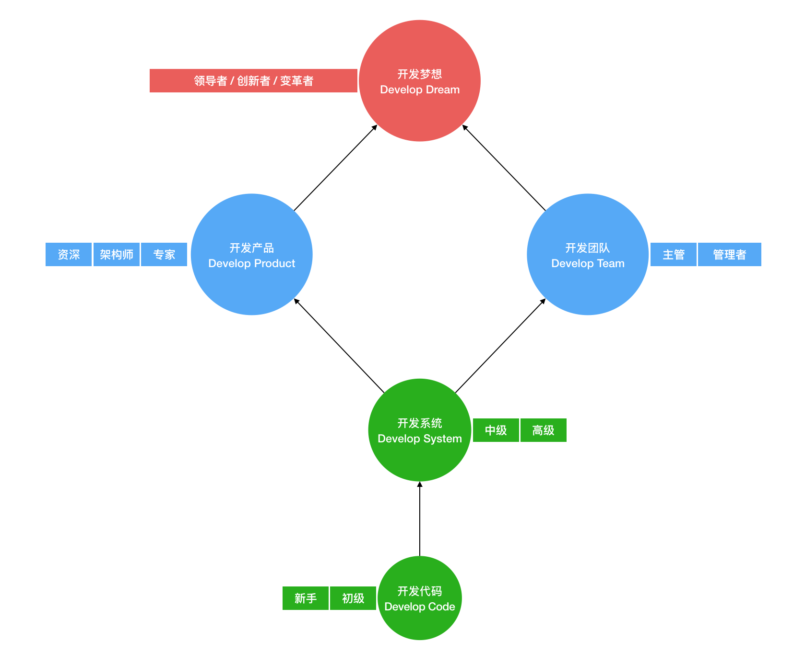</p>
<p>图中描述了好几个阶段，从一个阶段到下一个阶段，都会经历一次转折。</p>
<h3>1. 开发代码（Develop Code）</h3>
<p>从刚走出学校到进入职场成为一名新手程序员，在最初的一两年内，你可能都处在这个阶段。不停地大量写代码，为各类系统的“大厦”添砖加瓦，像块海绵一样，把自己吸得满满的，朝 9 晚 24 地工作与学习，并不时自嘲为 “码农”。</p>
<p>这个阶段，你为生存所需（迫），会强烈地渴望成长。</p>
<h3>2. 开发系统（Develop System）</h3>
<p>三、五年后，你可能从初级、中级成长到了高级，此时你不再仅仅是写代码搬砖，而是开始负责起或大或小的整个系统。这时，你最关心的是如何用最好的技术方案，去开发、优化和完善系统。</p>
<h3>3. 开发产品（Develop Product）</h3>
<p>从高级走向资深、专家或架构师，你会发现你的技术执行技能已经优化到了相当的程度，这时往前多走一步，关注你所实现的系统所属的产品，会让你打开新的空间，找到更有效率和效果的实现路径，减少做无用功。</p>
<p>而且在技术的世界里，有很多面向开发者的技术型产品，这个领域中最适合承担起产品经理角色的就应该是各类资深的技术专家和架构师了。</p>
<h3>4. 开发团队（Develop Team）</h3>
<p>当你选择走上技术主管并转变为一名管理者，那么人和团队将成为你的主要开发对象，而不再是代码了，这是成为管理者的必经之路。</p>
<h3>5. 开发梦想（Develop Dream）</h3>
<p>梦想这个东西也会随着岁月与你相伴成长，梦想实际永远在前方，它只是不断引领着你往前走。梦想相对而言是一个感觉上很 “虚” 的概念，它可能需要产品作为载体，也需要团队来一起开发创造。如此，梦想的引力就会引发你向一名创新者或领导者的方向进化跃迁。比如说，十多年前，刚毕业时，我的梦想是成为一名架构师，如今已然实现。</p>
<p>以上这张图只是帮你看清从过去到未来的一条路，但如何走好这条路，就需要另一个视角维度的蓝图了。</p>
<h2>二、战略蓝图</h2>
<p>战略这个词，通常会和组织、公司关联在一起；那假想下，如果个人是一家公司，那么这家 “公司” 的战略该如何确定？</p>
<p>在分析战略之前，我们需要先分析下公司的业务。为了更好地分析清楚公司的主要业务，这里借鉴下咨询公司爱用的商业分析模型：<strong>波士顿矩阵</strong>。实际有很多不同的分析模型，我只是觉得这个最简单，比较适合像个人这样的小小微 “公司”。</p>
<p>波士顿矩阵模型，把公司业务分成下面四类：</p>
<ul>
<li>现金牛业务</li>
<li>明星业务</li>
<li>问题业务</li>
<li>瘦狗业务</li>
</ul>
<p><strong>现金牛业务</strong>，比较形象地表达了就是产生现金的业务。比如谷歌的搜索业务、微软的 Windows 操作系统，都是它们的现金牛业务，有很高的市场占有率，但成长率相对就比较低了。</p>
<p>就个人来说，现金牛业务自然是一份稳定的工作，产生现金，维持个人生活的基本面，当然稳定之外越高薪越好。程序员这个职业就是很好的现金牛业务，行业繁荣，工作也比较稳定，专注于这个业务，不断提升薪资水平，这就是：<strong>活在当下</strong>。</p>
<p><strong>明星业务</strong>，比较形象地表达了很有前景的新兴业务，已经走上了快速发展的轨道。比如：亚马逊的云计算（AWS）就是它的未来之星。而个人呢？如果你的现金牛业务（级别和薪资）已经进入行业正态分布的前 20%，那么再继续提升的难度就比较大了。</p>
<p>个人的明星业务是为未来 5 到 10 年准备的，就是现在还并不能带来稳定的现金流但感觉上了轨道的事。于我而言，是投资理财。人到中年，除了劳动性收入，资产性收益将作为很重要的补充收入来源，而当资本金足够大时，很可能就是未来的主要收入来源。当你开始在考虑未来的明星业务时，这就是：<strong>活在未来</strong>。</p>
<p><strong>问题业务</strong>，比较形象地表达了还有比较多问题的业务领域，面临很多不确定性，也就是还没走上正轨。将来到底是死掉，还是成为新的明星业务，现在还看不清楚。比如谷歌的无人驾驶、机器人等业务领域都属于此类。</p>
<p>就个人而言，可能是一些自身的兴趣探索领域。于我来说，目前就是写作和英语，即使写作已经开了专栏，但并不算是稳定可靠的收入来源，主要还是以兴趣驱动，投入时间，不断探索，开拓新的维度，这就是：<strong>活在多维</strong>。</p>
<p><strong>瘦狗业务</strong>，比较形象地表达了一些食之无味、弃之可惜的业务。瘦狗业务要么无法产生现金流，要么产生的现金流不断萎缩。今日之瘦狗，也许是昨日的明星或现金牛，比如像诺基亚的功能机。</p>
<p>就个人而言，行业在发展，技术也在进化，曾经你赖以为生的 “现金牛” 技能，可能过几年后就会落后，逐渐变成了 “瘦狗”，无法果断地放弃旧技能、开发新技能，可能就如诺基亚一般在新的时代被淘汰。固守瘦狗业务，那就是：<strong>活在过去</strong>。</p>
<p>业务模型构成了你的蓝图，而对你的各种业务进行与时俱进地布局与取舍，这就是战略。</p>
<h2>三、进化跃迁</h2>
<p>明晰了路线，掌握了蓝图，该如何完成你的成长进化跃迁呢？</p>
<p>跃迁是量子力学里的概念，指电子吸收能量后，突然跳到更高的能量级，这种不连续、跳跃的突变，我们称之为 “跃迁”。我借用了这个概念来类比成长，从如上定义中有几个关键点：</p>
<ul>
<li>吸收能量</li>
<li>更高能量级</li>
<li>非连续跳跃</li>
</ul>
<p>个人成长的跃迁也需要能量，在这里能量就是知识、技能和能力。完成 “能量” 的积累就需要持续地学习和实践行动，而持续行动又靠什么来驱动？内心的自驱力，这是稳定有效的驱动力来源，若没有自我驱动的力量是不太可能带来持续行动的。</p>
<p>学习行动计划、养成行动习惯都是为了提升行动的效率，行动积累了足够的 “能量” 后，就向更高能量级跳跃。这里更高的能量级是对知识和能力的更高维度抽象的比喻，比如：知识模型和技能体系，就比孤立的知识点和技能拥有更高的能量级。</p>
<p>而第三个关键点：非连续跳跃，说明这样的进化有突变的特征。而个人知识的积累与能力的提升，其实都是比较缓慢而连续的，非连续的跳跃其实体现在机会和运气上。合适的机会若没能降临，你就没法完成跃迁。</p>
<p>连续的成长积累是你能掌控的部分，而跃迁的机会、运气则属于概率成分，你的努力可能一定程度上提高了概率，但它并不能导致必然的跃迁结果发生。即使机会没能到临，努力过后也许有无奈，也该当无悔了。</p>
<p>最后，我们总结下：</p>
<p><strong>从开发代码到开发梦想，你可以画出一张你的成长路线图，从而走上进化跃迁的道路；上了路后，接着你可以利用工程师的思维模式和商业工具模型，建立一个你的成长战略蓝图去指导你如何走这条路。剩下的，就让你的努力、选择和运气来帮助你完成不断的跃迁变化吧。</strong></p>
<p>专栏至此，已近尾声，而如今的你，正在向哪个阶段跃迁呢？</p>
<h1>尾声 始于知，终于行</h1>
<p>专栏历时半年，终于到了尾声。</p>
<p>在写这个专栏之前，我已经写了好些年博客，写过很多关于技术的，也写过更多围绕程序员或者说当时的我自己成长的一些感悟。在回顾曾经写过的一些主题时，发现很多技术的内容可能都随着时间变迁过时了，但关于成长的认知却依旧历久弥新，因此选了这个关于成长的主题。</p>
<p><strong>而成长的本质，就是两个字：知行</strong>——始于知，终于行。</p>
<h2>知</h2>
<p>知，起于阅读；当你决定学习一样东西时，自然就会从阅读开始。从阅读中学习，要么是直接获得知识，要么就是从别人的学习经历或经验中找到值得自身借鉴的参考与启发。</p>
<p>我硕士毕业于广州中山大学，一直让我铭记的是当年学校的校训，那是孙中山先生于 1924 年 11 月 11 日在广东大学（原校名，后为纪念孙中山先生改名）举行成立典礼时亲笔提写的十字训词：</p>
<blockquote>
<p>博学 审问 慎思 明辨 笃行</p>
</blockquote>
<p>这十字训词原文出自儒家经典《礼记·中庸》：“博学之，审问之，慎思之，明辨之，笃行之”，但孙中山先生赋予了它新时代的涵义。</p>
<p>“博学” 好理解，在校训牌旁边不远处就是陈寅恪的故居，陈寅恪是中国现代历史学家、古典文学研究家、语言学家、中央研究院院士、中华民国清华大学国学院四大导师之一（其余三人为梁启超、王国维、赵元任），通晓二十余种语言，堪称博学之人。</p>
<p>相比九十多年前孙中山先生的时代，今天是信息爆炸与过载的时代，知识与学问也淹没在这些爆炸的信息中，谁还能轻易堪称博学，我们只能说在信息的洪流中，保持永无止境地学习。如果能坚持学下去，那么今天的自己就比昨天的自己稍微博学一点，今年的自己也比去年的自己要博学一些。</p>
<p>正因为信息过载，我们通过各式各样的大量阅读来接收信息，因此对这些信息进行 “审问、慎思、明辨” 就显得十分重要和关键了。“问、思、辨” 是对信息进行筛选、分析与处理，去其糟粕取其精华。经过降噪、筛选、分析处理后的信息再与我们自身已有的知识和经验结合形成属于自己的独立思考与观点，而这些独立的思考和观点才能用来指导我们的行动，也即 “笃行”。</p>
<p><strong>先有 “知”，方有 “行”。知，只是行的方法；行，才是知的目的。</strong></p>
<h2>行</h2>
<p>在中大学习的年间，我每天早上去实验室，晚上又回来，多少次要从校训牌前来回经过。十多年后再回想当初在学校习得的那点知识和技能，要么已经过时，要么也遗忘殆尽了。最终留在心里的反倒是校训牌上那无比清晰的十字训词，并一直指导着我未来的学习与成长之路。</p>
<p>十字训词，前 8 字 4 词占了 80% 的文字内容，但我觉着用在上面的时间和精力应该正好反过来：花 20% 时间和精力研究如何更好地 “知”，而 80% 的时间和精力放在持续地 “行” 上。搞错了比例，很可能最终也就无所成就，收获寥寥。</p>
<p>但 “笃行” 往往是最消耗时间的阶段，一旦方向搞错了，可能大量的努力就浪费了。因此，“行” 之前的 “学、问、思、辨” 就很关键了，它们是行之前甚至行程中不断修正方向的指南针。</p>
<p>我的专栏能提供给你的也不过是我的一些经历、经验与思考，供你行路参考。你的阅读会让你更 “博学” 一点，但这只是第一步的信息传递与接收阶段，如果没有后面的 “问、思、辨、行”， 于你又有多大的意义呢？所以，后面的部分只能靠你自己来完成了。</p>
<blockquote>
<p>纸上得来终觉浅，绝知此事要躬行。</p>
</blockquote>
<p>在 “行” 的路上，也许一开始都是参照走前人走过的路，虽然我们经常想走自己的路，其实绝大部分人终其一生都是在走前人的路。写到这，想起一个前几年关于我自己的真实 “行路” 的感悟。</p>
<p>几年前，我考了驾照买了车，然后就跑去自驾。从成都出发，经过了红军长征走过的草原，绕过了青海湖边，经古代丝绸之路的路线一路开到了敦煌。丝绸之路从敦煌出去，分出两条，北上经玉门关，南下出阳关，走到那里突然有种诗和远方的感觉。</p>
<p>但无论自驾如何自由，我们也不过是在走前人的路。在敦煌的洞窟里看到了张大千临摹的笔迹，才了解到战争年代大师也曾在这里临摹古人的壁画，走着前人的路。</p>
<p>开着车走在路上，两边是沙漠，偶尔看见前面有车，超过，再前行，两边的沙漠变成戈壁，路看不到头，一望之下再也看不到其他的人和车，走在路上感觉有些心慌然，仅仅是走在前人的路上已有些慌然，那走出这条路的前人又该是怎样的心境？</p>
<p>回程中，入蜀后国道一来一去两条车道，车多起来了后都只能跟着走，大车在路上慢悠悠地挡着道，小车都会借道超车。借道本身是有一定危险的，超大车还好，如果前面是小车，本身开得不慢，跟着走是不是更能在安全和速度之间取得平衡？我试过跟着小车走，不超车，结果跟不了多久就跟丢了。</p>
<p>当你决定跟车时就放弃了超越的心，安稳是安稳些了，但节奏掌握在前车手里，最终只会被远远甩下。开车行路如此尚可，但人生之路终究是无法去跟住别人的，有一颗超越的心，按自己的节奏一直走下去，你终究会慢慢走出一条属于自己的路。</p>
<p>这条路，难不难走？难，感觉走不下去时，不妨读读李白的诗吧。</p>
<blockquote>
<p>行路难！行路难！多歧路，今安在？</p>
<p>长风破浪会有时，直挂云帆济沧海。</p>
</blockquote>
<p>所以，近年啊，我总不时读读唐诗。</p>
<p>感谢你一路同行读到这里，希望这个专栏是你又一次 “知” 的起点，后面该看你的 “行” 了。最后，祝你：前路无碍，挂帆破浪。</p>
<p>末了，专栏虽然结束了，但我的“行”——写作之旅并未停止，在未来，我还会继续在我的公众号（瞬息之间）思考与写作下去，期待你也行动起来，我们一路同行 ^_^。</p>
</div>
                    </div>
                    <div>
                        <div style="float: left">
                            <a href="/极客时间/持续交付36讲.md.html">上一页</a>
                        </div>
                        <div style="float: right">
                            <a href="/极客时间/趣谈网络协议.md.html">下一页</a>
                        </div>
                    </div>

                </div>
            </div>
        </div>
    </div>

    <a class="off-canvas-overlay" onclick="hide_canvas()"></a>
</div>
<script defer src="https://static.cloudflareinsights.com/beacon.min.js/v652eace1692a40cfa3763df669d7439c1639079717194" integrity="sha512-Gi7xpJR8tSkrpF7aordPZQlW2DLtzUlZcumS8dMQjwDHEnw9I7ZLyiOj/6tZStRBGtGgN6ceN6cMH8z7etPGlw==" data-cf-beacon='{"rayId":"709ba3bf2f8dfbdc","version":"2021.12.0","r":1,"token":"1f5d475227ce4f0089a7cff1ab17c0f5","si":100}' crossorigin="anonymous"></script>
</body>
<!-- Global site tag (gtag.js) - Google Analytics -->
<script async src="https://www.googletagmanager.com/gtag/js?id=G-NPSEEVD756"></script>
<script>
    window.dataLayer = window.dataLayer || [];

    function gtag() {
        dataLayer.push(arguments);
    }

    gtag('js', new Date());
    gtag('config', 'G-NPSEEVD756');
    var path = window.location.pathname
    var cookie = getCookie("lastPath");
    console.log(path)
    if (path.replace("/", "") === "") {
        if (cookie.replace("/", "") !== "") {
            console.log(cookie)
            document.getElementById("tip").innerHTML = "<a href='" + cookie + "'>跳转到上次进度</a>"
        }
    } else {
        setCookie("lastPath", path)
    }

    function setCookie(cname, cvalue) {
        var d = new Date();
        d.setTime(d.getTime() + (180 * 24 * 60 * 60 * 1000));
        var expires = "expires=" + d.toGMTString();
        document.cookie = cname + "=" + cvalue + "; " + expires + ";path = /";
    }

    function getCookie(cname) {
        var name = cname + "=";
        var ca = document.cookie.split(';');
        for (var i = 0; i < ca.length; i++) {
            var c = ca[i].trim();
            if (c.indexOf(name) === 0) return c.substring(name.length, c.length);
        }
        return "";
    }

</script>

</html>
